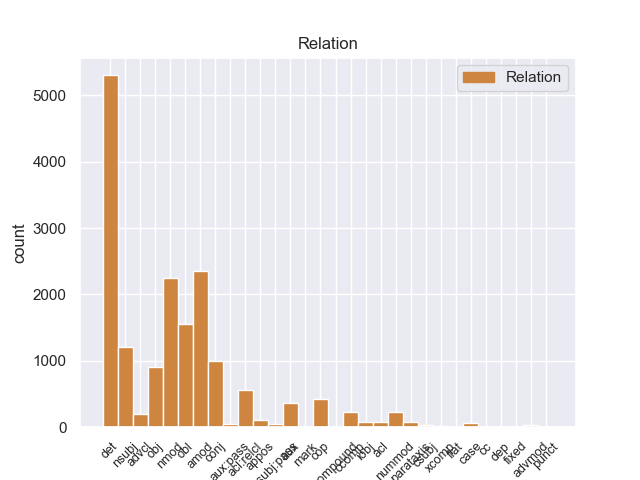
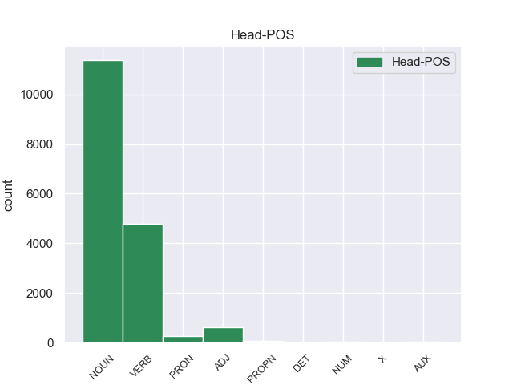
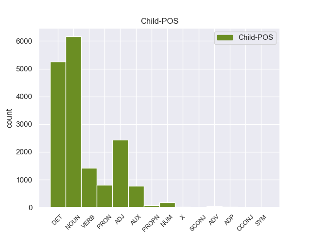

Distribution of features within this leaf



Agreement Rules sorted by frequency.
- When the dependent token is the determiner(det) of the head token, and the head token is NOUN and the dependent token is DET.
1 Ευελπιστώ _ _ _ _ 0 _ _ _
2 ότι _ _ _ _ 0 _ _ _
3 η _ _ _ _ 0 _ _ _
4 απόφαση _ _ _ _ 0 _ _ _
5 αυτή _ _ _ _ 0 _ _ _
6 , _ _ _ _ 0 _ _ _
7 συμπεριλαμβανομένης _ _ _ _ 0 _ _ _
8 και _ _ _ _ 0 _ _ _
9 της _ _ _ _ 0 _ _ _
10 αιτιολογικής _ _ _ _ 0 _ _ _
11 έκθεσης _ _ _ _ 0 _ _ _
12 που _ _ _ _ 0 _ _ _
13 την _ _ _ _ 0 _ _ _
14 συνοδεύει _ _ _ _ 0 _ _ _
15 , _ _ _ _ 0 _ _ _
16 θα _ _ _ _ 0 _ _ _
17 διαβιβαστεί _ _ _ _ 0 _ _ _
18 σ _ _ _ _ 0 _ _ _
19 τις eτ DET _ Definite=Def|Gender=Masc|Number=Plur|PronType=Art 21 det _ _
20 γαλλικές _ _ _ _ 0 _ _ _
21 αρχές αρχέ NOUN _ Gender=Masc|Number=Plur 0 _ _ _
22 , _ _ _ _ 0 _ _ _
23 εφόσον _ _ _ _ 0 _ _ _
24 υπερψηφιστεί _ _ _ _ 0 _ _ _
25 από _ _ _ _ 0 _ _ _
26 το _ _ _ _ 0 _ _ _
27 Κοινοβούλιο _ _ _ _ 0 _ _ _
28 . _ _ _ _ 0 _ _ _
1 Ευελπιστώ _ _ _ _ 0 _ _ _
2 ότι _ _ _ _ 0 _ _ _
3 η _ _ _ _ 0 _ _ _
4 απόφαση _ _ _ _ 0 _ _ _
5 αυτή _ _ _ _ 0 _ _ _
6 , _ _ _ _ 0 _ _ _
7 συμπεριλαμβανομένης _ _ _ _ 0 _ _ _
8 και _ _ _ _ 0 _ _ _
9 της _ _ _ _ 0 _ _ _
10 αιτιολογικής _ _ _ _ 0 _ _ _
11 έκθεσης _ _ _ _ 0 _ _ _
12 που _ _ _ _ 0 _ _ _
13 την _ _ _ _ 0 _ _ _
14 συνοδεύει _ _ _ _ 0 _ _ _
15 , _ _ _ _ 0 _ _ _
16 θα _ _ _ _ 0 _ _ _
17 διαβιβαστεί _ _ _ _ 0 _ _ _
18 σ _ _ _ _ 0 _ _ _
19 τις _ _ _ _ 0 _ _ _
20 γαλλικές γαλλικέ ADJ _ Gender=Masc|Number=Plur 21 amod _ _
21 αρχές αρχέ NOUN _ Gender=Masc|Number=Plur 0 _ _ _
22 , _ _ _ _ 0 _ _ _
23 εφόσον _ _ _ _ 0 _ _ _
24 υπερψηφιστεί _ _ _ _ 0 _ _ _
25 από _ _ _ _ 0 _ _ _
26 το _ _ _ _ 0 _ _ _
27 Κοινοβούλιο _ _ _ _ 0 _ _ _
28 . _ _ _ _ 0 _ _ _
1 Υπάρχει _ _ _ _ 0 _ _ _
2 μια _ _ _ _ 0 _ _ _
3 άλλη _ _ _ _ 0 _ _ _
4 πλευρά _ _ _ _ 0 _ _ _
5 της _ _ _ _ 0 _ _ _
6 υπόθεσης _ _ _ _ 0 _ _ _
7 , _ _ _ _ 0 _ _ _
8 η _ _ _ _ 0 _ _ _
9 οποία _ _ _ _ 0 _ _ _
10 , _ _ _ _ 0 _ _ _
11 δυστυχώς _ _ _ _ 0 _ _ _
12 , _ _ _ _ 0 _ _ _
13 γεννά _ _ _ _ 0 _ _ _
14 την _ _ _ _ 0 _ _ _
15 υποψία _ _ _ _ 0 _ _ _
16 ότι _ _ _ _ 0 _ _ _
17 η _ _ _ _ 0 _ _ _
18 πρόνοια _ _ _ _ 0 _ _ _
19 σχετικά _ _ _ _ 0 _ _ _
20 με _ _ _ _ 0 _ _ _
21 τις _ _ _ _ 0 _ _ _
22 προϋποθέσεις _ _ _ _ 0 _ _ _
23 ελεύθερης _ _ _ _ 0 _ _ _
24 διεξαγωγής διεξαγωγής NOUN _ Gender=Fem|Number=Sing 0 _ _ _
25 του _ _ _ _ 0 _ _ _
26 κοινοβουλευτικού _ _ _ _ 0 _ _ _
27 έργου έργου NOUN _ Gender=Masc|Number=Sing 24 nmod _ _
28 δεν _ _ _ _ 0 _ _ _
29 απασχόλησε _ _ _ _ 0 _ _ _
30 επαρκώς _ _ _ _ 0 _ _ _
31 την _ _ _ _ 0 _ _ _
32 εισαγγελική _ _ _ _ 0 _ _ _
33 αρχή _ _ _ _ 0 _ _ _
34 : _ _ _ _ 0 _ _ _
1 Σ _ _ _ _ 0 _ _ _
2 την _ _ _ _ 0 _ _ _
3 παρούσα _ _ _ _ 0 _ _ _
4 μορφή μορφή NOUN _ Gender=Fem|Number=Sing 12 obl _ _
5 της _ _ _ _ 0 _ _ _
6 , _ _ _ _ 0 _ _ _
7 η _ _ _ _ 0 _ _ _
8 αίτηση _ _ _ _ 0 _ _ _
9 άρσης _ _ _ _ 0 _ _ _
10 της _ _ _ _ 0 _ _ _
11 ασυλίας _ _ _ _ 0 _ _ _
12 παρουσιάζεται παρουσιάζετer VERB _ Mood=Ind|Number=Sing|Person=3|Tense=Pres|VerbForm=Fin 0 _ _ _
13 απαράδεκτα _ _ _ _ 0 _ _ _
14 ασαφής _ _ _ _ 0 _ _ _
15 . _ _ _ _ 0 _ _ _
1 Ευελπιστώ _ _ _ _ 0 _ _ _
2 ότι _ _ _ _ 0 _ _ _
3 η _ _ _ _ 0 _ _ _
4 απόφαση απόφαση NOUN _ Gender=Fem|Number=Sing 17 nsubj _ _
5 αυτή _ _ _ _ 0 _ _ _
6 , _ _ _ _ 0 _ _ _
7 συμπεριλαμβανομένης _ _ _ _ 0 _ _ _
8 και _ _ _ _ 0 _ _ _
9 της _ _ _ _ 0 _ _ _
10 αιτιολογικής _ _ _ _ 0 _ _ _
11 έκθεσης _ _ _ _ 0 _ _ _
12 που _ _ _ _ 0 _ _ _
13 την _ _ _ _ 0 _ _ _
14 συνοδεύει _ _ _ _ 0 _ _ _
15 , _ _ _ _ 0 _ _ _
16 θα _ _ _ _ 0 _ _ _
17 διαβιβαστεί διαβιβαστr VERB _ Mood=Ind|Number=Sing|Person=3|Tense=Pres|VerbForm=Fin 0 _ _ _
18 σ _ _ _ _ 0 _ _ _
19 τις _ _ _ _ 0 _ _ _
20 γαλλικές _ _ _ _ 0 _ _ _
21 αρχές _ _ _ _ 0 _ _ _
22 , _ _ _ _ 0 _ _ _
23 εφόσον _ _ _ _ 0 _ _ _
24 υπερψηφιστεί _ _ _ _ 0 _ _ _
25 από _ _ _ _ 0 _ _ _
26 το _ _ _ _ 0 _ _ _
27 Κοινοβούλιο _ _ _ _ 0 _ _ _
28 . _ _ _ _ 0 _ _ _
1 Υπάρχει _ _ _ _ 0 _ _ _
2 μια _ _ _ _ 0 _ _ _
3 άλλη _ _ _ _ 0 _ _ _
4 πλευρά _ _ _ _ 0 _ _ _
5 της _ _ _ _ 0 _ _ _
6 υπόθεσης _ _ _ _ 0 _ _ _
7 , _ _ _ _ 0 _ _ _
8 η _ _ _ _ 0 _ _ _
9 οποία _ _ _ _ 0 _ _ _
10 , _ _ _ _ 0 _ _ _
11 δυστυχώς _ _ _ _ 0 _ _ _
12 , _ _ _ _ 0 _ _ _
13 γεννά _ _ _ _ 0 _ _ _
14 την _ _ _ _ 0 _ _ _
15 υποψία _ _ _ _ 0 _ _ _
16 ότι _ _ _ _ 0 _ _ _
17 η _ _ _ _ 0 _ _ _
18 πρόνοια _ _ _ _ 0 _ _ _
19 σχετικά _ _ _ _ 0 _ _ _
20 με _ _ _ _ 0 _ _ _
21 τις _ _ _ _ 0 _ _ _
22 προϋποθέσεις _ _ _ _ 0 _ _ _
23 ελεύθερης _ _ _ _ 0 _ _ _
24 διεξαγωγής _ _ _ _ 0 _ _ _
25 του _ _ _ _ 0 _ _ _
26 κοινοβουλευτικού _ _ _ _ 0 _ _ _
27 έργου _ _ _ _ 0 _ _ _
28 δεν _ _ _ _ 0 _ _ _
29 απασχόλησε απασχόληr VERB _ Mood=Ind|Number=Sing|Person=3|Tense=Past|VerbForm=Fin 0 _ _ _
30 επαρκώς _ _ _ _ 0 _ _ _
31 την _ _ _ _ 0 _ _ _
32 εισαγγελική _ _ _ _ 0 _ _ _
33 αρχή αρχή NOUN _ Gender=Fem|Number=Sing 29 obj _ _
34 : _ _ _ _ 0 _ _ _
1 από _ _ _ _ 0 _ _ _
2 τα _ _ _ _ 0 _ _ _
3 δε _ _ _ _ 0 _ _ _
4 έγγραφα _ _ _ _ 0 _ _ _
5 της _ _ _ _ 0 _ _ _
6 υπόθεσης _ _ _ _ 0 _ _ _
7 προκύπτει _ _ _ _ 0 _ _ _
8 ότι _ _ _ _ 0 _ _ _
9 δεν _ _ _ _ 0 _ _ _
10 φαίνεται _ _ _ _ 0 _ _ _
11 να _ _ _ _ 0 _ _ _
12 έχει _ _ _ _ 0 _ _ _
13 ληφθεί _ _ _ _ 0 _ _ _
14 υπόψη _ _ _ _ 0 _ _ _
15 η _ _ _ _ 0 _ _ _
16 σύσταση _ _ _ _ 0 _ _ _
17 να _ _ _ _ 0 _ _ _
18 διαβιβαστεί _ _ _ _ 0 _ _ _
19 η _ _ _ _ 0 _ _ _
20 αίτηση _ _ _ _ 0 _ _ _
21 άρσης _ _ _ _ 0 _ _ _
22 της _ _ _ _ 0 _ _ _
23 ασυλίας _ _ _ _ 0 _ _ _
24 μόνον _ _ _ _ 0 _ _ _
25 επί _ _ _ _ 0 _ _ _
26 τη _ _ _ _ 0 _ _ _
27 βάσει _ _ _ _ 0 _ _ _
28 ακριβέστερου _ _ _ _ 0 _ _ _
29 προσδιορισμού _ _ _ _ 0 _ _ _
30 όσον _ _ _ _ 0 _ _ _
31 αφορά _ _ _ _ 0 _ _ _
32 τους _ _ _ _ 0 _ _ _
33 τόπους τόπου NOUN _ Gender=Masc|Number=Plur 0 _ _ _
34 και _ _ _ _ 0 _ _ _
35 τα _ _ _ _ 0 _ _ _
36 πρόσωπα πρόσωπ NOUN _ Gender=Masc|Number=Plur 33 conj _ _
37 που _ _ _ _ 0 _ _ _
38 εμπλέκονται _ _ _ _ 0 _ _ _
39 σ _ _ _ _ 0 _ _ _
40 την _ _ _ _ 0 _ _ _
41 υπόθεση _ _ _ _ 0 _ _ _
42 . _ _ _ _ 0 _ _ _
1 Ευελπιστώ _ _ _ _ 0 _ _ _
2 ότι _ _ _ _ 0 _ _ _
3 η _ _ _ _ 0 _ _ _
4 απόφαση _ _ _ _ 0 _ _ _
5 αυτή _ _ _ _ 0 _ _ _
6 , _ _ _ _ 0 _ _ _
7 συμπεριλαμβανομένης _ _ _ _ 0 _ _ _
8 και _ _ _ _ 0 _ _ _
9 της _ _ _ _ 0 _ _ _
10 αιτιολογικής _ _ _ _ 0 _ _ _
11 έκθεσης έκθεσης NOUN _ Gender=Fem|Number=Sing 0 _ _ _
12 που _ _ _ _ 0 _ _ _
13 την _ _ _ _ 0 _ _ _
14 συνοδεύει συνοδεύειr VERB _ Mood=Ind|Number=Sing|Person=3|Tense=Pres|VerbForm=Fin 11 acl:relcl _ _
15 , _ _ _ _ 0 _ _ _
16 θα _ _ _ _ 0 _ _ _
17 διαβιβαστεί _ _ _ _ 0 _ _ _
18 σ _ _ _ _ 0 _ _ _
19 τις _ _ _ _ 0 _ _ _
20 γαλλικές _ _ _ _ 0 _ _ _
21 αρχές _ _ _ _ 0 _ _ _
22 , _ _ _ _ 0 _ _ _
23 εφόσον _ _ _ _ 0 _ _ _
24 υπερψηφιστεί _ _ _ _ 0 _ _ _
25 από _ _ _ _ 0 _ _ _
26 το _ _ _ _ 0 _ _ _
27 Κοινοβούλιο _ _ _ _ 0 _ _ _
28 . _ _ _ _ 0 _ _ _
1 Ευελπιστώ _ _ _ _ 0 _ _ _
2 ότι _ _ _ _ 0 _ _ _
3 η _ _ _ _ 0 _ _ _
4 απόφαση _ _ _ _ 0 _ _ _
5 αυτή _ _ _ _ 0 _ _ _
6 , _ _ _ _ 0 _ _ _
7 συμπεριλαμβανομένης _ _ _ _ 0 _ _ _
8 και _ _ _ _ 0 _ _ _
9 της _ _ _ _ 0 _ _ _
10 αιτιολογικής _ _ _ _ 0 _ _ _
11 έκθεσης _ _ _ _ 0 _ _ _
12 που _ _ _ _ 0 _ _ _
13 την _ _ _ _ 0 _ _ _
14 συνοδεύει _ _ _ _ 0 _ _ _
15 , _ _ _ _ 0 _ _ _
16 θα er AUX _ Mood=Cnd|Number=Sing|Person=3|VerbForm=Fin 17 aux _ _
17 διαβιβαστεί διαβιβαστr VERB _ Mood=Ind|Number=Sing|Person=3|Tense=Pres|VerbForm=Fin 0 _ _ _
18 σ _ _ _ _ 0 _ _ _
19 τις _ _ _ _ 0 _ _ _
20 γαλλικές _ _ _ _ 0 _ _ _
21 αρχές _ _ _ _ 0 _ _ _
22 , _ _ _ _ 0 _ _ _
23 εφόσον _ _ _ _ 0 _ _ _
24 υπερψηφιστεί _ _ _ _ 0 _ _ _
25 από _ _ _ _ 0 _ _ _
26 το _ _ _ _ 0 _ _ _
27 Κοινοβούλιο _ _ _ _ 0 _ _ _
28 . _ _ _ _ 0 _ _ _
1 Είναι _ _ _ _ 0 _ _ _
2 σημαντικό _ _ _ _ 0 _ _ _
3 να _ _ _ _ 0 _ _ _
4 υπογραμμίσω _ _ _ _ 0 _ _ _
5 το _ _ _ _ 0 _ _ _
6 γεγονός _ _ _ _ 0 _ _ _
7 ότι _ _ _ _ 0 _ _ _
8 και _ _ _ _ 0 _ _ _
9 οι _ _ _ _ 0 _ _ _
10 δύο _ _ _ _ 0 _ _ _
11 βουλευτές _ _ _ _ 0 _ _ _
12 διατρανώνουν διατρανώνο VERB _ Mood=Ind|Number=Plur|Person=3|Tense=Pres|VerbForm=Fin 0 _ _ _
13 σθεναρά _ _ _ _ 0 _ _ _
14 την _ _ _ _ 0 _ _ _
15 αθωότητά _ _ _ _ 0 _ _ _
16 τους _ _ _ _ 0 _ _ _
17 και _ _ _ _ 0 _ _ _
18 καταγγέλλουν καταγγέλλr VERB _ Mood=Ind|Number=Plur|Person=3|Tense=Past|VerbForm=Fin 12 conj _ _
19 αυτό _ _ _ _ 0 _ _ _
20 που _ _ _ _ 0 _ _ _
21 οι _ _ _ _ 0 _ _ _
22 ίδιοι _ _ _ _ 0 _ _ _
23 θεωρούν _ _ _ _ 0 _ _ _
24 καταχρήσεις _ _ _ _ 0 _ _ _
25 σ _ _ _ _ 0 _ _ _
26 τη _ _ _ _ 0 _ _ _
27 διαδικασία _ _ _ _ 0 _ _ _
28 δίωξης _ _ _ _ 0 _ _ _
29 . _ _ _ _ 0 _ _ _
1 Θα _ _ _ _ 0 _ _ _
2 ήθελα _ _ _ _ 0 _ _ _
3 να _ _ _ _ 0 _ _ _
4 επιστήσω _ _ _ _ 0 _ _ _
5 την _ _ _ _ 0 _ _ _
6 προσοχή _ _ _ _ 0 _ _ _
7 όλων _ _ _ _ 0 _ _ _
8 των _ _ _ _ 0 _ _ _
9 συναδέλφων _ _ _ _ 0 _ _ _
10 σ _ _ _ _ 0 _ _ _
11 το _ _ _ _ 0 _ _ _
12 γεγονός _ _ _ _ 0 _ _ _
13 ότι _ _ _ _ 0 _ _ _
14 , _ _ _ _ 0 _ _ _
15 εάν _ _ _ _ 0 _ _ _
16 υπάρχουν _ _ _ _ 0 _ _ _
17 κάποιες _ _ _ _ 0 _ _ _
18 ελευθερίες _ _ _ _ 0 _ _ _
19 οι _ _ _ _ 0 _ _ _
20 οποίες _ _ _ _ 0 _ _ _
21 είναι _ _ _ _ 0 _ _ _
22 ζωτικής _ _ _ _ 0 _ _ _
23 σημασίας _ _ _ _ 0 _ _ _
24 για _ _ _ _ 0 _ _ _
25 την _ _ _ _ 0 _ _ _
26 άσκηση _ _ _ _ 0 _ _ _
27 του _ _ _ _ 0 _ _ _
28 λειτουργήματος _ _ _ _ 0 _ _ _
29 της _ _ _ _ 0 _ _ _
30 δημόσιας _ _ _ _ 0 _ _ _
31 εκπροσώπησης _ _ _ _ 0 _ _ _
32 , _ _ _ _ 0 _ _ _
33 ιδίως _ _ _ _ 0 _ _ _
34 για _ _ _ _ 0 _ _ _
35 ένα _ _ _ _ 0 _ _ _
36 Κοινοβούλιο _ _ _ _ 0 _ _ _
37 σαν _ _ _ _ 0 _ _ _
38 το _ _ _ _ 0 _ _ _
39 δικό _ _ _ _ 0 _ _ _
40 μας _ _ _ _ 0 _ _ _
41 , _ _ _ _ 0 _ _ _
42 η _ _ _ _ 0 _ _ _
43 ελευθερία _ _ _ _ 0 _ _ _
44 της _ _ _ _ 0 _ _ _
45 επικοινωνίας _ _ _ _ 0 _ _ _
46 με _ _ _ _ 0 _ _ _
47 άλλους _ _ _ _ 0 _ _ _
48 πολίτες _ _ _ _ 0 _ _ _
49 και _ _ _ _ 0 _ _ _
50 με _ _ _ _ 0 _ _ _
51 τους _ _ _ _ 0 _ _ _
52 πολίτες _ _ _ _ 0 _ _ _
53 τρίτων _ _ _ _ 0 _ _ _
54 χωρών _ _ _ _ 0 _ _ _
55 , _ _ _ _ 0 _ _ _
56 καθώς _ _ _ _ 0 _ _ _
57 και _ _ _ _ 0 _ _ _
58 η _ _ _ _ 0 _ _ _
59 ελευθερία _ _ _ _ 0 _ _ _
60 μετακίνησης _ _ _ _ 0 _ _ _
61 , _ _ _ _ 0 _ _ _
62 είναι είνar AUX _ Mood=Ind|Number=Plur|Person=3|Tense=Pres|VerbForm=Fin 63 cop _ _
63 κρίσιμες κρίσιμε ADJ _ Gender=Masc|Number=Plur|VerbForm=Part 0 _ _ _
64 για _ _ _ _ 0 _ _ _
65 τη _ _ _ _ 0 _ _ _
66 διεκπεραίωση _ _ _ _ 0 _ _ _
67 του _ _ _ _ 0 _ _ _
68 έργου _ _ _ _ 0 _ _ _
69 μας _ _ _ _ 0 _ _ _
70 . _ _ _ _ 0 _ _ _
1 Θα _ _ _ _ 0 _ _ _
2 ήθελα _ _ _ _ 0 _ _ _
3 να _ _ _ _ 0 _ _ _
4 επιστήσω _ _ _ _ 0 _ _ _
5 την _ _ _ _ 0 _ _ _
6 προσοχή _ _ _ _ 0 _ _ _
7 όλων _ _ _ _ 0 _ _ _
8 των _ _ _ _ 0 _ _ _
9 συναδέλφων _ _ _ _ 0 _ _ _
10 σ _ _ _ _ 0 _ _ _
11 το _ _ _ _ 0 _ _ _
12 γεγονός _ _ _ _ 0 _ _ _
13 ότι _ _ _ _ 0 _ _ _
14 , _ _ _ _ 0 _ _ _
15 εάν _ _ _ _ 0 _ _ _
16 υπάρχουν _ _ _ _ 0 _ _ _
17 κάποιες _ _ _ _ 0 _ _ _
18 ελευθερίες _ _ _ _ 0 _ _ _
19 οι _ _ _ _ 0 _ _ _
20 οποίες _ _ _ _ 0 _ _ _
21 είναι είνar AUX _ Mood=Ind|Number=Plur|Person=3|Tense=Pres|VerbForm=Fin 23 cop _ _
22 ζωτικής _ _ _ _ 0 _ _ _
23 σημασίας σημασίo NOUN _ Gender=Fem|Number=Plur 0 _ _ _
24 για _ _ _ _ 0 _ _ _
25 την _ _ _ _ 0 _ _ _
26 άσκηση _ _ _ _ 0 _ _ _
27 του _ _ _ _ 0 _ _ _
28 λειτουργήματος _ _ _ _ 0 _ _ _
29 της _ _ _ _ 0 _ _ _
30 δημόσιας _ _ _ _ 0 _ _ _
31 εκπροσώπησης _ _ _ _ 0 _ _ _
32 , _ _ _ _ 0 _ _ _
33 ιδίως _ _ _ _ 0 _ _ _
34 για _ _ _ _ 0 _ _ _
35 ένα _ _ _ _ 0 _ _ _
36 Κοινοβούλιο _ _ _ _ 0 _ _ _
37 σαν _ _ _ _ 0 _ _ _
38 το _ _ _ _ 0 _ _ _
39 δικό _ _ _ _ 0 _ _ _
40 μας _ _ _ _ 0 _ _ _
41 , _ _ _ _ 0 _ _ _
42 η _ _ _ _ 0 _ _ _
43 ελευθερία _ _ _ _ 0 _ _ _
44 της _ _ _ _ 0 _ _ _
45 επικοινωνίας _ _ _ _ 0 _ _ _
46 με _ _ _ _ 0 _ _ _
47 άλλους _ _ _ _ 0 _ _ _
48 πολίτες _ _ _ _ 0 _ _ _
49 και _ _ _ _ 0 _ _ _
50 με _ _ _ _ 0 _ _ _
51 τους _ _ _ _ 0 _ _ _
52 πολίτες _ _ _ _ 0 _ _ _
53 τρίτων _ _ _ _ 0 _ _ _
54 χωρών _ _ _ _ 0 _ _ _
55 , _ _ _ _ 0 _ _ _
56 καθώς _ _ _ _ 0 _ _ _
57 και _ _ _ _ 0 _ _ _
58 η _ _ _ _ 0 _ _ _
59 ελευθερία _ _ _ _ 0 _ _ _
60 μετακίνησης _ _ _ _ 0 _ _ _
61 , _ _ _ _ 0 _ _ _
62 είναι _ _ _ _ 0 _ _ _
63 κρίσιμες _ _ _ _ 0 _ _ _
64 για _ _ _ _ 0 _ _ _
65 τη _ _ _ _ 0 _ _ _
66 διεκπεραίωση _ _ _ _ 0 _ _ _
67 του _ _ _ _ 0 _ _ _
68 έργου _ _ _ _ 0 _ _ _
69 μας _ _ _ _ 0 _ _ _
70 . _ _ _ _ 0 _ _ _
1 Είναι _ _ _ _ 0 _ _ _
2 σημαντικό _ _ _ _ 0 _ _ _
3 να _ _ _ _ 0 _ _ _
4 υπογραμμίσω _ _ _ _ 0 _ _ _
5 το _ _ _ _ 0 _ _ _
6 γεγονός _ _ _ _ 0 _ _ _
7 ότι _ _ _ _ 0 _ _ _
8 και _ _ _ _ 0 _ _ _
9 οι _ _ _ _ 0 _ _ _
10 δύο δύο NUM _ Number=Plur|NumType=Card 11 nummod _ _
11 βουλευτές βουλευτέ NOUN _ Gender=Masc|Number=Plur 0 _ _ _
12 διατρανώνουν _ _ _ _ 0 _ _ _
13 σθεναρά _ _ _ _ 0 _ _ _
14 την _ _ _ _ 0 _ _ _
15 αθωότητά _ _ _ _ 0 _ _ _
16 τους _ _ _ _ 0 _ _ _
17 και _ _ _ _ 0 _ _ _
18 καταγγέλλουν _ _ _ _ 0 _ _ _
19 αυτό _ _ _ _ 0 _ _ _
20 που _ _ _ _ 0 _ _ _
21 οι _ _ _ _ 0 _ _ _
22 ίδιοι _ _ _ _ 0 _ _ _
23 θεωρούν _ _ _ _ 0 _ _ _
24 καταχρήσεις _ _ _ _ 0 _ _ _
25 σ _ _ _ _ 0 _ _ _
26 τη _ _ _ _ 0 _ _ _
27 διαδικασία _ _ _ _ 0 _ _ _
28 δίωξης _ _ _ _ 0 _ _ _
29 . _ _ _ _ 0 _ _ _
1 Υπάρχει _ _ _ _ 0 _ _ _
2 μια _ _ _ _ 0 _ _ _
3 άλλη _ _ _ _ 0 _ _ _
4 πλευρά _ _ _ _ 0 _ _ _
5 της _ _ _ _ 0 _ _ _
6 υπόθεσης _ _ _ _ 0 _ _ _
7 , _ _ _ _ 0 _ _ _
8 η e DET _ Definite=Def|Gender=Fem|Number=Sing|PronType=Art 9 det _ _
9 οποία οποία PRON _ Number=Sing|PronType=Int,Rel 0 _ _ _
10 , _ _ _ _ 0 _ _ _
11 δυστυχώς _ _ _ _ 0 _ _ _
12 , _ _ _ _ 0 _ _ _
13 γεννά _ _ _ _ 0 _ _ _
14 την _ _ _ _ 0 _ _ _
15 υποψία _ _ _ _ 0 _ _ _
16 ότι _ _ _ _ 0 _ _ _
17 η _ _ _ _ 0 _ _ _
18 πρόνοια _ _ _ _ 0 _ _ _
19 σχετικά _ _ _ _ 0 _ _ _
20 με _ _ _ _ 0 _ _ _
21 τις _ _ _ _ 0 _ _ _
22 προϋποθέσεις _ _ _ _ 0 _ _ _
23 ελεύθερης _ _ _ _ 0 _ _ _
24 διεξαγωγής _ _ _ _ 0 _ _ _
25 του _ _ _ _ 0 _ _ _
26 κοινοβουλευτικού _ _ _ _ 0 _ _ _
27 έργου _ _ _ _ 0 _ _ _
28 δεν _ _ _ _ 0 _ _ _
29 απασχόλησε _ _ _ _ 0 _ _ _
30 επαρκώς _ _ _ _ 0 _ _ _
31 την _ _ _ _ 0 _ _ _
32 εισαγγελική _ _ _ _ 0 _ _ _
33 αρχή _ _ _ _ 0 _ _ _
34 : _ _ _ _ 0 _ _ _
1 Υπάρχει _ _ _ _ 0 _ _ _
2 μια _ _ _ _ 0 _ _ _
3 άλλη _ _ _ _ 0 _ _ _
4 πλευρά _ _ _ _ 0 _ _ _
5 της _ _ _ _ 0 _ _ _
6 υπόθεσης _ _ _ _ 0 _ _ _
7 , _ _ _ _ 0 _ _ _
8 η _ _ _ _ 0 _ _ _
9 οποία οποία PRON _ Number=Sing|PronType=Int,Rel 13 nsubj _ _
10 , _ _ _ _ 0 _ _ _
11 δυστυχώς _ _ _ _ 0 _ _ _
12 , _ _ _ _ 0 _ _ _
13 γεννά γεννάr VERB _ Mood=Ind|Number=Sing|Person=3|Tense=Pres|VerbForm=Fin 0 _ _ _
14 την _ _ _ _ 0 _ _ _
15 υποψία _ _ _ _ 0 _ _ _
16 ότι _ _ _ _ 0 _ _ _
17 η _ _ _ _ 0 _ _ _
18 πρόνοια _ _ _ _ 0 _ _ _
19 σχετικά _ _ _ _ 0 _ _ _
20 με _ _ _ _ 0 _ _ _
21 τις _ _ _ _ 0 _ _ _
22 προϋποθέσεις _ _ _ _ 0 _ _ _
23 ελεύθερης _ _ _ _ 0 _ _ _
24 διεξαγωγής _ _ _ _ 0 _ _ _
25 του _ _ _ _ 0 _ _ _
26 κοινοβουλευτικού _ _ _ _ 0 _ _ _
27 έργου _ _ _ _ 0 _ _ _
28 δεν _ _ _ _ 0 _ _ _
29 απασχόλησε _ _ _ _ 0 _ _ _
30 επαρκώς _ _ _ _ 0 _ _ _
31 την _ _ _ _ 0 _ _ _
32 εισαγγελική _ _ _ _ 0 _ _ _
33 αρχή _ _ _ _ 0 _ _ _
34 : _ _ _ _ 0 _ _ _
1 Θα _ _ _ _ 0 _ _ _
2 ήθελα _ _ _ _ 0 _ _ _
3 να _ _ _ _ 0 _ _ _
4 επιστήσω _ _ _ _ 0 _ _ _
5 την _ _ _ _ 0 _ _ _
6 προσοχή _ _ _ _ 0 _ _ _
7 όλων _ _ _ _ 0 _ _ _
8 των _ _ _ _ 0 _ _ _
9 συναδέλφων _ _ _ _ 0 _ _ _
10 σ _ _ _ _ 0 _ _ _
11 το _ _ _ _ 0 _ _ _
12 γεγονός _ _ _ _ 0 _ _ _
13 ότι _ _ _ _ 0 _ _ _
14 , _ _ _ _ 0 _ _ _
15 εάν _ _ _ _ 0 _ _ _
16 υπάρχουν _ _ _ _ 0 _ _ _
17 κάποιες _ _ _ _ 0 _ _ _
18 ελευθερίες _ _ _ _ 0 _ _ _
19 οι _ _ _ _ 0 _ _ _
20 οποίες _ _ _ _ 0 _ _ _
21 είναι _ _ _ _ 0 _ _ _
22 ζωτικής _ _ _ _ 0 _ _ _
23 σημασίας _ _ _ _ 0 _ _ _
24 για _ _ _ _ 0 _ _ _
25 την _ _ _ _ 0 _ _ _
26 άσκηση _ _ _ _ 0 _ _ _
27 του _ _ _ _ 0 _ _ _
28 λειτουργήματος _ _ _ _ 0 _ _ _
29 της _ _ _ _ 0 _ _ _
30 δημόσιας δημόσιαo NOUN _ Gender=Fem|Number=Sing 31 amod _ _
31 εκπροσώπησης εκπροσώπησης NOUN _ Gender=Fem|Number=Sing 0 _ _ _
32 , _ _ _ _ 0 _ _ _
33 ιδίως _ _ _ _ 0 _ _ _
34 για _ _ _ _ 0 _ _ _
35 ένα _ _ _ _ 0 _ _ _
36 Κοινοβούλιο _ _ _ _ 0 _ _ _
37 σαν _ _ _ _ 0 _ _ _
38 το _ _ _ _ 0 _ _ _
39 δικό _ _ _ _ 0 _ _ _
40 μας _ _ _ _ 0 _ _ _
41 , _ _ _ _ 0 _ _ _
42 η _ _ _ _ 0 _ _ _
43 ελευθερία _ _ _ _ 0 _ _ _
44 της _ _ _ _ 0 _ _ _
45 επικοινωνίας _ _ _ _ 0 _ _ _
46 με _ _ _ _ 0 _ _ _
47 άλλους _ _ _ _ 0 _ _ _
48 πολίτες _ _ _ _ 0 _ _ _
49 και _ _ _ _ 0 _ _ _
50 με _ _ _ _ 0 _ _ _
51 τους _ _ _ _ 0 _ _ _
52 πολίτες _ _ _ _ 0 _ _ _
53 τρίτων _ _ _ _ 0 _ _ _
54 χωρών _ _ _ _ 0 _ _ _
55 , _ _ _ _ 0 _ _ _
56 καθώς _ _ _ _ 0 _ _ _
57 και _ _ _ _ 0 _ _ _
58 η _ _ _ _ 0 _ _ _
59 ελευθερία _ _ _ _ 0 _ _ _
60 μετακίνησης _ _ _ _ 0 _ _ _
61 , _ _ _ _ 0 _ _ _
62 είναι _ _ _ _ 0 _ _ _
63 κρίσιμες _ _ _ _ 0 _ _ _
64 για _ _ _ _ 0 _ _ _
65 τη _ _ _ _ 0 _ _ _
66 διεκπεραίωση _ _ _ _ 0 _ _ _
67 του _ _ _ _ 0 _ _ _
68 έργου _ _ _ _ 0 _ _ _
69 μας _ _ _ _ 0 _ _ _
70 . _ _ _ _ 0 _ _ _
1 Σ _ _ _ _ 0 _ _ _
2 την _ _ _ _ 0 _ _ _
3 παρούσα _ _ _ _ 0 _ _ _
4 μορφή μορφή NOUN _ Gender=Fem|Number=Sing 0 _ _ _
5 της τηo PRON _ Gender=Fem|Number=Sing|VerbForm=Part 4 amod _ _
6 , _ _ _ _ 0 _ _ _
7 η _ _ _ _ 0 _ _ _
8 αίτηση _ _ _ _ 0 _ _ _
9 άρσης _ _ _ _ 0 _ _ _
10 της _ _ _ _ 0 _ _ _
11 ασυλίας _ _ _ _ 0 _ _ _
12 παρουσιάζεται _ _ _ _ 0 _ _ _
13 απαράδεκτα _ _ _ _ 0 _ _ _
14 ασαφής _ _ _ _ 0 _ _ _
15 . _ _ _ _ 0 _ _ _
1 από _ _ _ _ 0 _ _ _
2 τα _ _ _ _ 0 _ _ _
3 δε _ _ _ _ 0 _ _ _
4 έγγραφα _ _ _ _ 0 _ _ _
5 της _ _ _ _ 0 _ _ _
6 υπόθεσης _ _ _ _ 0 _ _ _
7 προκύπτει προκύπτειr VERB _ Mood=Ind|Number=Sing|Person=3|Tense=Pres|VerbForm=Fin 0 _ _ _
8 ότι _ _ _ _ 0 _ _ _
9 δεν _ _ _ _ 0 _ _ _
10 φαίνεται _ _ _ _ 0 _ _ _
11 να _ _ _ _ 0 _ _ _
12 έχει _ _ _ _ 0 _ _ _
13 ληφθεί ληφθr VERB _ Gender=Masc|Number=Sing|Tense=Past|VerbForm=Part 7 ccomp _ _
14 υπόψη _ _ _ _ 0 _ _ _
15 η _ _ _ _ 0 _ _ _
16 σύσταση _ _ _ _ 0 _ _ _
17 να _ _ _ _ 0 _ _ _
18 διαβιβαστεί _ _ _ _ 0 _ _ _
19 η _ _ _ _ 0 _ _ _
20 αίτηση _ _ _ _ 0 _ _ _
21 άρσης _ _ _ _ 0 _ _ _
22 της _ _ _ _ 0 _ _ _
23 ασυλίας _ _ _ _ 0 _ _ _
24 μόνον _ _ _ _ 0 _ _ _
25 επί _ _ _ _ 0 _ _ _
26 τη _ _ _ _ 0 _ _ _
27 βάσει _ _ _ _ 0 _ _ _
28 ακριβέστερου _ _ _ _ 0 _ _ _
29 προσδιορισμού _ _ _ _ 0 _ _ _
30 όσον _ _ _ _ 0 _ _ _
31 αφορά _ _ _ _ 0 _ _ _
32 τους _ _ _ _ 0 _ _ _
33 τόπους _ _ _ _ 0 _ _ _
34 και _ _ _ _ 0 _ _ _
35 τα _ _ _ _ 0 _ _ _
36 πρόσωπα _ _ _ _ 0 _ _ _
37 που _ _ _ _ 0 _ _ _
38 εμπλέκονται _ _ _ _ 0 _ _ _
39 σ _ _ _ _ 0 _ _ _
40 την _ _ _ _ 0 _ _ _
41 υπόθεση _ _ _ _ 0 _ _ _
42 . _ _ _ _ 0 _ _ _
1 Ευελπιστώ _ _ _ _ 0 _ _ _
2 ότι _ _ _ _ 0 _ _ _
3 η _ _ _ _ 0 _ _ _
4 απόφαση _ _ _ _ 0 _ _ _
5 αυτή _ _ _ _ 0 _ _ _
6 , _ _ _ _ 0 _ _ _
7 συμπεριλαμβανομένης _ _ _ _ 0 _ _ _
8 και _ _ _ _ 0 _ _ _
9 της _ _ _ _ 0 _ _ _
10 αιτιολογικής _ _ _ _ 0 _ _ _
11 έκθεσης _ _ _ _ 0 _ _ _
12 που _ _ _ _ 0 _ _ _
13 την _ _ _ _ 0 _ _ _
14 συνοδεύει _ _ _ _ 0 _ _ _
15 , _ _ _ _ 0 _ _ _
16 θα _ _ _ _ 0 _ _ _
17 διαβιβαστεί διαβιβαστr VERB _ Mood=Ind|Number=Sing|Person=3|Tense=Pres|VerbForm=Fin 0 _ _ _
18 σ _ _ _ _ 0 _ _ _
19 τις _ _ _ _ 0 _ _ _
20 γαλλικές _ _ _ _ 0 _ _ _
21 αρχές _ _ _ _ 0 _ _ _
22 , _ _ _ _ 0 _ _ _
23 εφόσον _ _ _ _ 0 _ _ _
24 υπερψηφιστεί υπερψηφιστr VERB _ Mood=Ind|Number=Sing|Person=3|Tense=Imp|VerbForm=Fin 17 advcl _ _
25 από _ _ _ _ 0 _ _ _
26 το _ _ _ _ 0 _ _ _
27 Κοινοβούλιο _ _ _ _ 0 _ _ _
28 . _ _ _ _ 0 _ _ _
1 Τα _ _ _ _ 0 _ _ _
2 εγκλήματα εγκλήón NOUN _ Gender=Fem|Number=Plur 4 nsubj _ _
3 είναι _ _ _ _ 0 _ _ _
4 σοβαρά σοβαo ADJ _ Gender=Fem|Number=Plur 0 _ _ _
5 και _ _ _ _ 0 _ _ _
6 ανήκουν _ _ _ _ 0 _ _ _
7 σε _ _ _ _ 0 _ _ _
8 μια _ _ _ _ 0 _ _ _
9 κατηγορία _ _ _ _ 0 _ _ _
10 για _ _ _ _ 0 _ _ _
11 την _ _ _ _ 0 _ _ _
12 οποία _ _ _ _ 0 _ _ _
13 κανονικά _ _ _ _ 0 _ _ _
14 δεν _ _ _ _ 0 _ _ _
15 προσφέρεται _ _ _ _ 0 _ _ _
16 βουλευτική _ _ _ _ 0 _ _ _
17 ασυλία _ _ _ _ 0 _ _ _
18 , _ _ _ _ 0 _ _ _
19 επειδή _ _ _ _ 0 _ _ _
20 δεν _ _ _ _ 0 _ _ _
21 αφορούν _ _ _ _ 0 _ _ _
22 τις _ _ _ _ 0 _ _ _
23 συνήθεις _ _ _ _ 0 _ _ _
24 και _ _ _ _ 0 _ _ _
25 προσήκουσες _ _ _ _ 0 _ _ _
26 δραστηριότητες _ _ _ _ 0 _ _ _
27 βουλευτή _ _ _ _ 0 _ _ _
28 του _ _ _ _ 0 _ _ _
29 Σώματος _ _ _ _ 0 _ _ _
30 , _ _ _ _ 0 _ _ _
31 ή _ _ _ _ 0 _ _ _
32 πολιτικού _ _ _ _ 0 _ _ _
33 που _ _ _ _ 0 _ _ _
34 δραστηριοποιείται _ _ _ _ 0 _ _ _
35 σε _ _ _ _ 0 _ _ _
36 μια _ _ _ _ 0 _ _ _
37 δημοκρατική _ _ _ _ 0 _ _ _
38 κοινωνία _ _ _ _ 0 _ _ _
39 . _ _ _ _ 0 _ _ _
1 Τα _ _ _ _ 0 _ _ _
2 εγκλήματα _ _ _ _ 0 _ _ _
3 είναι _ _ _ _ 0 _ _ _
4 σοβαρά _ _ _ _ 0 _ _ _
5 και _ _ _ _ 0 _ _ _
6 ανήκουν _ _ _ _ 0 _ _ _
7 σε _ _ _ _ 0 _ _ _
8 μια _ _ _ _ 0 _ _ _
9 κατηγορία _ _ _ _ 0 _ _ _
10 για _ _ _ _ 0 _ _ _
11 την _ _ _ _ 0 _ _ _
12 οποία οποία PRON _ Number=Sing|PronType=Int,Rel 15 obl _ _
13 κανονικά _ _ _ _ 0 _ _ _
14 δεν _ _ _ _ 0 _ _ _
15 προσφέρεται προσφέρεταιr VERB _ Mood=Ind|Number=Sing|Person=3|Tense=Pres|VerbForm=Fin 0 _ _ _
16 βουλευτική _ _ _ _ 0 _ _ _
17 ασυλία _ _ _ _ 0 _ _ _
18 , _ _ _ _ 0 _ _ _
19 επειδή _ _ _ _ 0 _ _ _
20 δεν _ _ _ _ 0 _ _ _
21 αφορούν _ _ _ _ 0 _ _ _
22 τις _ _ _ _ 0 _ _ _
23 συνήθεις _ _ _ _ 0 _ _ _
24 και _ _ _ _ 0 _ _ _
25 προσήκουσες _ _ _ _ 0 _ _ _
26 δραστηριότητες _ _ _ _ 0 _ _ _
27 βουλευτή _ _ _ _ 0 _ _ _
28 του _ _ _ _ 0 _ _ _
29 Σώματος _ _ _ _ 0 _ _ _
30 , _ _ _ _ 0 _ _ _
31 ή _ _ _ _ 0 _ _ _
32 πολιτικού _ _ _ _ 0 _ _ _
33 που _ _ _ _ 0 _ _ _
34 δραστηριοποιείται _ _ _ _ 0 _ _ _
35 σε _ _ _ _ 0 _ _ _
36 μια _ _ _ _ 0 _ _ _
37 δημοκρατική _ _ _ _ 0 _ _ _
38 κοινωνία _ _ _ _ 0 _ _ _
39 . _ _ _ _ 0 _ _ _
1 Κύριε _ _ _ _ 0 _ _ _
2 Πρόεδρε _ _ _ _ 0 _ _ _
3 , _ _ _ _ 0 _ _ _
4 οι _ _ _ _ 0 _ _ _
5 υπό _ _ _ _ 0 _ _ _
6 συζήτηση _ _ _ _ 0 _ _ _
7 υποθέσεις _ _ _ _ 0 _ _ _
8 αφορούν _ _ _ _ 0 _ _ _
9 πολύ _ _ _ _ 0 _ _ _
10 σοβαρές _ _ _ _ 0 _ _ _
11 κατηγορίες _ _ _ _ 0 _ _ _
12 , _ _ _ _ 0 _ _ _
13 οι _ _ _ _ 0 _ _ _
14 οποίες _ _ _ _ 0 _ _ _
15 βαρύνουν _ _ _ _ 0 _ _ _
16 δύο _ _ _ _ 0 _ _ _
17 βουλευτές _ _ _ _ 0 _ _ _
18 του _ _ _ _ 0 _ _ _
19 Σώματος _ _ _ _ 0 _ _ _
20 και _ _ _ _ 0 _ _ _
21 αναφέρονται _ _ _ _ 0 _ _ _
22 σ _ _ _ _ 0 _ _ _
23 την _ _ _ _ 0 _ _ _
24 πρώτη πρώτo ADJ _ Gender=Fem|Number=Sing|NumType=Ord 25 nummod _ _
25 σελίδα σελίδα NOUN _ Gender=Fem|Number=Sing 0 _ _ _
26 της _ _ _ _ 0 _ _ _
27 αιτιολογικής _ _ _ _ 0 _ _ _
28 έκθεσης _ _ _ _ 0 _ _ _
29 της _ _ _ _ 0 _ _ _
30 έκθεσής _ _ _ _ 0 _ _ _
31 μου _ _ _ _ 0 _ _ _
32 , _ _ _ _ 0 _ _ _
33 σ _ _ _ _ 0 _ _ _
34 την _ _ _ _ 0 _ _ _
35 οποία _ _ _ _ 0 _ _ _
36 συνιστώ _ _ _ _ 0 _ _ _
37 σ _ _ _ _ 0 _ _ _
38 τους _ _ _ _ 0 _ _ _
39 συναδέλφους _ _ _ _ 0 _ _ _
40 να _ _ _ _ 0 _ _ _
41 ρίξουν _ _ _ _ 0 _ _ _
42 μια _ _ _ _ 0 _ _ _
43 ματιά _ _ _ _ 0 _ _ _
44 . _ _ _ _ 0 _ _ _
1 Τα _ _ _ _ 0 _ _ _
2 Σύβοτα _ _ _ _ 0 _ _ _
3 είναι _ _ _ _ 0 _ _ _
4 ένας _ _ _ _ 0 _ _ _
5 παραθαλάσσιος _ _ _ _ 0 _ _ _
6 οικισμός οικισμός NOUN _ Gender=Masc|Number=Sing 0 _ _ _
7 σ _ _ _ _ 0 _ _ _
8 το _ _ _ _ 0 _ _ _
9 νότιο _ _ _ _ 0 _ _ _
10 άκρο _ _ _ _ 0 _ _ _
11 του _ _ _ _ 0 _ _ _
12 Ν. _ _ _ _ 0 _ _ _
13 Θεσπρωτίας _ _ _ _ 0 _ _ _
14 χτισμένα χτιer VERB _ Gender=Fem|Number=Sing|VerbForm=Part 6 acl _ _
15 σε _ _ _ _ 0 _ _ _
16 έναν _ _ _ _ 0 _ _ _
17 μικρό _ _ _ _ 0 _ _ _
18 , _ _ _ _ 0 _ _ _
19 κλειστό _ _ _ _ 0 _ _ _
20 κόλπο _ _ _ _ 0 _ _ _
21 . _ _ _ _ 0 _ _ _
1 Πρόκειται _ _ _ _ 0 _ _ _
2 για _ _ _ _ 0 _ _ _
3 την _ _ _ _ 0 _ _ _
4 πώληση _ _ _ _ 0 _ _ _
5 όπλων _ _ _ _ 0 _ _ _
6 σε _ _ _ _ 0 _ _ _
7 ορισμένες _ _ _ _ 0 _ _ _
8 αφρικανικές _ _ _ _ 0 _ _ _
9 χώρες _ _ _ _ 0 _ _ _
10 , _ _ _ _ 0 _ _ _
11 κατά _ _ _ _ 0 _ _ _
12 παράβαση _ _ _ _ 0 _ _ _
13 της _ _ _ _ 0 _ _ _
14 γαλλικής _ _ _ _ 0 _ _ _
15 νομοθεσίας _ _ _ _ 0 _ _ _
16 περί _ _ _ _ 0 _ _ _
17 εμπορίου _ _ _ _ 0 _ _ _
18 όπλων _ _ _ _ 0 _ _ _
19 , _ _ _ _ 0 _ _ _
20 από _ _ _ _ 0 _ _ _
21 εταιρείες _ _ _ _ 0 _ _ _
22 μέσω _ _ _ _ 0 _ _ _
23 των _ _ _ _ 0 _ _ _
24 οποίων _ _ _ _ 0 _ _ _
25 πραγματοποιήθηκαν _ _ _ _ 0 _ _ _
26 αναρίθμητες _ _ _ _ 0 _ _ _
27 μεταφορές μεταφορέ NOUN _ Gender=Masc|Number=Plur 0 _ _ _
28 ποσών ποσώ NOUN _ Gender=Masc|Number=Plur 27 appos _ _
29 ή _ _ _ _ 0 _ _ _
30 ακόμα _ _ _ _ 0 _ _ _
31 και _ _ _ _ 0 _ _ _
32 πληρωμές _ _ _ _ 0 _ _ _
33 σε _ _ _ _ 0 _ _ _
34 ρευστό _ _ _ _ 0 _ _ _
35 , _ _ _ _ 0 _ _ _
36 σε _ _ _ _ 0 _ _ _
37 μια _ _ _ _ 0 _ _ _
38 σειρά _ _ _ _ 0 _ _ _
39 διαφόρων _ _ _ _ 0 _ _ _
40 προσώπων _ _ _ _ 0 _ _ _
41 . _ _ _ _ 0 _ _ _
1 Ευελπιστώ _ _ _ _ 0 _ _ _
2 ότι _ _ _ _ 0 _ _ _
3 η _ _ _ _ 0 _ _ _
4 απόφαση _ _ _ _ 0 _ _ _
5 αυτή _ _ _ _ 0 _ _ _
6 , _ _ _ _ 0 _ _ _
7 συμπεριλαμβανομένης _ _ _ _ 0 _ _ _
8 και _ _ _ _ 0 _ _ _
9 της _ _ _ _ 0 _ _ _
10 αιτιολογικής _ _ _ _ 0 _ _ _
11 έκθεσης _ _ _ _ 0 _ _ _
12 που _ _ _ _ 0 _ _ _
13 την éτη PRON _ Case=Acc|Gender=Fem|Number=Sing|Person=3|PrepCase=Npr|PronType=Prs 14 obj _ _
14 συνοδεύει συνοδεύειr VERB _ Mood=Ind|Number=Sing|Person=3|Tense=Pres|VerbForm=Fin 0 _ _ _
15 , _ _ _ _ 0 _ _ _
16 θα _ _ _ _ 0 _ _ _
17 διαβιβαστεί _ _ _ _ 0 _ _ _
18 σ _ _ _ _ 0 _ _ _
19 τις _ _ _ _ 0 _ _ _
20 γαλλικές _ _ _ _ 0 _ _ _
21 αρχές _ _ _ _ 0 _ _ _
22 , _ _ _ _ 0 _ _ _
23 εφόσον _ _ _ _ 0 _ _ _
24 υπερψηφιστεί _ _ _ _ 0 _ _ _
25 από _ _ _ _ 0 _ _ _
26 το _ _ _ _ 0 _ _ _
27 Κοινοβούλιο _ _ _ _ 0 _ _ _
28 . _ _ _ _ 0 _ _ _
1 Ευελπιστώ _ _ _ _ 0 _ _ _
2 ότι _ _ _ _ 0 _ _ _
3 η _ _ _ _ 0 _ _ _
4 απόφαση _ _ _ _ 0 _ _ _
5 αυτή _ _ _ _ 0 _ _ _
6 , _ _ _ _ 0 _ _ _
7 συμπεριλαμβανομένης συμπεριλαμβανομένηo ADJ _ Gender=Fem|Number=Sing|VerbForm=Part 0 _ _ _
8 και _ _ _ _ 0 _ _ _
9 της _ _ _ _ 0 _ _ _
10 αιτιολογικής _ _ _ _ 0 _ _ _
11 έκθεσης έκθεσης NOUN _ Gender=Fem|Number=Sing 7 nmod _ _
12 που _ _ _ _ 0 _ _ _
13 την _ _ _ _ 0 _ _ _
14 συνοδεύει _ _ _ _ 0 _ _ _
15 , _ _ _ _ 0 _ _ _
16 θα _ _ _ _ 0 _ _ _
17 διαβιβαστεί _ _ _ _ 0 _ _ _
18 σ _ _ _ _ 0 _ _ _
19 τις _ _ _ _ 0 _ _ _
20 γαλλικές _ _ _ _ 0 _ _ _
21 αρχές _ _ _ _ 0 _ _ _
22 , _ _ _ _ 0 _ _ _
23 εφόσον _ _ _ _ 0 _ _ _
24 υπερψηφιστεί _ _ _ _ 0 _ _ _
25 από _ _ _ _ 0 _ _ _
26 το _ _ _ _ 0 _ _ _
27 Κοινοβούλιο _ _ _ _ 0 _ _ _
28 . _ _ _ _ 0 _ _ _
1 Η _ _ _ _ 0 _ _ _
2 μεγάλη _ _ _ _ 0 _ _ _
3 σημασία _ _ _ _ 0 _ _ _
4 του _ _ _ _ 0 _ _ _
5 προγράμματος _ _ _ _ 0 _ _ _
6 ΣΩΚΡΑΤΗΣ _ _ _ _ 0 _ _ _
7 σ _ _ _ _ 0 _ _ _
8 τον _ _ _ _ 0 _ _ _
9 ευρωπαϊκό _ _ _ _ 0 _ _ _
10 χώρο _ _ _ _ 0 _ _ _
11 εκπαίδευσης _ _ _ _ 0 _ _ _
12 έχει _ _ _ _ 0 _ _ _
13 υπογραμμισθεί υπογραμμισθr VERB _ Gender=Masc|Number=Sing|Tense=Past|VerbForm=Part 0 _ _ _
14 πολλές _ _ _ _ 0 _ _ _
15 φορές _ _ _ _ 0 _ _ _
16 και _ _ _ _ 0 _ _ _
17 είναι ίναιer AUX _ Mood=Ind|Number=Sing|Person=3|Tense=Pres|VerbForm=Fin 13 aux:pass _ _
18 αδιαμφισβήτητη _ _ _ _ 0 _ _ _
19 . _ _ _ _ 0 _ _ _
1 Σε _ _ _ _ 0 _ _ _
2 μία _ _ _ _ 0 _ _ _
3 συλλογή _ _ _ _ 0 _ _ _
4 ομιλιών _ _ _ _ 0 _ _ _
5 του _ _ _ _ 0 _ _ _
6 , _ _ _ _ 0 _ _ _
7 που _ _ _ _ 0 _ _ _
8 εκδόθηκε _ _ _ _ 0 _ _ _
9 σ _ _ _ _ 0 _ _ _
10 την _ _ _ _ 0 _ _ _
11 Ινδία _ _ _ _ 0 _ _ _
12 το _ _ _ _ 0 _ _ _
13 1998 _ _ _ _ 0 _ _ _
14 , _ _ _ _ 0 _ _ _
15 ο _ _ _ _ 0 _ _ _
16 Δαλάι _ _ _ _ 0 _ _ _
17 Λάμα _ _ _ _ 0 _ _ _
18 έκανε _ _ _ _ 0 _ _ _
19 ξανά _ _ _ _ 0 _ _ _
20 λόγο _ _ _ _ 0 _ _ _
21 για _ _ _ _ 0 _ _ _
22 " _ _ _ _ 0 _ _ _
23 κινεζικό _ _ _ _ 0 _ _ _
24 απαρτχάιντ _ _ _ _ 0 _ _ _
25 " _ _ _ _ 0 _ _ _
26 , _ _ _ _ 0 _ _ _
27 μέσω _ _ _ _ 0 _ _ _
28 της _ _ _ _ 0 _ _ _
29 άρνησης _ _ _ _ 0 _ _ _
30 ίσων _ _ _ _ 0 _ _ _
31 κοινωνικών κοινωνικώ ADJ _ Gender=Fem|Number=Plur 0 _ _ _
32 και _ _ _ _ 0 _ _ _
33 οικονομικών οικονομικώ ADJ _ Number=Plur 31 conj _ _
34 δικαιωμάτων _ _ _ _ 0 _ _ _
35 για _ _ _ _ 0 _ _ _
36 τους _ _ _ _ 0 _ _ _
37 Θιβετιανούς _ _ _ _ 0 _ _ _
38 . _ _ _ _ 0 _ _ _
1 Τόσο _ _ _ _ 0 _ _ _
2 το _ _ _ _ 0 _ _ _
3 ζήτημα ζήτημα NOUN _ Gender=Masc|Number=Sing 14 nsubj _ _
4 της _ _ _ _ 0 _ _ _
5 ασυλίας _ _ _ _ 0 _ _ _
6 όσο _ _ _ _ 0 _ _ _
7 και _ _ _ _ 0 _ _ _
8 η _ _ _ _ 0 _ _ _
9 αίτηση _ _ _ _ 0 _ _ _
10 για _ _ _ _ 0 _ _ _
11 άρση _ _ _ _ 0 _ _ _
12 της _ _ _ _ 0 _ _ _
13 έχουν _ _ _ _ 0 _ _ _
14 σχέση σχέση NOUN _ Gender=Fem|Number=Sing 0 _ _ _
15 μόνο _ _ _ _ 0 _ _ _
16 με _ _ _ _ 0 _ _ _
17 το _ _ _ _ 0 _ _ _
18 εάν _ _ _ _ 0 _ _ _
19 το _ _ _ _ 0 _ _ _
20 Δικαστήριο _ _ _ _ 0 _ _ _
21 μπορεί _ _ _ _ 0 _ _ _
22 να _ _ _ _ 0 _ _ _
23 εκδώσει _ _ _ _ 0 _ _ _
24 δεσμευτικά _ _ _ _ 0 _ _ _
25 βουλεύματα _ _ _ _ 0 _ _ _
26 για _ _ _ _ 0 _ _ _
27 τον _ _ _ _ 0 _ _ _
28 περιορισμό _ _ _ _ 0 _ _ _
29 της _ _ _ _ 0 _ _ _
30 ελεύθερης _ _ _ _ 0 _ _ _
31 μετακίνησης _ _ _ _ 0 _ _ _
32 των _ _ _ _ 0 _ _ _
33 βουλευτών _ _ _ _ 0 _ _ _
34 του _ _ _ _ 0 _ _ _
35 Ευρωπαϊκού _ _ _ _ 0 _ _ _
36 Κοινοβουλίου _ _ _ _ 0 _ _ _
37 ή _ _ _ _ 0 _ _ _
38 την _ _ _ _ 0 _ _ _
39 ελευθερία _ _ _ _ 0 _ _ _
40 τους _ _ _ _ 0 _ _ _
41 να _ _ _ _ 0 _ _ _
42 έρχονται _ _ _ _ 0 _ _ _
43 σε _ _ _ _ 0 _ _ _
44 επικοινωνία _ _ _ _ 0 _ _ _
45 με _ _ _ _ 0 _ _ _
46 άλλα _ _ _ _ 0 _ _ _
47 πρόσωπα _ _ _ _ 0 _ _ _
48 . _ _ _ _ 0 _ _ _
1 Σύμφωνα _ _ _ _ 0 _ _ _
2 με _ _ _ _ 0 _ _ _
3 το _ _ _ _ 0 _ _ _
4 άρθρο _ _ _ _ 0 _ _ _
5 10 _ _ _ _ 0 _ _ _
6 του _ _ _ _ 0 _ _ _
7 Πρωτοκόλλου _ _ _ _ 0 _ _ _
8 του _ _ _ _ 0 _ _ _
9 1965 _ _ _ _ 0 _ _ _
10 , _ _ _ _ 0 _ _ _
11 δεν _ _ _ _ 0 _ _ _
12 υφίσταται _ _ _ _ 0 _ _ _
13 σχετική _ _ _ _ 0 _ _ _
14 ασυλία _ _ _ _ 0 _ _ _
15 για _ _ _ _ 0 _ _ _
16 βουλευτή _ _ _ _ 0 _ _ _
17 της _ _ _ _ 0 _ _ _
18 Γαλλικής _ _ _ _ 0 _ _ _
19 Εθνοσυνέλευσης _ _ _ _ 0 _ _ _
20 ή _ _ _ _ 0 _ _ _
21 , _ _ _ _ 0 _ _ _
22 κατά _ _ _ _ 0 _ _ _
23 συνέπεια _ _ _ _ 0 _ _ _
24 , _ _ _ _ 0 _ _ _
25 για _ _ _ _ 0 _ _ _
26 γάλλο _ _ _ _ 0 _ _ _
27 βουλευτή _ _ _ _ 0 _ _ _
28 του _ _ _ _ 0 _ _ _
29 Ευρωπαϊκού _ _ _ _ 0 _ _ _
30 Κοινοβουλίου _ _ _ _ 0 _ _ _
31 σε _ _ _ _ 0 _ _ _
32 περίπτωση _ _ _ _ 0 _ _ _
33 δίωξης _ _ _ _ 0 _ _ _
34 για _ _ _ _ 0 _ _ _
35 κατηγορίες _ _ _ _ 0 _ _ _
36 αυτού _ _ _ _ 0 _ _ _
37 του του ADJ _ Gender=Masc|Number=Sing|PronType=Dem 38 det _ _
38 είδους είδους NOUN _ Gender=Masc|Number=Sing 0 _ _ _
39 . _ _ _ _ 0 _ _ _
1 Πρέπει _ _ _ _ 0 _ _ _
2 ωστόσο _ _ _ _ 0 _ _ _
3 να _ _ _ _ 0 _ _ _
4 προσέξουμε _ _ _ _ 0 _ _ _
5 σ _ _ _ _ 0 _ _ _
6 τις _ _ _ _ 0 _ _ _
7 εβδομάδες _ _ _ _ 0 _ _ _
8 , _ _ _ _ 0 _ _ _
9 τους _ _ _ _ 0 _ _ _
10 μήνες _ _ _ _ 0 _ _ _
11 και _ _ _ _ 0 _ _ _
12 τα _ _ _ _ 0 _ _ _
13 χρόνια _ _ _ _ 0 _ _ _
14 που _ _ _ _ 0 _ _ _
15 έχουμε έχοer VERB _ Mood=Ind|Number=Plur|Person=3|Tense=Past|VerbForm=Fin 0 _ _ _
16 μπροστά _ _ _ _ 0 _ _ _
17 μας yα PRON _ Case=Acc,Dat|Number=Plur|Person=1|PrepCase=Npr|PronType=Prs 15 iobj _ _
18 να _ _ _ _ 0 _ _ _
19 μην _ _ _ _ 0 _ _ _
20 επιτρέψουμε _ _ _ _ 0 _ _ _
21 παραβιάσεις _ _ _ _ 0 _ _ _
22 των _ _ _ _ 0 _ _ _
23 ανθρωπίνων _ _ _ _ 0 _ _ _
24 δικαιωμάτων _ _ _ _ 0 _ _ _
25 σ _ _ _ _ 0 _ _ _
26 το _ _ _ _ 0 _ _ _
27 όνομα _ _ _ _ 0 _ _ _
28 της _ _ _ _ 0 _ _ _
29 καταπολέμησης _ _ _ _ 0 _ _ _
30 της _ _ _ _ 0 _ _ _
31 τρομοκρατίας _ _ _ _ 0 _ _ _
32 . _ _ _ _ 0 _ _ _
1 Πρέπει _ _ _ _ 0 _ _ _
2 να _ _ _ _ 0 _ _ _
3 επισημανθεί _ _ _ _ 0 _ _ _
4 ότι _ _ _ _ 0 _ _ _
5 ο _ _ _ _ 0 _ _ _
6 Εισαγγελέας _ _ _ _ 0 _ _ _
7 Πλημμελειοδικών _ _ _ _ 0 _ _ _
8 υποστήριξε _ _ _ _ 0 _ _ _
9 σθεναρά _ _ _ _ 0 _ _ _
10 την _ _ _ _ 0 _ _ _
11 αίτηση _ _ _ _ 0 _ _ _
12 επιβολής _ _ _ _ 0 _ _ _
13 μέτρων _ _ _ _ 0 _ _ _
14 δικαστικής _ _ _ _ 0 _ _ _
15 επιτήρησης _ _ _ _ 0 _ _ _
16 που _ _ _ _ 0 _ _ _
17 υπέβαλαν _ _ _ _ 0 _ _ _
18 οι _ _ _ _ 0 _ _ _
19 ανακριτές _ _ _ _ 0 _ _ _
20 , _ _ _ _ 0 _ _ _
21 υπογραμμίζοντας _ _ _ _ 0 _ _ _
22 τη _ _ _ _ 0 _ _ _
23 σοβαρότητα _ _ _ _ 0 _ _ _
24 και _ _ _ _ 0 _ _ _
25 τη _ _ _ _ 0 _ _ _
26 φύση _ _ _ _ 0 _ _ _
27 της _ _ _ _ 0 _ _ _
28 υπόθεσης _ _ _ _ 0 _ _ _
29 και _ _ _ _ 0 _ _ _
30 χαρακτηρίζοντας _ _ _ _ 0 _ _ _
31 μάλιστα _ _ _ _ 0 _ _ _
32 την _ _ _ _ 0 _ _ _
33 αίτηση αίτηση NOUN _ Gender=Fem|Number=Sing 0 _ _ _
34 αυτή αυτe PRON _ Case=Acc,Nom|Gender=Fem|Number=Sing|Person=3|PronType=Prs 33 det _ _
35 ως _ _ _ _ 0 _ _ _
36 απαραίτητη _ _ _ _ 0 _ _ _
37 επί _ _ _ _ 0 _ _ _
38 της _ _ _ _ 0 _ _ _
39 αρχής _ _ _ _ 0 _ _ _
40 . _ _ _ _ 0 _ _ _
1 Ο _ _ _ _ 0 _ _ _
2 Πρόεδρος _ _ _ _ 0 _ _ _
3 της _ _ _ _ 0 _ _ _
4 Γαλλίας _ _ _ _ 0 _ _ _
5 , _ _ _ _ 0 _ _ _
6 Νικολά _ _ _ _ 0 _ _ _
7 Σαρκοζί _ _ _ _ 0 _ _ _
8 , _ _ _ _ 0 _ _ _
9 θα _ _ _ _ 0 _ _ _
10 ζητήσει _ _ _ _ 0 _ _ _
11 την _ _ _ _ 0 _ _ _
12 έκδοσή έκδοσή NOUN _ Gender=Fem|Number=Sing 0 _ _ _
13 του του PRON _ Case=Dat|Number=Sing|Person=3|PronType=Prs 12 nmod _ _
14 » _ _ _ _ 0 _ _ _
15 . _ _ _ _ 0 _ _ _
1 Σύμφωνα _ _ _ _ 0 _ _ _
2 με _ _ _ _ 0 _ _ _
3 το _ _ _ _ 0 _ _ _
4 άρθρο _ _ _ _ 0 _ _ _
5 10 _ _ _ _ 0 _ _ _
6 του _ _ _ _ 0 _ _ _
7 Πρωτοκόλλου _ _ _ _ 0 _ _ _
8 του _ _ _ _ 0 _ _ _
9 1965 _ _ _ _ 0 _ _ _
10 , _ _ _ _ 0 _ _ _
11 δεν _ _ _ _ 0 _ _ _
12 υφίσταται _ _ _ _ 0 _ _ _
13 σχετική _ _ _ _ 0 _ _ _
14 ασυλία _ _ _ _ 0 _ _ _
15 για _ _ _ _ 0 _ _ _
16 βουλευτή _ _ _ _ 0 _ _ _
17 της _ _ _ _ 0 _ _ _
18 Γαλλικής _ _ _ _ 0 _ _ _
19 Εθνοσυνέλευσης _ _ _ _ 0 _ _ _
20 ή _ _ _ _ 0 _ _ _
21 , _ _ _ _ 0 _ _ _
22 κατά _ _ _ _ 0 _ _ _
23 συνέπεια _ _ _ _ 0 _ _ _
24 , _ _ _ _ 0 _ _ _
25 για _ _ _ _ 0 _ _ _
26 γάλλο γάλλο ADJ _ Gender=Masc|Number=Sing 27 nmod _ _
27 βουλευτή βουλευτή NOUN _ Gender=Masc|Number=Sing 0 _ _ _
28 του _ _ _ _ 0 _ _ _
29 Ευρωπαϊκού _ _ _ _ 0 _ _ _
30 Κοινοβουλίου _ _ _ _ 0 _ _ _
31 σε _ _ _ _ 0 _ _ _
32 περίπτωση _ _ _ _ 0 _ _ _
33 δίωξης _ _ _ _ 0 _ _ _
34 για _ _ _ _ 0 _ _ _
35 κατηγορίες _ _ _ _ 0 _ _ _
36 αυτού _ _ _ _ 0 _ _ _
37 του _ _ _ _ 0 _ _ _
38 είδους _ _ _ _ 0 _ _ _
39 . _ _ _ _ 0 _ _ _
1 Ο _ _ _ _ 0 _ _ _
2 αλ αλ NOUN _ Gender=Masc|Number=Sing 5 nsubj:pass _ _
3 Σενούσι _ _ _ _ 0 _ _ _
4 έχει _ _ _ _ 0 _ _ _
5 καταδικαστεί καταδικαστr VERB _ Gender=Masc|Number=Sing|Tense=Past|VerbForm=Part 0 _ _ _
6 σε _ _ _ _ 0 _ _ _
7 ισόβια _ _ _ _ 0 _ _ _
8 κάθειρξη _ _ _ _ 0 _ _ _
9 λόγω _ _ _ _ 0 _ _ _
10 συμμετοχής _ _ _ _ 0 _ _ _
11 του _ _ _ _ 0 _ _ _
12 , _ _ _ _ 0 _ _ _
13 το _ _ _ _ 0 _ _ _
14 1989 _ _ _ _ 0 _ _ _
15 , _ _ _ _ 0 _ _ _
16 σε _ _ _ _ 0 _ _ _
17 επίθεση _ _ _ _ 0 _ _ _
18 κατά _ _ _ _ 0 _ _ _
19 γαλλικού _ _ _ _ 0 _ _ _
20 αεροσκάφους _ _ _ _ 0 _ _ _
21 , _ _ _ _ 0 _ _ _
22 κατά _ _ _ _ 0 _ _ _
23 την _ _ _ _ 0 _ _ _
24 οποία _ _ _ _ 0 _ _ _
25 σκοτώθηκαν _ _ _ _ 0 _ _ _
26 170 _ _ _ _ 0 _ _ _
27 άνθρωποι _ _ _ _ 0 _ _ _
28 . _ _ _ _ 0 _ _ _
1 Οι _ _ _ _ 0 _ _ _
2 αρχές _ _ _ _ 0 _ _ _
3 των eτ DET _ Definite=Def|Gender=Masc|Number=Plur|PronType=Art 4 case _ _
4 πόλεων πόλεω NOUN _ Gender=Masc|Number=Plur 0 _ _ _
5 εξέφρασαν _ _ _ _ 0 _ _ _
6 αυτή _ _ _ _ 0 _ _ _
7 την _ _ _ _ 0 _ _ _
8 επιθυμία _ _ _ _ 0 _ _ _
9 σε _ _ _ _ 0 _ _ _
10 συνέδριο _ _ _ _ 0 _ _ _
11 που _ _ _ _ 0 _ _ _
12 διεξήχθη _ _ _ _ 0 _ _ _
13 σ _ _ _ _ 0 _ _ _
14 τη _ _ _ _ 0 _ _ _
15 Βεγγάζη _ _ _ _ 0 _ _ _
16 . _ _ _ _ 0 _ _ _
1 Ο _ _ _ _ 0 _ _ _
2 ηγέτης _ _ _ _ 0 _ _ _
3 του _ _ _ _ 0 _ _ _
4 Μετώπου _ _ _ _ 0 _ _ _
5 της _ _ _ _ 0 _ _ _
6 Αριστεράς _ _ _ _ 0 _ _ _
7 , _ _ _ _ 0 _ _ _
8 Σεργκέι _ _ _ _ 0 _ _ _
9 Ουνταλτσόφ _ _ _ _ 0 _ _ _
10 , _ _ _ _ 0 _ _ _
11 ο _ _ _ _ 0 _ _ _
12 οποίος _ _ _ _ 0 _ _ _
13 είχε _ _ _ _ 0 _ _ _
14 συλληφθεί _ _ _ _ 0 _ _ _
15 κατά _ _ _ _ 0 _ _ _
16 τη _ _ _ _ 0 _ _ _
17 διάρκεια _ _ _ _ 0 _ _ _
18 αντικυβερνητικών _ _ _ _ 0 _ _ _
19 διαδηλώσεων _ _ _ _ 0 _ _ _
20 , _ _ _ _ 0 _ _ _
21 αφέθηκε αφέθηκar VERB _ Mood=Ind|Number=Sing|Person=3|Tense=Past|VerbForm=Fin 22 cop _ _
22 ελεύθερος ελεύθερος ADJ _ Gender=Masc|Number=Sing 0 _ _ _
23 με _ _ _ _ 0 _ _ _
24 πρόστιμο _ _ _ _ 0 _ _ _
25 χίλιων _ _ _ _ 0 _ _ _
26 ρούβλιων _ _ _ _ 0 _ _ _
27 . _ _ _ _ 0 _ _ _
1 Τα e DET _ Definite=Def|Gender=Fem|Number=Plur|PronType=Art 2 det _ _
2 Σύβοτα σύβοτ PROPN _ Gender=Fem|Number=Plur 0 _ _ _
3 Θεσπρωτίας _ _ _ _ 0 _ _ _
4 . _ _ _ _ 0 _ _ _
1 Είναι _ _ _ _ 0 _ _ _
2 σημαντικό _ _ _ _ 0 _ _ _
3 να _ _ _ _ 0 _ _ _
4 υπογραμμίσω _ _ _ _ 0 _ _ _
5 το _ _ _ _ 0 _ _ _
6 γεγονός _ _ _ _ 0 _ _ _
7 ότι _ _ _ _ 0 _ _ _
8 και _ _ _ _ 0 _ _ _
9 οι _ _ _ _ 0 _ _ _
10 δύο _ _ _ _ 0 _ _ _
11 βουλευτές _ _ _ _ 0 _ _ _
12 διατρανώνουν _ _ _ _ 0 _ _ _
13 σθεναρά _ _ _ _ 0 _ _ _
14 την _ _ _ _ 0 _ _ _
15 αθωότητά _ _ _ _ 0 _ _ _
16 τους _ _ _ _ 0 _ _ _
17 και _ _ _ _ 0 _ _ _
18 καταγγέλλουν _ _ _ _ 0 _ _ _
19 αυτό _ _ _ _ 0 _ _ _
20 που _ _ _ _ 0 _ _ _
21 οι _ _ _ _ 0 _ _ _
22 ίδιοι _ _ _ _ 0 _ _ _
23 θεωρούν θεωρούr VERB _ Mood=Ind|Number=Plur|Person=3|Tense=Pres|VerbForm=Fin 24 cop _ _
24 καταχρήσεις καταχρήσει NOUN _ Gender=Masc|Number=Plur 0 _ _ _
25 σ _ _ _ _ 0 _ _ _
26 τη _ _ _ _ 0 _ _ _
27 διαδικασία _ _ _ _ 0 _ _ _
28 δίωξης _ _ _ _ 0 _ _ _
29 . _ _ _ _ 0 _ _ _
1 Η _ _ _ _ 0 _ _ _
2 Αστυνομία _ _ _ _ 0 _ _ _
3 απέκλεισε απέκλεισar VERB _ Mood=Ind|Number=Sing|Person=3|Tense=Past|VerbForm=Fin 0 _ _ _
4 την _ _ _ _ 0 _ _ _
5 πόλη _ _ _ _ 0 _ _ _
6 με _ _ _ _ 0 _ _ _
7 σκοπό _ _ _ _ 0 _ _ _
8 να _ _ _ _ 0 _ _ _
9 βρεί _ _ _ _ 0 _ _ _
10 τους _ _ _ _ 0 _ _ _
11 κρατούμενους _ _ _ _ 0 _ _ _
12 και _ _ _ _ 0 _ _ _
13 να _ _ _ _ 0 _ _ _
14 τους _ _ _ _ 0 _ _ _
15 ξαναβάλει _ _ _ _ 0 _ _ _
16 σ _ _ _ _ 0 _ _ _
17 τη _ _ _ _ 0 _ _ _
18 φυλακή _ _ _ _ 0 _ _ _
19 » _ _ _ _ 0 _ _ _
20 , _ _ _ _ 0 _ _ _
21 δήλωσε δήλωσar VERB _ Mood=Ind|Number=Sing|Person=3|Tense=Past|VerbForm=Fin 3 parataxis _ _
22 εκπρόσωπος _ _ _ _ 0 _ _ _
23 των _ _ _ _ 0 _ _ _
24 τοπικών _ _ _ _ 0 _ _ _
25 αρχών _ _ _ _ 0 _ _ _
26 . _ _ _ _ 0 _ _ _
1 Τα _ _ _ _ 0 _ _ _
2 εγκλήματα _ _ _ _ 0 _ _ _
3 είναι _ _ _ _ 0 _ _ _
4 σοβαρά _ _ _ _ 0 _ _ _
5 και _ _ _ _ 0 _ _ _
6 ανήκουν _ _ _ _ 0 _ _ _
7 σε _ _ _ _ 0 _ _ _
8 μια _ _ _ _ 0 _ _ _
9 κατηγορία _ _ _ _ 0 _ _ _
10 για _ _ _ _ 0 _ _ _
11 την _ _ _ _ 0 _ _ _
12 οποία _ _ _ _ 0 _ _ _
13 κανονικά _ _ _ _ 0 _ _ _
14 δεν _ _ _ _ 0 _ _ _
15 προσφέρεται _ _ _ _ 0 _ _ _
16 βουλευτική _ _ _ _ 0 _ _ _
17 ασυλία _ _ _ _ 0 _ _ _
18 , _ _ _ _ 0 _ _ _
19 επειδή _ _ _ _ 0 _ _ _
20 δεν _ _ _ _ 0 _ _ _
21 αφορούν _ _ _ _ 0 _ _ _
22 τις eτ DET _ Definite=Def|Gender=Fem|Number=Plur|PronType=Art 23 det _ _
23 συνήθεις συνήθει ADJ _ Gender=Fem|Number=Plur 0 _ _ _
24 και _ _ _ _ 0 _ _ _
25 προσήκουσες _ _ _ _ 0 _ _ _
26 δραστηριότητες _ _ _ _ 0 _ _ _
27 βουλευτή _ _ _ _ 0 _ _ _
28 του _ _ _ _ 0 _ _ _
29 Σώματος _ _ _ _ 0 _ _ _
30 , _ _ _ _ 0 _ _ _
31 ή _ _ _ _ 0 _ _ _
32 πολιτικού _ _ _ _ 0 _ _ _
33 που _ _ _ _ 0 _ _ _
34 δραστηριοποιείται _ _ _ _ 0 _ _ _
35 σε _ _ _ _ 0 _ _ _
36 μια _ _ _ _ 0 _ _ _
37 δημοκρατική _ _ _ _ 0 _ _ _
38 κοινωνία _ _ _ _ 0 _ _ _
39 . _ _ _ _ 0 _ _ _
1 Τα _ _ _ _ 0 _ _ _
2 εγκλήματα _ _ _ _ 0 _ _ _
3 είναι _ _ _ _ 0 _ _ _
4 σοβαρά σοβαo ADJ _ Gender=Fem|Number=Plur 0 _ _ _
5 και _ _ _ _ 0 _ _ _
6 ανήκουν ανήκο VERB _ Mood=Ind|Number=Plur|Person=3|Tense=Pres|VerbForm=Fin 4 conj _ _
7 σε _ _ _ _ 0 _ _ _
8 μια _ _ _ _ 0 _ _ _
9 κατηγορία _ _ _ _ 0 _ _ _
10 για _ _ _ _ 0 _ _ _
11 την _ _ _ _ 0 _ _ _
12 οποία _ _ _ _ 0 _ _ _
13 κανονικά _ _ _ _ 0 _ _ _
14 δεν _ _ _ _ 0 _ _ _
15 προσφέρεται _ _ _ _ 0 _ _ _
16 βουλευτική _ _ _ _ 0 _ _ _
17 ασυλία _ _ _ _ 0 _ _ _
18 , _ _ _ _ 0 _ _ _
19 επειδή _ _ _ _ 0 _ _ _
20 δεν _ _ _ _ 0 _ _ _
21 αφορούν _ _ _ _ 0 _ _ _
22 τις _ _ _ _ 0 _ _ _
23 συνήθεις _ _ _ _ 0 _ _ _
24 και _ _ _ _ 0 _ _ _
25 προσήκουσες _ _ _ _ 0 _ _ _
26 δραστηριότητες _ _ _ _ 0 _ _ _
27 βουλευτή _ _ _ _ 0 _ _ _
28 του _ _ _ _ 0 _ _ _
29 Σώματος _ _ _ _ 0 _ _ _
30 , _ _ _ _ 0 _ _ _
31 ή _ _ _ _ 0 _ _ _
32 πολιτικού _ _ _ _ 0 _ _ _
33 που _ _ _ _ 0 _ _ _
34 δραστηριοποιείται _ _ _ _ 0 _ _ _
35 σε _ _ _ _ 0 _ _ _
36 μια _ _ _ _ 0 _ _ _
37 δημοκρατική _ _ _ _ 0 _ _ _
38 κοινωνία _ _ _ _ 0 _ _ _
39 . _ _ _ _ 0 _ _ _
1 Τα _ _ _ _ 0 _ _ _
2 εγκλήματα _ _ _ _ 0 _ _ _
3 είναι _ _ _ _ 0 _ _ _
4 σοβαρά _ _ _ _ 0 _ _ _
5 και _ _ _ _ 0 _ _ _
6 ανήκουν _ _ _ _ 0 _ _ _
7 σε _ _ _ _ 0 _ _ _
8 μια _ _ _ _ 0 _ _ _
9 κατηγορία _ _ _ _ 0 _ _ _
10 για _ _ _ _ 0 _ _ _
11 την _ _ _ _ 0 _ _ _
12 οποία _ _ _ _ 0 _ _ _
13 κανονικά _ _ _ _ 0 _ _ _
14 δεν _ _ _ _ 0 _ _ _
15 προσφέρεται _ _ _ _ 0 _ _ _
16 βουλευτική _ _ _ _ 0 _ _ _
17 ασυλία _ _ _ _ 0 _ _ _
18 , _ _ _ _ 0 _ _ _
19 επειδή _ _ _ _ 0 _ _ _
20 δεν _ _ _ _ 0 _ _ _
21 αφορούν _ _ _ _ 0 _ _ _
22 τις _ _ _ _ 0 _ _ _
23 συνήθεις _ _ _ _ 0 _ _ _
24 και _ _ _ _ 0 _ _ _
25 προσήκουσες προσήκουσε ADJ _ Number=Plur 26 conj _ _
26 δραστηριότητες δραστηριότητε NOUN _ Gender=Fem|Number=Plur 0 _ _ _
27 βουλευτή _ _ _ _ 0 _ _ _
28 του _ _ _ _ 0 _ _ _
29 Σώματος _ _ _ _ 0 _ _ _
30 , _ _ _ _ 0 _ _ _
31 ή _ _ _ _ 0 _ _ _
32 πολιτικού _ _ _ _ 0 _ _ _
33 που _ _ _ _ 0 _ _ _
34 δραστηριοποιείται _ _ _ _ 0 _ _ _
35 σε _ _ _ _ 0 _ _ _
36 μια _ _ _ _ 0 _ _ _
37 δημοκρατική _ _ _ _ 0 _ _ _
38 κοινωνία _ _ _ _ 0 _ _ _
39 . _ _ _ _ 0 _ _ _
1 Η _ _ _ _ 0 _ _ _
2 απεργία _ _ _ _ 0 _ _ _
3 διήρκησε _ _ _ _ 0 _ _ _
4 δύο _ _ _ _ 0 _ _ _
5 ημέρες _ _ _ _ 0 _ _ _
6 μέχρι _ _ _ _ 0 _ _ _
7 που _ _ _ _ 0 _ _ _
8 ο _ _ _ _ 0 _ _ _
9 Σεργκέι _ _ _ _ 0 _ _ _
10 Ουνταλτσόφ _ _ _ _ 0 _ _ _
11 δήλωσε δήλωσar VERB _ Mood=Ind|Number=Sing|Person=3|Tense=Past|VerbForm=Fin 0 _ _ _
12 ότι _ _ _ _ 0 _ _ _
13 δεν _ _ _ _ 0 _ _ _
14 είναι _ _ _ _ 0 _ _ _
15 υγιής υγιήo ADJ _ Gender=Fem|Number=Sing 11 ccomp _ _
16 , _ _ _ _ 0 _ _ _
17 με _ _ _ _ 0 _ _ _
18 αποτέλεσμα _ _ _ _ 0 _ _ _
19 το _ _ _ _ 0 _ _ _
20 δικαστήριο _ _ _ _ 0 _ _ _
21 να _ _ _ _ 0 _ _ _
22 του _ _ _ _ 0 _ _ _
23 επιβάλλει _ _ _ _ 0 _ _ _
24 πρόστιμο _ _ _ _ 0 _ _ _
25 χίλιων _ _ _ _ 0 _ _ _
26 ρούβλιων _ _ _ _ 0 _ _ _
27 . _ _ _ _ 0 _ _ _
1 Αυτή αυτe PRON _ Gender=Fem|Number=Sing|PronType=Dem 4 nsubj _ _
2 είναι _ _ _ _ 0 _ _ _
3 η _ _ _ _ 0 _ _ _
4 κατάσταση κατάσταση NOUN _ Gender=Fem|Number=Sing 0 _ _ _
5 επί _ _ _ _ 0 _ _ _
6 της _ _ _ _ 0 _ _ _
7 οποίας _ _ _ _ 0 _ _ _
8 πρέπει _ _ _ _ 0 _ _ _
9 να _ _ _ _ 0 _ _ _
10 αποφασίσουμε _ _ _ _ 0 _ _ _
11 . _ _ _ _ 0 _ _ _
1 Λόγω _ _ _ _ 0 _ _ _
2 όμως _ _ _ _ 0 _ _ _
3 του _ _ _ _ 0 _ _ _
4 σχήματός _ _ _ _ 0 _ _ _
5 της _ _ _ _ 0 _ _ _
6 - _ _ _ _ 0 _ _ _
7 μοιάζει _ _ _ _ 0 _ _ _
8 με _ _ _ _ 0 _ _ _
9 δρεπάνι _ _ _ _ 0 _ _ _
10 - _ _ _ _ 0 _ _ _
11 ονομαζόταν ονομαζότir VERB _ Mood=Ind|Number=Sing|Person=3|Tense=Imp|VerbForm=Fin 0 _ _ _
12 και _ _ _ _ 0 _ _ _
13 δρέπανον δρέπανον NOUN _ Gender=Masc|Number=Sing 11 conj _ _
14 . _ _ _ _ 0 _ _ _
1 Σ _ _ _ _ 0 _ _ _
2 τις _ _ _ _ 0 _ _ _
3 μεγάλες _ _ _ _ 0 _ _ _
4 πόλεις _ _ _ _ 0 _ _ _
5 κύρια _ _ _ _ 0 _ _ _
6 αιτία _ _ _ _ 0 _ _ _
7 είναι _ _ _ _ 0 _ _ _
8 η _ _ _ _ 0 _ _ _
9 απομόνωση _ _ _ _ 0 _ _ _
10 ενώ _ _ _ _ 0 _ _ _
11 σ _ _ _ _ 0 _ _ _
12 τις _ _ _ _ 0 _ _ _
13 μικρότερες _ _ _ _ 0 _ _ _
14 είναι είνar AUX _ Mood=Ind|Number=Plur|Person=3|Tense=Pres|VerbForm=Fin 0 _ _ _
15 οι _ _ _ _ 0 _ _ _
16 αυστηροί _ _ _ _ 0 _ _ _
17 κανόνες κανόνε NOUN _ Gender=Masc|Number=Plur 14 nsubj _ _
18 » _ _ _ _ 0 _ _ _
19 . _ _ _ _ 0 _ _ _
1 Οι _ _ _ _ 0 _ _ _
2 πρώτες _ _ _ _ 0 _ _ _
3 δοκιμές _ _ _ _ 0 _ _ _
4 έχουν _ _ _ _ 0 _ _ _
5 γίνει _ _ _ _ 0 _ _ _
6 σε _ _ _ _ 0 _ _ _
7 πουλερικά _ _ _ _ 0 _ _ _
8 και _ _ _ _ 0 _ _ _
9 ποντίκια _ _ _ _ 0 _ _ _
10 και _ _ _ _ 0 _ _ _
11 αποδείχθηκαν _ _ _ _ 0 _ _ _
12 επιτυχημένες επιτυχημένε ADJ _ Gender=Masc|Number=Plur 0 _ _ _
13 , _ _ _ _ 0 _ _ _
14 ενώ _ _ _ _ 0 _ _ _
15 θα _ _ _ _ 0 _ _ _
16 ακολουθήσουν ακολουθήσοr VERB _ Mood=Ind|Number=Plur|Person=3|Tense=Past|VerbForm=Fin 12 advcl _ _
17 πειράματα _ _ _ _ 0 _ _ _
18 σε _ _ _ _ 0 _ _ _
19 πιθήκους _ _ _ _ 0 _ _ _
20 . _ _ _ _ 0 _ _ _
1 Σε _ _ _ _ 0 _ _ _
2 αυτή _ _ _ _ 0 _ _ _
3 τη _ _ _ _ 0 _ _ _
4 συζήτηση _ _ _ _ 0 _ _ _
5 δεν _ _ _ _ 0 _ _ _
6 ακούσαμε _ _ _ _ 0 _ _ _
7 τα _ _ _ _ 0 _ _ _
8 άτομα _ _ _ _ 0 _ _ _
9 που _ _ _ _ 0 _ _ _
10 παρέχουν _ _ _ _ 0 _ _ _
11 δημόσιες _ _ _ _ 0 _ _ _
12 υπηρεσίες _ _ _ _ 0 _ _ _
13 σ _ _ _ _ 0 _ _ _
14 την _ _ _ _ 0 _ _ _
15 Ευρωπαϊκή _ _ _ _ 0 _ _ _
16 Ένωση _ _ _ _ 0 _ _ _
17 ως _ _ _ _ 0 _ _ _
18 αποτέλεσμα αποτέλεσμα NOUN _ Gender=Masc|Number=Sing 0 _ _ _
19 της _ _ _ _ 0 _ _ _
20 τεράστιας _ _ _ _ 0 _ _ _
21 προόδου _ _ _ _ 0 _ _ _
22 που _ _ _ _ 0 _ _ _
23 έχει _ _ _ _ 0 _ _ _
24 σημειωθεί σημειωθr VERB _ Gender=Masc|Number=Sing|Tense=Past|VerbForm=Part 18 advcl _ _
25 σ _ _ _ _ 0 _ _ _
26 το _ _ _ _ 0 _ _ _
27 άνοιγμα _ _ _ _ 0 _ _ _
28 της _ _ _ _ 0 _ _ _
29 ανάθεσης _ _ _ _ 0 _ _ _
30 δημοσίων _ _ _ _ 0 _ _ _
31 συμβάσεων _ _ _ _ 0 _ _ _
32 σε _ _ _ _ 0 _ _ _
33 όλη _ _ _ _ 0 _ _ _
34 την _ _ _ _ 0 _ _ _
35 Ευρωπαϊκή _ _ _ _ 0 _ _ _
36 Ένωση _ _ _ _ 0 _ _ _
37 . _ _ _ _ 0 _ _ _
1 Ο _ _ _ _ 0 _ _ _
2 30χρονος _ _ _ _ 0 _ _ _
3 Σνόουντεν _ _ _ _ 0 _ _ _
4 συναντήθηκε _ _ _ _ 0 _ _ _
5 την _ _ _ _ 0 _ _ _
6 Παρασκευή _ _ _ _ 0 _ _ _
7 , _ _ _ _ 0 _ _ _
8 σ _ _ _ _ 0 _ _ _
9 το _ _ _ _ 0 _ _ _
10 αεροδρόμιο _ _ _ _ 0 _ _ _
11 της _ _ _ _ 0 _ _ _
12 Μόσχας _ _ _ _ 0 _ _ _
13 , _ _ _ _ 0 _ _ _
14 με _ _ _ _ 0 _ _ _
15 ακτιβιστές _ _ _ _ 0 _ _ _
16 για _ _ _ _ 0 _ _ _
17 θέματα _ _ _ _ 0 _ _ _
18 ανθρωπίνων ανθρωπίνω ADJ _ Gender=Masc|Number=Plur 0 _ _ _
19 δικαιωμάτων _ _ _ _ 0 _ _ _
20 και _ _ _ _ 0 _ _ _
21 Ρώσους _ _ _ _ 0 _ _ _
22 δικηγόρους δικηγόρου NOUN _ Gender=Masc|Number=Plur 18 conj _ _
23 . _ _ _ _ 0 _ _ _
1 Σε _ _ _ _ 0 _ _ _
2 τελευταία _ _ _ _ 0 _ _ _
3 ανάλυση _ _ _ _ 0 _ _ _
4 λοιπόν _ _ _ _ 0 _ _ _
5 το _ _ _ _ 0 _ _ _
6 ζητούμενο _ _ _ _ 0 _ _ _
7 δεν _ _ _ _ 0 _ _ _
8 είναι _ _ _ _ 0 _ _ _
9 να _ _ _ _ 0 _ _ _
10 πούμε _ _ _ _ 0 _ _ _
11 " _ _ _ _ 0 _ _ _
12 ναι _ _ _ _ 0 _ _ _
13 " _ _ _ _ 0 _ _ _
14 σε _ _ _ _ 0 _ _ _
15 κάτι _ _ _ _ 0 _ _ _
16 που _ _ _ _ 0 _ _ _
17 προτείνει _ _ _ _ 0 _ _ _
18 το _ _ _ _ 0 _ _ _
19 Συμβούλιο _ _ _ _ 0 _ _ _
20 , _ _ _ _ 0 _ _ _
21 αντίθετα _ _ _ _ 0 _ _ _
22 , _ _ _ _ 0 _ _ _
23 εμείς _ _ _ _ 0 _ _ _
24 είμαστε _ _ _ _ 0 _ _ _
25 που _ _ _ _ 0 _ _ _
26 υποβάλλουμε _ _ _ _ 0 _ _ _
27 τις _ _ _ _ 0 _ _ _
28 προτάσεις _ _ _ _ 0 _ _ _
29 και _ _ _ _ 0 _ _ _
30 μετά _ _ _ _ 0 _ _ _
31 από _ _ _ _ 0 _ _ _
32 αυτό _ _ _ _ 0 _ _ _
33 πρέπει _ _ _ _ 0 _ _ _
34 να _ _ _ _ 0 _ _ _
35 καταλήξουμε _ _ _ _ 0 _ _ _
36 σε _ _ _ _ 0 _ _ _
37 κάτι κάτι PRON _ Gender=Masc|Number=Sing|PronType=Ind 0 _ _ _
38 από _ _ _ _ 0 _ _ _
39 κοινού κοινού NOUN _ Gender=Masc|Number=Sing 37 nmod _ _
40 με _ _ _ _ 0 _ _ _
41 το _ _ _ _ 0 _ _ _
42 Συμβούλιο _ _ _ _ 0 _ _ _
43 . _ _ _ _ 0 _ _ _
1 Ο _ _ _ _ 0 _ _ _
2 θάνατος _ _ _ _ 0 _ _ _
3 του του ADP _ Definite=Def|Gender=Masc|Number=Sing|PronType=Art 4 case _ _
4 βασιλιά βασιλιά NOUN _ Gender=Masc|Number=Sing 0 _ _ _
5 Αλέξανδρου _ _ _ _ 0 _ _ _
6 είχε _ _ _ _ 0 _ _ _
7 ως _ _ _ _ 0 _ _ _
8 συνέπεια _ _ _ _ 0 _ _ _
9 να _ _ _ _ 0 _ _ _
10 ανακηρύξει _ _ _ _ 0 _ _ _
11 αντιβασιλέα _ _ _ _ 0 _ _ _
12 η _ _ _ _ 0 _ _ _
13 Βουλή _ _ _ _ 0 _ _ _
14 τον _ _ _ _ 0 _ _ _
15 ναύαρχο _ _ _ _ 0 _ _ _
16 Παύλο _ _ _ _ 0 _ _ _
17 Κουντουριώτη _ _ _ _ 0 _ _ _
18 . _ _ _ _ 0 _ _ _
1 Κύριε _ _ _ _ 0 _ _ _
2 Ύπατε _ _ _ _ 0 _ _ _
3 Εκπρόσωπε _ _ _ _ 0 _ _ _
4 , _ _ _ _ 0 _ _ _
5 επισημάνατε _ _ _ _ 0 _ _ _
6 σήμερα _ _ _ _ 0 _ _ _
7 , _ _ _ _ 0 _ _ _
8 ότι _ _ _ _ 0 _ _ _
9 αυτά αυo PRON _ Gender=Fem|Number=Plur|PronType=Dem 0 _ _ _
10 που _ _ _ _ 0 _ _ _
11 γίνονται γίνοντar VERB _ Mood=Ind|Number=Plur|Person=3|Tense=Pres|VerbForm=Fin 9 acl:relcl _ _
12 εκεί _ _ _ _ 0 _ _ _
13 δεν _ _ _ _ 0 _ _ _
14 είναι _ _ _ _ 0 _ _ _
15 ειρηνευτικές _ _ _ _ 0 _ _ _
16 διαδικασίες _ _ _ _ 0 _ _ _
17 και _ _ _ _ 0 _ _ _
18 σας _ _ _ _ 0 _ _ _
19 δίνω _ _ _ _ 0 _ _ _
20 απόλυτο _ _ _ _ 0 _ _ _
21 δίκιο _ _ _ _ 0 _ _ _
22 . _ _ _ _ 0 _ _ _
1 Από _ _ _ _ 0 _ _ _
2 την _ _ _ _ 0 _ _ _
3 στιγμή _ _ _ _ 0 _ _ _
4 που _ _ _ _ 0 _ _ _
5 θα _ _ _ _ 0 _ _ _
6 έχει _ _ _ _ 0 _ _ _
7 εγκριθεί _ _ _ _ 0 _ _ _
8 , _ _ _ _ 0 _ _ _
9 η _ _ _ _ 0 _ _ _
10 οδηγία _ _ _ _ 0 _ _ _
11 θα _ _ _ _ 0 _ _ _
12 συμπληρώσει συμπληρώσεar VERB _ Mood=Ind|Number=Sing|Person=3|Tense=Pres|VerbForm=Fin 0 _ _ _
13 το _ _ _ _ 0 _ _ _
14 κοινοτικό _ _ _ _ 0 _ _ _
15 πλαίσιο _ _ _ _ 0 _ _ _
16 σ _ _ _ _ 0 _ _ _
17 τον _ _ _ _ 0 _ _ _
18 τομέα _ _ _ _ 0 _ _ _
19 της _ _ _ _ 0 _ _ _
20 πληροφόρησης _ _ _ _ 0 _ _ _
21 και _ _ _ _ 0 _ _ _
22 της _ _ _ _ 0 _ _ _
23 διαβούλευσης _ _ _ _ 0 _ _ _
24 των _ _ _ _ 0 _ _ _
25 εργαζομένων _ _ _ _ 0 _ _ _
26 , _ _ _ _ 0 _ _ _
27 ένα _ _ _ _ 0 _ _ _
28 πλαίσιο πλαίσιο NOUN _ Gender=Masc|Number=Sing 12 parataxis _ _
29 το _ _ _ _ 0 _ _ _
30 οποίο _ _ _ _ 0 _ _ _
31 παρέχει _ _ _ _ 0 _ _ _
32 σ _ _ _ _ 0 _ _ _
33 τις _ _ _ _ 0 _ _ _
34 ευρωπαϊκές _ _ _ _ 0 _ _ _
35 επιχειρήσεις _ _ _ _ 0 _ _ _
36 και _ _ _ _ 0 _ _ _
37 σ _ _ _ _ 0 _ _ _
38 τους _ _ _ _ 0 _ _ _
39 εργαζομένους _ _ _ _ 0 _ _ _
40 σε _ _ _ _ 0 _ _ _
41 αυτές _ _ _ _ 0 _ _ _
42 ένα _ _ _ _ 0 _ _ _
43 ουσιαστικό _ _ _ _ 0 _ _ _
44 εργαλείο _ _ _ _ 0 _ _ _
45 που _ _ _ _ 0 _ _ _
46 θα _ _ _ _ 0 _ _ _
47 διευκολύνει _ _ _ _ 0 _ _ _
48 την _ _ _ _ 0 _ _ _
49 αλλαγή _ _ _ _ 0 _ _ _
50 και _ _ _ _ 0 _ _ _
51 θα _ _ _ _ 0 _ _ _
52 διασφαλίσει _ _ _ _ 0 _ _ _
53 τη _ _ _ _ 0 _ _ _
54 συνέχειά _ _ _ _ 0 _ _ _
55 της _ _ _ _ 0 _ _ _
56 με _ _ _ _ 0 _ _ _
57 κοινωνικά _ _ _ _ 0 _ _ _
58 αποδεκτό _ _ _ _ 0 _ _ _
59 τρόπο _ _ _ _ 0 _ _ _
60 . _ _ _ _ 0 _ _ _
1 Αυτό _ _ _ _ 0 _ _ _
2 είναι ίναιer AUX _ Mood=Ind|Number=Sing|Person=3|Tense=Pres|VerbForm=Fin 4 cop _ _
3 σαφώς _ _ _ _ 0 _ _ _
4 κάτι κάτι PRON _ Gender=Masc|Number=Sing|PronType=Ind 0 _ _ _
5 που _ _ _ _ 0 _ _ _
6 δεν _ _ _ _ 0 _ _ _
7 θα _ _ _ _ 0 _ _ _
8 μπορούσε _ _ _ _ 0 _ _ _
9 να _ _ _ _ 0 _ _ _
10 γίνει _ _ _ _ 0 _ _ _
11 δεκτό _ _ _ _ 0 _ _ _
12 . _ _ _ _ 0 _ _ _
1 Ο _ _ _ _ 0 _ _ _
2 Αμερικανός _ _ _ _ 0 _ _ _
3 Πρόεδρος _ _ _ _ 0 _ _ _
4 τόνισε τόνισar VERB _ Mood=Ind|Number=Sing|Person=3|Tense=Past|VerbForm=Fin 0 _ _ _
5 « _ _ _ _ 0 _ _ _
6 ότι _ _ _ _ 0 _ _ _
7 τώρα _ _ _ _ 0 _ _ _
8 δεν _ _ _ _ 0 _ _ _
9 είναι _ _ _ _ 0 _ _ _
10 η _ _ _ _ 0 _ _ _
11 ώρα ώρα NOUN _ Gender=Fem|Number=Sing 4 ccomp _ _
12 για _ _ _ _ 0 _ _ _
13 θεαματικές _ _ _ _ 0 _ _ _
14 κινήσεις _ _ _ _ 0 _ _ _
15 , _ _ _ _ 0 _ _ _
16 αλλά _ _ _ _ 0 _ _ _
17 είναι _ _ _ _ 0 _ _ _
18 καιρός _ _ _ _ 0 _ _ _
19 για _ _ _ _ 0 _ _ _
20 αύξηση _ _ _ _ 0 _ _ _
21 πίεσης _ _ _ _ 0 _ _ _
22 και _ _ _ _ 0 _ _ _
23 διατήρηση _ _ _ _ 0 _ _ _
24 μιας _ _ _ _ 0 _ _ _
25 ευρείας _ _ _ _ 0 _ _ _
26 διεθνούς _ _ _ _ 0 _ _ _
27 συμμαχίας _ _ _ _ 0 _ _ _
28 κατά _ _ _ _ 0 _ _ _
29 της _ _ _ _ 0 _ _ _
30 απόκτησης _ _ _ _ 0 _ _ _
31 πυρηνικού _ _ _ _ 0 _ _ _
32 οπλοστασίου _ _ _ _ 0 _ _ _
33 από _ _ _ _ 0 _ _ _
34 το _ _ _ _ 0 _ _ _
35 Ιράν _ _ _ _ 0 _ _ _
36 » _ _ _ _ 0 _ _ _
37 . _ _ _ _ 0 _ _ _
1 Το _ _ _ _ 0 _ _ _
2 ζητούμενο _ _ _ _ 0 _ _ _
3 δεν _ _ _ _ 0 _ _ _
4 είναι ίναιer VERB _ Mood=Ind|Number=Sing|Person=3|Tense=Pres|VerbForm=Fin 0 _ _ _
5 μόνον _ _ _ _ 0 _ _ _
6 ποιος ποιος DET _ Gender=Masc|Number=Sing|PronType=Neg 4 nsubj _ _
7 θα _ _ _ _ 0 _ _ _
8 επιτύχει _ _ _ _ 0 _ _ _
9 τα _ _ _ _ 0 _ _ _
10 περισσότερα _ _ _ _ 0 _ _ _
11 , _ _ _ _ 0 _ _ _
12 η _ _ _ _ 0 _ _ _
13 Επιτροπή _ _ _ _ 0 _ _ _
14 ή _ _ _ _ 0 _ _ _
15 το _ _ _ _ 0 _ _ _
16 Συμβούλιο _ _ _ _ 0 _ _ _
17 ή _ _ _ _ 0 _ _ _
18 εμείς _ _ _ _ 0 _ _ _
19 ως _ _ _ _ 0 _ _ _
20 Κοινοβούλιο _ _ _ _ 0 _ _ _
21 , _ _ _ _ 0 _ _ _
22 όχι _ _ _ _ 0 _ _ _
23 ! _ _ _ _ 0 _ _ _
1 Πρόκειται _ _ _ _ 0 _ _ _
2 για _ _ _ _ 0 _ _ _
3 έναν _ _ _ _ 0 _ _ _
4 πόλεμο πόλεμο NOUN _ Gender=Masc|Number=Sing 0 _ _ _
5 χαμηλής _ _ _ _ 0 _ _ _
6 έντασης _ _ _ _ 0 _ _ _
7 , _ _ _ _ 0 _ _ _
8 αλλά _ _ _ _ 0 _ _ _
9 πρόκειται πρόκειταιr VERB _ Mood=Ind|Number=Sing|Person=3|Tense=Pres|VerbForm=Fin 4 conj _ _
10 για _ _ _ _ 0 _ _ _
11 πόλεμο _ _ _ _ 0 _ _ _
12 . _ _ _ _ 0 _ _ _
1 Σύμφωνα _ _ _ _ 0 _ _ _
2 με _ _ _ _ 0 _ _ _
3 αναφορές _ _ _ _ 0 _ _ _
4 , _ _ _ _ 0 _ _ _
5 το _ _ _ _ 0 _ _ _
6 νησί _ _ _ _ 0 _ _ _
7 πρωτοκατοικήθηκε _ _ _ _ 0 _ _ _
8 την _ _ _ _ 0 _ _ _
9 Παλαιοιλιθική _ _ _ _ 0 _ _ _
10 εποχή _ _ _ _ 0 _ _ _
11 , _ _ _ _ 0 _ _ _
12 αποικήθηκε _ _ _ _ 0 _ _ _
13 το _ _ _ _ 0 _ _ _
14 775-_750 _ _ _ _ 0 _ _ _
15 π.Χ. _ _ _ _ 0 _ _ _
16 από _ _ _ _ 0 _ _ _
17 τους _ _ _ _ 0 _ _ _
18 Ερετριείς _ _ _ _ 0 _ _ _
19 και _ _ _ _ 0 _ _ _
20 σ _ _ _ _ 0 _ _ _
21 τη _ _ _ _ 0 _ _ _
22 συνέχεια _ _ _ _ 0 _ _ _
23 από _ _ _ _ 0 _ _ _
24 τους _ _ _ _ 0 _ _ _
25 Κορίνθιους _ _ _ _ 0 _ _ _
26 ενώ _ _ _ _ 0 _ _ _
27 σύμφωνα _ _ _ _ 0 _ _ _
28 με _ _ _ _ 0 _ _ _
29 τον _ _ _ _ 0 _ _ _
30 Όμηρο όμηρο PROPN _ Gender=Masc|Number=Sing 33 obl _ _
31 , _ _ _ _ 0 _ _ _
32 εδώ _ _ _ _ 0 _ _ _
33 βρήκε βρήκar VERB _ Mood=Ind|Number=Sing|Person=3|Tense=Past|VerbForm=Fin 0 _ _ _
34 καταφύγιο _ _ _ _ 0 _ _ _
35 ο _ _ _ _ 0 _ _ _
36 Οδυσσέας _ _ _ _ 0 _ _ _
37 . _ _ _ _ 0 _ _ _
1 Συνειδητοποιώ _ _ _ _ 0 _ _ _
2 με _ _ _ _ 0 _ _ _
3 ανακούφιση _ _ _ _ 0 _ _ _
4 ότι _ _ _ _ 0 _ _ _
5 δεν _ _ _ _ 0 _ _ _
6 είμαι _ _ _ _ 0 _ _ _
7 ο _ _ _ _ 0 _ _ _
8 αρμόδιος _ _ _ _ 0 _ _ _
9 Επίτροπος _ _ _ _ 0 _ _ _
10 ούτε _ _ _ _ 0 _ _ _
11 για _ _ _ _ 0 _ _ _
12 τη _ _ _ _ 0 _ _ _
13 φορολογία _ _ _ _ 0 _ _ _
14 ούτε _ _ _ _ 0 _ _ _
15 για _ _ _ _ 0 _ _ _
16 τη _ _ _ _ 0 _ _ _
17 νομισματική _ _ _ _ 0 _ _ _
18 ένωση _ _ _ _ 0 _ _ _
19 , _ _ _ _ 0 _ _ _
20 αλλά _ _ _ _ 0 _ _ _
21 απλά _ _ _ _ 0 _ _ _
22 ο _ _ _ _ 0 _ _ _
23 Επίτροπος _ _ _ _ 0 _ _ _
24 για _ _ _ _ 0 _ _ _
25 την _ _ _ _ 0 _ _ _
26 ταπεινή _ _ _ _ 0 _ _ _
27 πολιτική _ _ _ _ 0 _ _ _
28 ανταγωνισμού _ _ _ _ 0 _ _ _
29 η _ _ _ _ 0 _ _ _
30 οποία _ _ _ _ 0 _ _ _
31 , _ _ _ _ 0 _ _ _
32 παρόλα _ _ _ _ 0 _ _ _
33 ταύτα _ _ _ _ 0 _ _ _
34 , _ _ _ _ 0 _ _ _
35 έχει _ _ _ _ 0 _ _ _
36 να _ _ _ _ 0 _ _ _
37 διαδραματίσει _ _ _ _ 0 _ _ _
38 ένα _ _ _ _ 0 _ _ _
39 ρόλο _ _ _ _ 0 _ _ _
40 και _ _ _ _ 0 _ _ _
41 προσπαθεί _ _ _ _ 0 _ _ _
42 να _ _ _ _ 0 _ _ _
43 τον _ _ _ _ 0 _ _ _
44 διαδραματίσει _ _ _ _ 0 _ _ _
45 δραστήρια _ _ _ _ 0 _ _ _
46 - _ _ _ _ 0 _ _ _
47 με _ _ _ _ 0 _ _ _
48 την _ _ _ _ 0 _ _ _
49 υποστήριξη _ _ _ _ 0 _ _ _
50 του _ _ _ _ 0 _ _ _
51 Κοινοβουλίου _ _ _ _ 0 _ _ _
52 , _ _ _ _ 0 _ _ _
53 η _ _ _ _ 0 _ _ _
54 οποία οποία PRON _ Number=Sing|PronType=Int,Rel 56 nsubj _ _
55 είναι _ _ _ _ 0 _ _ _
56 εμφανής εμφανήo ADJ _ Gender=Fem|Number=Sing 0 _ _ _
57 για _ _ _ _ 0 _ _ _
58 μία _ _ _ _ 0 _ _ _
59 ακόμη _ _ _ _ 0 _ _ _
60 φορά _ _ _ _ 0 _ _ _
61 σήμερα _ _ _ _ 0 _ _ _
62 . _ _ _ _ 0 _ _ _
1 Τους _ _ _ _ 0 _ _ _
2 έγραφε _ _ _ _ 0 _ _ _
3 ότι _ _ _ _ 0 _ _ _
4 οι _ _ _ _ 0 _ _ _
5 επαναστάτες _ _ _ _ 0 _ _ _
6 θα _ _ _ _ 0 _ _ _
7 κρατούσαν _ _ _ _ 0 _ _ _
8 τις _ _ _ _ 0 _ _ _
9 θέσεις _ _ _ _ 0 _ _ _
10 τους _ _ _ _ 0 _ _ _
11 μέχρι _ _ _ _ 0 _ _ _
12 να _ _ _ _ 0 _ _ _
13 σκοτωθεί _ _ _ _ 0 _ _ _
14 κι _ _ _ _ 0 _ _ _
15 ο ο DET _ Definite=Def|Gender=Masc|Number=Sing|PronType=Art 16 det _ _
16 τελευταίος τελευταίος NUM _ Gender=Masc|Number=Sing 0 _ _ _
17 από _ _ _ _ 0 _ _ _
18 τις _ _ _ _ 0 _ _ _
19 οβίδες _ _ _ _ 0 _ _ _
20 των _ _ _ _ 0 _ _ _
21 ευρωπαϊκών _ _ _ _ 0 _ _ _
22 πολεμικών _ _ _ _ 0 _ _ _
23 προκειμένου _ _ _ _ 0 _ _ _
24 να _ _ _ _ 0 _ _ _
25 μην _ _ _ _ 0 _ _ _
26 αφήσουν _ _ _ _ 0 _ _ _
27 τους _ _ _ _ 0 _ _ _
28 Τούρκους _ _ _ _ 0 _ _ _
29 να _ _ _ _ 0 _ _ _
30 πάρουν _ _ _ _ 0 _ _ _
31 το _ _ _ _ 0 _ _ _
32 Ακρωτήρι _ _ _ _ 0 _ _ _
33 . _ _ _ _ 0 _ _ _
1 Ο _ _ _ _ 0 _ _ _
2 ηγέτης _ _ _ _ 0 _ _ _
3 του _ _ _ _ 0 _ _ _
4 Μετώπου _ _ _ _ 0 _ _ _
5 της _ _ _ _ 0 _ _ _
6 Αριστεράς _ _ _ _ 0 _ _ _
7 , _ _ _ _ 0 _ _ _
8 Σεργκέι _ _ _ _ 0 _ _ _
9 Ουνταλτσόφ _ _ _ _ 0 _ _ _
10 , _ _ _ _ 0 _ _ _
11 ο ο PRON _ Case=Acc|Gender=Masc|Number=Sing|Person=3|PrepCase=Npr|PronType=Prs 12 det _ _
12 οποίος οποίος PRON _ Number=Sing|PronType=Int,Rel 0 _ _ _
13 είχε _ _ _ _ 0 _ _ _
14 συλληφθεί _ _ _ _ 0 _ _ _
15 κατά _ _ _ _ 0 _ _ _
16 τη _ _ _ _ 0 _ _ _
17 διάρκεια _ _ _ _ 0 _ _ _
18 αντικυβερνητικών _ _ _ _ 0 _ _ _
19 διαδηλώσεων _ _ _ _ 0 _ _ _
20 , _ _ _ _ 0 _ _ _
21 αφέθηκε _ _ _ _ 0 _ _ _
22 ελεύθερος _ _ _ _ 0 _ _ _
23 με _ _ _ _ 0 _ _ _
24 πρόστιμο _ _ _ _ 0 _ _ _
25 χίλιων _ _ _ _ 0 _ _ _
26 ρούβλιων _ _ _ _ 0 _ _ _
27 . _ _ _ _ 0 _ _ _
1 Θα _ _ _ _ 0 _ _ _
2 ήθελα _ _ _ _ 0 _ _ _
3 να _ _ _ _ 0 _ _ _
4 επιστήσω _ _ _ _ 0 _ _ _
5 την _ _ _ _ 0 _ _ _
6 προσοχή _ _ _ _ 0 _ _ _
7 όλων _ _ _ _ 0 _ _ _
8 των _ _ _ _ 0 _ _ _
9 συναδέλφων _ _ _ _ 0 _ _ _
10 σ _ _ _ _ 0 _ _ _
11 το _ _ _ _ 0 _ _ _
12 γεγονός _ _ _ _ 0 _ _ _
13 ότι _ _ _ _ 0 _ _ _
14 , _ _ _ _ 0 _ _ _
15 εάν _ _ _ _ 0 _ _ _
16 υπάρχουν υπάρχοar VERB _ Mood=Ind|Number=Plur|Person=3|Tense=Pres|VerbForm=Fin 0 _ _ _
17 κάποιες _ _ _ _ 0 _ _ _
18 ελευθερίες _ _ _ _ 0 _ _ _
19 οι _ _ _ _ 0 _ _ _
20 οποίες _ _ _ _ 0 _ _ _
21 είναι _ _ _ _ 0 _ _ _
22 ζωτικής _ _ _ _ 0 _ _ _
23 σημασίας _ _ _ _ 0 _ _ _
24 για _ _ _ _ 0 _ _ _
25 την _ _ _ _ 0 _ _ _
26 άσκηση _ _ _ _ 0 _ _ _
27 του _ _ _ _ 0 _ _ _
28 λειτουργήματος _ _ _ _ 0 _ _ _
29 της _ _ _ _ 0 _ _ _
30 δημόσιας _ _ _ _ 0 _ _ _
31 εκπροσώπησης _ _ _ _ 0 _ _ _
32 , _ _ _ _ 0 _ _ _
33 ιδίως _ _ _ _ 0 _ _ _
34 για _ _ _ _ 0 _ _ _
35 ένα _ _ _ _ 0 _ _ _
36 Κοινοβούλιο _ _ _ _ 0 _ _ _
37 σαν _ _ _ _ 0 _ _ _
38 το _ _ _ _ 0 _ _ _
39 δικό _ _ _ _ 0 _ _ _
40 μας _ _ _ _ 0 _ _ _
41 , _ _ _ _ 0 _ _ _
42 η _ _ _ _ 0 _ _ _
43 ελευθερία _ _ _ _ 0 _ _ _
44 της _ _ _ _ 0 _ _ _
45 επικοινωνίας _ _ _ _ 0 _ _ _
46 με _ _ _ _ 0 _ _ _
47 άλλους _ _ _ _ 0 _ _ _
48 πολίτες _ _ _ _ 0 _ _ _
49 και _ _ _ _ 0 _ _ _
50 με _ _ _ _ 0 _ _ _
51 τους _ _ _ _ 0 _ _ _
52 πολίτες _ _ _ _ 0 _ _ _
53 τρίτων _ _ _ _ 0 _ _ _
54 χωρών _ _ _ _ 0 _ _ _
55 , _ _ _ _ 0 _ _ _
56 καθώς _ _ _ _ 0 _ _ _
57 και _ _ _ _ 0 _ _ _
58 η _ _ _ _ 0 _ _ _
59 ελευθερία _ _ _ _ 0 _ _ _
60 μετακίνησης _ _ _ _ 0 _ _ _
61 , _ _ _ _ 0 _ _ _
62 είναι _ _ _ _ 0 _ _ _
63 κρίσιμες κρίσιμε ADJ _ Gender=Masc|Number=Plur|VerbForm=Part 16 parataxis _ _
64 για _ _ _ _ 0 _ _ _
65 τη _ _ _ _ 0 _ _ _
66 διεκπεραίωση _ _ _ _ 0 _ _ _
67 του _ _ _ _ 0 _ _ _
68 έργου _ _ _ _ 0 _ _ _
69 μας _ _ _ _ 0 _ _ _
70 . _ _ _ _ 0 _ _ _
1 Οι _ _ _ _ 0 _ _ _
2 πρώτες _ _ _ _ 0 _ _ _
3 δοκιμές _ _ _ _ 0 _ _ _
4 έχουν _ _ _ _ 0 _ _ _
5 γίνει _ _ _ _ 0 _ _ _
6 σε _ _ _ _ 0 _ _ _
7 πουλερικά _ _ _ _ 0 _ _ _
8 και _ _ _ _ 0 _ _ _
9 ποντίκια _ _ _ _ 0 _ _ _
10 και _ _ _ _ 0 _ _ _
11 αποδείχθηκαν αποδείχer VERB _ Mood=Ind|Number=Plur|Person=3|Tense=Past|VerbForm=Fin 0 _ _ _
12 επιτυχημένες επιτυχημένε ADJ _ Gender=Masc|Number=Plur 11 xcomp _ _
13 , _ _ _ _ 0 _ _ _
14 ενώ _ _ _ _ 0 _ _ _
15 θα _ _ _ _ 0 _ _ _
16 ακολουθήσουν _ _ _ _ 0 _ _ _
17 πειράματα _ _ _ _ 0 _ _ _
18 σε _ _ _ _ 0 _ _ _
19 πιθήκους _ _ _ _ 0 _ _ _
20 . _ _ _ _ 0 _ _ _
1 Παρόμοιο _ _ _ _ 0 _ _ _
2 καθεστώς _ _ _ _ 0 _ _ _
3 επιδιώκουν _ _ _ _ 0 _ _ _
4 και _ _ _ _ 0 _ _ _
5 οι _ _ _ _ 0 _ _ _
6 πόλεις πόλει NOUN _ Gender=Masc|Number=Plur 0 _ _ _
7 σ _ _ _ _ 0 _ _ _
8 τα _ _ _ _ 0 _ _ _
9 ανατολικά _ _ _ _ 0 _ _ _
10 της _ _ _ _ 0 _ _ _
11 Λιβύης _ _ _ _ 0 _ _ _
12 , _ _ _ _ 0 _ _ _
13 οι _ _ _ _ 0 _ _ _
14 οποίες _ _ _ _ 0 _ _ _
15 είναι _ _ _ _ 0 _ _ _
16 πλούσιες πλούσιε ADJ _ Gender=Masc|Number=Plur|VerbForm=Part 6 acl:relcl _ _
17 σε _ _ _ _ 0 _ _ _
18 κοιτάσματα _ _ _ _ 0 _ _ _
19 πετρελαίου _ _ _ _ 0 _ _ _
20 . _ _ _ _ 0 _ _ _
1 Δεκάδες _ _ _ _ 0 _ _ _
2 χιλιάδες χιλιάδε NOUN _ Number=Plur|NumType=Card 3 nummod _ _
3 πολίτες πολίτε NOUN _ Gender=Masc|Number=Plur 0 _ _ _
4 έμειναν _ _ _ _ 0 _ _ _
5 χωρίς _ _ _ _ 0 _ _ _
6 ηλεκτρικό _ _ _ _ 0 _ _ _
7 ρεύμα _ _ _ _ 0 _ _ _
8 την _ _ _ _ 0 _ _ _
9 Τρίτη _ _ _ _ 0 _ _ _
10 , _ _ _ _ 0 _ _ _
11 ενώ _ _ _ _ 0 _ _ _
12 τα _ _ _ _ 0 _ _ _
13 σωστικά _ _ _ _ 0 _ _ _
14 συνεργεία _ _ _ _ 0 _ _ _
15 έδιναν _ _ _ _ 0 _ _ _
16 μάχη _ _ _ _ 0 _ _ _
17 με _ _ _ _ 0 _ _ _
18 τον _ _ _ _ 0 _ _ _
19 χρόνο _ _ _ _ 0 _ _ _
20 για _ _ _ _ 0 _ _ _
21 τη _ _ _ _ 0 _ _ _
22 διάσωση _ _ _ _ 0 _ _ _
23 ανθρώπων _ _ _ _ 0 _ _ _
24 . _ _ _ _ 0 _ _ _
1 Το _ _ _ _ 0 _ _ _
2 ζητούμενο _ _ _ _ 0 _ _ _
3 δεν _ _ _ _ 0 _ _ _
4 είναι ίναιer VERB _ Mood=Ind|Number=Sing|Person=3|Tense=Pres|VerbForm=Fin 0 _ _ _
5 μόνον _ _ _ _ 0 _ _ _
6 ποιος _ _ _ _ 0 _ _ _
7 θα _ _ _ _ 0 _ _ _
8 επιτύχει επιτύχr VERB _ Mood=Ind|Number=Sing|Person=3|Tense=Pres|VerbForm=Fin 4 csubj _ _
9 τα _ _ _ _ 0 _ _ _
10 περισσότερα _ _ _ _ 0 _ _ _
11 , _ _ _ _ 0 _ _ _
12 η _ _ _ _ 0 _ _ _
13 Επιτροπή _ _ _ _ 0 _ _ _
14 ή _ _ _ _ 0 _ _ _
15 το _ _ _ _ 0 _ _ _
16 Συμβούλιο _ _ _ _ 0 _ _ _
17 ή _ _ _ _ 0 _ _ _
18 εμείς _ _ _ _ 0 _ _ _
19 ως _ _ _ _ 0 _ _ _
20 Κοινοβούλιο _ _ _ _ 0 _ _ _
21 , _ _ _ _ 0 _ _ _
22 όχι _ _ _ _ 0 _ _ _
23 ! _ _ _ _ 0 _ _ _
1 Ο _ _ _ _ 0 _ _ _
2 κ. _ _ _ _ 0 _ _ _
3 Naranjo _ _ _ _ 0 _ _ _
4 Escobar _ _ _ _ 0 _ _ _
5 ρώτησε ρώτησar VERB _ Mood=Ind|Number=Sing|Person=3|Tense=Past|VerbForm=Fin 0 _ _ _
6 μήπως _ _ _ _ 0 _ _ _
7 θα _ _ _ _ 0 _ _ _
8 υπάρξουν _ _ _ _ 0 _ _ _
9 ανεπιθύμητες _ _ _ _ 0 _ _ _
10 συνέπειες _ _ _ _ 0 _ _ _
11 και _ _ _ _ 0 _ _ _
12 μήπως _ _ _ _ 0 _ _ _
13 θα _ _ _ _ 0 _ _ _
14 ήταν _ _ _ _ 0 _ _ _
15 ενδεδειγμένο ενδεδειγμένο ADJ _ Gender=Masc|Number=Sing|Tense=Past|VerbForm=Part 5 conj _ _
16 να _ _ _ _ 0 _ _ _
17 υπάρξει _ _ _ _ 0 _ _ _
18 μια _ _ _ _ 0 _ _ _
19 μεταβατική _ _ _ _ 0 _ _ _
20 περίοδος _ _ _ _ 0 _ _ _
21 διατηρώντας _ _ _ _ 0 _ _ _
22 επί _ _ _ _ 0 _ _ _
23 του _ _ _ _ 0 _ _ _
24 παρόντος _ _ _ _ 0 _ _ _
25 τη _ _ _ _ 0 _ _ _
26 ρήτρα _ _ _ _ 0 _ _ _
27 για _ _ _ _ 0 _ _ _
28 τον _ _ _ _ 0 _ _ _
29 τόπο _ _ _ _ 0 _ _ _
30 εγκατάστασης _ _ _ _ 0 _ _ _
31 . _ _ _ _ 0 _ _ _
1 Οι _ _ _ _ 0 _ _ _
2 Αρχές _ _ _ _ 0 _ _ _
3 της _ _ _ _ 0 _ _ _
4 Μισουράτας _ _ _ _ 0 _ _ _
5 ( _ _ _ _ 0 _ _ _
6 ή _ _ _ _ 0 _ _ _
7 Μισράτας _ _ _ _ 0 _ _ _
8 ) _ _ _ _ 0 _ _ _
9 , _ _ _ _ 0 _ _ _
10 της _ _ _ _ 0 _ _ _
11 τρίτης _ _ _ _ 0 _ _ _
12 μεγαλύτερης _ _ _ _ 0 _ _ _
13 πόλης _ _ _ _ 0 _ _ _
14 σ _ _ _ _ 0 _ _ _
15 τη _ _ _ _ 0 _ _ _
16 Λιβύη _ _ _ _ 0 _ _ _
17 , _ _ _ _ 0 _ _ _
18 εξέφρασαν _ _ _ _ 0 _ _ _
19 την _ _ _ _ 0 _ _ _
20 επιθυμία _ _ _ _ 0 _ _ _
21 τους _ _ _ _ 0 _ _ _
22 για _ _ _ _ 0 _ _ _
23 καθεστώς καθεστώς ADJ _ Gender=Masc|Number=Sing 0 _ _ _
24 ημιαυτονομίας ημιαυτονομίαo ADJ _ Gender=Fem|Number=Sing 23 amod _ _
25 . _ _ _ _ 0 _ _ _
1 Αφετέρου _ _ _ _ 0 _ _ _
2 , _ _ _ _ 0 _ _ _
3 δεν _ _ _ _ 0 _ _ _
4 θα θer AUX _ Mood=Cnd|Number=Sing|Person=3|VerbForm=Fin 6 aux _ _
5 ήταν _ _ _ _ 0 _ _ _
6 αλήθεια αλήθεια ADJ _ Gender=Fem|Number=Sing 0 _ _ _
7 να _ _ _ _ 0 _ _ _
8 υπαινιχθεί _ _ _ _ 0 _ _ _
9 κανείς _ _ _ _ 0 _ _ _
10 ότι _ _ _ _ 0 _ _ _
11 το _ _ _ _ 0 _ _ _
12 σχέδιο _ _ _ _ 0 _ _ _
13 κανονισμού _ _ _ _ 0 _ _ _
14 που _ _ _ _ 0 _ _ _
15 εγκρίθηκε _ _ _ _ 0 _ _ _
16 σήμερα _ _ _ _ 0 _ _ _
17 δεν _ _ _ _ 0 _ _ _
18 δίνει _ _ _ _ 0 _ _ _
19 επιχειρηματικές _ _ _ _ 0 _ _ _
20 ευκαιρίες _ _ _ _ 0 _ _ _
21 σ _ _ _ _ 0 _ _ _
22 τις _ _ _ _ 0 _ _ _
23 υπεραγορές _ _ _ _ 0 _ _ _
24 . _ _ _ _ 0 _ _ _
1 Σε _ _ _ _ 0 _ _ _
2 πολλές _ _ _ _ 0 _ _ _
3 ευρωπαϊκές _ _ _ _ 0 _ _ _
4 πρωτεύουσες _ _ _ _ 0 _ _ _
5 έγιναν _ _ _ _ 0 _ _ _
6 διαδηλώσεις _ _ _ _ 0 _ _ _
7 συμπαράστασης _ _ _ _ 0 _ _ _
8 σ _ _ _ _ 0 _ _ _
9 τους _ _ _ _ 0 _ _ _
10 επαναστάτες _ _ _ _ 0 _ _ _
11 ενώ _ _ _ _ 0 _ _ _
12 το _ _ _ _ 0 _ _ _
13 προεδρείο _ _ _ _ 0 _ _ _
14 της _ _ _ _ 0 _ _ _
15 Βουλής _ _ _ _ 0 _ _ _
16 των _ _ _ _ 0 _ _ _
17 Ελλήνων _ _ _ _ 0 _ _ _
18 σ _ _ _ _ 0 _ _ _
19 την _ _ _ _ 0 _ _ _
20 Αθήνα _ _ _ _ 0 _ _ _
21 έπαιρνε έπαιρνar VERB _ Mood=Ind|Number=Sing|Person=3|Tense=Past|VerbForm=Fin 0 _ _ _
22 πλήθος πλήθος ADJ _ Gender=Masc|Number=Sing 21 advmod _ _
23 τηλεγραφήματα _ _ _ _ 0 _ _ _
24 από _ _ _ _ 0 _ _ _
25 διασημότητες _ _ _ _ 0 _ _ _
26 της _ _ _ _ 0 _ _ _
27 εποχής _ _ _ _ 0 _ _ _
28 που _ _ _ _ 0 _ _ _
29 συνιστούσαν _ _ _ _ 0 _ _ _
30 σ _ _ _ _ 0 _ _ _
31 την _ _ _ _ 0 _ _ _
32 ελληνική _ _ _ _ 0 _ _ _
33 κυβέρνηση _ _ _ _ 0 _ _ _
34 να _ _ _ _ 0 _ _ _
35 τηρήσει _ _ _ _ 0 _ _ _
36 πιο _ _ _ _ 0 _ _ _
37 αποφασιστική _ _ _ _ 0 _ _ _
38 στάση _ _ _ _ 0 _ _ _
39 υπέρ _ _ _ _ 0 _ _ _
40 των _ _ _ _ 0 _ _ _
41 Κρητικών _ _ _ _ 0 _ _ _
42 . _ _ _ _ 0 _ _ _
1 Roberto roberto PROPN _ Gender=Masc|Number=Sing 25 nsubj _ _
2 Romero _ _ _ _ 0 _ _ _
3 ( _ _ _ _ 0 _ _ _
4 Salta _ _ _ _ 0 _ _ _
5 , _ _ _ _ 0 _ _ _
6 22 _ _ _ _ 0 _ _ _
7 de _ _ _ _ 0 _ _ _
8 octubre _ _ _ _ 0 _ _ _
9 de _ _ _ _ 0 _ _ _
10 1927 _ _ _ _ 0 _ _ _
11 -- _ _ _ _ 0 _ _ _
12 Río _ _ _ _ 0 _ _ _
13 de _ _ _ _ 0 _ _ _
14 Janeiro _ _ _ _ 0 _ _ _
15 , _ _ _ _ 0 _ _ _
16 15 _ _ _ _ 0 _ _ _
17 de _ _ _ _ 0 _ _ _
18 febrero _ _ _ _ 0 _ _ _
19 de _ _ _ _ 0 _ _ _
20 1992 _ _ _ _ 0 _ _ _
21 ) _ _ _ _ 0 _ _ _
22 , _ _ _ _ 0 _ _ _
23 fue _ _ _ _ 0 _ _ _
24 un _ _ _ _ 0 _ _ _
25 político político NOUN _ Gender=Masc|Number=Sing 0 _ _ _
26 argentino _ _ _ _ 0 _ _ _
27 , _ _ _ _ 0 _ _ _
28 miembro _ _ _ _ 0 _ _ _
29 de _ _ _ _ 0 _ _ _
30 el _ _ _ _ 0 _ _ _
31 Partido _ _ _ _ 0 _ _ _
32 Justicialista _ _ _ _ 0 _ _ _
33 . _ _ _ _ 0 _ _ _
1 Skate skate PROPN _ Number=Sing 4 nsubj _ _
2 2 _ _ _ _ 0 _ _ _
3 también _ _ _ _ 0 _ _ _
4 consta constar VERB _ Mood=Ind|Number=Sing|Person=3|Tense=Pres|VerbForm=Fin 0 _ _ _
5 de _ _ _ _ 0 _ _ _
6 un _ _ _ _ 0 _ _ _
7 editer _ _ _ _ 0 _ _ _
8 que _ _ _ _ 0 _ _ _
9 permite _ _ _ _ 0 _ _ _
10 cambiar _ _ _ _ 0 _ _ _
11 tanto _ _ _ _ 0 _ _ _
12 la _ _ _ _ 0 _ _ _
13 apariencia _ _ _ _ 0 _ _ _
14 de _ _ _ _ 0 _ _ _
15 el _ _ _ _ 0 _ _ _
16 skater _ _ _ _ 0 _ _ _
17 como _ _ _ _ 0 _ _ _
18 de _ _ _ _ 0 _ _ _
19 su _ _ _ _ 0 _ _ _
20 tabla _ _ _ _ 0 _ _ _
21 . _ _ _ _ 0 _ _ _
1 Δεύτερον _ _ _ _ 0 _ _ _
2 : _ _ _ _ 0 _ _ _
3 η _ _ _ _ 0 _ _ _
4 ανοιχτή _ _ _ _ 0 _ _ _
5 μέθοδος _ _ _ _ 0 _ _ _
6 της _ _ _ _ 0 _ _ _
7 διακυβερνητικής _ _ _ _ 0 _ _ _
8 συνεργασίας _ _ _ _ 0 _ _ _
9 δεν _ _ _ _ 0 _ _ _
10 πρέπει πρέer AUX _ Mood=Ind|Number=Sing|Person=3|Tense=Pres|VerbForm=Fin 13 aux _ _
11 να _ _ _ _ 0 _ _ _
12 γίνει _ _ _ _ 0 _ _ _
13 αιτία αιτία NOUN _ Gender=Fem|Number=Sing 0 _ _ _
14 αμφισβήτησης _ _ _ _ 0 _ _ _
15 της _ _ _ _ 0 _ _ _
16 σημασίας _ _ _ _ 0 _ _ _
17 της _ _ _ _ 0 _ _ _
18 κοινοτικής _ _ _ _ 0 _ _ _
19 προσέγγισης _ _ _ _ 0 _ _ _
20 . _ _ _ _ 0 _ _ _
1 Το _ _ _ _ 0 _ _ _
2 Θαλάσσιο _ _ _ _ 0 _ _ _
3 Πάρκο _ _ _ _ 0 _ _ _
4 Αλοννήσου _ _ _ _ 0 _ _ _
5 είναι _ _ _ _ 0 _ _ _
6 το _ _ _ _ 0 _ _ _
7 πρώτο _ _ _ _ 0 _ _ _
8 σ _ _ _ _ 0 _ _ _
9 την _ _ _ _ 0 _ _ _
10 Ελλάδα _ _ _ _ 0 _ _ _
11 και _ _ _ _ 0 _ _ _
12 το _ _ _ _ 0 _ _ _
13 μεγαλύτερο _ _ _ _ 0 _ _ _
14 σ _ _ _ _ 0 _ _ _
15 την _ _ _ _ 0 _ _ _
16 Ευρώπη _ _ _ _ 0 _ _ _
17 και _ _ _ _ 0 _ _ _
18 τη _ _ _ _ 0 _ _ _
19 Μεσόγειο _ _ _ _ 0 _ _ _
20 , _ _ _ _ 0 _ _ _
21 το _ _ _ _ 0 _ _ _
22 οποίο _ _ _ _ 0 _ _ _
23 φιλοξενεί _ _ _ _ 0 _ _ _
24 τη _ _ _ _ 0 _ _ _
25 μεσογειακή _ _ _ _ 0 _ _ _
26 φώκια φώκια NOUN _ Gender=Fem|Number=Sing 0 _ _ _
27 monachus monachus PROPN _ Gender=Fem|Number=Sing 26 appos _ _
28 - _ _ _ _ 0 _ _ _
29 monachus _ _ _ _ 0 _ _ _
30 ένα _ _ _ _ 0 _ _ _
31 είδος _ _ _ _ 0 _ _ _
32 που _ _ _ _ 0 _ _ _
33 εκλείπει _ _ _ _ 0 _ _ _
34 από _ _ _ _ 0 _ _ _
35 τη _ _ _ _ 0 _ _ _
36 Δυτική _ _ _ _ 0 _ _ _
37 Μεσόγειο _ _ _ _ 0 _ _ _
38 ( _ _ _ _ 0 _ _ _
39 εδώ _ _ _ _ 0 _ _ _
40 ο _ _ _ _ 0 _ _ _
41 πληθυσμός _ _ _ _ 0 _ _ _
42 φτάνει _ _ _ _ 0 _ _ _
43 τις _ _ _ _ 0 _ _ _
44 250 _ _ _ _ 0 _ _ _
45 ) _ _ _ _ 0 _ _ _
46 και _ _ _ _ 0 _ _ _
47 άλλα _ _ _ _ 0 _ _ _
48 σπάνια _ _ _ _ 0 _ _ _
49 είδη _ _ _ _ 0 _ _ _
50 χλωρίδας _ _ _ _ 0 _ _ _
51 και _ _ _ _ 0 _ _ _
52 πανίδας _ _ _ _ 0 _ _ _
53 όπως _ _ _ _ 0 _ _ _
54 η _ _ _ _ 0 _ _ _
55 αγριελιά _ _ _ _ 0 _ _ _
56 , _ _ _ _ 0 _ _ _
57 το _ _ _ _ 0 _ _ _
58 θαμνοκυπάρισσο _ _ _ _ 0 _ _ _
59 , _ _ _ _ 0 _ _ _
60 τα _ _ _ _ 0 _ _ _
61 ποσειδώνια _ _ _ _ 0 _ _ _
62 φύκη _ _ _ _ 0 _ _ _
63 αλλά _ _ _ _ 0 _ _ _
64 και _ _ _ _ 0 _ _ _
65 το _ _ _ _ 0 _ _ _
66 αγριοκάτσικο _ _ _ _ 0 _ _ _
67 των _ _ _ _ 0 _ _ _
68 Γιούρων _ _ _ _ 0 _ _ _
69 , _ _ _ _ 0 _ _ _
70 το _ _ _ _ 0 _ _ _
71 γεράκι _ _ _ _ 0 _ _ _
72 μαυροπετρίτης _ _ _ _ 0 _ _ _
73 , _ _ _ _ 0 _ _ _
74 τον _ _ _ _ 0 _ _ _
75 αιγόγλαρο _ _ _ _ 0 _ _ _
76 . _ _ _ _ 0 _ _ _
1 η _ _ _ _ 0 _ _ _
2 Ομάδα _ _ _ _ 0 _ _ _
3 μας _ _ _ _ 0 _ _ _
4 είναι _ _ _ _ 0 _ _ _
5 υπέρ υπέρ ADJ _ Gender=Masc|Number=Sing|VerbForm=Part 0 _ _ _
6 του του PRON _ Case=Dat|Number=Sing|Person=3|PronType=Prs 5 nmod _ _
7 να _ _ _ _ 0 _ _ _
8 αποκτήσουμε _ _ _ _ 0 _ _ _
9 καθεστώς _ _ _ _ 0 _ _ _
10 βουλευτών _ _ _ _ 0 _ _ _
11 . _ _ _ _ 0 _ _ _
1 Αφετέρου _ _ _ _ 0 _ _ _
2 , _ _ _ _ 0 _ _ _
3 δεν _ _ _ _ 0 _ _ _
4 θα _ _ _ _ 0 _ _ _
5 ήταν _ _ _ _ 0 _ _ _
6 αλήθεια αλήθεια ADJ _ Gender=Fem|Number=Sing 0 _ _ _
7 να _ _ _ _ 0 _ _ _
8 υπαινιχθεί _ _ _ _ 0 _ _ _
9 κανείς _ _ _ _ 0 _ _ _
10 ότι _ _ _ _ 0 _ _ _
11 το _ _ _ _ 0 _ _ _
12 σχέδιο _ _ _ _ 0 _ _ _
13 κανονισμού _ _ _ _ 0 _ _ _
14 που _ _ _ _ 0 _ _ _
15 εγκρίθηκε _ _ _ _ 0 _ _ _
16 σήμερα _ _ _ _ 0 _ _ _
17 δεν _ _ _ _ 0 _ _ _
18 δίνει δίνir VERB _ Mood=Ind|Number=Sing|Person=3|Tense=Pres|VerbForm=Fin 6 csubj _ _
19 επιχειρηματικές _ _ _ _ 0 _ _ _
20 ευκαιρίες _ _ _ _ 0 _ _ _
21 σ _ _ _ _ 0 _ _ _
22 τις _ _ _ _ 0 _ _ _
23 υπεραγορές _ _ _ _ 0 _ _ _
24 . _ _ _ _ 0 _ _ _
1 Το _ _ _ _ 0 _ _ _
2 δάσος _ _ _ _ 0 _ _ _
3 με _ _ _ _ 0 _ _ _
4 τα _ _ _ _ 0 _ _ _
5 πεύκα _ _ _ _ 0 _ _ _
6 και _ _ _ _ 0 _ _ _
7 τις _ _ _ _ 0 _ _ _
8 κουκουναριές _ _ _ _ 0 _ _ _
9 ( _ _ _ _ 0 _ _ _
10 pinus pinus PROPN _ Gender=Fem|Number=Sing 0 _ _ _
11 pinea pineo PROPN _ Gender=Fem|Number=Sing 10 amod _ _
12 ) _ _ _ _ 0 _ _ _
13 σταματάει _ _ _ _ 0 _ _ _
14 μόλις _ _ _ _ 0 _ _ _
15 λίγα _ _ _ _ 0 _ _ _
16 μέτρα _ _ _ _ 0 _ _ _
17 πριν _ _ _ _ 0 _ _ _
18 τη _ _ _ _ 0 _ _ _
19 θάλασσα _ _ _ _ 0 _ _ _
20 . _ _ _ _ 0 _ _ _
1 Abrazo _ _ _ _ 0 _ _ _
2 era _ _ _ _ 0 _ _ _
3 voz _ _ _ _ 0 _ _ _
4 muy _ _ _ _ 0 _ _ _
5 usada _ _ _ _ 0 _ _ _
6 en _ _ _ _ 0 _ _ _
7 las _ _ _ _ 0 _ _ _
8 ceremonias _ _ _ _ 0 _ _ _
9 de _ _ _ _ 0 _ _ _
10 caballería _ _ _ _ 0 _ _ _
11 , _ _ _ _ 0 _ _ _
12 en _ _ _ _ 0 _ _ _
13 que _ _ _ _ 0 _ _ _
14 el _ _ _ _ 0 _ _ _
15 recién _ _ _ _ 0 _ _ _
16 armado _ _ _ _ 0 _ _ _
17 recibía _ _ _ _ 0 _ _ _
18 : _ _ _ _ 0 _ _ _
19 l' l' DET _ Number=Sing|Person=3|PronType=Ind 20 det _ SpaceAfter=No
20 accolade accoladir X _ Number=Sing|Person=3 0 _ _ _
21 , _ _ _ _ 0 _ _ _
22 en _ _ _ _ 0 _ _ _
23 francés _ _ _ _ 0 _ _ _
24 . _ _ _ _ 0 _ _ _
1 Την _ _ _ _ 0 _ _ _
2 μεθεπομένη μεθεπομένo ADJ _ Gender=Fem|Number=Sing 3 nsubj _ _
3 σχημάτισε σχημάτισar VERB _ Mood=Ind|Number=Sing|Person=3|Tense=Past|VerbForm=Fin 0 _ _ _
4 κυβέρνηση _ _ _ _ 0 _ _ _
5 ο _ _ _ _ 0 _ _ _
6 Δημήτριος _ _ _ _ 0 _ _ _
7 Ράλλης _ _ _ _ 0 _ _ _
8 , _ _ _ _ 0 _ _ _
9 παραιτήθηκε _ _ _ _ 0 _ _ _
10 ο _ _ _ _ 0 _ _ _
11 Κουντουριώτης _ _ _ _ 0 _ _ _
12 κι _ _ _ _ 0 _ _ _
13 έγινε _ _ _ _ 0 _ _ _
14 αντιβασίλισσα _ _ _ _ 0 _ _ _
15 η _ _ _ _ 0 _ _ _
16 βασιλομήτωρ _ _ _ _ 0 _ _ _
17 Όλγα _ _ _ _ 0 _ _ _
18 μέχρι _ _ _ _ 0 _ _ _
19 να _ _ _ _ 0 _ _ _
20 γίνει _ _ _ _ 0 _ _ _
21 δημοψήφισμα _ _ _ _ 0 _ _ _
22 , _ _ _ _ 0 _ _ _
23 το _ _ _ _ 0 _ _ _
24 οποίο _ _ _ _ 0 _ _ _
25 θα _ _ _ _ 0 _ _ _
26 επανέφερε _ _ _ _ 0 _ _ _
27 τον _ _ _ _ 0 _ _ _
28 εξόριστο _ _ _ _ 0 _ _ _
29 Κωνσταντίνο _ _ _ _ 0 _ _ _
30 . _ _ _ _ 0 _ _ _
1 Σύμφωνα _ _ _ _ 0 _ _ _
2 με _ _ _ _ 0 _ _ _
3 το _ _ _ _ 0 _ _ _
4 άρθρο _ _ _ _ 0 _ _ _
5 10 _ _ _ _ 0 _ _ _
6 του _ _ _ _ 0 _ _ _
7 Πρωτοκόλλου _ _ _ _ 0 _ _ _
8 του _ _ _ _ 0 _ _ _
9 1965 _ _ _ _ 0 _ _ _
10 , _ _ _ _ 0 _ _ _
11 δεν _ _ _ _ 0 _ _ _
12 υφίσταται υφίστατir VERB _ Mood=Ind|Number=Sing|Person=3|Tense=Pres|VerbForm=Fin 0 _ _ _
13 σχετική _ _ _ _ 0 _ _ _
14 ασυλία _ _ _ _ 0 _ _ _
15 για _ _ _ _ 0 _ _ _
16 βουλευτή _ _ _ _ 0 _ _ _
17 της _ _ _ _ 0 _ _ _
18 Γαλλικής _ _ _ _ 0 _ _ _
19 Εθνοσυνέλευσης _ _ _ _ 0 _ _ _
20 ή _ _ _ _ 0 _ _ _
21 , _ _ _ _ 0 _ _ _
22 κατά _ _ _ _ 0 _ _ _
23 συνέπεια συνέπεια ADJ _ Gender=Fem|Number=Sing 12 obl _ _
24 , _ _ _ _ 0 _ _ _
25 για _ _ _ _ 0 _ _ _
26 γάλλο _ _ _ _ 0 _ _ _
27 βουλευτή _ _ _ _ 0 _ _ _
28 του _ _ _ _ 0 _ _ _
29 Ευρωπαϊκού _ _ _ _ 0 _ _ _
30 Κοινοβουλίου _ _ _ _ 0 _ _ _
31 σε _ _ _ _ 0 _ _ _
32 περίπτωση _ _ _ _ 0 _ _ _
33 δίωξης _ _ _ _ 0 _ _ _
34 για _ _ _ _ 0 _ _ _
35 κατηγορίες _ _ _ _ 0 _ _ _
36 αυτού _ _ _ _ 0 _ _ _
37 του _ _ _ _ 0 _ _ _
38 είδους _ _ _ _ 0 _ _ _
39 . _ _ _ _ 0 _ _ _
1 Σε _ _ _ _ 0 _ _ _
2 τελευταία _ _ _ _ 0 _ _ _
3 ανάλυση ανάλυση NOUN _ Gender=Fem|Number=Sing 8 obl _ _
4 λοιπόν _ _ _ _ 0 _ _ _
5 το _ _ _ _ 0 _ _ _
6 ζητούμενο _ _ _ _ 0 _ _ _
7 δεν _ _ _ _ 0 _ _ _
8 είναι ίναιer AUX _ Mood=Ind|Number=Sing|Person=3|Tense=Pres|VerbForm=Fin 0 _ _ _
9 να _ _ _ _ 0 _ _ _
10 πούμε _ _ _ _ 0 _ _ _
11 " _ _ _ _ 0 _ _ _
12 ναι _ _ _ _ 0 _ _ _
13 " _ _ _ _ 0 _ _ _
14 σε _ _ _ _ 0 _ _ _
15 κάτι _ _ _ _ 0 _ _ _
16 που _ _ _ _ 0 _ _ _
17 προτείνει _ _ _ _ 0 _ _ _
18 το _ _ _ _ 0 _ _ _
19 Συμβούλιο _ _ _ _ 0 _ _ _
20 , _ _ _ _ 0 _ _ _
21 αντίθετα _ _ _ _ 0 _ _ _
22 , _ _ _ _ 0 _ _ _
23 εμείς _ _ _ _ 0 _ _ _
24 είμαστε _ _ _ _ 0 _ _ _
25 που _ _ _ _ 0 _ _ _
26 υποβάλλουμε _ _ _ _ 0 _ _ _
27 τις _ _ _ _ 0 _ _ _
28 προτάσεις _ _ _ _ 0 _ _ _
29 και _ _ _ _ 0 _ _ _
30 μετά _ _ _ _ 0 _ _ _
31 από _ _ _ _ 0 _ _ _
32 αυτό _ _ _ _ 0 _ _ _
33 πρέπει _ _ _ _ 0 _ _ _
34 να _ _ _ _ 0 _ _ _
35 καταλήξουμε _ _ _ _ 0 _ _ _
36 σε _ _ _ _ 0 _ _ _
37 κάτι _ _ _ _ 0 _ _ _
38 από _ _ _ _ 0 _ _ _
39 κοινού _ _ _ _ 0 _ _ _
40 με _ _ _ _ 0 _ _ _
41 το _ _ _ _ 0 _ _ _
42 Συμβούλιο _ _ _ _ 0 _ _ _
43 . _ _ _ _ 0 _ _ _
1 Su _ _ _ _ 0 _ _ _
2 padre _ _ _ _ 0 _ _ _
3 trabajaba _ _ _ _ 0 _ _ _
4 en _ _ _ _ 0 _ _ _
5 el _ _ _ _ 0 _ _ _
6 servicio _ _ _ _ 0 _ _ _
7 de _ _ _ _ 0 _ _ _
8 habitaciones _ _ _ _ 0 _ _ _
9 de _ _ _ _ 0 _ _ _
10 hoteles _ _ _ _ 0 _ _ _
11 y _ _ _ _ 0 _ _ _
12 moteles _ _ _ _ 0 _ _ _
13 , _ _ _ _ 0 _ _ _
14 lo _ _ _ _ 0 _ _ _
15 que _ _ _ _ 0 _ _ _
16 chocaba _ _ _ _ 0 _ _ _
17 de _ _ _ _ 0 _ _ _
18 lleno _ _ _ _ 0 _ _ _
19 con _ _ _ _ 0 _ _ _
20 los _ _ _ _ 0 _ _ _
21 compañeros _ _ _ _ 0 _ _ _
22 de _ _ _ _ 0 _ _ _
23 clase _ _ _ _ 0 _ _ _
24 de _ _ _ _ 0 _ _ _
25 Homme _ _ _ _ 0 _ _ _
26 , _ _ _ _ 0 _ _ _
27 chicos _ _ _ _ 0 _ _ _
28 nacidos nacido VERB _ Gender=Masc|Number=Plur|VerbForm=Part 0 _ _ _
29 de _ _ _ _ 0 _ _ _
30 familias _ _ _ _ 0 _ _ _
31 más _ _ _ _ 0 _ _ _
32 acomodadas acomodado ADJ _ Gender=Fem|Number=Plur|VerbForm=Part 28 amod _ _
33 que _ _ _ _ 0 _ _ _
34 la _ _ _ _ 0 _ _ _
35 suya _ _ _ _ 0 _ _ _
36 . _ _ _ _ 0 _ _ _
1 El _ _ _ _ 0 _ _ _
2 escrito _ _ _ _ 0 _ _ _
3 que _ _ _ _ 0 _ _ _
4 publicó _ _ _ _ 0 _ _ _
5 llevó _ _ _ _ 0 _ _ _
6 por _ _ _ _ 0 _ _ _
7 nombre _ _ _ _ 0 _ _ _
8 " _ _ _ _ 0 _ _ _
9 El _ _ _ _ 0 _ _ _
10 milagro milagro PROPN _ Gender=Masc|Number=Sing 0 _ _ _
11 más _ _ _ _ 0 _ _ _
12 visible _ _ _ _ 0 _ _ _
13 o _ _ _ _ 0 _ _ _
14 el _ _ _ _ 0 _ _ _
15 milagro milagro NOUN _ Gender=Masc|Number=Sing 10 conj _ _
16 de _ _ _ _ 0 _ _ _
17 los _ _ _ _ 0 _ _ _
18 milagros _ _ _ _ 0 _ _ _
19 más _ _ _ _ 0 _ _ _
20 patente _ _ _ _ 0 _ _ _
21 . _ _ _ _ 0 _ _ _
1 Δεν _ _ _ _ 0 _ _ _
2 μπορούμε _ _ _ _ 0 _ _ _
3 να _ _ _ _ 0 _ _ _
4 επιτρέψουμε _ _ _ _ 0 _ _ _
5 κάτι κάτι PRON _ Gender=Masc|Number=Sing|PronType=Ind 0 _ _ _
6 τέτοιο τέτοιο ADJ _ Gender=Masc|Number=Sing|PronType=Neg 5 amod _ _
7 ! _ _ _ _ 0 _ _ _
1 Πρέπει _ _ _ _ 0 _ _ _
2 να _ _ _ _ 0 _ _ _
3 επικεντρωθούμε _ _ _ _ 0 _ _ _
4 σ _ _ _ _ 0 _ _ _
5 το _ _ _ _ 0 _ _ _
6 θέμα _ _ _ _ 0 _ _ _
7 αυτό _ _ _ _ 0 _ _ _
8 για _ _ _ _ 0 _ _ _
9 τους _ _ _ _ 0 _ _ _
10 επόμενους _ _ _ _ 0 _ _ _
11 δύο δύο NUM _ Number=Plur|NumType=Card 0 _ _ _
12 ή _ _ _ _ 0 _ _ _
13 τρεις τρεις NUM _ Number=Plur|NumType=Card 11 conj _ _
14 μήνες _ _ _ _ 0 _ _ _
15 γιατί _ _ _ _ 0 _ _ _
16 η _ _ _ _ 0 _ _ _
17 Σύνοδος _ _ _ _ 0 _ _ _
18 Κορυφής _ _ _ _ 0 _ _ _
19 του _ _ _ _ 0 _ _ _
20 Ιουνίου _ _ _ _ 0 _ _ _
21 θα _ _ _ _ 0 _ _ _
22 ασχοληθεί _ _ _ _ 0 _ _ _
23 με _ _ _ _ 0 _ _ _
24 τη _ _ _ _ 0 _ _ _
25 διακυβέρνηση _ _ _ _ 0 _ _ _
26 και _ _ _ _ 0 _ _ _
27 τη _ _ _ _ 0 _ _ _
28 βελτίωση _ _ _ _ 0 _ _ _
29 των _ _ _ _ 0 _ _ _
30 κανονιστικών _ _ _ _ 0 _ _ _
31 ρυθμίσεων _ _ _ _ 0 _ _ _
32 , _ _ _ _ 0 _ _ _
33 και _ _ _ _ 0 _ _ _
34 μπορεί _ _ _ _ 0 _ _ _
35 , _ _ _ _ 0 _ _ _
36 εάν _ _ _ _ 0 _ _ _
37 δεν _ _ _ _ 0 _ _ _
38 ασχοληθούμε _ _ _ _ 0 _ _ _
39 με _ _ _ _ 0 _ _ _
40 αυτό _ _ _ _ 0 _ _ _
41 τώρα _ _ _ _ 0 _ _ _
42 , _ _ _ _ 0 _ _ _
43 μέχρι _ _ _ _ 0 _ _ _
44 να _ _ _ _ 0 _ _ _
45 φτάσουμε _ _ _ _ 0 _ _ _
46 σ _ _ _ _ 0 _ _ _
47 τη _ _ _ _ 0 _ _ _
48 Συνέλευση _ _ _ _ 0 _ _ _
49 να _ _ _ _ 0 _ _ _
50 έχουμε _ _ _ _ 0 _ _ _
51 χάσει _ _ _ _ 0 _ _ _
52 το _ _ _ _ 0 _ _ _
53 τρένο _ _ _ _ 0 _ _ _
54 για _ _ _ _ 0 _ _ _
55 τον _ _ _ _ 0 _ _ _
56 Ιούνιο _ _ _ _ 0 _ _ _
57 . _ _ _ _ 0 _ _ _
1 Συνειδητοποιώ _ _ _ _ 0 _ _ _
2 με _ _ _ _ 0 _ _ _
3 ανακούφιση _ _ _ _ 0 _ _ _
4 ότι _ _ _ _ 0 _ _ _
5 δεν _ _ _ _ 0 _ _ _
6 είμαι _ _ _ _ 0 _ _ _
7 ο _ _ _ _ 0 _ _ _
8 αρμόδιος _ _ _ _ 0 _ _ _
9 Επίτροπος _ _ _ _ 0 _ _ _
10 ούτε _ _ _ _ 0 _ _ _
11 για _ _ _ _ 0 _ _ _
12 τη _ _ _ _ 0 _ _ _
13 φορολογία _ _ _ _ 0 _ _ _
14 ούτε _ _ _ _ 0 _ _ _
15 για _ _ _ _ 0 _ _ _
16 τη _ _ _ _ 0 _ _ _
17 νομισματική _ _ _ _ 0 _ _ _
18 ένωση _ _ _ _ 0 _ _ _
19 , _ _ _ _ 0 _ _ _
20 αλλά _ _ _ _ 0 _ _ _
21 απλά _ _ _ _ 0 _ _ _
22 ο _ _ _ _ 0 _ _ _
23 Επίτροπος _ _ _ _ 0 _ _ _
24 για _ _ _ _ 0 _ _ _
25 την _ _ _ _ 0 _ _ _
26 ταπεινή _ _ _ _ 0 _ _ _
27 πολιτική _ _ _ _ 0 _ _ _
28 ανταγωνισμού _ _ _ _ 0 _ _ _
29 η _ _ _ _ 0 _ _ _
30 οποία _ _ _ _ 0 _ _ _
31 , _ _ _ _ 0 _ _ _
32 παρόλα _ _ _ _ 0 _ _ _
33 ταύτα _ _ _ _ 0 _ _ _
34 , _ _ _ _ 0 _ _ _
35 έχει _ _ _ _ 0 _ _ _
36 να _ _ _ _ 0 _ _ _
37 διαδραματίσει _ _ _ _ 0 _ _ _
38 ένα _ _ _ _ 0 _ _ _
39 ρόλο _ _ _ _ 0 _ _ _
40 και _ _ _ _ 0 _ _ _
41 προσπαθεί _ _ _ _ 0 _ _ _
42 να _ _ _ _ 0 _ _ _
43 τον _ _ _ _ 0 _ _ _
44 διαδραματίσει _ _ _ _ 0 _ _ _
45 δραστήρια _ _ _ _ 0 _ _ _
46 - _ _ _ _ 0 _ _ _
47 με _ _ _ _ 0 _ _ _
48 την _ _ _ _ 0 _ _ _
49 υποστήριξη _ _ _ _ 0 _ _ _
50 του _ _ _ _ 0 _ _ _
51 Κοινοβουλίου _ _ _ _ 0 _ _ _
52 , _ _ _ _ 0 _ _ _
53 η _ _ _ _ 0 _ _ _
54 οποία _ _ _ _ 0 _ _ _
55 είναι _ _ _ _ 0 _ _ _
56 εμφανής _ _ _ _ 0 _ _ _
57 για _ _ _ _ 0 _ _ _
58 μία _ _ _ _ 0 _ _ _
59 ακόμη ακόμη ADV _ Gender=Fem|Number=Sing 60 amod _ _
60 φορά φορά NOUN _ Gender=Fem|Number=Sing 0 _ _ _
61 σήμερα _ _ _ _ 0 _ _ _
62 . _ _ _ _ 0 _ _ _
1 Σας _ _ _ _ 0 _ _ _
2 δώσαμε _ _ _ _ 0 _ _ _
3 τη _ _ _ _ 0 _ _ _
4 γνωμοδότησή _ _ _ _ 0 _ _ _
5 μας _ _ _ _ 0 _ _ _
6 κατά _ _ _ _ 0 _ _ _
7 την _ _ _ _ 0 _ _ _
8 πρώτη _ _ _ _ 0 _ _ _
9 ανάγνωση _ _ _ _ 0 _ _ _
10 πέρυσι _ _ _ _ 0 _ _ _
11 τον _ _ _ _ 0 _ _ _
12 Ιούλιο _ _ _ _ 0 _ _ _
13 και _ _ _ _ 0 _ _ _
14 περιμένουμε _ _ _ _ 0 _ _ _
15 τώρα _ _ _ _ 0 _ _ _
16 από _ _ _ _ 0 _ _ _
17 την _ _ _ _ 0 _ _ _
18 ισπανική ισπανικo PROPN _ Gender=Fem|Number=Sing 25 amod _ _
19 Προεδρία _ _ _ _ 0 _ _ _
20 να _ _ _ _ 0 _ _ _
21 μας _ _ _ _ 0 _ _ _
22 αποστείλει _ _ _ _ 0 _ _ _
23 μια _ _ _ _ 0 _ _ _
24 κοινή _ _ _ _ 0 _ _ _
25 θέση θέση NOUN _ Gender=Fem|Number=Sing 0 _ _ _
26 μέχρι _ _ _ _ 0 _ _ _
27 εφέτος _ _ _ _ 0 _ _ _
28 τον _ _ _ _ 0 _ _ _
29 Ιούνιο _ _ _ _ 0 _ _ _
30 , _ _ _ _ 0 _ _ _
31 εάν _ _ _ _ 0 _ _ _
32 επιθυμούμε _ _ _ _ 0 _ _ _
33 να _ _ _ _ 0 _ _ _
34 επιτύχουμε _ _ _ _ 0 _ _ _
35 τον _ _ _ _ 0 _ _ _
36 στόχο _ _ _ _ 0 _ _ _
37 που _ _ _ _ 0 _ _ _
38 έθεσε _ _ _ _ 0 _ _ _
39 η _ _ _ _ 0 _ _ _
40 Επιτροπή _ _ _ _ 0 _ _ _
41 για _ _ _ _ 0 _ _ _
42 έγκριση _ _ _ _ 0 _ _ _
43 μέχρι _ _ _ _ 0 _ _ _
44 το _ _ _ _ 0 _ _ _
45 τέλος _ _ _ _ 0 _ _ _
46 του _ _ _ _ 0 _ _ _
47 χρόνου _ _ _ _ 0 _ _ _
48 . _ _ _ _ 0 _ _ _
1 Τα _ _ _ _ 0 _ _ _
2 ευρωπαϊκά _ _ _ _ 0 _ _ _
3 πολεμικά _ _ _ _ 0 _ _ _
4 χτύπησαν _ _ _ _ 0 _ _ _
5 με _ _ _ _ 0 _ _ _
6 τα _ _ _ _ 0 _ _ _
7 πυροβόλα _ _ _ _ 0 _ _ _
8 τους _ _ _ _ 0 _ _ _
9 , _ _ _ _ 0 _ _ _
10 τους _ _ _ _ 0 _ _ _
11 επαναστάτες _ _ _ _ 0 _ _ _
12 σ _ _ _ _ 0 _ _ _
13 το _ _ _ _ 0 _ _ _
14 Ακρωτήρι _ _ _ _ 0 _ _ _
15 , _ _ _ _ 0 _ _ _
16 ρίχνοντας _ _ _ _ 0 _ _ _
17 τη _ _ _ _ 0 _ _ _
18 σημαία _ _ _ _ 0 _ _ _
19 που _ _ _ _ 0 _ _ _
20 υψώθηκε _ _ _ _ 0 _ _ _
21 αμέσως _ _ _ _ 0 _ _ _
22 πάλι _ _ _ _ 0 _ _ _
23 υπό _ _ _ _ 0 _ _ _
24 τις _ _ _ _ 0 _ _ _
25 θυελλώδεις _ _ _ _ 0 _ _ _
26 ζητωκραυγές _ _ _ _ 0 _ _ _
27 των _ _ _ _ 0 _ _ _
28 πληρωμάτων _ _ _ _ 0 _ _ _
29 των _ _ _ _ 0 _ _ _
30 ελληνικών _ _ _ _ 0 _ _ _
31 πολεμικών _ _ _ _ 0 _ _ _
32 που _ _ _ _ 0 _ _ _
33 ναυλοχούσαν ναυλοχούσ VERB _ Mood=Ind|Number=Plur|Person=3|Tense=Past|VerbForm=Fin 0 _ _ _
34 στ' _ _ _ _ 0 _ _ _
35 ανοιχτά ανοιχτ ADV _ Gender=Fem|Number=Plur 33 advmod _ _
36 αλλά _ _ _ _ 0 _ _ _
37 δεν _ _ _ _ 0 _ _ _
38 μπορούσαν _ _ _ _ 0 _ _ _
39 να _ _ _ _ 0 _ _ _
40 επέμβουν _ _ _ _ 0 _ _ _
41 ενώ _ _ _ _ 0 _ _ _
42 σ _ _ _ _ 0 _ _ _
43 το _ _ _ _ 0 _ _ _
44 θωρηκτό _ _ _ _ 0 _ _ _
45 " _ _ _ _ 0 _ _ _
46 Ύδρα _ _ _ _ 0 _ _ _
47 " _ _ _ _ 0 _ _ _
48 γινόταν _ _ _ _ 0 _ _ _
49 ανάκρουση _ _ _ _ 0 _ _ _
50 του _ _ _ _ 0 _ _ _
51 Εθνικού _ _ _ _ 0 _ _ _
52 μας _ _ _ _ 0 _ _ _
53 Ύμνου _ _ _ _ 0 _ _ _
54 . _ _ _ _ 0 _ _ _
1 Όπως _ _ _ _ 0 _ _ _
2 είναι ίναιer AUX _ Mood=Ind|Number=Sing|Person=3|Tense=Pres|VerbForm=Fin 3 cop _ _
3 γνωστό γνωστό VERB _ Gender=Masc|Number=Sing|VerbForm=Part 0 _ _ _
4 , _ _ _ _ 0 _ _ _
5 σήμερα _ _ _ _ 0 _ _ _
6 το _ _ _ _ 0 _ _ _
7 απόγευμα _ _ _ _ 0 _ _ _
8 θα _ _ _ _ 0 _ _ _
9 έχουμε _ _ _ _ 0 _ _ _
10 σχετικές _ _ _ _ 0 _ _ _
11 διαβουλεύσεις _ _ _ _ 0 _ _ _
12 με _ _ _ _ 0 _ _ _
13 τον _ _ _ _ 0 _ _ _
14 Πρόεδρο _ _ _ _ 0 _ _ _
15 . _ _ _ _ 0 _ _ _
1 Οι _ _ _ _ 0 _ _ _
2 διαπραγματεύσεις _ _ _ _ 0 _ _ _
3 δεν _ _ _ _ 0 _ _ _
4 ήταν _ _ _ _ 0 _ _ _
5 επιτυχείς _ _ _ _ 0 _ _ _
6 και _ _ _ _ 0 _ _ _
7 οι _ _ _ _ 0 _ _ _
8 εργολάβοι _ _ _ _ 0 _ _ _
9 έδωσαν έδr VERB _ Mood=Ind|Number=Plur|Person=3|Tense=Past|VerbForm=Fin 0 _ _ _
10 εντολή _ _ _ _ 0 _ _ _
11 σ _ _ _ _ 0 _ _ _
12 τους _ _ _ _ 0 _ _ _
13 εκσκαφείς εκσκαφεί NOUN _ Gender=Masc|Number=Plur 9 iobj _ _
14 να _ _ _ _ 0 _ _ _
15 ανοίξουν _ _ _ _ 0 _ _ _
16 μεγάλα _ _ _ _ 0 _ _ _
17 χαντάκια _ _ _ _ 0 _ _ _
18 γύρω _ _ _ _ 0 _ _ _
19 από _ _ _ _ 0 _ _ _
20 τις _ _ _ _ 0 _ _ _
21 παλαιές _ _ _ _ 0 _ _ _
22 κατοικίες _ _ _ _ 0 _ _ _
23 , _ _ _ _ 0 _ _ _
24 οι _ _ _ _ 0 _ _ _
25 οποίες _ _ _ _ 0 _ _ _
26 και _ _ _ _ 0 _ _ _
27 γέμισαν _ _ _ _ 0 _ _ _
28 με _ _ _ _ 0 _ _ _
29 νερό _ _ _ _ 0 _ _ _
30 από _ _ _ _ 0 _ _ _
31 παρακείμενο _ _ _ _ 0 _ _ _
32 ποταμό _ _ _ _ 0 _ _ _
33 . _ _ _ _ 0 _ _ _
1 Sus _ _ _ _ 0 _ _ _
2 descendientes _ _ _ _ 0 _ _ _
3 includen _ _ _ _ 0 _ _ _
4 António _ _ _ _ 0 _ _ _
5 Xavier _ _ _ _ 0 _ _ _
6 Pereira _ _ _ _ 0 _ _ _
7 Coutinho _ _ _ _ 0 _ _ _
8 y _ _ _ _ 0 _ _ _
9 su _ _ _ _ 0 _ _ _
10 bisnieto _ _ _ _ 0 _ _ _
11 Vasco vasco PROPN _ Gender=Masc|Number=Sing 0 _ _ _
12 Manuel _ _ _ _ 0 _ _ _
13 de _ _ _ _ 0 _ _ _
14 Quevedo _ _ _ _ 0 _ _ _
15 Pereira _ _ _ _ 0 _ _ _
16 Coutinho _ _ _ _ 0 _ _ _
17 , _ _ _ _ 0 _ _ _
18 I _ _ _ _ 0 _ _ _
19 marqués marqués NOUN _ Gender=Masc|Number=Sing 11 appos _ _
20 de _ _ _ _ 0 _ _ _
21 Pereira _ _ _ _ 0 _ _ _
22 Coutinho _ _ _ _ 0 _ _ _
23 . _ _ _ _ 0 _ _ _
1 Το _ _ _ _ 0 _ _ _
2 Θαλάσσιο _ _ _ _ 0 _ _ _
3 Πάρκο _ _ _ _ 0 _ _ _
4 Αλοννήσου _ _ _ _ 0 _ _ _
5 είναι _ _ _ _ 0 _ _ _
6 το _ _ _ _ 0 _ _ _
7 πρώτο _ _ _ _ 0 _ _ _
8 σ _ _ _ _ 0 _ _ _
9 την _ _ _ _ 0 _ _ _
10 Ελλάδα _ _ _ _ 0 _ _ _
11 και _ _ _ _ 0 _ _ _
12 το _ _ _ _ 0 _ _ _
13 μεγαλύτερο _ _ _ _ 0 _ _ _
14 σ _ _ _ _ 0 _ _ _
15 την _ _ _ _ 0 _ _ _
16 Ευρώπη _ _ _ _ 0 _ _ _
17 και _ _ _ _ 0 _ _ _
18 τη _ _ _ _ 0 _ _ _
19 Μεσόγειο _ _ _ _ 0 _ _ _
20 , _ _ _ _ 0 _ _ _
21 το _ _ _ _ 0 _ _ _
22 οποίο _ _ _ _ 0 _ _ _
23 φιλοξενεί _ _ _ _ 0 _ _ _
24 τη _ _ _ _ 0 _ _ _
25 μεσογειακή _ _ _ _ 0 _ _ _
26 φώκια _ _ _ _ 0 _ _ _
27 monachus monachus PROPN _ Gender=Fem|Number=Sing 0 _ _ _
28 - _ _ _ _ 0 _ _ _
29 monachus monachus PROPN _ Gender=Masc|Number=Sing 27 flat _ _
30 ένα _ _ _ _ 0 _ _ _
31 είδος _ _ _ _ 0 _ _ _
32 που _ _ _ _ 0 _ _ _
33 εκλείπει _ _ _ _ 0 _ _ _
34 από _ _ _ _ 0 _ _ _
35 τη _ _ _ _ 0 _ _ _
36 Δυτική _ _ _ _ 0 _ _ _
37 Μεσόγειο _ _ _ _ 0 _ _ _
38 ( _ _ _ _ 0 _ _ _
39 εδώ _ _ _ _ 0 _ _ _
40 ο _ _ _ _ 0 _ _ _
41 πληθυσμός _ _ _ _ 0 _ _ _
42 φτάνει _ _ _ _ 0 _ _ _
43 τις _ _ _ _ 0 _ _ _
44 250 _ _ _ _ 0 _ _ _
45 ) _ _ _ _ 0 _ _ _
46 και _ _ _ _ 0 _ _ _
47 άλλα _ _ _ _ 0 _ _ _
48 σπάνια _ _ _ _ 0 _ _ _
49 είδη _ _ _ _ 0 _ _ _
50 χλωρίδας _ _ _ _ 0 _ _ _
51 και _ _ _ _ 0 _ _ _
52 πανίδας _ _ _ _ 0 _ _ _
53 όπως _ _ _ _ 0 _ _ _
54 η _ _ _ _ 0 _ _ _
55 αγριελιά _ _ _ _ 0 _ _ _
56 , _ _ _ _ 0 _ _ _
57 το _ _ _ _ 0 _ _ _
58 θαμνοκυπάρισσο _ _ _ _ 0 _ _ _
59 , _ _ _ _ 0 _ _ _
60 τα _ _ _ _ 0 _ _ _
61 ποσειδώνια _ _ _ _ 0 _ _ _
62 φύκη _ _ _ _ 0 _ _ _
63 αλλά _ _ _ _ 0 _ _ _
64 και _ _ _ _ 0 _ _ _
65 το _ _ _ _ 0 _ _ _
66 αγριοκάτσικο _ _ _ _ 0 _ _ _
67 των _ _ _ _ 0 _ _ _
68 Γιούρων _ _ _ _ 0 _ _ _
69 , _ _ _ _ 0 _ _ _
70 το _ _ _ _ 0 _ _ _
71 γεράκι _ _ _ _ 0 _ _ _
72 μαυροπετρίτης _ _ _ _ 0 _ _ _
73 , _ _ _ _ 0 _ _ _
74 τον _ _ _ _ 0 _ _ _
75 αιγόγλαρο _ _ _ _ 0 _ _ _
76 . _ _ _ _ 0 _ _ _
1 Εκπρόσωποι _ _ _ _ 0 _ _ _
2 της _ _ _ _ 0 _ _ _
3 Επιτροπής _ _ _ _ 0 _ _ _
4 καταβάλλουν καταβάer VERB _ Mood=Ind|Number=Plur|Person=3|Tense=Pres|VerbForm=Fin 0 _ _ _
5 προσπάθειες _ _ _ _ 0 _ _ _
6 ώστε _ _ _ _ 0 _ _ _
7 να _ _ _ _ 0 _ _ _
8 μπορούν _ _ _ _ 0 _ _ _
9 να _ _ _ _ 0 _ _ _
10 είναι _ _ _ _ 0 _ _ _
11 παρόντες παρόντε ADJ _ Gender=Masc|Number=Plur 4 advcl _ _
12 εκεί _ _ _ _ 0 _ _ _
13 . _ _ _ _ 0 _ _ _
1 Σε _ _ _ _ 0 _ _ _
2 μία _ _ _ _ 0 _ _ _
3 συλλογή _ _ _ _ 0 _ _ _
4 ομιλιών _ _ _ _ 0 _ _ _
5 του _ _ _ _ 0 _ _ _
6 , _ _ _ _ 0 _ _ _
7 που _ _ _ _ 0 _ _ _
8 εκδόθηκε _ _ _ _ 0 _ _ _
9 σ _ _ _ _ 0 _ _ _
10 την _ _ _ _ 0 _ _ _
11 Ινδία _ _ _ _ 0 _ _ _
12 το _ _ _ _ 0 _ _ _
13 1998 _ _ _ _ 0 _ _ _
14 , _ _ _ _ 0 _ _ _
15 ο _ _ _ _ 0 _ _ _
16 Δαλάι _ _ _ _ 0 _ _ _
17 Λάμα _ _ _ _ 0 _ _ _
18 έκανε _ _ _ _ 0 _ _ _
19 ξανά _ _ _ _ 0 _ _ _
20 λόγο _ _ _ _ 0 _ _ _
21 για _ _ _ _ 0 _ _ _
22 " _ _ _ _ 0 _ _ _
23 κινεζικό κινεζικό PROPN _ Gender=Masc|Number=Sing 24 nmod _ _
24 απαρτχάιντ απαρτχάιντ NOUN _ Gender=Masc|Number=Sing 0 _ _ _
25 " _ _ _ _ 0 _ _ _
26 , _ _ _ _ 0 _ _ _
27 μέσω _ _ _ _ 0 _ _ _
28 της _ _ _ _ 0 _ _ _
29 άρνησης _ _ _ _ 0 _ _ _
30 ίσων _ _ _ _ 0 _ _ _
31 κοινωνικών _ _ _ _ 0 _ _ _
32 και _ _ _ _ 0 _ _ _
33 οικονομικών _ _ _ _ 0 _ _ _
34 δικαιωμάτων _ _ _ _ 0 _ _ _
35 για _ _ _ _ 0 _ _ _
36 τους _ _ _ _ 0 _ _ _
37 Θιβετιανούς _ _ _ _ 0 _ _ _
38 . _ _ _ _ 0 _ _ _
1 Ο _ _ _ _ 0 _ _ _
2 Μιτ _ _ _ _ 0 _ _ _
3 Ρόμνεϊ _ _ _ _ 0 _ _ _
4 έλαβε _ _ _ _ 0 _ _ _
5 το _ _ _ _ 0 _ _ _
6 45% _ _ _ _ 0 _ _ _
7 των _ _ _ _ 0 _ _ _
8 ψήφων _ _ _ _ 0 _ _ _
9 , _ _ _ _ 0 _ _ _
10 δέκα _ _ _ _ 0 _ _ _
11 ποσοστιαίες _ _ _ _ 0 _ _ _
12 μονάδες μονάδε NOUN _ Gender=Masc|Number=Plur 0 _ _ _
13 περισσότερες περισσότερε ADJ _ Number=Plur 12 acl _ _
14 από _ _ _ _ 0 _ _ _
15 τον _ _ _ _ 0 _ _ _
16 Ρικ _ _ _ _ 0 _ _ _
17 Σαντόρουμ _ _ _ _ 0 _ _ _
18 . _ _ _ _ 0 _ _ _
1 " _ _ _ _ 0 _ _ _
2 Η _ _ _ _ 0 _ _ _
3 Ουκρανία _ _ _ _ 0 _ _ _
4 είναι _ _ _ _ 0 _ _ _
5 νέο _ _ _ _ 0 _ _ _
6 κράτος κράτος NOUN _ Gender=Masc|Number=Sing 9 csubj _ _
7 " _ _ _ _ 0 _ _ _
8 , _ _ _ _ 0 _ _ _
9 δηλώνει δηλώνειr VERB _ Mood=Ind|Number=Sing|Person=3|Tense=Past|VerbForm=Fin 0 _ _ _
10 ο _ _ _ _ 0 _ _ _
11 Αμπντουραμάν _ _ _ _ 0 _ _ _
12 Εγκίζ _ _ _ _ 0 _ _ _
13 του _ _ _ _ 0 _ _ _
14 κόμματος _ _ _ _ 0 _ _ _
15 Μετζλίς _ _ _ _ 0 _ _ _
16 για _ _ _ _ 0 _ _ _
17 τους _ _ _ _ 0 _ _ _
18 Τατάρους _ _ _ _ 0 _ _ _
19 της _ _ _ _ 0 _ _ _
20 Κριμαίας _ _ _ _ 0 _ _ _
21 , _ _ _ _ 0 _ _ _
22 " _ _ _ _ 0 _ _ _
23 για _ _ _ _ 0 _ _ _
24 όλες _ _ _ _ 0 _ _ _
25 τις _ _ _ _ 0 _ _ _
26 μειονότητες _ _ _ _ 0 _ _ _
27 που _ _ _ _ 0 _ _ _
28 ζουν _ _ _ _ 0 _ _ _
29 σ _ _ _ _ 0 _ _ _
30 την _ _ _ _ 0 _ _ _
31 Κριμαία _ _ _ _ 0 _ _ _
32 , _ _ _ _ 0 _ _ _
33 γυρίσαμε _ _ _ _ 0 _ _ _
34 μια _ _ _ _ 0 _ _ _
35 νέα _ _ _ _ 0 _ _ _
36 σελίδα _ _ _ _ 0 _ _ _
37 " _ _ _ _ 0 _ _ _
38 . _ _ _ _ 0 _ _ _
1 Αντιθέτως _ _ _ _ 0 _ _ _
2 , _ _ _ _ 0 _ _ _
3 μερικές _ _ _ _ 0 _ _ _
4 φορές _ _ _ _ 0 _ _ _
5 αισθανόμαστε _ _ _ _ 0 _ _ _
6 ότι _ _ _ _ 0 _ _ _
7 όταν _ _ _ _ 0 _ _ _
8 παρευρισκόμαστε _ _ _ _ 0 _ _ _
9 σ _ _ _ _ 0 _ _ _
10 την _ _ _ _ 0 _ _ _
11 ολομέλεια _ _ _ _ 0 _ _ _
12 χάνουμε _ _ _ _ 0 _ _ _
13 κάτι _ _ _ _ 0 _ _ _
14 σημαντικό σημαντικό ADJ _ Gender=Masc|Number=Sing 0 _ _ _
15 που _ _ _ _ 0 _ _ _
16 διαδραματίζεται διαδραματίζεταιr VERB _ Mood=Ind|Number=Sing|Person=3|Tense=Pres|VerbForm=Fin 14 acl:relcl _ _
17 κάπου _ _ _ _ 0 _ _ _
18 αλλού _ _ _ _ 0 _ _ _
19 . _ _ _ _ 0 _ _ _
1 Το _ _ _ _ 0 _ _ _
2 30% _ _ _ _ 0 _ _ _
3 όσων _ _ _ _ 0 _ _ _
4 συμμετείχαν _ _ _ _ 0 _ _ _
5 σ _ _ _ _ 0 _ _ _
6 την _ _ _ _ 0 _ _ _
7 έρευνα _ _ _ _ 0 _ _ _
8 απάντησε _ _ _ _ 0 _ _ _
9 ότι _ _ _ _ 0 _ _ _
10 τουλάχιστον _ _ _ _ 0 _ _ _
11 άλλο _ _ _ _ 0 _ _ _
12 ένα _ _ _ _ 0 _ _ _
13 μέλος _ _ _ _ 0 _ _ _
14 της _ _ _ _ 0 _ _ _
15 οικογενείας οικογενείας NOUN _ Gender=Fem|Number=Sing 0 _ _ _
16 του του PRON _ Case=Dat|Number=Sing|Person=3|PronType=Prs 15 punct _ _
17 αναζητά _ _ _ _ 0 _ _ _
18 εργασία _ _ _ _ 0 _ _ _
19 σ _ _ _ _ 0 _ _ _
20 το _ _ _ _ 0 _ _ _
21 εξωτερικό _ _ _ _ 0 _ _ _
22 " _ _ _ _ 0 _ _ _
23 . _ _ _ _ 0 _ _ _
1 Η _ _ _ _ 0 _ _ _
2 διαφωνία _ _ _ _ 0 _ _ _
3 του _ _ _ _ 0 _ _ _
4 νόμιμου _ _ _ _ 0 _ _ _
5 πρωθυπουργού _ _ _ _ 0 _ _ _
6 Βενιζέλου _ _ _ _ 0 _ _ _
7 με _ _ _ _ 0 _ _ _
8 τον _ _ _ _ 0 _ _ _
9 γερμανόφιλο _ _ _ _ 0 _ _ _
10 βασιλιά βασιλιά NOUN _ Gender=Masc|Number=Sing 0 _ _ _
11 Κωνσταντίνο _ _ _ _ 0 _ _ _
12 , _ _ _ _ 0 _ _ _
13 η _ _ _ _ 0 _ _ _
14 παραίτησή _ _ _ _ 0 _ _ _
15 του του PRON _ Case=Dat|Number=Sing|Person=3|PronType=Prs 10 appos _ _
16 και _ _ _ _ 0 _ _ _
17 ο _ _ _ _ 0 _ _ _
18 σχηματισμός _ _ _ _ 0 _ _ _
19 σ _ _ _ _ 0 _ _ _
20 τη _ _ _ _ 0 _ _ _
21 Θεσσαλονίκη _ _ _ _ 0 _ _ _
22 Προσωρινής _ _ _ _ 0 _ _ _
23 Κυβέρνησης _ _ _ _ 0 _ _ _
24 ( _ _ _ _ 0 _ _ _
25 26_Σεπτεμβρίου _ _ _ _ 0 _ _ _
26 / _ _ _ _ 0 _ _ _
27 7_Οκτωβρίου_1916 _ _ _ _ 0 _ _ _
28 ) _ _ _ _ 0 _ _ _
29 , _ _ _ _ 0 _ _ _
30 η _ _ _ _ 0 _ _ _
31 οποία _ _ _ _ 0 _ _ _
32 τάχθηκε _ _ _ _ 0 _ _ _
33 με _ _ _ _ 0 _ _ _
34 το _ _ _ _ 0 _ _ _
35 πλευρό _ _ _ _ 0 _ _ _
36 των _ _ _ _ 0 _ _ _
37 Συμμάχων _ _ _ _ 0 _ _ _
38 και _ _ _ _ 0 _ _ _
39 κήρυξε _ _ _ _ 0 _ _ _
40 έκπτωτο _ _ _ _ 0 _ _ _
41 τον _ _ _ _ 0 _ _ _
42 Κωνσταντίνο _ _ _ _ 0 _ _ _
43 , _ _ _ _ 0 _ _ _
44 ήταν _ _ _ _ 0 _ _ _
45 η _ _ _ _ 0 _ _ _
46 αιτία _ _ _ _ 0 _ _ _
47 για _ _ _ _ 0 _ _ _
48 την _ _ _ _ 0 _ _ _
49 οποία _ _ _ _ 0 _ _ _
50 η _ _ _ _ 0 _ _ _
51 Εκκλησία _ _ _ _ 0 _ _ _
52 της _ _ _ _ 0 _ _ _
53 Ελλάδας _ _ _ _ 0 _ _ _
54 εναντιώθηκε _ _ _ _ 0 _ _ _
55 και _ _ _ _ 0 _ _ _
56 τελικά _ _ _ _ 0 _ _ _
57 αφόρισε _ _ _ _ 0 _ _ _
58 τον _ _ _ _ 0 _ _ _
59 Βενιζέλο _ _ _ _ 0 _ _ _
60 . _ _ _ _ 0 _ _ _
1 από _ _ _ _ 0 _ _ _
2 τα _ _ _ _ 0 _ _ _
3 δε _ _ _ _ 0 _ _ _
4 έγγραφα _ _ _ _ 0 _ _ _
5 της _ _ _ _ 0 _ _ _
6 υπόθεσης _ _ _ _ 0 _ _ _
7 προκύπτει _ _ _ _ 0 _ _ _
8 ότι _ _ _ _ 0 _ _ _
9 δεν _ _ _ _ 0 _ _ _
10 φαίνεται φαίνεταιr VERB _ Mood=Ind|Number=Sing|Person=3|Tense=Pres|VerbForm=Fin 13 aux _ _
11 να _ _ _ _ 0 _ _ _
12 έχει _ _ _ _ 0 _ _ _
13 ληφθεί ληφθr VERB _ Gender=Masc|Number=Sing|Tense=Past|VerbForm=Part 0 _ _ _
14 υπόψη _ _ _ _ 0 _ _ _
15 η _ _ _ _ 0 _ _ _
16 σύσταση _ _ _ _ 0 _ _ _
17 να _ _ _ _ 0 _ _ _
18 διαβιβαστεί _ _ _ _ 0 _ _ _
19 η _ _ _ _ 0 _ _ _
20 αίτηση _ _ _ _ 0 _ _ _
21 άρσης _ _ _ _ 0 _ _ _
22 της _ _ _ _ 0 _ _ _
23 ασυλίας _ _ _ _ 0 _ _ _
24 μόνον _ _ _ _ 0 _ _ _
25 επί _ _ _ _ 0 _ _ _
26 τη _ _ _ _ 0 _ _ _
27 βάσει _ _ _ _ 0 _ _ _
28 ακριβέστερου _ _ _ _ 0 _ _ _
29 προσδιορισμού _ _ _ _ 0 _ _ _
30 όσον _ _ _ _ 0 _ _ _
31 αφορά _ _ _ _ 0 _ _ _
32 τους _ _ _ _ 0 _ _ _
33 τόπους _ _ _ _ 0 _ _ _
34 και _ _ _ _ 0 _ _ _
35 τα _ _ _ _ 0 _ _ _
36 πρόσωπα _ _ _ _ 0 _ _ _
37 που _ _ _ _ 0 _ _ _
38 εμπλέκονται _ _ _ _ 0 _ _ _
39 σ _ _ _ _ 0 _ _ _
40 την _ _ _ _ 0 _ _ _
41 υπόθεση _ _ _ _ 0 _ _ _
42 . _ _ _ _ 0 _ _ _
1 Η _ _ _ _ 0 _ _ _
2 Βόρεια _ _ _ _ 0 _ _ _
3 Κορέα _ _ _ _ 0 _ _ _
4 επέτρεψε _ _ _ _ 0 _ _ _
5 σε _ _ _ _ 0 _ _ _
6 μια _ _ _ _ 0 _ _ _
7 μικρή _ _ _ _ 0 _ _ _
8 ομάδα _ _ _ _ 0 _ _ _
9 Αμερικανών _ _ _ _ 0 _ _ _
10 να _ _ _ _ 0 _ _ _
11 έρθουν _ _ _ _ 0 _ _ _
12 σε _ _ _ _ 0 _ _ _
13 επαφή _ _ _ _ 0 _ _ _
14 με _ _ _ _ 0 _ _ _
15 τον _ _ _ _ 0 _ _ _
16 μικρό _ _ _ _ 0 _ _ _
17 αριθμό αριθμό NOUN _ Gender=Masc|Number=Sing 0 _ _ _
18 ατόμων _ _ _ _ 0 _ _ _
19 που _ _ _ _ 0 _ _ _
20 έχουν _ _ _ _ 0 _ _ _
21 πρόσβαση πρόσβαση NOUN _ Gender=Fem|Number=Sing 17 acl:relcl _ _
22 σ _ _ _ _ 0 _ _ _
23 το _ _ _ _ 0 _ _ _
24 διαδίκτυο _ _ _ _ 0 _ _ _
25 σ _ _ _ _ 0 _ _ _
26 την _ _ _ _ 0 _ _ _
27 αυστηρά _ _ _ _ 0 _ _ _
28 ελεγχόμενη _ _ _ _ 0 _ _ _
29 ασιάτικη _ _ _ _ 0 _ _ _
30 χώρα _ _ _ _ 0 _ _ _
31 . _ _ _ _ 0 _ _ _
1 Αφενός _ _ _ _ 0 _ _ _
2 , _ _ _ _ 0 _ _ _
3 σ _ _ _ _ 0 _ _ _
4 την _ _ _ _ 0 _ _ _
5 αίτηση _ _ _ _ 0 _ _ _
6 λήψης λήψης VERB _ Gender=Fem|Number=Sing 0 _ _ _
7 μέτρων _ _ _ _ 0 _ _ _
8 δικαστικής _ _ _ _ 0 _ _ _
9 επιτήρησης επιτήρησηo NOUN _ Gender=Fem|Number=Sing 6 nmod _ _
10 δεν _ _ _ _ 0 _ _ _
11 διευκρινίζονται _ _ _ _ 0 _ _ _
12 οι _ _ _ _ 0 _ _ _
13 χώρες _ _ _ _ 0 _ _ _
14 τις _ _ _ _ 0 _ _ _
15 οποίες _ _ _ _ 0 _ _ _
16 θα _ _ _ _ 0 _ _ _
17 απαγορευθεί _ _ _ _ 0 _ _ _
18 να _ _ _ _ 0 _ _ _
19 επισκεφθούν _ _ _ _ 0 _ _ _
20 οι _ _ _ _ 0 _ _ _
21 κατηγορούμενοι _ _ _ _ 0 _ _ _
22 και _ _ _ _ 0 _ _ _
23 αφετέρου _ _ _ _ 0 _ _ _
24 , _ _ _ _ 0 _ _ _
25 ύστερα _ _ _ _ 0 _ _ _
26 από _ _ _ _ 0 _ _ _
27 απόφαση _ _ _ _ 0 _ _ _
28 του _ _ _ _ 0 _ _ _
29 Ακυρωτικού _ _ _ _ 0 _ _ _
30 Δικαστηρίου _ _ _ _ 0 _ _ _
31 , _ _ _ _ 0 _ _ _
32 το _ _ _ _ 0 _ _ _
33 εύρος _ _ _ _ 0 _ _ _
34 της _ _ _ _ 0 _ _ _
35 διαδικασίας _ _ _ _ 0 _ _ _
36 μένει _ _ _ _ 0 _ _ _
37 να _ _ _ _ 0 _ _ _
38 προσδιοριστεί _ _ _ _ 0 _ _ _
39 με _ _ _ _ 0 _ _ _
40 απόφαση _ _ _ _ 0 _ _ _
41 του _ _ _ _ 0 _ _ _
42 Εφετείου _ _ _ _ 0 _ _ _
43 . _ _ _ _ 0 _ _ _
1 Θα aber PRON _ Case=Acc,Dat|Number=Sing|Person=1|PrepCase=Npr|PronType=Prs 2 aux _ _
2 ήθελα ήθer VERB _ Mood=Ind|Number=Sing|Person=1|Tense=Pres|VerbForm=Fin 0 _ _ _
3 να _ _ _ _ 0 _ _ _
4 υπογραμμίσω _ _ _ _ 0 _ _ _
5 όμως _ _ _ _ 0 _ _ _
6 το _ _ _ _ 0 _ _ _
7 ακόλουθο _ _ _ _ 0 _ _ _
8 γεγονός _ _ _ _ 0 _ _ _
9 . _ _ _ _ 0 _ _ _
1 Ωστόσο _ _ _ _ 0 _ _ _
2 , _ _ _ _ 0 _ _ _
3 η _ _ _ _ 0 _ _ _
4 Αντιπολίτευση _ _ _ _ 0 _ _ _
5 ( _ _ _ _ 0 _ _ _
6 κυρίως _ _ _ _ 0 _ _ _
7 οι _ _ _ _ 0 _ _ _
8 Κομμουνιστές _ _ _ _ 0 _ _ _
9 ) _ _ _ _ 0 _ _ _
10 απαιτούν _ _ _ _ 0 _ _ _
11 επανάληψη _ _ _ _ 0 _ _ _
12 των _ _ _ _ 0 _ _ _
13 προεδρικών προεδρικώ NOUN _ Number=Plur 0 _ _ _
14 και _ _ _ _ 0 _ _ _
15 των eτ DET _ Definite=Def|Gender=Masc|Number=Plur|PronType=Art 13 conj _ _
16 βουλευτικών _ _ _ _ 0 _ _ _
17 εκλογών _ _ _ _ 0 _ _ _
18 , _ _ _ _ 0 _ _ _
19 ενώ _ _ _ _ 0 _ _ _
20 ο _ _ _ _ 0 _ _ _
21 ΟΑΣΕ _ _ _ _ 0 _ _ _
22 κατήγγειλε _ _ _ _ 0 _ _ _
23 αρκετές _ _ _ _ 0 _ _ _
24 παρατυπίες _ _ _ _ 0 _ _ _
25 . _ _ _ _ 0 _ _ _
1 Από _ _ _ _ 0 _ _ _
2 την _ _ _ _ 0 _ _ _
3 στιγμή _ _ _ _ 0 _ _ _
4 που _ _ _ _ 0 _ _ _
5 θα _ _ _ _ 0 _ _ _
6 έχει _ _ _ _ 0 _ _ _
7 εγκριθεί _ _ _ _ 0 _ _ _
8 , _ _ _ _ 0 _ _ _
9 η _ _ _ _ 0 _ _ _
10 οδηγία _ _ _ _ 0 _ _ _
11 θα _ _ _ _ 0 _ _ _
12 συμπληρώσει _ _ _ _ 0 _ _ _
13 το _ _ _ _ 0 _ _ _
14 κοινοτικό _ _ _ _ 0 _ _ _
15 πλαίσιο _ _ _ _ 0 _ _ _
16 σ _ _ _ _ 0 _ _ _
17 τον _ _ _ _ 0 _ _ _
18 τομέα _ _ _ _ 0 _ _ _
19 της _ _ _ _ 0 _ _ _
20 πληροφόρησης _ _ _ _ 0 _ _ _
21 και _ _ _ _ 0 _ _ _
22 της _ _ _ _ 0 _ _ _
23 διαβούλευσης _ _ _ _ 0 _ _ _
24 των _ _ _ _ 0 _ _ _
25 εργαζομένων _ _ _ _ 0 _ _ _
26 , _ _ _ _ 0 _ _ _
27 ένα _ _ _ _ 0 _ _ _
28 πλαίσιο _ _ _ _ 0 _ _ _
29 το _ _ _ _ 0 _ _ _
30 οποίο οποίο PRON _ Number=Sing|PronType=Int,Rel 31 mark _ _
31 παρέχει παρέχειr VERB _ Mood=Ind|Number=Sing|Person=3|Tense=Pres|VerbForm=Fin 0 _ _ _
32 σ _ _ _ _ 0 _ _ _
33 τις _ _ _ _ 0 _ _ _
34 ευρωπαϊκές _ _ _ _ 0 _ _ _
35 επιχειρήσεις _ _ _ _ 0 _ _ _
36 και _ _ _ _ 0 _ _ _
37 σ _ _ _ _ 0 _ _ _
38 τους _ _ _ _ 0 _ _ _
39 εργαζομένους _ _ _ _ 0 _ _ _
40 σε _ _ _ _ 0 _ _ _
41 αυτές _ _ _ _ 0 _ _ _
42 ένα _ _ _ _ 0 _ _ _
43 ουσιαστικό _ _ _ _ 0 _ _ _
44 εργαλείο _ _ _ _ 0 _ _ _
45 που _ _ _ _ 0 _ _ _
46 θα _ _ _ _ 0 _ _ _
47 διευκολύνει _ _ _ _ 0 _ _ _
48 την _ _ _ _ 0 _ _ _
49 αλλαγή _ _ _ _ 0 _ _ _
50 και _ _ _ _ 0 _ _ _
51 θα _ _ _ _ 0 _ _ _
52 διασφαλίσει _ _ _ _ 0 _ _ _
53 τη _ _ _ _ 0 _ _ _
54 συνέχειά _ _ _ _ 0 _ _ _
55 της _ _ _ _ 0 _ _ _
56 με _ _ _ _ 0 _ _ _
57 κοινωνικά _ _ _ _ 0 _ _ _
58 αποδεκτό _ _ _ _ 0 _ _ _
59 τρόπο _ _ _ _ 0 _ _ _
60 . _ _ _ _ 0 _ _ _
1 Σ _ _ _ _ 0 _ _ _
2 την _ _ _ _ 0 _ _ _
3 παραλία _ _ _ _ 0 _ _ _
4 , _ _ _ _ 0 _ _ _
5 οι _ _ _ _ 0 _ _ _
6 λάτρεις _ _ _ _ 0 _ _ _
7 των _ _ _ _ 0 _ _ _
8 θαλάσσιων _ _ _ _ 0 _ _ _
9 σπορ _ _ _ _ 0 _ _ _
10 μπορούν _ _ _ _ 0 _ _ _
11 να _ _ _ _ 0 _ _ _
12 κάνουν _ _ _ _ 0 _ _ _
13 θαλάσσιο _ _ _ _ 0 _ _ _
14 ski ski NOUN _ Gender=Masc|Number=Sing 0 _ _ _
15 , _ _ _ _ 0 _ _ _
16 jet _ _ _ _ 0 _ _ _
17 ski _ _ _ _ 0 _ _ _
18 , _ _ _ _ 0 _ _ _
19 wind _ _ _ _ 0 _ _ _
20 surfing surfing PROPN _ Gender=Masc|Number=Sing 14 conj _ _
21 , _ _ _ _ 0 _ _ _
22 αλεξίπτωτο _ _ _ _ 0 _ _ _
23 , _ _ _ _ 0 _ _ _
24 καταδύσεις _ _ _ _ 0 _ _ _
25 , _ _ _ _ 0 _ _ _
26 καθώς _ _ _ _ 0 _ _ _
27 και _ _ _ _ 0 _ _ _
28 να _ _ _ _ 0 _ _ _
29 ενοικιάσουν _ _ _ _ 0 _ _ _
30 σκάφη _ _ _ _ 0 _ _ _
31 αναψυχής _ _ _ _ 0 _ _ _
32 . _ _ _ _ 0 _ _ _
1 Αυτή _ _ _ _ 0 _ _ _
2 την _ _ _ _ 0 _ _ _
3 κατάσταση _ _ _ _ 0 _ _ _
4 που _ _ _ _ 0 _ _ _
5 εξωθούσαν _ _ _ _ 0 _ _ _
6 και _ _ _ _ 0 _ _ _
7 οι _ _ _ _ 0 _ _ _
8 λεγόμενες _ _ _ _ 0 _ _ _
9 " _ _ _ _ 0 _ _ _
10 Προστάτιδες _ _ _ _ 0 _ _ _
11 Δυνάμεις _ _ _ _ 0 _ _ _
12 " _ _ _ _ 0 _ _ _
13 , _ _ _ _ 0 _ _ _
14 η _ _ _ _ 0 _ _ _
15 Γαλλία _ _ _ _ 0 _ _ _
16 , _ _ _ _ 0 _ _ _
17 η _ _ _ _ 0 _ _ _
18 Ρωσία _ _ _ _ 0 _ _ _
19 , _ _ _ _ 0 _ _ _
20 η _ _ _ _ 0 _ _ _
21 Αγγλία _ _ _ _ 0 _ _ _
22 και _ _ _ _ 0 _ _ _
23 η _ _ _ _ 0 _ _ _
24 τότε _ _ _ _ 0 _ _ _
25 Αυστροουγγαρία _ _ _ _ 0 _ _ _
26 , _ _ _ _ 0 _ _ _
27 τη _ _ _ _ 0 _ _ _
28 χρησιμοποίησαν _ _ _ _ 0 _ _ _
29 προκειμένου _ _ _ _ 0 _ _ _
30 ν' _ _ _ _ 0 _ _ _
31 ανακόψουν _ _ _ _ 0 _ _ _
32 την _ _ _ _ 0 _ _ _
33 διείσδυση _ _ _ _ 0 _ _ _
34 της _ _ _ _ 0 _ _ _
35 Γερμανίας _ _ _ _ 0 _ _ _
36 σ _ _ _ _ 0 _ _ _
37 την _ _ _ _ 0 _ _ _
38 Οθωμανική _ _ _ _ 0 _ _ _
39 Αυτοκρατορία _ _ _ _ 0 _ _ _
40 και _ _ _ _ 0 _ _ _
41 το _ _ _ _ 0 _ _ _
42 άνοιγμά άνοιγμά NOUN _ Gender=Masc|Number=Sing 0 _ _ _
43 της é PRON _ Gender=Fem|Number=Sing|VerbForm=Part 42 obj _ _
44 προς _ _ _ _ 0 _ _ _
45 την _ _ _ _ 0 _ _ _
46 Ανατολή _ _ _ _ 0 _ _ _
47 , _ _ _ _ 0 _ _ _
48 που _ _ _ _ 0 _ _ _
49 απειλούσε _ _ _ _ 0 _ _ _
50 πρώτιστα _ _ _ _ 0 _ _ _
51 τα _ _ _ _ 0 _ _ _
52 οικονομικά _ _ _ _ 0 _ _ _
53 τους _ _ _ _ 0 _ _ _
54 συμφέροντα _ _ _ _ 0 _ _ _
55 . _ _ _ _ 0 _ _ _
1 Το _ _ _ _ 0 _ _ _
2 λόμπι _ _ _ _ 0 _ _ _
3 που _ _ _ _ 0 _ _ _
4 εμπλέκεται _ _ _ _ 0 _ _ _
5 σ _ _ _ _ 0 _ _ _
6 την _ _ _ _ 0 _ _ _
7 προκειμένη _ _ _ _ 0 _ _ _
8 περίπτωση _ _ _ _ 0 _ _ _
9 δεν _ _ _ _ 0 _ _ _
10 είναι _ _ _ _ 0 _ _ _
11 ένα _ _ _ _ 0 _ _ _
12 λόμπι λόμπι NOUN _ Gender=Masc|Number=Sing 0 _ _ _
13 υπέρ _ _ _ _ 0 _ _ _
14 ή _ _ _ _ 0 _ _ _
15 κατά _ _ _ _ 0 _ _ _
16 των _ _ _ _ 0 _ _ _
17 εργαζόμενων _ _ _ _ 0 _ _ _
18 - _ _ _ _ 0 _ _ _
19 πιστεύω πιστεύω VERB _ Mood=Ind|Number=Sing|Person=3|Tense=Pres|VerbForm=Fin 12 parataxis _ _
20 ότι _ _ _ _ 0 _ _ _
21 δεν _ _ _ _ 0 _ _ _
22 σχετίζεται _ _ _ _ 0 _ _ _
23 καν _ _ _ _ 0 _ _ _
24 με _ _ _ _ 0 _ _ _
25 τη _ _ _ _ 0 _ _ _
26 νομοθεσία _ _ _ _ 0 _ _ _
27 του _ _ _ _ 0 _ _ _
28 Λουξεμβούργου _ _ _ _ 0 _ _ _
29 - _ _ _ _ 0 _ _ _
30 , _ _ _ _ 0 _ _ _
31 δεν _ _ _ _ 0 _ _ _
32 είναι _ _ _ _ 0 _ _ _
33 επίσης _ _ _ _ 0 _ _ _
34 κάποιο _ _ _ _ 0 _ _ _
35 λόμπι _ _ _ _ 0 _ _ _
36 υπέρ _ _ _ _ 0 _ _ _
37 ή _ _ _ _ 0 _ _ _
38 κατά _ _ _ _ 0 _ _ _
39 των _ _ _ _ 0 _ _ _
40 εργοδοτών _ _ _ _ 0 _ _ _
41 . _ _ _ _ 0 _ _ _
1 Ο _ _ _ _ 0 _ _ _
2 κατάλογος _ _ _ _ 0 _ _ _
3 ψηφοφορίας _ _ _ _ 0 _ _ _
4 πρέπει _ _ _ _ 0 _ _ _
5 να _ _ _ _ 0 _ _ _
6 γίνεται γίνετr VERB _ Mood=Ind|Number=Sing|Person=3|Tense=Pres|VerbForm=Fin 7 cop _ _
7 γνωστός γνωστός VERB _ Gender=Masc|Number=Sing|VerbForm=Part 0 _ _ _
8 τουλάχιστον _ _ _ _ 0 _ _ _
9 μία _ _ _ _ 0 _ _ _
10 εβδομάδα _ _ _ _ 0 _ _ _
11 πριν _ _ _ _ 0 _ _ _
12 από _ _ _ _ 0 _ _ _
13 τη _ _ _ _ 0 _ _ _
14 διεξαγωγή _ _ _ _ 0 _ _ _
15 της _ _ _ _ 0 _ _ _
16 ψηφοφορίας _ _ _ _ 0 _ _ _
17 , _ _ _ _ 0 _ _ _
18 ούτως _ _ _ _ 0 _ _ _
19 ώστε _ _ _ _ 0 _ _ _
20 όλοι _ _ _ _ 0 _ _ _
21 μας _ _ _ _ 0 _ _ _
22 να _ _ _ _ 0 _ _ _
23 μπορούμε _ _ _ _ 0 _ _ _
24 να _ _ _ _ 0 _ _ _
25 έχουμε _ _ _ _ 0 _ _ _
26 ιδέα _ _ _ _ 0 _ _ _
27 για _ _ _ _ 0 _ _ _
28 τους _ _ _ _ 0 _ _ _
29 υποστηρικτές _ _ _ _ 0 _ _ _
30 μας _ _ _ _ 0 _ _ _
31 και _ _ _ _ 0 _ _ _
32 να _ _ _ _ 0 _ _ _
33 μάθουμε _ _ _ _ 0 _ _ _
34 τι _ _ _ _ 0 _ _ _
35 ψηφίζουμε _ _ _ _ 0 _ _ _
36 . _ _ _ _ 0 _ _ _
1 Ωστόσο _ _ _ _ 0 _ _ _
2 ο _ _ _ _ 0 _ _ _
3 ρυθμός _ _ _ _ 0 _ _ _
4 των _ _ _ _ 0 _ _ _
5 εργασιών _ _ _ _ 0 _ _ _
6 - _ _ _ _ 0 _ _ _
7 και _ _ _ _ 0 _ _ _
8 ως _ _ _ _ 0 _ _ _
9 προς _ _ _ _ 0 _ _ _
10 το _ _ _ _ 0 _ _ _
11 ζήτημα _ _ _ _ 0 _ _ _
12 της _ _ _ _ 0 _ _ _
13 συχνότητας _ _ _ _ 0 _ _ _
14 των _ _ _ _ 0 _ _ _
15 συναντήσεων _ _ _ _ 0 _ _ _
16 της _ _ _ _ 0 _ _ _
17 συντακτικής _ _ _ _ 0 _ _ _
18 συνέλευσης _ _ _ _ 0 _ _ _
19 - _ _ _ _ 0 _ _ _
20 πρέπει _ _ _ _ 0 _ _ _
21 να _ _ _ _ 0 _ _ _
22 διασφαλίζει _ _ _ _ 0 _ _ _
23 ότι _ _ _ _ 0 _ _ _
24 η _ _ _ _ 0 _ _ _
25 συνέλευση συνέλευση NOUN _ Gender=Fem|Number=Sing 27 nsubj _ _
26 είναι _ _ _ _ 0 _ _ _
27 εκείνη εκείνo PRON _ Gender=Fem|Number=Sing 0 _ _ _
28 που _ _ _ _ 0 _ _ _
29 διεξάγει _ _ _ _ 0 _ _ _
30 τη _ _ _ _ 0 _ _ _
31 συζήτηση _ _ _ _ 0 _ _ _
32 για _ _ _ _ 0 _ _ _
33 το _ _ _ _ 0 _ _ _
34 μέλλον _ _ _ _ 0 _ _ _
35 της _ _ _ _ 0 _ _ _
36 Ευρώπης _ _ _ _ 0 _ _ _
37 . _ _ _ _ 0 _ _ _
1 Σ _ _ _ _ 0 _ _ _
2 το _ _ _ _ 0 _ _ _
3 επίκεντρο _ _ _ _ 0 _ _ _
4 του _ _ _ _ 0 _ _ _
5 σεισμού _ _ _ _ 0 _ _ _
6 των _ _ _ _ 0 _ _ _
7 5,8 _ _ _ _ 0 _ _ _
8 βαθμών _ _ _ _ 0 _ _ _
9 της _ _ _ _ 0 _ _ _
10 κλίμακας _ _ _ _ 0 _ _ _
11 Ρίχτερ _ _ _ _ 0 _ _ _
12 βρέθηκε _ _ _ _ 0 _ _ _
13 σ _ _ _ _ 0 _ _ _
14 τις _ _ _ _ 0 _ _ _
15 3.32 _ _ _ _ 0 _ _ _
16 τα _ _ _ _ 0 _ _ _
17 ξημερώματα _ _ _ _ 0 _ _ _
18 της _ _ _ _ 0 _ _ _
19 Δευτέρας _ _ _ _ 0 _ _ _
20 , _ _ _ _ 0 _ _ _
21 η _ _ _ _ 0 _ _ _
22 μεσαιωνική _ _ _ _ 0 _ _ _
23 πόλη _ _ _ _ 0 _ _ _
24 Λ'Άκουιλα _ _ _ _ 0 _ _ _
25 , _ _ _ _ 0 _ _ _
26 κέντρο _ _ _ _ 0 _ _ _
27 φοιτητικό _ _ _ _ 0 _ _ _
28 , _ _ _ _ 0 _ _ _
29 αλλά _ _ _ _ 0 _ _ _
30 και _ _ _ _ 0 _ _ _
31 η _ _ _ _ 0 _ _ _
32 γύρω _ _ _ _ 0 _ _ _
33 ορεινή _ _ _ _ 0 _ _ _
34 περιοχή _ _ _ _ 0 _ _ _
35 , _ _ _ _ 0 _ _ _
36 η _ _ _ _ 0 _ _ _
37 οποία οποία PRON _ Number=Sing|PronType=Int,Rel 49 nsubj:pass _ _
38 κατά _ _ _ _ 0 _ _ _
39 το _ _ _ _ 0 _ _ _
40 μεγαλύτερο _ _ _ _ 0 _ _ _
41 μέρος _ _ _ _ 0 _ _ _
42 της _ _ _ _ 0 _ _ _
43 έχει _ _ _ _ 0 _ _ _
44 , _ _ _ _ 0 _ _ _
45 σ _ _ _ _ 0 _ _ _
46 την _ _ _ _ 0 _ _ _
47 κυριολεξία _ _ _ _ 0 _ _ _
48 , _ _ _ _ 0 _ _ _
49 σβηστεί σβηστεί VERB _ Gender=Masc|Number=Sing|Tense=Past|VerbForm=Part 0 _ _ _
50 από _ _ _ _ 0 _ _ _
51 το _ _ _ _ 0 _ _ _
52 χάρτη _ _ _ _ 0 _ _ _
53 . _ _ _ _ 0 _ _ _
1 Για _ _ _ _ 0 _ _ _
2 τον _ _ _ _ 0 _ _ _
3 λόγο _ _ _ _ 0 _ _ _
4 αυτόν _ _ _ _ 0 _ _ _
5 θεωρούμε _ _ _ _ 0 _ _ _
6 σημαντικό _ _ _ _ 0 _ _ _
7 να _ _ _ _ 0 _ _ _
8 γίνεται _ _ _ _ 0 _ _ _
9 μεν _ _ _ _ 0 _ _ _
10 η _ _ _ _ 0 _ _ _
11 σχετική _ _ _ _ 0 _ _ _
12 εκπαίδευση _ _ _ _ 0 _ _ _
13 , _ _ _ _ 0 _ _ _
14 όχι _ _ _ _ 0 _ _ _
15 όμως _ _ _ _ 0 _ _ _
16 δύο _ _ _ _ 0 _ _ _
17 φορές _ _ _ _ 0 _ _ _
18 , _ _ _ _ 0 _ _ _
19 μία μίo PRON _ Gender=Fem|Number=Sing|PronType=Ind 0 _ _ _
20 για _ _ _ _ 0 _ _ _
21 την _ _ _ _ 0 _ _ _
22 απόκτηση _ _ _ _ 0 _ _ _
23 της _ _ _ _ 0 _ _ _
24 άδειας _ _ _ _ 0 _ _ _
25 οδήγησης _ _ _ _ 0 _ _ _
26 και _ _ _ _ 0 _ _ _
27 μία μίo PRON _ Gender=Fem|Number=Sing|PronType=Ind 19 conj _ _
28 σ _ _ _ _ 0 _ _ _
29 το _ _ _ _ 0 _ _ _
30 πλαίσιο _ _ _ _ 0 _ _ _
31 της _ _ _ _ 0 _ _ _
32 κατάρτισης _ _ _ _ 0 _ _ _
33 . _ _ _ _ 0 _ _ _
1 Aunque _ _ _ _ 0 _ _ _
2 de _ _ _ _ 0 _ _ _
3 momento _ _ _ _ 0 _ _ _
4 no _ _ _ _ 0 _ _ _
5 hay _ _ _ _ 0 _ _ _
6 nada _ _ _ _ 0 _ _ _
7 oficial _ _ _ _ 0 _ _ _
8 , _ _ _ _ 0 _ _ _
9 la _ _ _ _ 0 _ _ _
10 información _ _ _ _ 0 _ _ _
11 publicada _ _ _ _ 0 _ _ _
12 hasta _ _ _ _ 0 _ _ _
13 la _ _ _ _ 0 _ _ _
14 fecha _ _ _ _ 0 _ _ _
15 indica _ _ _ _ 0 _ _ _
16 que _ _ _ _ 0 _ _ _
17 éste _ _ _ _ 0 _ _ _
18 tablet tablet X _ Gender=Masc|Number=Sing 19 nsubj _ _
19 contará contar VERB _ Mood=Ind|Number=Sing|Person=3|Tense=Fut|VerbForm=Fin 0 _ _ _
20 con _ _ _ _ 0 _ _ _
21 sistema _ _ _ _ 0 _ _ _
22 operativo _ _ _ _ 0 _ _ _
23 Android _ _ _ _ 0 _ _ _
24 ( _ _ _ _ 0 _ _ _
25 a _ _ _ _ 0 _ _ _
26 diferencia _ _ _ _ 0 _ _ _
27 de _ _ _ _ 0 _ _ _
28 el _ _ _ _ 0 _ _ _
29 Kindle _ _ _ _ 0 _ _ _
30 , _ _ _ _ 0 _ _ _
31 que _ _ _ _ 0 _ _ _
32 usa _ _ _ _ 0 _ _ _
33 el _ _ _ _ 0 _ _ _
34 propio _ _ _ _ 0 _ _ _
35 software _ _ _ _ 0 _ _ _
36 de _ _ _ _ 0 _ _ _
37 su _ _ _ _ 0 _ _ _
38 compañía _ _ _ _ 0 _ _ _
39 ) _ _ _ _ 0 _ _ _
40 . _ _ _ _ 0 _ _ _
1 Σ _ _ _ _ 0 _ _ _
2 την _ _ _ _ 0 _ _ _
3 παραλία _ _ _ _ 0 _ _ _
4 , _ _ _ _ 0 _ _ _
5 οι _ _ _ _ 0 _ _ _
6 λάτρεις _ _ _ _ 0 _ _ _
7 των _ _ _ _ 0 _ _ _
8 θαλάσσιων _ _ _ _ 0 _ _ _
9 σπορ _ _ _ _ 0 _ _ _
10 μπορούν _ _ _ _ 0 _ _ _
11 να _ _ _ _ 0 _ _ _
12 κάνουν _ _ _ _ 0 _ _ _
13 θαλάσσιο _ _ _ _ 0 _ _ _
14 ski _ _ _ _ 0 _ _ _
15 , _ _ _ _ 0 _ _ _
16 jet jet NOUN _ Gender=Masc|Number=Sing 0 _ _ _
17 ski ski NOUN _ Gender=Masc|Number=Sing 16 flat _ _
18 , _ _ _ _ 0 _ _ _
19 wind _ _ _ _ 0 _ _ _
20 surfing _ _ _ _ 0 _ _ _
21 , _ _ _ _ 0 _ _ _
22 αλεξίπτωτο _ _ _ _ 0 _ _ _
23 , _ _ _ _ 0 _ _ _
24 καταδύσεις _ _ _ _ 0 _ _ _
25 , _ _ _ _ 0 _ _ _
26 καθώς _ _ _ _ 0 _ _ _
27 και _ _ _ _ 0 _ _ _
28 να _ _ _ _ 0 _ _ _
29 ενοικιάσουν _ _ _ _ 0 _ _ _
30 σκάφη _ _ _ _ 0 _ _ _
31 αναψυχής _ _ _ _ 0 _ _ _
32 . _ _ _ _ 0 _ _ _
1 Η _ _ _ _ 0 _ _ _
2 πρόταση _ _ _ _ 0 _ _ _
3 αυτή _ _ _ _ 0 _ _ _
4 απορρίφθηκε απορρίφθηκar VERB _ Mood=Ind|Number=Sing|Person=3|Tense=Past|VerbForm=Fin 0 _ _ _
5 καθώς _ _ _ _ 0 _ _ _
6 θεωρήθηκε _ _ _ _ 0 _ _ _
7 εμπαιγμός εμπαιγμός NOUN _ Gender=Masc|Number=Sing 4 advcl _ _
8 και _ _ _ _ 0 _ _ _
9 για _ _ _ _ 0 _ _ _
10 τους _ _ _ _ 0 _ _ _
11 Κρητικούς _ _ _ _ 0 _ _ _
12 και _ _ _ _ 0 _ _ _
13 για _ _ _ _ 0 _ _ _
14 τις _ _ _ _ 0 _ _ _
15 Μεγάλες _ _ _ _ 0 _ _ _
16 Δυνάμεις _ _ _ _ 0 _ _ _
17 . _ _ _ _ 0 _ _ _
1 Δεκαεννέα δεκαεννέα NUM _ Number=Plur|NumType=Card 3 nsubj _ _
2 κρατούμενοι _ _ _ _ 0 _ _ _
3 απέδρασαν απέδρασ VERB _ Mood=Ind|Number=Plur|Person=3|Tense=Past|VerbForm=Fin 0 _ _ _
4 από _ _ _ _ 0 _ _ _
5 φυλακή _ _ _ _ 0 _ _ _
6 του _ _ _ _ 0 _ _ _
7 Ιράκ _ _ _ _ 0 _ _ _
1 Μάλιστα _ _ _ _ 0 _ _ _
2 , _ _ _ _ 0 _ _ _
3 για _ _ _ _ 0 _ _ _
4 το _ _ _ _ 0 _ _ _
5 θάνατο _ _ _ _ 0 _ _ _
6 επιρρίπτει _ _ _ _ 0 _ _ _
7 την _ _ _ _ 0 _ _ _
8 ευθύνη _ _ _ _ 0 _ _ _
9 σ _ _ _ _ 0 _ _ _
10 την _ _ _ _ 0 _ _ _
11 ανεπαρκή _ _ _ _ 0 _ _ _
12 εθνική _ _ _ _ 0 _ _ _
13 πολιτική πολιτική NOUN _ Gender=Fem|Number=Sing 0 _ _ _
14 ευαισθητοποίησης ευαισθητοποίησης ADJ _ Gender=Fem|Number=Sing 13 appos _ _
15 του _ _ _ _ 0 _ _ _
16 λαού _ _ _ _ 0 _ _ _
17 . _ _ _ _ 0 _ _ _
1 Το _ _ _ _ 0 _ _ _
2 Συμβούλιο _ _ _ _ 0 _ _ _
3 υπενθύμισε _ _ _ _ 0 _ _ _
4 επίσης _ _ _ _ 0 _ _ _
5 τη _ _ _ _ 0 _ _ _
6 σπουδαιότητα _ _ _ _ 0 _ _ _
7 που _ _ _ _ 0 _ _ _
8 αποδίδει _ _ _ _ 0 _ _ _
9 η _ _ _ _ 0 _ _ _
10 Ευρωπαϊκή _ _ _ _ 0 _ _ _
11 Ένωση _ _ _ _ 0 _ _ _
12 σ _ _ _ _ 0 _ _ _
13 την _ _ _ _ 0 _ _ _
14 προσχώρηση _ _ _ _ 0 _ _ _
15 της _ _ _ _ 0 _ _ _
16 Κούβας _ _ _ _ 0 _ _ _
17 σ _ _ _ _ 0 _ _ _
18 τις _ _ _ _ 0 _ _ _
19 αρχές _ _ _ _ 0 _ _ _
20 που _ _ _ _ 0 _ _ _
21 περιλαμβάνονται _ _ _ _ 0 _ _ _
22 σ _ _ _ _ 0 _ _ _
23 το _ _ _ _ 0 _ _ _
24 Σύμφωνο _ _ _ _ 0 _ _ _
25 των _ _ _ _ 0 _ _ _
26 Ηνωμένων _ _ _ _ 0 _ _ _
27 Εθνών _ _ _ _ 0 _ _ _
28 σχετικά _ _ _ _ 0 _ _ _
29 με _ _ _ _ 0 _ _ _
30 τα _ _ _ _ 0 _ _ _
31 ατομικά _ _ _ _ 0 _ _ _
32 και _ _ _ _ 0 _ _ _
33 τα _ _ _ _ 0 _ _ _
34 πολιτικά _ _ _ _ 0 _ _ _
35 δικαιώματα _ _ _ _ 0 _ _ _
36 και _ _ _ _ 0 _ _ _
37 σε _ _ _ _ 0 _ _ _
38 εκείνο _ _ _ _ 0 _ _ _
39 που _ _ _ _ 0 _ _ _
40 αφορά _ _ _ _ 0 _ _ _
41 τα _ _ _ _ 0 _ _ _
42 οικονομικά _ _ _ _ 0 _ _ _
43 , _ _ _ _ 0 _ _ _
44 κοινωνικά _ _ _ _ 0 _ _ _
45 και _ _ _ _ 0 _ _ _
46 πολιτιστικά _ _ _ _ 0 _ _ _
47 δικαιώματα _ _ _ _ 0 _ _ _
48 , _ _ _ _ 0 _ _ _
49 και _ _ _ _ 0 _ _ _
50 εκφράζει _ _ _ _ 0 _ _ _
51 την _ _ _ _ 0 _ _ _
52 επιθυμία _ _ _ _ 0 _ _ _
53 του _ _ _ _ 0 _ _ _
54 να _ _ _ _ 0 _ _ _
55 υπογράψει _ _ _ _ 0 _ _ _
56 η _ _ _ _ 0 _ _ _
57 Κούβα _ _ _ _ 0 _ _ _
58 όσο _ _ _ _ 0 _ _ _
59 το το PRON _ Definite=Def|Gender=Masc|Number=Sing|PronType=Art 60 det _ _
60 δυνατόν δυνατόν ADJ _ Gender=Masc|Number=Sing 0 _ _ _
61 συντομότερα _ _ _ _ 0 _ _ _
62 και _ _ _ _ 0 _ _ _
63 τα _ _ _ _ 0 _ _ _
64 δύο _ _ _ _ 0 _ _ _
65 αυτά _ _ _ _ 0 _ _ _
66 σύμφωνα _ _ _ _ 0 _ _ _
67 . _ _ _ _ 0 _ _ _
1 Κύριε _ _ _ _ 0 _ _ _
2 Πρόεδρε _ _ _ _ 0 _ _ _
3 , _ _ _ _ 0 _ _ _
4 κύριε _ _ _ _ 0 _ _ _
5 Προεδρεύοντα _ _ _ _ 0 _ _ _
6 του _ _ _ _ 0 _ _ _
7 Συμβουλίου _ _ _ _ 0 _ _ _
8 , _ _ _ _ 0 _ _ _
9 κύριε _ _ _ _ 0 _ _ _
10 Πρόεδρε _ _ _ _ 0 _ _ _
11 της _ _ _ _ 0 _ _ _
12 Επιτροπής _ _ _ _ 0 _ _ _
13 , _ _ _ _ 0 _ _ _
14 κυρίες _ _ _ _ 0 _ _ _
15 και _ _ _ _ 0 _ _ _
16 κύριοι _ _ _ _ 0 _ _ _
17 , _ _ _ _ 0 _ _ _
18 καταρχάς _ _ _ _ 0 _ _ _
19 , _ _ _ _ 0 _ _ _
20 ευχαριστώ _ _ _ _ 0 _ _ _
21 την _ _ _ _ 0 _ _ _
22 ισπανική _ _ _ _ 0 _ _ _
23 Προεδρία _ _ _ _ 0 _ _ _
24 για _ _ _ _ 0 _ _ _
25 την _ _ _ _ 0 _ _ _
26 ευθύτητα _ _ _ _ 0 _ _ _
27 με _ _ _ _ 0 _ _ _
28 την _ _ _ _ 0 _ _ _
29 οποία _ _ _ _ 0 _ _ _
30 παρουσιάζεται _ _ _ _ 0 _ _ _
31 εδώ _ _ _ _ 0 _ _ _
32 , _ _ _ _ 0 _ _ _
33 ακολουθώντας _ _ _ _ 0 _ _ _
34 κάτι _ _ _ _ 0 _ _ _
35 που _ _ _ _ 0 _ _ _
36 αποτελεί _ _ _ _ 0 _ _ _
37 πλέον _ _ _ _ 0 _ _ _
38 έθιμο _ _ _ _ 0 _ _ _
39 , _ _ _ _ 0 _ _ _
40 και _ _ _ _ 0 _ _ _
41 επισημαίνω _ _ _ _ 0 _ _ _
42 ότι _ _ _ _ 0 _ _ _
43 έχουμε _ _ _ _ 0 _ _ _
44 περάσει _ _ _ _ 0 _ _ _
45 τον _ _ _ _ 0 _ _ _
46 ισημερινό _ _ _ _ 0 _ _ _
47 της _ _ _ _ 0 _ _ _
48 νομοθετικής _ _ _ _ 0 _ _ _
49 περιόδου _ _ _ _ 0 _ _ _
50 με _ _ _ _ 0 _ _ _
51 μια _ _ _ _ 0 _ _ _
52 σαφώς _ _ _ _ 0 _ _ _
53 συντηρητική _ _ _ _ 0 _ _ _
54 στροφή _ _ _ _ 0 _ _ _
55 σ _ _ _ _ 0 _ _ _
56 το _ _ _ _ 0 _ _ _
57 Συμβούλιο _ _ _ _ 0 _ _ _
58 , _ _ _ _ 0 _ _ _
59 το _ _ _ _ 0 _ _ _
60 οποίο _ _ _ _ 0 _ _ _
61 , _ _ _ _ 0 _ _ _
62 κύριε κύριε VERB _ Gender=Masc|Number=Sing 65 nsubj _ _
63 Πρόεδρε _ _ _ _ 0 _ _ _
64 , _ _ _ _ 0 _ _ _
65 ανακόπτεται ανακόπτεταr VERB _ Mood=Ind|Number=Sing|Person=3|Tense=Pres|VerbForm=Fin 0 _ _ _
66 από _ _ _ _ 0 _ _ _
67 την _ _ _ _ 0 _ _ _
68 ιδιότητά _ _ _ _ 0 _ _ _
69 σας _ _ _ _ 0 _ _ _
70 ως _ _ _ _ 0 _ _ _
71 Προέδρου _ _ _ _ 0 _ _ _
72 της _ _ _ _ 0 _ _ _
73 ΧΔΔ _ _ _ _ 0 _ _ _
74 - _ _ _ _ 0 _ _ _
75 της _ _ _ _ 0 _ _ _
76 κεντρώας _ _ _ _ 0 _ _ _
77 δημοκρατικής _ _ _ _ 0 _ _ _
78 διεθνούς _ _ _ _ 0 _ _ _
79 , _ _ _ _ 0 _ _ _
80 για _ _ _ _ 0 _ _ _
81 εσάς _ _ _ _ 0 _ _ _
82 , _ _ _ _ 0 _ _ _
83 χριστιανοδημοκρατικής _ _ _ _ 0 _ _ _
84 διεθνούς _ _ _ _ 0 _ _ _
85 για _ _ _ _ 0 _ _ _
86 τον _ _ _ _ 0 _ _ _
87 κ. _ _ _ _ 0 _ _ _
88 Poettering _ _ _ _ 0 _ _ _
89 · _ _ _ _ 0 _ _ _
1 Νέα _ _ _ _ 0 _ _ _
2 υποχώρηση _ _ _ _ 0 _ _ _
3 της _ _ _ _ 0 _ _ _
4 ελευθερίας _ _ _ _ 0 _ _ _
5 του _ _ _ _ 0 _ _ _
6 τύπου _ _ _ _ 0 _ _ _
7 διαπιστώνει _ _ _ _ 0 _ _ _
8 σ _ _ _ _ 0 _ _ _
9 την _ _ _ _ 0 _ _ _
10 Ελλάδα _ _ _ _ 0 _ _ _
11 η _ _ _ _ 0 _ _ _
12 οργάνωση _ _ _ _ 0 _ _ _
13 " _ _ _ _ 0 _ _ _
14 Δημοσιογράφοι _ _ _ _ 0 _ _ _
15 Χωρίς _ _ _ _ 0 _ _ _
16 Σύνορα _ _ _ _ 0 _ _ _
17 " _ _ _ _ 0 _ _ _
18 , _ _ _ _ 0 _ _ _
19 της eτη DET _ Definite=Def|Gender=Fem|Number=Sing|PronType=Art 20 case _ _
20 οποίας οποίαo PRON _ Number=Sing|PronType=Int,Rel 0 _ _ _
21 η _ _ _ _ 0 _ _ _
22 ετήσια _ _ _ _ 0 _ _ _
23 έκθεση _ _ _ _ 0 _ _ _
24 αποτελεί _ _ _ _ 0 _ _ _
25 βαρόμετρο _ _ _ _ 0 _ _ _
26 για _ _ _ _ 0 _ _ _
27 την _ _ _ _ 0 _ _ _
28 κατάσταση _ _ _ _ 0 _ _ _
29 της _ _ _ _ 0 _ _ _
30 ελευθερίας _ _ _ _ 0 _ _ _
31 του _ _ _ _ 0 _ _ _
32 τύπου _ _ _ _ 0 _ _ _
33 σε _ _ _ _ 0 _ _ _
34 ολόκληρο _ _ _ _ 0 _ _ _
35 τον _ _ _ _ 0 _ _ _
36 κόσμο _ _ _ _ 0 _ _ _
37 . _ _ _ _ 0 _ _ _
1 Περισσότεροι περισσότερο ADV _ Gender=Masc|Number=Plur 6 nsubj _ _
2 από _ _ _ _ 0 _ _ _
3 15.000 _ _ _ _ 0 _ _ _
4 τόνοι _ _ _ _ 0 _ _ _
5 πατάτας _ _ _ _ 0 _ _ _
6 διατέθηκαν διατέθηκ VERB _ Mood=Ind|Number=Plur|Person=3|Tense=Past|VerbForm=Fin 0 _ _ _
7 σ _ _ _ _ 0 _ _ _
8 την _ _ _ _ 0 _ _ _
9 αγορά _ _ _ _ 0 _ _ _
10 μόνο _ _ _ _ 0 _ _ _
11 από _ _ _ _ 0 _ _ _
12 το _ _ _ _ 0 _ _ _
13 λεκανοπέδιο _ _ _ _ 0 _ _ _
14 του _ _ _ _ 0 _ _ _
15 Νευροκοπίου _ _ _ _ 0 _ _ _
16 , _ _ _ _ 0 _ _ _
17 σύμφωνα _ _ _ _ 0 _ _ _
18 με _ _ _ _ 0 _ _ _
19 υπολογισμούς _ _ _ _ 0 _ _ _
20 από _ _ _ _ 0 _ _ _
21 τη _ _ _ _ 0 _ _ _
22 στιγμή _ _ _ _ 0 _ _ _
23 που _ _ _ _ 0 _ _ _
24 ξεκίνησε _ _ _ _ 0 _ _ _
25 το _ _ _ _ 0 _ _ _
26 « _ _ _ _ 0 _ _ _
27 κίνημα _ _ _ _ 0 _ _ _
28 της _ _ _ _ 0 _ _ _
29 πατάτας _ _ _ _ 0 _ _ _
30 » _ _ _ _ 0 _ _ _
31 - _ _ _ _ 0 _ _ _
32 πριν _ _ _ _ 0 _ _ _
33 από _ _ _ _ 0 _ _ _
34 έναν _ _ _ _ 0 _ _ _
35 μήνα _ _ _ _ 0 _ _ _
36 περίπου _ _ _ _ 0 _ _ _
37 - _ _ _ _ 0 _ _ _
38 μέχρι _ _ _ _ 0 _ _ _
39 σήμερα _ _ _ _ 0 _ _ _
40 . _ _ _ _ 0 _ _ _
1 Για _ _ _ _ 0 _ _ _
2 να _ _ _ _ 0 _ _ _
3 το _ _ _ _ 0 _ _ _
4 θέσουμε _ _ _ _ 0 _ _ _
5 ξεκάθαρα _ _ _ _ 0 _ _ _
6 , _ _ _ _ 0 _ _ _
7 η _ _ _ _ 0 _ _ _
8 μόνη _ _ _ _ 0 _ _ _
9 διαφορά _ _ _ _ 0 _ _ _
10 ανάμεσα _ _ _ _ 0 _ _ _
11 σε _ _ _ _ 0 _ _ _
12 έναν _ _ _ _ 0 _ _ _
13 επίσημο _ _ _ _ 0 _ _ _
14 αντιπρόσωπο _ _ _ _ 0 _ _ _
15 που _ _ _ _ 0 _ _ _
16 παρέχει _ _ _ _ 0 _ _ _
17 υπηρεσίες _ _ _ _ 0 _ _ _
18 μετά _ _ _ _ 0 _ _ _
19 την _ _ _ _ 0 _ _ _
20 πώληση _ _ _ _ 0 _ _ _
21 σήμερα _ _ _ _ 0 _ _ _
22 και _ _ _ _ 0 _ _ _
23 έναν _ _ _ _ 0 _ _ _
24 επίσημο _ _ _ _ 0 _ _ _
25 επισκευαστή _ _ _ _ 0 _ _ _
26 σ _ _ _ _ 0 _ _ _
27 το _ _ _ _ 0 _ _ _
28 προτεινόμενο _ _ _ _ 0 _ _ _
29 καθεστώς _ _ _ _ 0 _ _ _
30 αύριο _ _ _ _ 0 _ _ _
31 είναι ίναιer AUX _ Mood=Ind|Number=Sing|Person=3|Tense=Pres|VerbForm=Fin 0 _ _ _
32 ότι _ _ _ _ 0 _ _ _
33 ο _ _ _ _ 0 _ _ _
34 τελευταίος _ _ _ _ 0 _ _ _
35 μπορεί _ _ _ _ 0 _ _ _
36 να _ _ _ _ 0 _ _ _
37 μην _ _ _ _ 0 _ _ _
38 έχει έer VERB _ Mood=Ind|Number=Sing|Person=3|Tense=Pres|VerbForm=Fin 31 csubj _ _
39 έκθεση _ _ _ _ 0 _ _ _
40 από _ _ _ _ 0 _ _ _
41 την _ _ _ _ 0 _ _ _
42 οποία _ _ _ _ 0 _ _ _
43 να _ _ _ _ 0 _ _ _
44 πωλεί _ _ _ _ 0 _ _ _
45 αυτοκίνητα _ _ _ _ 0 _ _ _
46 . _ _ _ _ 0 _ _ _
1 Εδώ _ _ _ _ 0 _ _ _
2 και _ _ _ _ 0 _ _ _
3 ενάμισι _ _ _ _ 0 _ _ _
4 χρόνο _ _ _ _ 0 _ _ _
5 κοιτάζουμε _ _ _ _ 0 _ _ _
6 άπραγοι _ _ _ _ 0 _ _ _
7 τον _ _ _ _ 0 _ _ _
8 εντελώς _ _ _ _ 0 _ _ _
9 άνισο _ _ _ _ 0 _ _ _
10 πόλεμο _ _ _ _ 0 _ _ _
11 που _ _ _ _ 0 _ _ _
12 διεξάγουν _ _ _ _ 0 _ _ _
13 αυτοί αυτο ADV _ Number=Plur 16 det _ _
14 οι _ _ _ _ 0 _ _ _
15 δύο _ _ _ _ 0 _ _ _
16 αντίπαλοι αντίπαλο NOUN _ Gender=Masc|Number=Plur 0 _ _ _
17 μεταξύ _ _ _ _ 0 _ _ _
18 τους _ _ _ _ 0 _ _ _
19 , _ _ _ _ 0 _ _ _
20 κοιτάζουμε _ _ _ _ 0 _ _ _
21 τα _ _ _ _ 0 _ _ _
22 τανκς _ _ _ _ 0 _ _ _
23 των _ _ _ _ 0 _ _ _
24 Ισραηλινών _ _ _ _ 0 _ _ _
25 να _ _ _ _ 0 _ _ _
26 καταστρέφουν _ _ _ _ 0 _ _ _
27 σπίτια _ _ _ _ 0 _ _ _
28 και _ _ _ _ 0 _ _ _
29 να _ _ _ _ 0 _ _ _
30 σκοτώνουν _ _ _ _ 0 _ _ _
31 παλαιστίνιους _ _ _ _ 0 _ _ _
32 πολίτες _ _ _ _ 0 _ _ _
33 . _ _ _ _ 0 _ _ _
1 Ο _ _ _ _ 0 _ _ _
2 ηγέτης _ _ _ _ 0 _ _ _
3 του _ _ _ _ 0 _ _ _
4 Μετώπου _ _ _ _ 0 _ _ _
5 της _ _ _ _ 0 _ _ _
6 Αριστεράς _ _ _ _ 0 _ _ _
7 , _ _ _ _ 0 _ _ _
8 Σεργκέι _ _ _ _ 0 _ _ _
9 Ουνταλτσόφ _ _ _ _ 0 _ _ _
10 , _ _ _ _ 0 _ _ _
11 ο _ _ _ _ 0 _ _ _
12 οποίος _ _ _ _ 0 _ _ _
13 είχε _ _ _ _ 0 _ _ _
14 συλληφθεί _ _ _ _ 0 _ _ _
15 κατά _ _ _ _ 0 _ _ _
16 τη _ _ _ _ 0 _ _ _
17 διάρκεια _ _ _ _ 0 _ _ _
18 αντικυβερνητικών _ _ _ _ 0 _ _ _
19 διαδηλώσεων _ _ _ _ 0 _ _ _
20 , _ _ _ _ 0 _ _ _
21 αφέθηκε _ _ _ _ 0 _ _ _
22 ελεύθερος ελεύθερος ADJ _ Gender=Masc|Number=Sing 0 _ _ _
23 με _ _ _ _ 0 _ _ _
24 πρόστιμο πρόστιμο ADJ _ Gender=Masc|Number=Sing 22 nmod _ _
25 χίλιων _ _ _ _ 0 _ _ _
26 ρούβλιων _ _ _ _ 0 _ _ _
27 . _ _ _ _ 0 _ _ _
1 Αυτό αυτό PRON _ Number=Sing|PronType=Dem 4 nsubj _ _
2 είναι _ _ _ _ 0 _ _ _
3 σαφώς _ _ _ _ 0 _ _ _
4 κάτι κάτι PRON _ Gender=Masc|Number=Sing|PronType=Ind 0 _ _ _
5 που _ _ _ _ 0 _ _ _
6 δεν _ _ _ _ 0 _ _ _
7 θα _ _ _ _ 0 _ _ _
8 μπορούσε _ _ _ _ 0 _ _ _
9 να _ _ _ _ 0 _ _ _
10 γίνει _ _ _ _ 0 _ _ _
11 δεκτό _ _ _ _ 0 _ _ _
12 . _ _ _ _ 0 _ _ _
1 Το _ _ _ _ 0 _ _ _
2 Θαλάσσιο θαλάσσιο PROPN _ Gender=Masc|Number=Sing 7 nsubj _ _
3 Πάρκο _ _ _ _ 0 _ _ _
4 Αλοννήσου _ _ _ _ 0 _ _ _
5 είναι _ _ _ _ 0 _ _ _
6 το _ _ _ _ 0 _ _ _
7 πρώτο πρώτοo ADJ _ Gender=Masc|Number=Sing|NumType=Ord 0 _ _ _
8 σ _ _ _ _ 0 _ _ _
9 την _ _ _ _ 0 _ _ _
10 Ελλάδα _ _ _ _ 0 _ _ _
11 και _ _ _ _ 0 _ _ _
12 το _ _ _ _ 0 _ _ _
13 μεγαλύτερο _ _ _ _ 0 _ _ _
14 σ _ _ _ _ 0 _ _ _
15 την _ _ _ _ 0 _ _ _
16 Ευρώπη _ _ _ _ 0 _ _ _
17 και _ _ _ _ 0 _ _ _
18 τη _ _ _ _ 0 _ _ _
19 Μεσόγειο _ _ _ _ 0 _ _ _
20 , _ _ _ _ 0 _ _ _
21 το _ _ _ _ 0 _ _ _
22 οποίο _ _ _ _ 0 _ _ _
23 φιλοξενεί _ _ _ _ 0 _ _ _
24 τη _ _ _ _ 0 _ _ _
25 μεσογειακή _ _ _ _ 0 _ _ _
26 φώκια _ _ _ _ 0 _ _ _
27 monachus _ _ _ _ 0 _ _ _
28 - _ _ _ _ 0 _ _ _
29 monachus _ _ _ _ 0 _ _ _
30 ένα _ _ _ _ 0 _ _ _
31 είδος _ _ _ _ 0 _ _ _
32 που _ _ _ _ 0 _ _ _
33 εκλείπει _ _ _ _ 0 _ _ _
34 από _ _ _ _ 0 _ _ _
35 τη _ _ _ _ 0 _ _ _
36 Δυτική _ _ _ _ 0 _ _ _
37 Μεσόγειο _ _ _ _ 0 _ _ _
38 ( _ _ _ _ 0 _ _ _
39 εδώ _ _ _ _ 0 _ _ _
40 ο _ _ _ _ 0 _ _ _
41 πληθυσμός _ _ _ _ 0 _ _ _
42 φτάνει _ _ _ _ 0 _ _ _
43 τις _ _ _ _ 0 _ _ _
44 250 _ _ _ _ 0 _ _ _
45 ) _ _ _ _ 0 _ _ _
46 και _ _ _ _ 0 _ _ _
47 άλλα _ _ _ _ 0 _ _ _
48 σπάνια _ _ _ _ 0 _ _ _
49 είδη _ _ _ _ 0 _ _ _
50 χλωρίδας _ _ _ _ 0 _ _ _
51 και _ _ _ _ 0 _ _ _
52 πανίδας _ _ _ _ 0 _ _ _
53 όπως _ _ _ _ 0 _ _ _
54 η _ _ _ _ 0 _ _ _
55 αγριελιά _ _ _ _ 0 _ _ _
56 , _ _ _ _ 0 _ _ _
57 το _ _ _ _ 0 _ _ _
58 θαμνοκυπάρισσο _ _ _ _ 0 _ _ _
59 , _ _ _ _ 0 _ _ _
60 τα _ _ _ _ 0 _ _ _
61 ποσειδώνια _ _ _ _ 0 _ _ _
62 φύκη _ _ _ _ 0 _ _ _
63 αλλά _ _ _ _ 0 _ _ _
64 και _ _ _ _ 0 _ _ _
65 το _ _ _ _ 0 _ _ _
66 αγριοκάτσικο _ _ _ _ 0 _ _ _
67 των _ _ _ _ 0 _ _ _
68 Γιούρων _ _ _ _ 0 _ _ _
69 , _ _ _ _ 0 _ _ _
70 το _ _ _ _ 0 _ _ _
71 γεράκι _ _ _ _ 0 _ _ _
72 μαυροπετρίτης _ _ _ _ 0 _ _ _
73 , _ _ _ _ 0 _ _ _
74 τον _ _ _ _ 0 _ _ _
75 αιγόγλαρο _ _ _ _ 0 _ _ _
76 . _ _ _ _ 0 _ _ _
1 Muchos mucho PRON _ Gender=Masc|Number=Plur|NumType=Card|PronType=Ind 0 _ _ _
2 de _ _ _ _ 0 _ _ _
3 ellos él PRON _ Case=Acc,Nom|Gender=Masc|Number=Plur|Person=3|PronType=Prs 1 nmod _ _
4 permanecieron _ _ _ _ 0 _ _ _
5 en _ _ _ _ 0 _ _ _
6 la _ _ _ _ 0 _ _ _
7 fábrica _ _ _ _ 0 _ _ _
8 desde _ _ _ _ 0 _ _ _
9 los _ _ _ _ 0 _ _ _
10 14 _ _ _ _ 0 _ _ _
11 años _ _ _ _ 0 _ _ _
12 hasta _ _ _ _ 0 _ _ _
13 su _ _ _ _ 0 _ _ _
14 jubilación _ _ _ _ 0 _ _ _
15 . _ _ _ _ 0 _ _ _
1 El _ _ _ _ 0 _ _ _
2 capitel _ _ _ _ 0 _ _ _
3 de _ _ _ _ 0 _ _ _
4 el _ _ _ _ 0 _ _ _
5 evangelio _ _ _ _ 0 _ _ _
6 se _ _ _ _ 0 _ _ _
7 decora _ _ _ _ 0 _ _ _
8 con _ _ _ _ 0 _ _ _
9 dos _ _ _ _ 0 _ _ _
10 leones _ _ _ _ 0 _ _ _
11 afrontados _ _ _ _ 0 _ _ _
12 con _ _ _ _ 0 _ _ _
13 cabeza _ _ _ _ 0 _ _ _
14 humana _ _ _ _ 0 _ _ _
15 , _ _ _ _ 0 _ _ _
16 y _ _ _ _ 0 _ _ _
17 el el DET _ Definite=Def|Gender=Masc|Number=Sing|PronType=Art 0 _ _ _
18 de _ _ _ _ 0 _ _ _
19 la _ _ _ _ 0 _ _ _
20 epístola epístola NOUN _ Gender=Fem|Number=Sing 17 nmod _ _
21 representa _ _ _ _ 0 _ _ _
22 un _ _ _ _ 0 _ _ _
23 león _ _ _ _ 0 _ _ _
24 pasante _ _ _ _ 0 _ _ _
25 de _ _ _ _ 0 _ _ _
26 cuyas _ _ _ _ 0 _ _ _
27 fauces _ _ _ _ 0 _ _ _
28 sale _ _ _ _ 0 _ _ _
29 una _ _ _ _ 0 _ _ _
30 parra _ _ _ _ 0 _ _ _
31 con _ _ _ _ 0 _ _ _
32 hojas _ _ _ _ 0 _ _ _
33 y _ _ _ _ 0 _ _ _
34 un _ _ _ _ 0 _ _ _
35 racimo _ _ _ _ 0 _ _ _
36 con _ _ _ _ 0 _ _ _
37 uvas _ _ _ _ 0 _ _ _
38 . _ _ _ _ 0 _ _ _
1 Panetta _ _ _ _ 0 _ _ _
2 defendió _ _ _ _ 0 _ _ _
3 además _ _ _ _ 0 _ _ _
4 los _ _ _ _ 0 _ _ _
5 ataques _ _ _ _ 0 _ _ _
6 aéreos _ _ _ _ 0 _ _ _
7 de _ _ _ _ 0 _ _ _
8 la _ _ _ _ 0 _ _ _
9 CIA _ _ _ _ 0 _ _ _
10 en _ _ _ _ 0 _ _ _
11 la _ _ _ _ 0 _ _ _
12 región _ _ _ _ 0 _ _ _
13 , _ _ _ _ 0 _ _ _
14 a _ _ _ _ 0 _ _ _
15 el el DET _ Definite=Def|Gender=Masc|Number=Sing|PronType=Art 16 det _ _
16 asegurar asegurar VERB _ Gender=Masc|Number=Sing|VerbForm=Fin 0 _ _ _
17 que _ _ _ _ 0 _ _ _
18 las _ _ _ _ 0 _ _ _
19 acusaciones _ _ _ _ 0 _ _ _
20 de _ _ _ _ 0 _ _ _
21 que _ _ _ _ 0 _ _ _
22 Washington _ _ _ _ 0 _ _ _
23 viola _ _ _ _ 0 _ _ _
24 con _ _ _ _ 0 _ _ _
25 ellos _ _ _ _ 0 _ _ _
26 la _ _ _ _ 0 _ _ _
27 ley _ _ _ _ 0 _ _ _
28 internacional _ _ _ _ 0 _ _ _
29 son _ _ _ _ 0 _ _ _
30 erróneas _ _ _ _ 0 _ _ _
31 . _ _ _ _ 0 _ _ _
1 El _ _ _ _ 0 _ _ _
2 escrito _ _ _ _ 0 _ _ _
3 que _ _ _ _ 0 _ _ _
4 publicó _ _ _ _ 0 _ _ _
5 llevó _ _ _ _ 0 _ _ _
6 por _ _ _ _ 0 _ _ _
7 nombre _ _ _ _ 0 _ _ _
8 " _ _ _ _ 0 _ _ _
9 El _ _ _ _ 0 _ _ _
10 milagro milagro PROPN _ Gender=Masc|Number=Sing 0 _ _ _
11 más _ _ _ _ 0 _ _ _
12 visible visible ADJ _ Number=Sing 10 amod _ _
13 o _ _ _ _ 0 _ _ _
14 el _ _ _ _ 0 _ _ _
15 milagro _ _ _ _ 0 _ _ _
16 de _ _ _ _ 0 _ _ _
17 los _ _ _ _ 0 _ _ _
18 milagros _ _ _ _ 0 _ _ _
19 más _ _ _ _ 0 _ _ _
20 patente _ _ _ _ 0 _ _ _
21 . _ _ _ _ 0 _ _ _
1 Σκοπός _ _ _ _ 0 _ _ _
2 μας _ _ _ _ 0 _ _ _
3 είναι _ _ _ _ 0 _ _ _
4 η _ _ _ _ 0 _ _ _
5 κατάρτιση κατάρτιση NOUN _ Gender=Fem|Number=Sing 0 _ _ _
6 να _ _ _ _ 0 _ _ _
7 είναι _ _ _ _ 0 _ _ _
8 παντού παντού ADJ _ Gender=Fem|Number=Sing 5 csubj _ _
9 η _ _ _ _ 0 _ _ _
10 ίδια _ _ _ _ 0 _ _ _
11 . _ _ _ _ 0 _ _ _
1 Το _ _ _ _ 0 _ _ _
2 ευρώ _ _ _ _ 0 _ _ _
3 είναι _ _ _ _ 0 _ _ _
4 επίσης _ _ _ _ 0 _ _ _
5 επιτυχία _ _ _ _ 0 _ _ _
6 της _ _ _ _ 0 _ _ _
7 Ευρωπαϊκής _ _ _ _ 0 _ _ _
8 Κεντρικής _ _ _ _ 0 _ _ _
9 Τράπεζας _ _ _ _ 0 _ _ _
10 , _ _ _ _ 0 _ _ _
11 των _ _ _ _ 0 _ _ _
12 χρηματοπιστωτικών _ _ _ _ 0 _ _ _
13 ιδρυμάτων _ _ _ _ 0 _ _ _
14 , _ _ _ _ 0 _ _ _
15 των _ _ _ _ 0 _ _ _
16 εκατοντάδων εκατοντάδω NUM _ Number=Plur|NumType=Card 0 _ _ _
17 χιλιάδων _ _ _ _ 0 _ _ _
18 ανώνυμων _ _ _ _ 0 _ _ _
19 πολιτών πολιτώ NOUN _ Gender=Masc|Number=Plur 16 nmod _ _
20 που _ _ _ _ 0 _ _ _
21 δούλεψαν _ _ _ _ 0 _ _ _
22 την _ _ _ _ 0 _ _ _
23 πρώτη _ _ _ _ 0 _ _ _
24 Ιανουαρίου _ _ _ _ 0 _ _ _
25 , _ _ _ _ 0 _ _ _
26 και _ _ _ _ 0 _ _ _
27 επιτυχία _ _ _ _ 0 _ _ _
28 επίσης _ _ _ _ 0 _ _ _
29 , _ _ _ _ 0 _ _ _
30 πρέπει _ _ _ _ 0 _ _ _
31 να _ _ _ _ 0 _ _ _
32 το _ _ _ _ 0 _ _ _
33 αναγνωρίσουμε _ _ _ _ 0 _ _ _
34 , _ _ _ _ 0 _ _ _
35 του _ _ _ _ 0 _ _ _
36 Pierre _ _ _ _ 0 _ _ _
37 Werner _ _ _ _ 0 _ _ _
38 , _ _ _ _ 0 _ _ _
39 του _ _ _ _ 0 _ _ _
40 Valéry _ _ _ _ 0 _ _ _
41 Giscard _ _ _ _ 0 _ _ _
42 d' _ _ _ _ 0 _ _ _
43 Estaing _ _ _ _ 0 _ _ _
44 , _ _ _ _ 0 _ _ _
45 του _ _ _ _ 0 _ _ _
46 Helmut _ _ _ _ 0 _ _ _
47 Schmidt _ _ _ _ 0 _ _ _
48 , _ _ _ _ 0 _ _ _
49 του _ _ _ _ 0 _ _ _
50 François _ _ _ _ 0 _ _ _
51 Mitterrand _ _ _ _ 0 _ _ _
52 , _ _ _ _ 0 _ _ _
53 του _ _ _ _ 0 _ _ _
54 Helmut _ _ _ _ 0 _ _ _
55 Kohl _ _ _ _ 0 _ _ _
56 , _ _ _ _ 0 _ _ _
57 του _ _ _ _ 0 _ _ _
58 Ruud _ _ _ _ 0 _ _ _
59 Lubbers _ _ _ _ 0 _ _ _
60 , _ _ _ _ 0 _ _ _
61 του _ _ _ _ 0 _ _ _
62 Giulio _ _ _ _ 0 _ _ _
63 Andreotti _ _ _ _ 0 _ _ _
64 , _ _ _ _ 0 _ _ _
65 του _ _ _ _ 0 _ _ _
66 John _ _ _ _ 0 _ _ _
67 Major _ _ _ _ 0 _ _ _
68 , _ _ _ _ 0 _ _ _
69 του _ _ _ _ 0 _ _ _
70 Felipe _ _ _ _ 0 _ _ _
71 Gonzαlez _ _ _ _ 0 _ _ _
72 και _ _ _ _ 0 _ _ _
73 επίσης _ _ _ _ 0 _ _ _
74 του _ _ _ _ 0 _ _ _
75 Jacques _ _ _ _ 0 _ _ _
76 Santer _ _ _ _ 0 _ _ _
77 , _ _ _ _ 0 _ _ _
78 ως _ _ _ _ 0 _ _ _
79 Προέδρου _ _ _ _ 0 _ _ _
80 της _ _ _ _ 0 _ _ _
81 Επιτροπής _ _ _ _ 0 _ _ _
82 . _ _ _ _ 0 _ _ _
1 En _ _ _ _ 0 _ _ _
2 2006 _ _ _ _ 0 _ _ _
3 fue ser AUX _ Mood=Ind|Number=Sing|Person=3|Tense=Past|VerbForm=Fin 5 aux:pass _ _
4 electo _ _ _ _ 0 _ _ _
5 diputado diputado NOUN _ Gender=Masc|Number=Sing 0 _ _ _
6 federal _ _ _ _ 0 _ _ _
7 a _ _ _ _ 0 _ _ _
8 la _ _ _ _ 0 _ _ _
9 LX _ _ _ _ 0 _ _ _
10 Legislatura _ _ _ _ 0 _ _ _
11 . _ _ _ _ 0 _ _ _
1 Satisfecho satisfecho ADJ _ Gender=Masc|Number=Sing|VerbForm=Part 0 _ _ _
2 de _ _ _ _ 0 _ _ _
3 a _ _ _ _ 0 _ _ _
4 ver _ _ _ _ 0 _ _ _
5 hecho _ _ _ _ 0 _ _ _
6 el _ _ _ _ 0 _ _ _
7 trabajo _ _ _ _ 0 _ _ _
8 con _ _ _ _ 0 _ _ _
9 vosotros _ _ _ _ 0 _ _ _
10 , _ _ _ _ 0 _ _ _
11 habeis _ _ _ _ 0 _ _ _
12 sabido _ _ _ _ 0 _ _ _
13 captar _ _ _ _ 0 _ _ _
14 nuestra _ _ _ _ 0 _ _ _
15 idea _ _ _ _ 0 _ _ _
16 y _ _ _ _ 0 _ _ _
17 filosofía _ _ _ _ 0 _ _ _
18 de _ _ _ _ 0 _ _ _
19 empresa _ _ _ _ 0 _ _ _
20 , _ _ _ _ 0 _ _ _
21 os _ _ _ _ 0 _ _ _
22 recomendaré recomendar VERB _ Mood=Ind|Number=Sing|Person=1|Tense=Fut|VerbForm=Fin 1 parataxis _ _
23 y _ _ _ _ 0 _ _ _
24 volveremos _ _ _ _ 0 _ _ _
25 a _ _ _ _ 0 _ _ _
26 trabajar _ _ _ _ 0 _ _ _
27 conjuntamente _ _ _ _ 0 _ _ _
28 , _ _ _ _ 0 _ _ _
29 se _ _ _ _ 0 _ _ _
30 nota _ _ _ _ 0 _ _ _
31 vuestras _ _ _ _ 0 _ _ _
32 ganas _ _ _ _ 0 _ _ _
33 y _ _ _ _ 0 _ _ _
34 predisposición _ _ _ _ 0 _ _ _
35 de _ _ _ _ 0 _ _ _
36 hacer _ _ _ _ 0 _ _ _
37 lo _ _ _ _ 0 _ _ _
38 bien _ _ _ _ 0 _ _ _
39 . _ _ _ _ 0 _ _ _
1 Yo _ _ _ _ 0 _ _ _
2 acudo _ _ _ _ 0 _ _ _
3 a _ _ _ _ 0 _ _ _
4 esta _ _ _ _ 0 _ _ _
5 clinica _ _ _ _ 0 _ _ _
6 , _ _ _ _ 0 _ _ _
7 lo _ _ _ _ 0 _ _ _
8 considero _ _ _ _ 0 _ _ _
9 un _ _ _ _ 0 _ _ _
10 buen _ _ _ _ 0 _ _ _
11 profesional _ _ _ _ 0 _ _ _
12 , _ _ _ _ 0 _ _ _
13 se _ _ _ _ 0 _ _ _
14 molesta _ _ _ _ 0 _ _ _
15 en _ _ _ _ 0 _ _ _
16 explicar _ _ _ _ 0 _ _ _
17 me _ _ _ _ 0 _ _ _
18 lo _ _ _ _ 0 _ _ _
19 que _ _ _ _ 0 _ _ _
20 va _ _ _ _ 0 _ _ _
21 a _ _ _ _ 0 _ _ _
22 hacer _ _ _ _ 0 _ _ _
23 y _ _ _ _ 0 _ _ _
24 las _ _ _ _ 0 _ _ _
25 opciones _ _ _ _ 0 _ _ _
26 que _ _ _ _ 0 _ _ _
27 tengo _ _ _ _ 0 _ _ _
28 para _ _ _ _ 0 _ _ _
29 dicho _ _ _ _ 0 _ _ _
30 tratamiento _ _ _ _ 0 _ _ _
31 , _ _ _ _ 0 _ _ _
32 el _ _ _ _ 0 _ _ _
33 hecho hecho NOUN _ Gender=Masc|Number=Sing 0 _ _ _
34 que _ _ _ _ 0 _ _ _
35 cuente contar VERB _ Mood=Sub|Number=Sing|Person=3|Tense=Pres|VerbForm=Fin 33 ccomp _ _
36 también _ _ _ _ 0 _ _ _
37 con _ _ _ _ 0 _ _ _
38 la _ _ _ _ 0 _ _ _
39 opinión _ _ _ _ 0 _ _ _
40 de _ _ _ _ 0 _ _ _
41 uno _ _ _ _ 0 _ _ _
42 da _ _ _ _ 0 _ _ _
43 mucho _ _ _ _ 0 _ _ _
44 a _ _ _ _ 0 _ _ _
45 su _ _ _ _ 0 _ _ _
46 favor _ _ _ _ 0 _ _ _
47 . _ _ _ _ 0 _ _ _
1 Los _ _ _ _ 0 _ _ _
2 resultados _ _ _ _ 0 _ _ _
3 fantasticos _ _ _ _ 0 _ _ _
4 , _ _ _ _ 0 _ _ _
5 de _ _ _ _ 0 _ _ _
6 verdad _ _ _ _ 0 _ _ _
7 es _ _ _ _ 0 _ _ _
8 que _ _ _ _ 0 _ _ _
9 una _ _ _ _ 0 _ _ _
10 vez vez NOUN _ Gender=Fem|Number=Sing 11 mark _ _
11 montada montado VERB _ Gender=Fem|Number=Sing|Tense=Past|VerbForm=Part 0 _ _ _
12 la _ _ _ _ 0 _ _ _
13 cocina _ _ _ _ 0 _ _ _
14 no _ _ _ _ 0 _ _ _
15 me _ _ _ _ 0 _ _ _
16 puedo _ _ _ _ 0 _ _ _
17 creer _ _ _ _ 0 _ _ _
18 los _ _ _ _ 0 _ _ _
19 resultados _ _ _ _ 0 _ _ _
20 , _ _ _ _ 0 _ _ _
21 tengo _ _ _ _ 0 _ _ _
22 una _ _ _ _ 0 _ _ _
23 cocina _ _ _ _ 0 _ _ _
24 muy _ _ _ _ 0 _ _ _
25 comoda _ _ _ _ 0 _ _ _
26 , _ _ _ _ 0 _ _ _
27 con _ _ _ _ 0 _ _ _
28 unas _ _ _ _ 0 _ _ _
29 cositas _ _ _ _ 0 _ _ _
30 que _ _ _ _ 0 _ _ _
31 tuve _ _ _ _ 0 _ _ _
32 que _ _ _ _ 0 _ _ _
33 modificar _ _ _ _ 0 _ _ _
34 que _ _ _ _ 0 _ _ _
35 todo _ _ _ _ 0 _ _ _
36 eso _ _ _ _ 0 _ _ _
37 se _ _ _ _ 0 _ _ _
38 encargaron _ _ _ _ 0 _ _ _
39 ellos _ _ _ _ 0 _ _ _
40 , _ _ _ _ 0 _ _ _
41 la _ _ _ _ 0 _ _ _
42 verdad _ _ _ _ 0 _ _ _
43 es _ _ _ _ 0 _ _ _
44 que _ _ _ _ 0 _ _ _
45 ha _ _ _ _ 0 _ _ _
46 merecido _ _ _ _ 0 _ _ _
47 la _ _ _ _ 0 _ _ _
48 pena _ _ _ _ 0 _ _ _
49 . _ _ _ _ 0 _ _ _
1 Este _ _ _ _ 0 _ _ _
2 combustible _ _ _ _ 0 _ _ _
3 fue _ _ _ _ 0 _ _ _
4 desarrollado _ _ _ _ 0 _ _ _
5 en _ _ _ _ 0 _ _ _
6 Suecia _ _ _ _ 0 _ _ _
7 por _ _ _ _ 0 _ _ _
8 la _ _ _ _ 0 _ _ _
9 firma _ _ _ _ 0 _ _ _
10 productora productora ADJ _ Gender=Fem|Number=Sing 0 _ _ _
11 de _ _ _ _ 0 _ _ _
12 etanol etanol PROPN _ Gender=Masc|Number=Sing 10 nmod _ _
13 SEKAB _ _ _ _ 0 _ _ _
14 . _ _ _ _ 0 _ _ _
1 Έτσι _ _ _ _ 0 _ _ _
2 συγκροτήθηκε _ _ _ _ 0 _ _ _
3 ένα _ _ _ _ 0 _ _ _
4 αυτόνομο _ _ _ _ 0 _ _ _
5 κράτος _ _ _ _ 0 _ _ _
6 , _ _ _ _ 0 _ _ _
7 υποτελές _ _ _ _ 0 _ _ _
8 σ _ _ _ _ 0 _ _ _
9 το _ _ _ _ 0 _ _ _
10 Οθωμανικό _ _ _ _ 0 _ _ _
11 κράτος _ _ _ _ 0 _ _ _
12 , _ _ _ _ 0 _ _ _
13 σ _ _ _ _ 0 _ _ _
14 τη _ _ _ _ 0 _ _ _
15 διακυβέρνηση _ _ _ _ 0 _ _ _
16 του _ _ _ _ 0 _ _ _
17 οποίου _ _ _ _ 0 _ _ _
18 συμμετείχαν συμμετείχ VERB _ Mood=Ind|Number=Plur|Person=3|Tense=Past|VerbForm=Fin 19 acl:relcl _ _
19 Έλληνες έλληνε PROPN _ Gender=Masc|Number=Plur 0 _ _ _
20 , _ _ _ _ 0 _ _ _
21 Βούλγαροι _ _ _ _ 0 _ _ _
22 , _ _ _ _ 0 _ _ _
23 Τούρκοι _ _ _ _ 0 _ _ _
24 , _ _ _ _ 0 _ _ _
25 καθώς _ _ _ _ 0 _ _ _
26 και _ _ _ _ 0 _ _ _
27 Εβραίοι _ _ _ _ 0 _ _ _
28 οι _ _ _ _ 0 _ _ _
29 οποίοι _ _ _ _ 0 _ _ _
30 είχαν _ _ _ _ 0 _ _ _
31 δημιουργήσει _ _ _ _ 0 _ _ _
32 μια _ _ _ _ 0 _ _ _
33 σημαντική _ _ _ _ 0 _ _ _
34 παροικία _ _ _ _ 0 _ _ _
35 σ _ _ _ _ 0 _ _ _
36 τη _ _ _ _ 0 _ _ _
37 Θεσσαλονίκη _ _ _ _ 0 _ _ _
38 . _ _ _ _ 0 _ _ _
1 Se _ _ _ _ 0 _ _ _
2 llaman _ _ _ _ 0 _ _ _
3 de _ _ _ _ 0 _ _ _
4 este _ _ _ _ 0 _ _ _
5 modo _ _ _ _ 0 _ _ _
6 debido deber VERB _ Gender=Masc|Number=Sing|VerbForm=Fin 9 case _ _
7 a _ _ _ _ 0 _ _ _
8 la _ _ _ _ 0 _ _ _
9 capacidad capacidad NOUN _ Gender=Fem|Number=Sing 0 _ _ _
10 que _ _ _ _ 0 _ _ _
11 tienen _ _ _ _ 0 _ _ _
12 para _ _ _ _ 0 _ _ _
13 inducir _ _ _ _ 0 _ _ _
14 la _ _ _ _ 0 _ _ _
15 quimiotaxis _ _ _ _ 0 _ _ _
16 en _ _ _ _ 0 _ _ _
17 las _ _ _ _ 0 _ _ _
18 inmediaciones _ _ _ _ 0 _ _ _
19 de _ _ _ _ 0 _ _ _
20 las _ _ _ _ 0 _ _ _
21 células _ _ _ _ 0 _ _ _
22 sensibles _ _ _ _ 0 _ _ _
23 , _ _ _ _ 0 _ _ _
24 son _ _ _ _ 0 _ _ _
25 citoquinas _ _ _ _ 0 _ _ _
26 quimiotácticas _ _ _ _ 0 _ _ _
27 . _ _ _ _ 0 _ _ _
1 Como _ _ _ _ 0 _ _ _
2 que _ _ _ _ 0 _ _ _
3 una _ _ _ _ 0 _ _ _
4 hija _ _ _ _ 0 _ _ _
5 de _ _ _ _ 0 _ _ _
6 Guillermo _ _ _ _ 0 _ _ _
7 , _ _ _ _ 0 _ _ _
8 llamada _ _ _ _ 0 _ _ _
9 Romila _ _ _ _ 0 _ _ _
10 ( _ _ _ _ 0 _ _ _
11 de _ _ _ _ 0 _ _ _
12 la _ _ _ _ 0 _ _ _
13 que _ _ _ _ 0 _ _ _
14 no _ _ _ _ 0 _ _ _
15 se _ _ _ _ 0 _ _ _
16 sabe _ _ _ _ 0 _ _ _
17 la _ _ _ _ 0 _ _ _
18 madre _ _ _ _ 0 _ _ _
19 ) _ _ _ _ 0 _ _ _
20 es _ _ _ _ 0 _ _ _
21 identificada _ _ _ _ 0 _ _ _
22 con _ _ _ _ 0 _ _ _
23 la _ _ _ _ 0 _ _ _
24 que _ _ _ _ 0 _ _ _
25 fue _ _ _ _ 0 _ _ _
26 mujer _ _ _ _ 0 _ _ _
27 y _ _ _ _ 0 _ _ _
28 por _ _ _ _ 0 _ _ _
29 tanto _ _ _ _ 0 _ _ _
30 hermanastra _ _ _ _ 0 _ _ _
31 de _ _ _ _ 0 _ _ _
32 Bera _ _ _ _ 0 _ _ _
33 , _ _ _ _ 0 _ _ _
34 caso _ _ _ _ 0 _ _ _
35 de _ _ _ _ 0 _ _ _
36 que _ _ _ _ 0 _ _ _
37 se _ _ _ _ 0 _ _ _
38 hubiese _ _ _ _ 0 _ _ _
39 producido _ _ _ _ 0 _ _ _
40 este _ _ _ _ 0 _ _ _
41 matrimonio matrimonio NOUN _ Gender=Masc|Number=Sing 0 _ _ _
42 ( _ _ _ _ 0 _ _ _
43 que _ _ _ _ 0 _ _ _
44 no _ _ _ _ 0 _ _ _
45 era _ _ _ _ 0 _ _ _
46 excepcional excepcional ADJ _ Number=Sing 41 parataxis _ _
47 en _ _ _ _ 0 _ _ _
48 la _ _ _ _ 0 _ _ _
49 época _ _ _ _ 0 _ _ _
50 ) _ _ _ _ 0 _ _ _
51 Bera _ _ _ _ 0 _ _ _
52 probablemente _ _ _ _ 0 _ _ _
53 sería _ _ _ _ 0 _ _ _
54 hijo _ _ _ _ 0 _ _ _
55 de _ _ _ _ 0 _ _ _
56 la _ _ _ _ 0 _ _ _
57 primera _ _ _ _ 0 _ _ _
58 mujer _ _ _ _ 0 _ _ _
59 para _ _ _ _ 0 _ _ _
60 poder _ _ _ _ 0 _ _ _
61 casar _ _ _ _ 0 _ _ _
62 se _ _ _ _ 0 _ _ _
63 con _ _ _ _ 0 _ _ _
64 una _ _ _ _ 0 _ _ _
65 mujer _ _ _ _ 0 _ _ _
66 más _ _ _ _ 0 _ _ _
67 joven _ _ _ _ 0 _ _ _
68 que _ _ _ _ 0 _ _ _
69 él _ _ _ _ 0 _ _ _
70 ; _ _ _ _ 0 _ _ _
1 Το _ _ _ _ 0 _ _ _
2 κέντρο _ _ _ _ 0 _ _ _
3 ζωής _ _ _ _ 0 _ _ _
4 της _ _ _ _ 0 _ _ _
5 πόλης _ _ _ _ 0 _ _ _
6 βρίσκεται _ _ _ _ 0 _ _ _
7 απέναντι _ _ _ _ 0 _ _ _
8 από _ _ _ _ 0 _ _ _
9 το _ _ _ _ 0 _ _ _
10 Παλιό _ _ _ _ 0 _ _ _
11 Φρούριο _ _ _ _ 0 _ _ _
12 , _ _ _ _ 0 _ _ _
13 σ _ _ _ _ 0 _ _ _
14 την _ _ _ _ 0 _ _ _
15 πλατεία _ _ _ _ 0 _ _ _
16 Σπιανάδα _ _ _ _ 0 _ _ _
17 , _ _ _ _ 0 _ _ _
18 τη _ _ _ _ 0 _ _ _
19 μεγαλύτερη _ _ _ _ 0 _ _ _
20 πλατεία _ _ _ _ 0 _ _ _
21 των _ _ _ _ 0 _ _ _
22 Βαλκανίων _ _ _ _ 0 _ _ _
23 με _ _ _ _ 0 _ _ _
24 εντυπωσιακά _ _ _ _ 0 _ _ _
25 βενετσιάνικα βενετσιάνικ ADJ _ Gender=Fem|Number=Plur 0 _ _ _
26 σιντριβάνια σιντριβάνι NOUN _ Gender=Fem|Number=Plur 25 appos _ _
27 . _ _ _ _ 0 _ _ _
1 Los _ _ _ _ 0 _ _ _
2 resultados _ _ _ _ 0 _ _ _
3 fantasticos _ _ _ _ 0 _ _ _
4 , _ _ _ _ 0 _ _ _
5 de _ _ _ _ 0 _ _ _
6 verdad _ _ _ _ 0 _ _ _
7 es _ _ _ _ 0 _ _ _
8 que _ _ _ _ 0 _ _ _
9 una _ _ _ _ 0 _ _ _
10 vez _ _ _ _ 0 _ _ _
11 montada _ _ _ _ 0 _ _ _
12 la _ _ _ _ 0 _ _ _
13 cocina _ _ _ _ 0 _ _ _
14 no _ _ _ _ 0 _ _ _
15 me _ _ _ _ 0 _ _ _
16 puedo _ _ _ _ 0 _ _ _
17 creer _ _ _ _ 0 _ _ _
18 los _ _ _ _ 0 _ _ _
19 resultados _ _ _ _ 0 _ _ _
20 , _ _ _ _ 0 _ _ _
21 tengo _ _ _ _ 0 _ _ _
22 una _ _ _ _ 0 _ _ _
23 cocina _ _ _ _ 0 _ _ _
24 muy _ _ _ _ 0 _ _ _
25 comoda _ _ _ _ 0 _ _ _
26 , _ _ _ _ 0 _ _ _
27 con _ _ _ _ 0 _ _ _
28 unas _ _ _ _ 0 _ _ _
29 cositas _ _ _ _ 0 _ _ _
30 que _ _ _ _ 0 _ _ _
31 tuve _ _ _ _ 0 _ _ _
32 que _ _ _ _ 0 _ _ _
33 modificar _ _ _ _ 0 _ _ _
34 que _ _ _ _ 0 _ _ _
35 todo _ _ _ _ 0 _ _ _
36 eso _ _ _ _ 0 _ _ _
37 se _ _ _ _ 0 _ _ _
38 encargaron _ _ _ _ 0 _ _ _
39 ellos _ _ _ _ 0 _ _ _
40 , _ _ _ _ 0 _ _ _
41 la _ _ _ _ 0 _ _ _
42 verdad verdad NOUN _ Gender=Fem|Number=Sing 0 _ _ _
43 es _ _ _ _ 0 _ _ _
44 que _ _ _ _ 0 _ _ _
45 ha _ _ _ _ 0 _ _ _
46 merecido merecer VERB _ Gender=Masc|Number=Sing|Tense=Past|VerbForm=Part 42 csubj _ _
47 la _ _ _ _ 0 _ _ _
48 pena _ _ _ _ 0 _ _ _
49 . _ _ _ _ 0 _ _ _
1 Οι _ _ _ _ 0 _ _ _
2 ΗΠΑ _ _ _ _ 0 _ _ _
3 χρηματοδοτούν _ _ _ _ 0 _ _ _
4 πρόγραμμα πρόγραμμα DET _ Definite=Ind|Gender=Masc|Number=Sing|PronType=Art 0 _ _ _
5 χαρτογράφησης χαρτογράφησης ADJ _ Gender=Fem|Number=Sing 4 amod _ _
6 του _ _ _ _ 0 _ _ _
7 ανθρώπινου _ _ _ _ 0 _ _ _
8 εγκεφάλου _ _ _ _ 0 _ _ _
9 . _ _ _ _ 0 _ _ _
1 En _ _ _ _ 0 _ _ _
2 matorrales matorral PROPN _ Gender=Masc|Number=Plur 0 _ _ _
3 y _ _ _ _ 0 _ _ _
4 claros _ _ _ _ 0 _ _ _
5 de _ _ _ _ 0 _ _ _
6 alcornocales alcornocal NOUN _ Gender=Masc|Number=Plur 2 nmod _ SpaceAfter=No
7 , _ _ _ _ 0 _ _ _
8 encinares _ _ _ _ 0 _ _ _
9 o _ _ _ _ 0 _ _ _
10 pinares _ _ _ _ 0 _ _ _
11 , _ _ _ _ 0 _ _ _
12 jarales _ _ _ _ 0 _ _ _
13 y _ _ _ _ 0 _ _ _
14 brezales _ _ _ _ 0 _ _ _
15 . _ _ _ _ 0 _ _ _
1 Τεράστιος _ _ _ _ 0 _ _ _
2 είναι _ _ _ _ 0 _ _ _
3 και _ _ _ _ 0 _ _ _
4 ο _ _ _ _ 0 _ _ _
5 αριθμός _ _ _ _ 0 _ _ _
6 των _ _ _ _ 0 _ _ _
7 ανθρώπων _ _ _ _ 0 _ _ _
8 που _ _ _ _ 0 _ _ _
9 έχουν _ _ _ _ 0 _ _ _
10 μείνει _ _ _ _ 0 _ _ _
11 άστεγοι _ _ _ _ 0 _ _ _
12 , _ _ _ _ 0 _ _ _
13 καθώς _ _ _ _ 0 _ _ _
14 ανέρχονται _ _ _ _ 0 _ _ _
15 περίπου _ _ _ _ 0 _ _ _
16 σ _ _ _ _ 0 _ _ _
17 τους _ _ _ _ 0 _ _ _
18 50.000 _ _ _ _ 0 _ _ _
19 , _ _ _ _ 0 _ _ _
20 ενώ _ _ _ _ 0 _ _ _
21 πολλοί πολλο DET _ Mood=Ind|Number=Plur|Person=3|Tense=Past|VerbForm=Fin 23 nsubj _ _
22 είναι _ _ _ _ 0 _ _ _
23 εκείνοι εκείνο NOUN _ Number=Plur 0 _ _ _
24 που _ _ _ _ 0 _ _ _
25 πέρασαν _ _ _ _ 0 _ _ _
26 τη _ _ _ _ 0 _ _ _
27 νύχτα _ _ _ _ 0 _ _ _
28 σε _ _ _ _ 0 _ _ _
29 στρατώνες _ _ _ _ 0 _ _ _
30 και _ _ _ _ 0 _ _ _
31 σχολεία _ _ _ _ 0 _ _ _
32 . _ _ _ _ 0 _ _ _
1 Αυτό _ _ _ _ 0 _ _ _
2 σημαίνει _ _ _ _ 0 _ _ _
3 ότι _ _ _ _ 0 _ _ _
4 πρέπει _ _ _ _ 0 _ _ _
5 να _ _ _ _ 0 _ _ _
6 εξετάσουμε _ _ _ _ 0 _ _ _
7 την _ _ _ _ 0 _ _ _
8 εξέλιξη _ _ _ _ 0 _ _ _
9 της _ _ _ _ 0 _ _ _
10 ελευθέρωσης _ _ _ _ 0 _ _ _
11 των _ _ _ _ 0 _ _ _
12 οδικών _ _ _ _ 0 _ _ _
13 εμπορευματικών _ _ _ _ 0 _ _ _
14 μεταφορών _ _ _ _ 0 _ _ _
15 πρώτον _ _ _ _ 0 _ _ _
16 με _ _ _ _ 0 _ _ _
17 όρους _ _ _ _ 0 _ _ _
18 οικονομικούς _ _ _ _ 0 _ _ _
19 , _ _ _ _ 0 _ _ _
20 δεύτερον _ _ _ _ 0 _ _ _
21 σε _ _ _ _ 0 _ _ _
22 σχέση _ _ _ _ 0 _ _ _
23 με _ _ _ _ 0 _ _ _
24 τους _ _ _ _ 0 _ _ _
25 εργοδότες _ _ _ _ 0 _ _ _
26 , _ _ _ _ 0 _ _ _
27 αλλά _ _ _ _ 0 _ _ _
28 επίσης _ _ _ _ 0 _ _ _
29 και _ _ _ _ 0 _ _ _
30 σε _ _ _ _ 0 _ _ _
31 σχέση _ _ _ _ 0 _ _ _
32 με _ _ _ _ 0 _ _ _
33 τους _ _ _ _ 0 _ _ _
34 εργαζόμενους _ _ _ _ 0 _ _ _
35 , _ _ _ _ 0 _ _ _
36 υπό _ _ _ _ 0 _ _ _
37 το _ _ _ _ 0 _ _ _
38 ίδιο _ _ _ _ 0 _ _ _
39 πρίσμα _ _ _ _ 0 _ _ _
40 , _ _ _ _ 0 _ _ _
41 και _ _ _ _ 0 _ _ _
42 πιστεύω _ _ _ _ 0 _ _ _
43 ότι _ _ _ _ 0 _ _ _
44 μπορούμε _ _ _ _ 0 _ _ _
45 να _ _ _ _ 0 _ _ _
46 εκπροσωπήσουμε _ _ _ _ 0 _ _ _
47 εξίσου _ _ _ _ 0 _ _ _
48 τα _ _ _ _ 0 _ _ _
49 συμφέροντα συμφέροντ NOUN _ Gender=Fem|Number=Plur 0 _ _ _
50 και _ _ _ _ 0 _ _ _
51 των _ _ _ _ 0 _ _ _
52 δύο δύο NUM _ Number=Plur|NumType=Card 49 nmod _ _
53 . _ _ _ _ 0 _ _ _
1 Τέταρτον _ _ _ _ 0 _ _ _
2 : _ _ _ _ 0 _ _ _
3 καλώ _ _ _ _ 0 _ _ _
4 επιπλέον _ _ _ _ 0 _ _ _
5 την _ _ _ _ 0 _ _ _
6 Επιτροπή _ _ _ _ 0 _ _ _
7 να _ _ _ _ 0 _ _ _
8 ενεργήσει _ _ _ _ 0 _ _ _
9 σύμφωνα _ _ _ _ 0 _ _ _
10 με _ _ _ _ 0 _ _ _
11 τον _ _ _ _ 0 _ _ _
12 εξής _ _ _ _ 0 _ _ _
13 κανόνα _ _ _ _ 0 _ _ _
14 : _ _ _ _ 0 _ _ _
15 όσο _ _ _ _ 0 _ _ _
16 μικρότερες _ _ _ _ 0 _ _ _
17 είναι _ _ _ _ 0 _ _ _
18 οι _ _ _ _ 0 _ _ _
19 ενισχύσεις _ _ _ _ 0 _ _ _
20 , _ _ _ _ 0 _ _ _
21 τόσο _ _ _ _ 0 _ _ _
22 λιγότερες _ _ _ _ 0 _ _ _
23 θα _ _ _ _ 0 _ _ _
24 πρέπει πρέπεr AUX _ Mood=Ind|Number=Plur|Person=3|Tense=Pres|VerbForm=Fin 26 aux _ _
25 να _ _ _ _ 0 _ _ _
26 είναι εί AUX _ Mood=Ind|Number=Plur|Person=3|Tense=Pres|VerbForm=Fin 0 _ _ _
27 οι _ _ _ _ 0 _ _ _
28 γραφειοκρατικής _ _ _ _ 0 _ _ _
29 φύσεως _ _ _ _ 0 _ _ _
30 απαιτήσεις _ _ _ _ 0 _ _ _
31 προς _ _ _ _ 0 _ _ _
32 τους _ _ _ _ 0 _ _ _
33 συμμετέχοντες _ _ _ _ 0 _ _ _
34 . _ _ _ _ 0 _ _ _
1 Είναι _ _ _ _ 0 _ _ _
2 εξαιρετικής _ _ _ _ 0 _ _ _
3 σημασίας _ _ _ _ 0 _ _ _
4 το _ _ _ _ 0 _ _ _
5 γεγονός _ _ _ _ 0 _ _ _
6 ότι _ _ _ _ 0 _ _ _
7 αναγνωρίστηκε _ _ _ _ 0 _ _ _
8 , _ _ _ _ 0 _ _ _
9 αρχικά _ _ _ _ 0 _ _ _
10 από _ _ _ _ 0 _ _ _
11 την _ _ _ _ 0 _ _ _
12 Επιτροπή _ _ _ _ 0 _ _ _
13 Μετανάστευσης _ _ _ _ 0 _ _ _
14 και _ _ _ _ 0 _ _ _
15 εν _ _ _ _ 0 _ _ _
16 συνεχεία _ _ _ _ 0 _ _ _
17 από _ _ _ _ 0 _ _ _
18 την _ _ _ _ 0 _ _ _
19 ολομέλεια _ _ _ _ 0 _ _ _
20 της _ _ _ _ 0 _ _ _
21 κοινοβουλευτικής _ _ _ _ 0 _ _ _
22 συνέλευσης _ _ _ _ 0 _ _ _
23 , _ _ _ _ 0 _ _ _
24 ότι _ _ _ _ 0 _ _ _
25 " _ _ _ _ 0 _ _ _
26 το _ _ _ _ 0 _ _ _
27 πρόβλημα _ _ _ _ 0 _ _ _
28 δεν _ _ _ _ 0 _ _ _
29 είναι _ _ _ _ 0 _ _ _
30 ελληνικό _ _ _ _ 0 _ _ _
31 , _ _ _ _ 0 _ _ _
32 αλλά _ _ _ _ 0 _ _ _
33 ευρωπαϊκό _ _ _ _ 0 _ _ _
34 , _ _ _ _ 0 _ _ _
35 καθώς _ _ _ _ 0 _ _ _
36 τα _ _ _ _ 0 _ _ _
37 σύνορα _ _ _ _ 0 _ _ _
38 της _ _ _ _ 0 _ _ _
39 Ελλάδας _ _ _ _ 0 _ _ _
40 είναι είνar AUX _ Mood=Ind|Number=Plur|Person=3|Tense=Pres|VerbForm=Fin 0 _ _ _
41 και _ _ _ _ 0 _ _ _
42 σύνορα σύνορ ADJ _ Gender=Fem|Number=Plur 40 conj _ _
43 της _ _ _ _ 0 _ _ _
44 Ευρώπης _ _ _ _ 0 _ _ _
45 " _ _ _ _ 0 _ _ _
46 , _ _ _ _ 0 _ _ _
47 και _ _ _ _ 0 _ _ _
48 ότι _ _ _ _ 0 _ _ _
49 " _ _ _ _ 0 _ _ _
50 η _ _ _ _ 0 _ _ _
51 Ελλάδα _ _ _ _ 0 _ _ _
52 δεν _ _ _ _ 0 _ _ _
53 μπορεί _ _ _ _ 0 _ _ _
54 μόνη _ _ _ _ 0 _ _ _
55 της _ _ _ _ 0 _ _ _
56 να _ _ _ _ 0 _ _ _
57 αντιμετωπίσει _ _ _ _ 0 _ _ _
58 το _ _ _ _ 0 _ _ _
59 θέμα _ _ _ _ 0 _ _ _
60 της _ _ _ _ 0 _ _ _
61 μετανάστευσης _ _ _ _ 0 _ _ _
62 και _ _ _ _ 0 _ _ _
63 να _ _ _ _ 0 _ _ _
64 την _ _ _ _ 0 _ _ _
65 καταπολεμήσει _ _ _ _ 0 _ _ _
66 χωρίς _ _ _ _ 0 _ _ _
67 μεγαλύτερη _ _ _ _ 0 _ _ _
68 αλληλεγγύη _ _ _ _ 0 _ _ _
69 και _ _ _ _ 0 _ _ _
70 οικονομική _ _ _ _ 0 _ _ _
71 βοήθεια _ _ _ _ 0 _ _ _
72 από _ _ _ _ 0 _ _ _
73 την _ _ _ _ 0 _ _ _
74 Ευρωπαϊκή _ _ _ _ 0 _ _ _
75 Ένωση _ _ _ _ 0 _ _ _
76 και _ _ _ _ 0 _ _ _
77 τις _ _ _ _ 0 _ _ _
78 άλλες _ _ _ _ 0 _ _ _
79 χώρες _ _ _ _ 0 _ _ _
80 - _ _ _ _ 0 _ _ _
81 μέλη _ _ _ _ 0 _ _ _
82 του _ _ _ _ 0 _ _ _
83 Συμβουλίου _ _ _ _ 0 _ _ _
84 της _ _ _ _ 0 _ _ _
85 Ευρώπης _ _ _ _ 0 _ _ _
86 " _ _ _ _ 0 _ _ _
87 . _ _ _ _ 0 _ _ _
1 Κυρία _ _ _ _ 0 _ _ _
2 Πρόεδρε _ _ _ _ 0 _ _ _
3 , _ _ _ _ 0 _ _ _
4 αγαπητοί _ _ _ _ 0 _ _ _
5 συνάδελφοι _ _ _ _ 0 _ _ _
6 , _ _ _ _ 0 _ _ _
7 η _ _ _ _ 0 _ _ _
8 μοναδικότητα _ _ _ _ 0 _ _ _
9 του _ _ _ _ 0 _ _ _
10 προγράμματος _ _ _ _ 0 _ _ _
11 ΝΕΟΛΑΙΑ _ _ _ _ 0 _ _ _
12 έγκειται _ _ _ _ 0 _ _ _
13 σ _ _ _ _ 0 _ _ _
14 το _ _ _ _ 0 _ _ _
15 ότι _ _ _ _ 0 _ _ _
16 είναι _ _ _ _ 0 _ _ _
17 πραγματικά πραγματικά ADJ _ Number=Sing 18 advmod _ _
18 ανοιχτό ανοιχτό ADJ _ Gender=Masc|Number=Sing 0 _ _ _
19 για _ _ _ _ 0 _ _ _
20 όλους _ _ _ _ 0 _ _ _
21 τους _ _ _ _ 0 _ _ _
22 νέους _ _ _ _ 0 _ _ _
23 ανθρώπους _ _ _ _ 0 _ _ _
24 , _ _ _ _ 0 _ _ _
25 καθώς _ _ _ _ 0 _ _ _
26 τους _ _ _ _ 0 _ _ _
27 δίνει _ _ _ _ 0 _ _ _
28 τη _ _ _ _ 0 _ _ _
29 δυνατότητα _ _ _ _ 0 _ _ _
30 να _ _ _ _ 0 _ _ _
31 έχουν _ _ _ _ 0 _ _ _
32 άμεσες _ _ _ _ 0 _ _ _
33 εμπειρίες _ _ _ _ 0 _ _ _
34 σχετικά _ _ _ _ 0 _ _ _
35 με _ _ _ _ 0 _ _ _
36 την _ _ _ _ 0 _ _ _
37 Ευρώπη _ _ _ _ 0 _ _ _
38 σε _ _ _ _ 0 _ _ _
39 μία _ _ _ _ 0 _ _ _
40 ηλικία _ _ _ _ 0 _ _ _
41 που _ _ _ _ 0 _ _ _
42 διαμορφώνεται _ _ _ _ 0 _ _ _
43 η _ _ _ _ 0 _ _ _
44 προσωπικότητα _ _ _ _ 0 _ _ _
45 , _ _ _ _ 0 _ _ _
46 και _ _ _ _ 0 _ _ _
47 φέρνει _ _ _ _ 0 _ _ _
48 σ _ _ _ _ 0 _ _ _
49 τη _ _ _ _ 0 _ _ _
50 ζωή _ _ _ _ 0 _ _ _
51 τους _ _ _ _ 0 _ _ _
52 την _ _ _ _ 0 _ _ _
53 ευρωπαϊκή _ _ _ _ 0 _ _ _
54 διάσταση _ _ _ _ 0 _ _ _
55 . _ _ _ _ 0 _ _ _
1 Εν _ _ _ _ 0 _ _ _
2 πάση _ _ _ _ 0 _ _ _
3 περιπτώσει _ _ _ _ 0 _ _ _
4 , _ _ _ _ 0 _ _ _
5 είναι _ _ _ _ 0 _ _ _
6 σαφές σαφές ADJ _ Number=Sing 0 _ _ _
7 ότι _ _ _ _ 0 _ _ _
8 αυτό _ _ _ _ 0 _ _ _
9 που _ _ _ _ 0 _ _ _
10 εγκρίναμε _ _ _ _ 0 _ _ _
11 σήμερα _ _ _ _ 0 _ _ _
12 είναι _ _ _ _ 0 _ _ _
13 προϊόν προϊόν ADJ _ Number=Sing 6 csubj _ _
14 πολύ _ _ _ _ 0 _ _ _
15 βαθιάς _ _ _ _ 0 _ _ _
16 σκέψης _ _ _ _ 0 _ _ _
17 και _ _ _ _ 0 _ _ _
18 αποτελεί _ _ _ _ 0 _ _ _
19 ένα _ _ _ _ 0 _ _ _
20 δομημένο _ _ _ _ 0 _ _ _
21 σχέδιο _ _ _ _ 0 _ _ _
22 κανονισμού _ _ _ _ 0 _ _ _
23 , _ _ _ _ 0 _ _ _
24 αλλά _ _ _ _ 0 _ _ _
25 χρειάζεται _ _ _ _ 0 _ _ _
26 να _ _ _ _ 0 _ _ _
27 διεξαχθούν _ _ _ _ 0 _ _ _
28 περαιτέρω _ _ _ _ 0 _ _ _
29 διαβουλεύσεις _ _ _ _ 0 _ _ _
30 και _ _ _ _ 0 _ _ _
31 αν _ _ _ _ 0 _ _ _
32 από _ _ _ _ 0 _ _ _
33 αυτές _ _ _ _ 0 _ _ _
34 ανακύψουν _ _ _ _ 0 _ _ _
35 σημαντικά _ _ _ _ 0 _ _ _
36 και _ _ _ _ 0 _ _ _
37 πειστικά _ _ _ _ 0 _ _ _
38 επιχειρήματα _ _ _ _ 0 _ _ _
39 , _ _ _ _ 0 _ _ _
40 φυσικά _ _ _ _ 0 _ _ _
41 θα _ _ _ _ 0 _ _ _
42 τα _ _ _ _ 0 _ _ _
43 λάβουμε _ _ _ _ 0 _ _ _
44 πολύ _ _ _ _ 0 _ _ _
45 σοβαρά _ _ _ _ 0 _ _ _
46 υπόψη _ _ _ _ 0 _ _ _
47 . _ _ _ _ 0 _ _ _
1 Η _ _ _ _ 0 _ _ _
2 ίδια ίδιo PRON _ Gender=Fem|Number=Sing 3 nsubj _ _
3 ήταν sήτα AUX _ Mood=Ind|Number=Sing|Person=3|Tense=Past|VerbForm=Fin 0 _ _ _
4 και _ _ _ _ 0 _ _ _
5 η _ _ _ _ 0 _ _ _
6 φιλοσοφία _ _ _ _ 0 _ _ _
7 μας _ _ _ _ 0 _ _ _
8 ως _ _ _ _ 0 _ _ _
9 προς _ _ _ _ 0 _ _ _
10 τους _ _ _ _ 0 _ _ _
11 μαθησιακούς _ _ _ _ 0 _ _ _
12 στόχους _ _ _ _ 0 _ _ _
13 . _ _ _ _ 0 _ _ _
1 Η _ _ _ _ 0 _ _ _
2 Μονή _ _ _ _ 0 _ _ _
3 αποτελεί αποτελείr VERB _ Mood=Ind|Number=Sing|Person=3|Tense=Pres|VerbForm=Fin 4 cop _ _
4 ένα ένα PRON _ Gender=Masc|Number=Sing|PronType=Ind 0 _ _ _
5 από _ _ _ _ 0 _ _ _
6 τα _ _ _ _ 0 _ _ _
7 πιο _ _ _ _ 0 _ _ _
8 αξιόλογα _ _ _ _ 0 _ _ _
9 μνημεία _ _ _ _ 0 _ _ _
10 των _ _ _ _ 0 _ _ _
11 Βόρειων _ _ _ _ 0 _ _ _
12 Σποράδων _ _ _ _ 0 _ _ _
13 καθώς _ _ _ _ 0 _ _ _
14 σώζονται _ _ _ _ 0 _ _ _
15 το _ _ _ _ 0 _ _ _
16 καθολικό _ _ _ _ 0 _ _ _
17 - _ _ _ _ 0 _ _ _
18 σταυροειδής _ _ _ _ 0 _ _ _
19 τετρακίονος _ _ _ _ 0 _ _ _
20 με _ _ _ _ 0 _ _ _
21 τρούλλο _ _ _ _ 0 _ _ _
22 - _ _ _ _ 0 _ _ _
23 , _ _ _ _ 0 _ _ _
24 σημαντικές _ _ _ _ 0 _ _ _
25 τοιχογραφίες _ _ _ _ 0 _ _ _
26 του _ _ _ _ 0 _ _ _
27 18ου _ _ _ _ 0 _ _ _
28 αιώνα _ _ _ _ 0 _ _ _
29 , _ _ _ _ 0 _ _ _
30 η _ _ _ _ 0 _ _ _
31 εστία _ _ _ _ 0 _ _ _
32 , _ _ _ _ 0 _ _ _
33 ο _ _ _ _ 0 _ _ _
34 κλίβανος _ _ _ _ 0 _ _ _
35 και _ _ _ _ 0 _ _ _
36 τα _ _ _ _ 0 _ _ _
37 ημιερειπωμένα _ _ _ _ 0 _ _ _
38 κελιά _ _ _ _ 0 _ _ _
39 της _ _ _ _ 0 _ _ _
40 νότιας _ _ _ _ 0 _ _ _
41 πτέρυγας _ _ _ _ 0 _ _ _
42 . _ _ _ _ 0 _ _ _
1 « _ _ _ _ 0 _ _ _
2 Η _ _ _ _ 0 _ _ _
3 πόλη _ _ _ _ 0 _ _ _
4 μας _ _ _ _ 0 _ _ _
5 κήρυξε κήρυξar VERB _ Mood=Ind|Number=Sing|Person=3|Tense=Past|VerbForm=Fin 0 _ _ _
6 καθεστώς _ _ _ _ 0 _ _ _
7 ημιαυτονομίας ημιαυτονομίαo ADJ _ Gender=Fem|Number=Sing 5 obj _ _
8 . _ _ _ _ 0 _ _ _
1 Συνειδητοποιώ _ _ _ _ 0 _ _ _
2 με _ _ _ _ 0 _ _ _
3 ανακούφιση _ _ _ _ 0 _ _ _
4 ότι _ _ _ _ 0 _ _ _
5 δεν _ _ _ _ 0 _ _ _
6 είμαι _ _ _ _ 0 _ _ _
7 ο _ _ _ _ 0 _ _ _
8 αρμόδιος _ _ _ _ 0 _ _ _
9 Επίτροπος _ _ _ _ 0 _ _ _
10 ούτε _ _ _ _ 0 _ _ _
11 για _ _ _ _ 0 _ _ _
12 τη _ _ _ _ 0 _ _ _
13 φορολογία _ _ _ _ 0 _ _ _
14 ούτε _ _ _ _ 0 _ _ _
15 για _ _ _ _ 0 _ _ _
16 τη _ _ _ _ 0 _ _ _
17 νομισματική _ _ _ _ 0 _ _ _
18 ένωση _ _ _ _ 0 _ _ _
19 , _ _ _ _ 0 _ _ _
20 αλλά _ _ _ _ 0 _ _ _
21 απλά _ _ _ _ 0 _ _ _
22 ο _ _ _ _ 0 _ _ _
23 Επίτροπος _ _ _ _ 0 _ _ _
24 για _ _ _ _ 0 _ _ _
25 την _ _ _ _ 0 _ _ _
26 ταπεινή _ _ _ _ 0 _ _ _
27 πολιτική _ _ _ _ 0 _ _ _
28 ανταγωνισμού _ _ _ _ 0 _ _ _
29 η _ _ _ _ 0 _ _ _
30 οποία _ _ _ _ 0 _ _ _
31 , _ _ _ _ 0 _ _ _
32 παρόλα _ _ _ _ 0 _ _ _
33 ταύτα _ _ _ _ 0 _ _ _
34 , _ _ _ _ 0 _ _ _
35 έχει _ _ _ _ 0 _ _ _
36 να _ _ _ _ 0 _ _ _
37 διαδραματίσει _ _ _ _ 0 _ _ _
38 ένα _ _ _ _ 0 _ _ _
39 ρόλο _ _ _ _ 0 _ _ _
40 και _ _ _ _ 0 _ _ _
41 προσπαθεί _ _ _ _ 0 _ _ _
42 να _ _ _ _ 0 _ _ _
43 τον _ _ _ _ 0 _ _ _
44 διαδραματίσει _ _ _ _ 0 _ _ _
45 δραστήρια _ _ _ _ 0 _ _ _
46 - _ _ _ _ 0 _ _ _
47 με _ _ _ _ 0 _ _ _
48 την _ _ _ _ 0 _ _ _
49 υποστήριξη _ _ _ _ 0 _ _ _
50 του _ _ _ _ 0 _ _ _
51 Κοινοβουλίου _ _ _ _ 0 _ _ _
52 , _ _ _ _ 0 _ _ _
53 η _ _ _ _ 0 _ _ _
54 οποία _ _ _ _ 0 _ _ _
55 είναι _ _ _ _ 0 _ _ _
56 εμφανής _ _ _ _ 0 _ _ _
57 για _ _ _ _ 0 _ _ _
58 μία μίo DET _ Gender=Fem|Number=Sing|PronType=Ind 60 nummod _ _
59 ακόμη _ _ _ _ 0 _ _ _
60 φορά φορά NOUN _ Gender=Fem|Number=Sing 0 _ _ _
61 σήμερα _ _ _ _ 0 _ _ _
62 . _ _ _ _ 0 _ _ _
1 Como _ _ _ _ 0 _ _ _
2 no _ _ _ _ 0 _ _ _
3 existen _ _ _ _ 0 _ _ _
4 asentamientos _ _ _ _ 0 _ _ _
5 permanentes _ _ _ _ 0 _ _ _
6 , _ _ _ _ 0 _ _ _
7 también _ _ _ _ 0 _ _ _
8 es _ _ _ _ 0 _ _ _
9 la _ _ _ _ 0 _ _ _
10 isla _ _ _ _ 0 _ _ _
11 deshabitada _ _ _ _ 0 _ _ _
12 mayor _ _ _ _ 0 _ _ _
13 de _ _ _ _ 0 _ _ _
14 el _ _ _ _ 0 _ _ _
15 hemisferio hemisferio NOUN _ Gender=Masc|Number=Sing 0 _ _ _
16 norte norte NOUN _ Number=Sing 15 compound _ _
17 a _ _ _ _ 0 _ _ _
18 el _ _ _ _ 0 _ _ _
19 sur _ _ _ _ 0 _ _ _
20 de _ _ _ _ 0 _ _ _
21 el _ _ _ _ 0 _ _ _
22 Círculo _ _ _ _ 0 _ _ _
23 Polar _ _ _ _ 0 _ _ _
24 Ártico _ _ _ _ 0 _ _ _
25 . _ _ _ _ 0 _ _ _
1 Usaba _ _ _ _ 0 _ _ _
2 un _ _ _ _ 0 _ _ _
3 raticida raticida NOUN _ Number=Sing 0 _ _ _
4 llamado _ _ _ _ 0 _ _ _
5 « _ _ _ _ 0 _ _ _
6 grasa grasa NOUN _ Gender=Fem|Number=Sing 3 acl _ _
7 de _ _ _ _ 0 _ _ _
8 ratas _ _ _ _ 0 _ _ _
9 » _ _ _ _ 0 _ _ _
10 - _ _ _ _ 0 _ _ _
11 en _ _ _ _ 0 _ _ _
12 alemán _ _ _ _ 0 _ _ _
13 , _ _ _ _ 0 _ _ _
14 « _ _ _ _ 0 _ _ _
15 Mäusebutter _ _ _ _ 0 _ _ _
16 » _ _ _ _ 0 _ _ _
17 , _ _ _ _ 0 _ _ _
18 muy _ _ _ _ 0 _ _ _
19 común _ _ _ _ 0 _ _ _
20 en _ _ _ _ 0 _ _ _
21 la _ _ _ _ 0 _ _ _
22 época _ _ _ _ 0 _ _ _
23 - _ _ _ _ 0 _ _ _
24 , _ _ _ _ 0 _ _ _
25 que _ _ _ _ 0 _ _ _
26 consistía _ _ _ _ 0 _ _ _
27 en _ _ _ _ 0 _ _ _
28 pequeñas _ _ _ _ 0 _ _ _
29 hojuelas _ _ _ _ 0 _ _ _
30 de _ _ _ _ 0 _ _ _
31 arsénico _ _ _ _ 0 _ _ _
32 mezcladas _ _ _ _ 0 _ _ _
33 en _ _ _ _ 0 _ _ _
34 grasa _ _ _ _ 0 _ _ _
35 animal _ _ _ _ 0 _ _ _
36 . _ _ _ _ 0 _ _ _
1 Después _ _ _ _ 0 _ _ _
2 de _ _ _ _ 0 _ _ _
3 pasar _ _ _ _ 0 _ _ _
4 un uno NUM _ Gender=Masc|Number=Sing|NumType=Card 5 obl _ _
5 año año NOUN _ Gender=Masc|Number=Sing 0 _ _ _
6 allí _ _ _ _ 0 _ _ _
7 , _ _ _ _ 0 _ _ _
8 hizo _ _ _ _ 0 _ _ _
9 lo _ _ _ _ 0 _ _ _
10 que _ _ _ _ 0 _ _ _
11 la _ _ _ _ 0 _ _ _
12 mayoría _ _ _ _ 0 _ _ _
13 de _ _ _ _ 0 _ _ _
14 los _ _ _ _ 0 _ _ _
15 jóvenes _ _ _ _ 0 _ _ _
16 de _ _ _ _ 0 _ _ _
17 el _ _ _ _ 0 _ _ _
18 Paris _ _ _ _ 0 _ _ _
19 FC _ _ _ _ 0 _ _ _
20 suelen _ _ _ _ 0 _ _ _
21 hacer _ _ _ _ 0 _ _ _
22 y _ _ _ _ 0 _ _ _
23 se _ _ _ _ 0 _ _ _
24 unió _ _ _ _ 0 _ _ _
25 a _ _ _ _ 0 _ _ _
26 el _ _ _ _ 0 _ _ _
27 París _ _ _ _ 0 _ _ _
28 - _ _ _ _ 0 _ _ _
29 Saint _ _ _ _ 0 _ _ _
30 Germain _ _ _ _ 0 _ _ _
31 . _ _ _ _ 0 _ _ _
1 Es _ _ _ _ 0 _ _ _
2 falsa _ _ _ _ 0 _ _ _
3 , _ _ _ _ 0 _ _ _
4 porque _ _ _ _ 0 _ _ _
5 si _ _ _ _ 0 _ _ _
6 se _ _ _ _ 0 _ _ _
7 dice _ _ _ _ 0 _ _ _
8 que _ _ _ _ 0 _ _ _
9 en _ _ _ _ 0 _ _ _
10 los _ _ _ _ 0 _ _ _
11 contratos _ _ _ _ 0 _ _ _
12 bilaterales _ _ _ _ 0 _ _ _
13 la _ _ _ _ 0 _ _ _
14 causa _ _ _ _ 0 _ _ _
15 de _ _ _ _ 0 _ _ _
16 la _ _ _ _ 0 _ _ _
17 obligación _ _ _ _ 0 _ _ _
18 de _ _ _ _ 0 _ _ _
19 una _ _ _ _ 0 _ _ _
20 de _ _ _ _ 0 _ _ _
21 las _ _ _ _ 0 _ _ _
22 partes _ _ _ _ 0 _ _ _
23 es _ _ _ _ 0 _ _ _
24 la _ _ _ _ 0 _ _ _
25 prestación _ _ _ _ 0 _ _ _
26 de _ _ _ _ 0 _ _ _
27 la _ _ _ _ 0 _ _ _
28 otra _ _ _ _ 0 _ _ _
29 , _ _ _ _ 0 _ _ _
30 olvida _ _ _ _ 0 _ _ _
31 que _ _ _ _ 0 _ _ _
32 la _ _ _ _ 0 _ _ _
33 prestación _ _ _ _ 0 _ _ _
34 y _ _ _ _ 0 _ _ _
35 la _ _ _ _ 0 _ _ _
36 obligación _ _ _ _ 0 _ _ _
37 nacen _ _ _ _ 0 _ _ _
38 a _ _ _ _ 0 _ _ _
39 el _ _ _ _ 0 _ _ _
40 mismo _ _ _ _ 0 _ _ _
41 tiempo _ _ _ _ 0 _ _ _
42 y _ _ _ _ 0 _ _ _
43 no _ _ _ _ 0 _ _ _
44 es _ _ _ _ 0 _ _ _
45 posible posible ADJ _ Number=Sing 0 _ _ _
46 que _ _ _ _ 0 _ _ _
47 una _ _ _ _ 0 _ _ _
48 cosa _ _ _ _ 0 _ _ _
49 sea _ _ _ _ 0 _ _ _
50 causa causa NOUN _ Gender=Fem|Number=Sing 45 csubj _ _
51 de _ _ _ _ 0 _ _ _
52 la _ _ _ _ 0 _ _ _
53 otra _ _ _ _ 0 _ _ _
54 . _ _ _ _ 0 _ _ _
1 En _ _ _ _ 0 _ _ _
2 el _ _ _ _ 0 _ _ _
3 primer _ _ _ _ 0 _ _ _
4 mundo _ _ _ _ 0 _ _ _
5 hoy _ _ _ _ 0 _ _ _
6 el _ _ _ _ 0 _ _ _
7 editor _ _ _ _ 0 _ _ _
8 de _ _ _ _ 0 _ _ _
9 WikiLeaks _ _ _ _ 0 _ _ _
10 está _ _ _ _ 0 _ _ _
11 detenido _ _ _ _ 0 _ _ _
12 por _ _ _ _ 0 _ _ _
13 un _ _ _ _ 0 _ _ _
14 delito _ _ _ _ 0 _ _ _
15 diferente _ _ _ _ 0 _ _ _
16 , _ _ _ _ 0 _ _ _
17 pero _ _ _ _ 0 _ _ _
18 aún _ _ _ _ 0 _ _ _
19 nadie _ _ _ _ 0 _ _ _
20 pide _ _ _ _ 0 _ _ _
21 su _ _ _ _ 0 _ _ _
22 extradición _ _ _ _ 0 _ _ _
23 por _ _ _ _ 0 _ _ _
24 lo él PRON _ Case=Acc|Gender=Masc|Number=Sing|Person=3|PrepCase=Npr|PronType=Prs 0 _ _ _
25 publicado publicado VERB _ Gender=Masc|Number=Sing|VerbForm=Part 24 acl _ SpaceAfter=No
26 . _ _ _ _ 0 _ _ _
1 El _ _ _ _ 0 _ _ _
2 ilustrísimo _ _ _ _ 0 _ _ _
3 i _ _ _ _ 0 _ _ _
4 su _ _ _ _ 0 _ _ _
5 comitiva _ _ _ _ 0 _ _ _
6 se _ _ _ _ 0 _ _ _
7 hallaban _ _ _ _ 0 _ _ _
8 a _ _ _ _ 0 _ _ _
9 distancia _ _ _ _ 0 _ _ _
10 de _ _ _ _ 0 _ _ _
11 más _ _ _ _ 0 _ _ _
12 de _ _ _ _ 0 _ _ _
13 trescientas trescientas NUM _ Gender=Fem|Number=Plur|NumType=Card 14 nummod _ _
14 toesas toesa ADJ _ Gender=Fem|Number=Plur 0 _ _ _
15 de _ _ _ _ 0 _ _ _
16 el _ _ _ _ 0 _ _ _
17 alojamiento _ _ _ _ 0 _ _ _
18 , _ _ _ _ 0 _ _ _
19 caminando _ _ _ _ 0 _ _ _
20 hacia _ _ _ _ 0 _ _ _
21 él _ _ _ _ 0 _ _ _
22 , _ _ _ _ 0 _ _ _
23 cuando _ _ _ _ 0 _ _ _
24 Analican _ _ _ _ 0 _ _ _
25 se _ _ _ _ 0 _ _ _
26 presentó _ _ _ _ 0 _ _ _
27 a _ _ _ _ 0 _ _ _
28 la _ _ _ _ 0 _ _ _
29 vista _ _ _ _ 0 _ _ _
30 , _ _ _ _ 0 _ _ _
31 i _ _ _ _ 0 _ _ _
32 tuvieron _ _ _ _ 0 _ _ _
33 tiempo _ _ _ _ 0 _ _ _
34 para _ _ _ _ 0 _ _ _
35 volver _ _ _ _ 0 _ _ _
36 las _ _ _ _ 0 _ _ _
37 herraduras _ _ _ _ 0 _ _ _
38 , _ _ _ _ 0 _ _ _
39 i _ _ _ _ 0 _ _ _
40 salvar _ _ _ _ 0 _ _ _
41 sus _ _ _ _ 0 _ _ _
42 personas _ _ _ _ 0 _ _ _
43 , _ _ _ _ 0 _ _ _
44 a _ _ _ _ 0 _ _ _
45 que _ _ _ _ 0 _ _ _
46 les _ _ _ _ 0 _ _ _
47 dio _ _ _ _ 0 _ _ _
48 lugar _ _ _ _ 0 _ _ _
49 la _ _ _ _ 0 _ _ _
50 codicia _ _ _ _ 0 _ _ _
51 de _ _ _ _ 0 _ _ _
52 los _ _ _ _ 0 _ _ _
53 insurgentes _ _ _ _ 0 _ _ _
54 , _ _ _ _ 0 _ _ _
55 que _ _ _ _ 0 _ _ _
56 cada _ _ _ _ 0 _ _ _
57 uno _ _ _ _ 0 _ _ _
58 se _ _ _ _ 0 _ _ _
59 empezaba _ _ _ _ 0 _ _ _
60 en _ _ _ _ 0 _ _ _
61 hacer _ _ _ _ 0 _ _ _
62 presa _ _ _ _ 0 _ _ _
63 , _ _ _ _ 0 _ _ _
64 porque _ _ _ _ 0 _ _ _
65 el _ _ _ _ 0 _ _ _
66 que _ _ _ _ 0 _ _ _
67 no _ _ _ _ 0 _ _ _
68 la _ _ _ _ 0 _ _ _
69 hace _ _ _ _ 0 _ _ _
70 vuelve _ _ _ _ 0 _ _ _
71 a _ _ _ _ 0 _ _ _
72 su _ _ _ _ 0 _ _ _
73 casa _ _ _ _ 0 _ _ _
74 con _ _ _ _ 0 _ _ _
75 las _ _ _ _ 0 _ _ _
76 manos _ _ _ _ 0 _ _ _
77 vacías _ _ _ _ 0 _ _ _
78 , _ _ _ _ 0 _ _ _
79 i _ _ _ _ 0 _ _ _
80 por _ _ _ _ 0 _ _ _
81 eso _ _ _ _ 0 _ _ _
82 descuidaron _ _ _ _ 0 _ _ _
83 de _ _ _ _ 0 _ _ _
84 las _ _ _ _ 0 _ _ _
85 personas _ _ _ _ 0 _ _ _
86 . _ _ _ _ 0 _ _ _
1 El _ _ _ _ 0 _ _ _
2 ilustrísimo _ _ _ _ 0 _ _ _
3 i _ _ _ _ 0 _ _ _
4 su _ _ _ _ 0 _ _ _
5 comitiva _ _ _ _ 0 _ _ _
6 se _ _ _ _ 0 _ _ _
7 hallaban _ _ _ _ 0 _ _ _
8 a _ _ _ _ 0 _ _ _
9 distancia _ _ _ _ 0 _ _ _
10 de _ _ _ _ 0 _ _ _
11 más _ _ _ _ 0 _ _ _
12 de _ _ _ _ 0 _ _ _
13 trescientas _ _ _ _ 0 _ _ _
14 toesas _ _ _ _ 0 _ _ _
15 de _ _ _ _ 0 _ _ _
16 el _ _ _ _ 0 _ _ _
17 alojamiento _ _ _ _ 0 _ _ _
18 , _ _ _ _ 0 _ _ _
19 caminando _ _ _ _ 0 _ _ _
20 hacia _ _ _ _ 0 _ _ _
21 él _ _ _ _ 0 _ _ _
22 , _ _ _ _ 0 _ _ _
23 cuando _ _ _ _ 0 _ _ _
24 Analican _ _ _ _ 0 _ _ _
25 se _ _ _ _ 0 _ _ _
26 presentó _ _ _ _ 0 _ _ _
27 a _ _ _ _ 0 _ _ _
28 la _ _ _ _ 0 _ _ _
29 vista _ _ _ _ 0 _ _ _
30 , _ _ _ _ 0 _ _ _
31 i _ _ _ _ 0 _ _ _
32 tuvieron _ _ _ _ 0 _ _ _
33 tiempo _ _ _ _ 0 _ _ _
34 para _ _ _ _ 0 _ _ _
35 volver _ _ _ _ 0 _ _ _
36 las _ _ _ _ 0 _ _ _
37 herraduras _ _ _ _ 0 _ _ _
38 , _ _ _ _ 0 _ _ _
39 i _ _ _ _ 0 _ _ _
40 salvar _ _ _ _ 0 _ _ _
41 sus _ _ _ _ 0 _ _ _
42 personas _ _ _ _ 0 _ _ _
43 , _ _ _ _ 0 _ _ _
44 a _ _ _ _ 0 _ _ _
45 que _ _ _ _ 0 _ _ _
46 les _ _ _ _ 0 _ _ _
47 dio _ _ _ _ 0 _ _ _
48 lugar _ _ _ _ 0 _ _ _
49 la _ _ _ _ 0 _ _ _
50 codicia _ _ _ _ 0 _ _ _
51 de _ _ _ _ 0 _ _ _
52 los _ _ _ _ 0 _ _ _
53 insurgentes _ _ _ _ 0 _ _ _
54 , _ _ _ _ 0 _ _ _
55 que _ _ _ _ 0 _ _ _
56 cada _ _ _ _ 0 _ _ _
57 uno _ _ _ _ 0 _ _ _
58 se _ _ _ _ 0 _ _ _
59 empezaba _ _ _ _ 0 _ _ _
60 en _ _ _ _ 0 _ _ _
61 hacer _ _ _ _ 0 _ _ _
62 presa _ _ _ _ 0 _ _ _
63 , _ _ _ _ 0 _ _ _
64 porque _ _ _ _ 0 _ _ _
65 el el DET _ Definite=Def|Gender=Masc|Number=Sing|PronType=Art 0 _ _ _
66 que _ _ _ _ 0 _ _ _
67 no _ _ _ _ 0 _ _ _
68 la _ _ _ _ 0 _ _ _
69 hace hacer VERB _ Mood=Ind|Number=Sing|Person=3|Tense=Pres|VerbForm=Fin 65 acl:relcl _ _
70 vuelve _ _ _ _ 0 _ _ _
71 a _ _ _ _ 0 _ _ _
72 su _ _ _ _ 0 _ _ _
73 casa _ _ _ _ 0 _ _ _
74 con _ _ _ _ 0 _ _ _
75 las _ _ _ _ 0 _ _ _
76 manos _ _ _ _ 0 _ _ _
77 vacías _ _ _ _ 0 _ _ _
78 , _ _ _ _ 0 _ _ _
79 i _ _ _ _ 0 _ _ _
80 por _ _ _ _ 0 _ _ _
81 eso _ _ _ _ 0 _ _ _
82 descuidaron _ _ _ _ 0 _ _ _
83 de _ _ _ _ 0 _ _ _
84 las _ _ _ _ 0 _ _ _
85 personas _ _ _ _ 0 _ _ _
86 . _ _ _ _ 0 _ _ _
1 El _ _ _ _ 0 _ _ _
2 más _ _ _ _ 0 _ _ _
3 famoso famoso ADJ _ Gender=Masc|Number=Sing 0 _ _ _
4 es _ _ _ _ 0 _ _ _
5 seguramente _ _ _ _ 0 _ _ _
6 el el DET _ Definite=Def|Gender=Masc|Number=Sing|PronType=Art 3 nsubj _ _
7 de _ _ _ _ 0 _ _ _
8 San _ _ _ _ 0 _ _ _
9 Antonio _ _ _ _ 0 _ _ _
10 en _ _ _ _ 0 _ _ _
11 Texas _ _ _ _ 0 _ _ _
12 ( _ _ _ _ 0 _ _ _
13 Fuerte _ _ _ _ 0 _ _ _
14 Álamo _ _ _ _ 0 _ _ _
15 ) _ _ _ _ 0 _ _ _
16 . _ _ _ _ 0 _ _ _
1 El _ _ _ _ 0 _ _ _
2 más _ _ _ _ 0 _ _ _
3 famoso _ _ _ _ 0 _ _ _
4 es _ _ _ _ 0 _ _ _
5 seguramente _ _ _ _ 0 _ _ _
6 el _ _ _ _ 0 _ _ _
7 de _ _ _ _ 0 _ _ _
8 San _ _ _ _ 0 _ _ _
9 Antonio _ _ _ _ 0 _ _ _
10 en _ _ _ _ 0 _ _ _
11 Texas _ _ _ _ 0 _ _ _
12 ( _ _ _ _ 0 _ _ _
13 Fuerte fuerte PROPN _ Number=Sing 0 _ _ _
14 Álamo álamo PROPN _ Gender=Masc|Number=Sing 13 appos _ SpaceAfter=No
15 ) _ _ _ _ 0 _ _ _
16 . _ _ _ _ 0 _ _ _
1 Por _ _ _ _ 0 _ _ _
2 medio _ _ _ _ 0 _ _ _
3 de _ _ _ _ 0 _ _ _
4 una _ _ _ _ 0 _ _ _
5 extensión _ _ _ _ 0 _ _ _
6 analítica _ _ _ _ 0 _ _ _
7 esta _ _ _ _ 0 _ _ _
8 función _ _ _ _ 0 _ _ _
9 puede _ _ _ _ 0 _ _ _
10 ser _ _ _ _ 0 _ _ _
11 extendida _ _ _ _ 0 _ _ _
12 a _ _ _ _ 0 _ _ _
13 una _ _ _ _ 0 _ _ _
14 función _ _ _ _ 0 _ _ _
15 merofórmica _ _ _ _ 0 _ _ _
16 sobre _ _ _ _ 0 _ _ _
17 todo _ _ _ _ 0 _ _ _
18 el _ _ _ _ 0 _ _ _
19 plano _ _ _ _ 0 _ _ _
20 complejo _ _ _ _ 0 _ _ _
21 , _ _ _ _ 0 _ _ _
22 y _ _ _ _ 0 _ _ _
23 entonces _ _ _ _ 0 _ _ _
24 se _ _ _ _ 0 _ _ _
25 la _ _ _ _ 0 _ _ _
26 llama llama VERB _ Mood=Ind|Number=Sing|Person=3|Tense=Pres|VerbForm=Fin 0 _ _ _
27 función función NOUN _ Gender=Fem|Number=Sing 26 xcomp _ _
28 L _ _ _ _ 0 _ _ _
29 de _ _ _ _ 0 _ _ _
30 Dirichlet _ _ _ _ 0 _ _ _
31 y _ _ _ _ 0 _ _ _
32 se _ _ _ _ 0 _ _ _
33 la _ _ _ _ 0 _ _ _
34 escribe _ _ _ _ 0 _ _ _
35 como _ _ _ _ 0 _ _ _
36 L _ _ _ _ 0 _ _ _
37 ( _ _ _ _ 0 _ _ _
38 s _ _ _ _ 0 _ _ _
39 , _ _ _ _ 0 _ _ _
40 χ _ _ _ _ 0 _ _ _
41 ) _ _ _ _ 0 _ _ _
42 . _ _ _ _ 0 _ _ _
1 Ambos ambos PRON _ Gender=Masc|Number=Plur|NumType=Card|PronType=Tot 3 nsubj:pass _ _
2 fueron _ _ _ _ 0 _ _ _
3 aprehendidos aprehendir ADJ _ Gender=Masc|Number=Plur|VerbForm=Part 0 _ _ _
4 y _ _ _ _ 0 _ _ _
5 llevados _ _ _ _ 0 _ _ _
6 a _ _ _ _ 0 _ _ _
7 la _ _ _ _ 0 _ _ _
8 Ciudad _ _ _ _ 0 _ _ _
9 de _ _ _ _ 0 _ _ _
10 México _ _ _ _ 0 _ _ _
11 para _ _ _ _ 0 _ _ _
12 que _ _ _ _ 0 _ _ _
13 fueran _ _ _ _ 0 _ _ _
14 juzgados _ _ _ _ 0 _ _ _
15 por _ _ _ _ 0 _ _ _
16 un _ _ _ _ 0 _ _ _
17 Consejo _ _ _ _ 0 _ _ _
18 de _ _ _ _ 0 _ _ _
19 Guerra _ _ _ _ 0 _ _ _
20 . _ _ _ _ 0 _ _ _
1 Ambos _ _ _ _ 0 _ _ _
2 fueron ser AUX _ Mood=Ind|Number=Plur|Person=3|Tense=Past|VerbForm=Fin 3 aux:pass _ _
3 aprehendidos aprehendir ADJ _ Gender=Masc|Number=Plur|VerbForm=Part 0 _ _ _
4 y _ _ _ _ 0 _ _ _
5 llevados _ _ _ _ 0 _ _ _
6 a _ _ _ _ 0 _ _ _
7 la _ _ _ _ 0 _ _ _
8 Ciudad _ _ _ _ 0 _ _ _
9 de _ _ _ _ 0 _ _ _
10 México _ _ _ _ 0 _ _ _
11 para _ _ _ _ 0 _ _ _
12 que _ _ _ _ 0 _ _ _
13 fueran _ _ _ _ 0 _ _ _
14 juzgados _ _ _ _ 0 _ _ _
15 por _ _ _ _ 0 _ _ _
16 un _ _ _ _ 0 _ _ _
17 Consejo _ _ _ _ 0 _ _ _
18 de _ _ _ _ 0 _ _ _
19 Guerra _ _ _ _ 0 _ _ _
20 . _ _ _ _ 0 _ _ _
1 La _ _ _ _ 0 _ _ _
2 candidatura _ _ _ _ 0 _ _ _
3 a _ _ _ _ 0 _ _ _
4 Presidente _ _ _ _ 0 _ _ _
5 de _ _ _ _ 0 _ _ _
6 el _ _ _ _ 0 _ _ _
7 FC _ _ _ _ 0 _ _ _
8 Barcelona _ _ _ _ 0 _ _ _
9 está _ _ _ _ 0 _ _ _
10 casi _ _ _ _ 0 _ _ _
11 a _ _ _ _ 0 _ _ _
12 punto _ _ _ _ 0 _ _ _
13 de _ _ _ _ 0 _ _ _
14 comenzar _ _ _ _ 0 _ _ _
15 ( _ _ _ _ 0 _ _ _
16 será _ _ _ _ 0 _ _ _
17 en _ _ _ _ 0 _ _ _
18 Junio _ _ _ _ 0 _ _ _
19 ) _ _ _ _ 0 _ _ _
20 cuando _ _ _ _ 0 _ _ _
21 empiecen _ _ _ _ 0 _ _ _
22 a _ _ _ _ 0 _ _ _
23 presentar _ _ _ _ 0 _ _ _
24 se _ _ _ _ 0 _ _ _
25 oficialmente _ _ _ _ 0 _ _ _
26 los él PRON _ Case=Acc|Gender=Masc|Number=Plur|Person=3|PrepCase=Npr|PronType=Prs 0 _ _ _
27 que _ _ _ _ 0 _ _ _
28 podrían _ _ _ _ 0 _ _ _
29 ser _ _ _ _ 0 _ _ _
30 Presidentes president NOUN _ Gender=Masc|Number=Plur 26 acl:relcl _ _
31 oficiales _ _ _ _ 0 _ _ _
32 de _ _ _ _ 0 _ _ _
33 el _ _ _ _ 0 _ _ _
34 Barça _ _ _ _ 0 _ _ _
35 . _ _ _ _ 0 _ _ _
1 En _ _ _ _ 0 _ _ _
2 el _ _ _ _ 0 _ _ _
3 siglo _ _ _ _ 0 _ _ _
4 XVI _ _ _ _ 0 _ _ _
5 aparecen _ _ _ _ 0 _ _ _
6 dos _ _ _ _ 0 _ _ _
7 libros _ _ _ _ 0 _ _ _
8 , _ _ _ _ 0 _ _ _
9 el _ _ _ _ 0 _ _ _
10 Libro _ _ _ _ 0 _ _ _
11 verde _ _ _ _ 0 _ _ _
12 de _ _ _ _ 0 _ _ _
13 Aragón _ _ _ _ 0 _ _ _
14 y _ _ _ _ 0 _ _ _
15 El _ _ _ _ 0 _ _ _
16 tizón _ _ _ _ 0 _ _ _
17 de _ _ _ _ 0 _ _ _
18 la _ _ _ _ 0 _ _ _
19 nobleza _ _ _ _ 0 _ _ _
20 de _ _ _ _ 0 _ _ _
21 España _ _ _ _ 0 _ _ _
22 , _ _ _ _ 0 _ _ _
23 donde _ _ _ _ 0 _ _ _
24 se _ _ _ _ 0 _ _ _
25 demuestra _ _ _ _ 0 _ _ _
26 que _ _ _ _ 0 _ _ _
27 , _ _ _ _ 0 _ _ _
28 prácticamente _ _ _ _ 0 _ _ _
29 , _ _ _ _ 0 _ _ _
30 toda _ _ _ _ 0 _ _ _
31 la _ _ _ _ 0 _ _ _
32 nobleza _ _ _ _ 0 _ _ _
33 española _ _ _ _ 0 _ _ _
34 tenía _ _ _ _ 0 _ _ _
35 algunas alguno DET _ Gender=Fem|Number=Plur|PronType=Ind 0 _ _ _
36 o _ _ _ _ 0 _ _ _
37 muchas mucho DET _ Gender=Fem|Number=Plur|NumType=Card|PronType=Ind 35 conj _ _
38 gotas _ _ _ _ 0 _ _ _
39 de _ _ _ _ 0 _ _ _
40 sangre _ _ _ _ 0 _ _ _
41 judía _ _ _ _ 0 _ _ _
42 . _ _ _ _ 0 _ _ _
1 El _ _ _ _ 0 _ _ _
2 gasoil _ _ _ _ 0 _ _ _
3 de _ _ _ _ 0 _ _ _
4 el _ _ _ _ 0 _ _ _
5 vehículo _ _ _ _ 0 _ _ _
6 se _ _ _ _ 0 _ _ _
7 había _ _ _ _ 0 _ _ _
8 extendido _ _ _ _ 0 _ _ _
9 por _ _ _ _ 0 _ _ _
10 dos dos NUM _ Number=Plur|NumType=Card 0 _ _ _
11 de _ _ _ _ 0 _ _ _
12 los _ _ _ _ 0 _ _ _
13 tres _ _ _ _ 0 _ _ _
14 carriles _ _ _ _ 0 _ _ _
15 de _ _ _ _ 0 _ _ _
16 la _ _ _ _ 0 _ _ _
17 calzada _ _ _ _ 0 _ _ _
18 , _ _ _ _ 0 _ _ _
19 que _ _ _ _ 0 _ _ _
20 han _ _ _ _ 0 _ _ _
21 debido _ _ _ _ 0 _ _ _
22 ser _ _ _ _ 0 _ _ _
23 cortados cortado VERB _ Gender=Masc|Number=Plur|Tense=Past|VerbForm=Part 10 acl:relcl _ _
24 a _ _ _ _ 0 _ _ _
25 el _ _ _ _ 0 _ _ _
26 tráfico _ _ _ _ 0 _ _ _
27 . _ _ _ _ 0 _ _ _
1 Satisfecho satisfecho ADJ _ Gender=Masc|Number=Sing|VerbForm=Part 0 _ _ _
2 de _ _ _ _ 0 _ _ _
3 a _ _ _ _ 0 _ _ _
4 ver _ _ _ _ 0 _ _ _
5 hecho _ _ _ _ 0 _ _ _
6 el _ _ _ _ 0 _ _ _
7 trabajo _ _ _ _ 0 _ _ _
8 con _ _ _ _ 0 _ _ _
9 vosotros _ _ _ _ 0 _ _ _
10 , _ _ _ _ 0 _ _ _
11 habeis _ _ _ _ 0 _ _ _
12 sabido _ _ _ _ 0 _ _ _
13 captar _ _ _ _ 0 _ _ _
14 nuestra _ _ _ _ 0 _ _ _
15 idea _ _ _ _ 0 _ _ _
16 y _ _ _ _ 0 _ _ _
17 filosofía _ _ _ _ 0 _ _ _
18 de _ _ _ _ 0 _ _ _
19 empresa _ _ _ _ 0 _ _ _
20 , _ _ _ _ 0 _ _ _
21 os _ _ _ _ 0 _ _ _
22 recomendaré _ _ _ _ 0 _ _ _
23 y _ _ _ _ 0 _ _ _
24 volveremos _ _ _ _ 0 _ _ _
25 a _ _ _ _ 0 _ _ _
26 trabajar _ _ _ _ 0 _ _ _
27 conjuntamente _ _ _ _ 0 _ _ _
28 , _ _ _ _ 0 _ _ _
29 se _ _ _ _ 0 _ _ _
30 nota notar NOUN _ Number=Sing 1 parataxis _ _
31 vuestras _ _ _ _ 0 _ _ _
32 ganas _ _ _ _ 0 _ _ _
33 y _ _ _ _ 0 _ _ _
34 predisposición _ _ _ _ 0 _ _ _
35 de _ _ _ _ 0 _ _ _
36 hacer _ _ _ _ 0 _ _ _
37 lo _ _ _ _ 0 _ _ _
38 bien _ _ _ _ 0 _ _ _
39 . _ _ _ _ 0 _ _ _
1 La _ _ _ _ 0 _ _ _
2 chica _ _ _ _ 0 _ _ _
3 , _ _ _ _ 0 _ _ _
4 que _ _ _ _ 0 _ _ _
5 es _ _ _ _ 0 _ _ _
6 muy _ _ _ _ 0 _ _ _
7 mona _ _ _ _ 0 _ _ _
8 por _ _ _ _ 0 _ _ _
9 cierto _ _ _ _ 0 _ _ _
10 , _ _ _ _ 0 _ _ _
11 sabe _ _ _ _ 0 _ _ _
12 un _ _ _ _ 0 _ _ _
13 monton _ _ _ _ 0 _ _ _
14 y _ _ _ _ 0 _ _ _
15 te _ _ _ _ 0 _ _ _
16 dice _ _ _ _ 0 _ _ _
17 donde _ _ _ _ 0 _ _ _
18 queda _ _ _ _ 0 _ _ _
19 bien _ _ _ _ 0 _ _ _
20 lo _ _ _ _ 0 _ _ _
21 que _ _ _ _ 0 _ _ _
22 te _ _ _ _ 0 _ _ _
23 quieres _ _ _ _ 0 _ _ _
24 tatuar _ _ _ _ 0 _ _ _
25 , _ _ _ _ 0 _ _ _
26 el _ _ _ _ 0 _ _ _
27 tamaño tamaño NOUN _ Gender=Masc|Number=Sing 0 _ _ _
28 de _ _ _ _ 0 _ _ _
29 el _ _ _ _ 0 _ _ _
30 tattoo tattoo X _ Gender=Masc|Number=Sing 27 nmod _ SpaceAfter=No
31 , _ _ _ _ 0 _ _ _
32 la _ _ _ _ 0 _ _ _
33 gama _ _ _ _ 0 _ _ _
34 cromatica _ _ _ _ 0 _ _ _
35 que _ _ _ _ 0 _ _ _
36 deberias _ _ _ _ 0 _ _ _
37 utilizar _ _ _ _ 0 _ _ _
38 .... _ _ _ _ 0 _ _ _
39 Un _ _ _ _ 0 _ _ _
40 puntazo _ _ _ _ 0 _ _ _
41 ! _ _ _ _ 0 _ _ _
1 Esta _ _ _ _ 0 _ _ _
2 juventud _ _ _ _ 0 _ _ _
3 es _ _ _ _ 0 _ _ _
4 algo _ _ _ _ 0 _ _ _
5 imparable imparable ADJ _ Number=Sing 0 _ _ _
6 , _ _ _ _ 0 _ _ _
7 consciente consciente ADJ _ Number=Sing 5 appos _ _
8 de _ _ _ _ 0 _ _ _
9 su _ _ _ _ 0 _ _ _
10 presente _ _ _ _ 0 _ _ _
11 , _ _ _ _ 0 _ _ _
12 consciente _ _ _ _ 0 _ _ _
13 de _ _ _ _ 0 _ _ _
14 la _ _ _ _ 0 _ _ _
15 injusticia _ _ _ _ 0 _ _ _
16 que _ _ _ _ 0 _ _ _
17 le _ _ _ _ 0 _ _ _
18 respira _ _ _ _ 0 _ _ _
19 en _ _ _ _ 0 _ _ _
20 la _ _ _ _ 0 _ _ _
21 nuca _ _ _ _ 0 _ _ _
22 o _ _ _ _ 0 _ _ _
23 le _ _ _ _ 0 _ _ _
24 engulle _ _ _ _ 0 _ _ _
25 . _ _ _ _ 0 _ _ _
1 Por _ _ _ _ 0 _ _ _
2 deber _ _ _ _ 0 _ _ _
3 y _ _ _ _ 0 _ _ _
4 por _ _ _ _ 0 _ _ _
5 afición _ _ _ _ 0 _ _ _
6 , _ _ _ _ 0 _ _ _
7 que _ _ _ _ 0 _ _ _
8 las _ _ _ _ 0 _ _ _
9 tiene _ _ _ _ 0 _ _ _
10 : _ _ _ _ 0 _ _ _
11 las _ _ _ _ 0 _ _ _
12 taberna _ _ _ _ 0 _ _ _
13 , _ _ _ _ 0 _ _ _
14 los _ _ _ _ 0 _ _ _
15 prostíbulos _ _ _ _ 0 _ _ _
16 & _ _ _ _ 0 _ _ _
17 Pregunta _ _ _ _ 0 _ _ _
18 a _ _ _ _ 0 _ _ _
19 quien quien PRON _ Number=Sing|PronType=Int,Rel 0 _ _ _
20 debe _ _ _ _ 0 _ _ _
21 y _ _ _ _ 0 _ _ _
22 a _ _ _ _ 0 _ _ _
23 quien quien PRON _ Number=Sing|PronType=Int,Rel 19 iobj _ _
24 no _ _ _ _ 0 _ _ _
25 , _ _ _ _ 0 _ _ _
26 en _ _ _ _ 0 _ _ _
27 el _ _ _ _ 0 _ _ _
28 Chalet _ _ _ _ 0 _ _ _
29 de _ _ _ _ 0 _ _ _
30 el _ _ _ _ 0 _ _ _
31 Moro _ _ _ _ 0 _ _ _
32 y _ _ _ _ 0 _ _ _
33 el _ _ _ _ 0 _ _ _
34 casino _ _ _ _ 0 _ _ _
35 de _ _ _ _ 0 _ _ _
36 la _ _ _ _ 0 _ _ _
37 Arrabassada _ _ _ _ 0 _ _ _
38 , _ _ _ _ 0 _ _ _
39 hasta _ _ _ _ 0 _ _ _
40 que _ _ _ _ 0 _ _ _
41 los _ _ _ _ 0 _ _ _
42 superiores _ _ _ _ 0 _ _ _
43 le _ _ _ _ 0 _ _ _
44 ordenan _ _ _ _ 0 _ _ _
45 que _ _ _ _ 0 _ _ _
46 abandone _ _ _ _ 0 _ _ _
47 . _ _ _ _ 0 _ _ _
1 Marruecos _ _ _ _ 0 _ _ _
2 es _ _ _ _ 0 _ _ _
3 un _ _ _ _ 0 _ _ _
4 verdadero _ _ _ _ 0 _ _ _
5 paraíso paraíso NOUN _ Gender=Masc|Number=Sing 0 _ _ _
6 para _ _ _ _ 0 _ _ _
7 los _ _ _ _ 0 _ _ _
8 amantes _ _ _ _ 0 _ _ _
9 de _ _ _ _ 0 _ _ _
10 las _ _ _ _ 0 _ _ _
11 compras _ _ _ _ 0 _ _ _
12 y _ _ _ _ 0 _ _ _
13 el _ _ _ _ 0 _ _ _
14 regateo _ _ _ _ 0 _ _ _
15 , _ _ _ _ 0 _ _ _
16 el _ _ _ _ 0 _ _ _
17 regateo _ _ _ _ 0 _ _ _
18 es _ _ _ _ 0 _ _ _
19 parte parte NOUN _ Gender=Fem|Number=Sing 5 parataxis _ _
20 esencial _ _ _ _ 0 _ _ _
21 en _ _ _ _ 0 _ _ _
22 el _ _ _ _ 0 _ _ _
23 placer _ _ _ _ 0 _ _ _
24 de _ _ _ _ 0 _ _ _
25 las _ _ _ _ 0 _ _ _
26 compras _ _ _ _ 0 _ _ _
27 . _ _ _ _ 0 _ _ _
1 Desde _ _ _ _ 0 _ _ _
2 los _ _ _ _ 0 _ _ _
3 años año NOUN _ Gender=Masc|Number=Plur 0 _ _ _
4 veinte veinte NUM _ Number=Plur|NumType=Card 3 appos _ _
5 funcionaba _ _ _ _ 0 _ _ _
6 el _ _ _ _ 0 _ _ _
7 Club _ _ _ _ 0 _ _ _
8 Inglés _ _ _ _ 0 _ _ _
9 ( _ _ _ _ 0 _ _ _
10 Mallorca _ _ _ _ 0 _ _ _
11 English _ _ _ _ 0 _ _ _
12 Club _ _ _ _ 0 _ _ _
13 ) _ _ _ _ 0 _ _ _
14 muy _ _ _ _ 0 _ _ _
15 cerca _ _ _ _ 0 _ _ _
16 de _ _ _ _ 0 _ _ _
17 Plaza _ _ _ _ 0 _ _ _
18 Gomila _ _ _ _ 0 _ _ _
19 . _ _ _ _ 0 _ _ _
1 Esta _ _ _ _ 0 _ _ _
2 importante _ _ _ _ 0 _ _ _
3 recolección _ _ _ _ 0 _ _ _
4 genera generar VERB _ Mood=Ind|Number=Sing|Person=3|Tense=Pres|VerbForm=Fin 0 _ _ _
5 un _ _ _ _ 0 _ _ _
6 llamativo _ _ _ _ 0 _ _ _
7 impacto _ _ _ _ 0 _ _ _
8 económico _ _ _ _ 0 _ _ _
9 en _ _ _ _ 0 _ _ _
10 el _ _ _ _ 0 _ _ _
11 municipio _ _ _ _ 0 _ _ _
12 , _ _ _ _ 0 _ _ _
13 y _ _ _ _ 0 _ _ _
14 es _ _ _ _ 0 _ _ _
15 uno uno PRON _ Gender=Masc|Number=Sing|PronType=Ind 4 conj _ _
16 de _ _ _ _ 0 _ _ _
17 los _ _ _ _ 0 _ _ _
18 cultivos _ _ _ _ 0 _ _ _
19 que _ _ _ _ 0 _ _ _
20 está _ _ _ _ 0 _ _ _
21 dando _ _ _ _ 0 _ _ _
22 más _ _ _ _ 0 _ _ _
23 estabilidad _ _ _ _ 0 _ _ _
24 y _ _ _ _ 0 _ _ _
25 eficacia _ _ _ _ 0 _ _ _
26 a _ _ _ _ 0 _ _ _
27 el _ _ _ _ 0 _ _ _
28 agricultor _ _ _ _ 0 _ _ _
29 en _ _ _ _ 0 _ _ _
30 los _ _ _ _ 0 _ _ _
31 últimos _ _ _ _ 0 _ _ _
32 años _ _ _ _ 0 _ _ _
33 » _ _ _ _ 0 _ _ _
34 , _ _ _ _ 0 _ _ _
35 aclaró _ _ _ _ 0 _ _ _
36 Juan _ _ _ _ 0 _ _ _
37 Antonio _ _ _ _ 0 _ _ _
38 Romero _ _ _ _ 0 _ _ _
39 , _ _ _ _ 0 _ _ _
40 presidente _ _ _ _ 0 _ _ _
41 de _ _ _ _ 0 _ _ _
42 la _ _ _ _ 0 _ _ _
43 cooperativa _ _ _ _ 0 _ _ _
44 Horticultores _ _ _ _ 0 _ _ _
45 El _ _ _ _ 0 _ _ _
46 Torcal _ _ _ _ 0 _ _ _
47 , _ _ _ _ 0 _ _ _
48 principal _ _ _ _ 0 _ _ _
49 sede _ _ _ _ 0 _ _ _
50 agrícola _ _ _ _ 0 _ _ _
51 dedicada _ _ _ _ 0 _ _ _
52 la _ _ _ _ 0 _ _ _
53 producción _ _ _ _ 0 _ _ _
54 y _ _ _ _ 0 _ _ _
55 tratamiento _ _ _ _ 0 _ _ _
56 de _ _ _ _ 0 _ _ _
57 el _ _ _ _ 0 _ _ _
58 espárrago _ _ _ _ 0 _ _ _
59 en _ _ _ _ 0 _ _ _
60 Antequera _ _ _ _ 0 _ _ _
61 . _ _ _ _ 0 _ _ _
1 Desde _ _ _ _ 0 _ _ _
2 1965 _ _ _ _ 0 _ _ _
3 hasta _ _ _ _ 0 _ _ _
4 1986 _ _ _ _ 0 _ _ _
5 , _ _ _ _ 0 _ _ _
6 Griffin _ _ _ _ 0 _ _ _
7 presentó _ _ _ _ 0 _ _ _
8 su _ _ _ _ 0 _ _ _
9 propio _ _ _ _ 0 _ _ _
10 talk talk X _ Gender=Masc|Number=Sing 11 compound _ _
11 show show NOUN _ Gender=Masc|Number=Sing 0 _ _ _
12 , _ _ _ _ 0 _ _ _
13 The _ _ _ _ 0 _ _ _
14 Merv _ _ _ _ 0 _ _ _
15 Griffin _ _ _ _ 0 _ _ _
16 Show _ _ _ _ 0 _ _ _
17 , _ _ _ _ 0 _ _ _
18 producido _ _ _ _ 0 _ _ _
19 por _ _ _ _ 0 _ _ _
20 Group _ _ _ _ 0 _ _ _
21 W _ _ _ _ 0 _ _ _
22 ( _ _ _ _ 0 _ _ _
23 Westinghouse _ _ _ _ 0 _ _ _
24 Broadcasting _ _ _ _ 0 _ _ _
25 ) _ _ _ _ 0 _ _ _
26 . _ _ _ _ 0 _ _ _
1 Desde _ _ _ _ 0 _ _ _
2 1965 _ _ _ _ 0 _ _ _
3 hasta _ _ _ _ 0 _ _ _
4 1986 _ _ _ _ 0 _ _ _
5 , _ _ _ _ 0 _ _ _
6 Griffin _ _ _ _ 0 _ _ _
7 presentó presentar VERB _ Mood=Ind|Number=Sing|Person=3|Tense=Past|VerbForm=Fin 0 _ _ _
8 su _ _ _ _ 0 _ _ _
9 propio _ _ _ _ 0 _ _ _
10 talk _ _ _ _ 0 _ _ _
11 show show NOUN _ Gender=Masc|Number=Sing 7 appos _ SpaceAfter=No
12 , _ _ _ _ 0 _ _ _
13 The _ _ _ _ 0 _ _ _
14 Merv _ _ _ _ 0 _ _ _
15 Griffin _ _ _ _ 0 _ _ _
16 Show _ _ _ _ 0 _ _ _
17 , _ _ _ _ 0 _ _ _
18 producido _ _ _ _ 0 _ _ _
19 por _ _ _ _ 0 _ _ _
20 Group _ _ _ _ 0 _ _ _
21 W _ _ _ _ 0 _ _ _
22 ( _ _ _ _ 0 _ _ _
23 Westinghouse _ _ _ _ 0 _ _ _
24 Broadcasting _ _ _ _ 0 _ _ _
25 ) _ _ _ _ 0 _ _ _
26 . _ _ _ _ 0 _ _ _
1 Ha haber AUX _ Mood=Ind|Number=Sing|Person=3|Tense=Pres|VerbForm=Fin 3 aux _ _
2 sido _ _ _ _ 0 _ _ _
3 uno uno PRON _ Gender=Masc|Number=Sing|PronType=Ind 0 _ _ _
4 de _ _ _ _ 0 _ _ _
5 los _ _ _ _ 0 _ _ _
6 partidos _ _ _ _ 0 _ _ _
7 mas _ _ _ _ 0 _ _ _
8 fuertes _ _ _ _ 0 _ _ _
9 en _ _ _ _ 0 _ _ _
10 la _ _ _ _ 0 _ _ _
11 democracia _ _ _ _ 0 _ _ _
12 mundial _ _ _ _ 0 _ _ _
13 . _ _ _ _ 0 _ _ _
1 La _ _ _ _ 0 _ _ _
2 razón _ _ _ _ 0 _ _ _
3 de _ _ _ _ 0 _ _ _
4 estas _ _ _ _ 0 _ _ _
5 formaciones _ _ _ _ 0 _ _ _
6 se _ _ _ _ 0 _ _ _
7 encuentra _ _ _ _ 0 _ _ _
8 en _ _ _ _ 0 _ _ _
9 el _ _ _ _ 0 _ _ _
10 hecho _ _ _ _ 0 _ _ _
11 de _ _ _ _ 0 _ _ _
12 que _ _ _ _ 0 _ _ _
13 dicha _ _ _ _ 0 _ _ _
14 arenisca _ _ _ _ 0 _ _ _
15 fue _ _ _ _ 0 _ _ _
16 cementada _ _ _ _ 0 _ _ _
17 con _ _ _ _ 0 _ _ _
18 ciertas _ _ _ _ 0 _ _ _
19 proporciones _ _ _ _ 0 _ _ _
20 de _ _ _ _ 0 _ _ _
21 caliza _ _ _ _ 0 _ _ _
22 y _ _ _ _ 0 _ _ _
23 las _ _ _ _ 0 _ _ _
24 partes _ _ _ _ 0 _ _ _
25 donde _ _ _ _ 0 _ _ _
26 existía _ _ _ _ 0 _ _ _
27 mayor _ _ _ _ 0 _ _ _
28 proporción _ _ _ _ 0 _ _ _
29 de _ _ _ _ 0 _ _ _
30 este _ _ _ _ 0 _ _ _
31 mineral _ _ _ _ 0 _ _ _
32 ( _ _ _ _ 0 _ _ _
33 carbonato _ _ _ _ 0 _ _ _
34 cálcico _ _ _ _ 0 _ _ _
35 ) _ _ _ _ 0 _ _ _
36 resultaron resultar VERB _ Mood=Ind|Number=Plur|Person=3|Tense=Past|VerbForm=Fin 0 _ _ _
37 vaciadas vaciado VERB _ Gender=Fem|Number=Plur|VerbForm=Part 36 xcomp _ _
38 por _ _ _ _ 0 _ _ _
39 la _ _ _ _ 0 _ _ _
40 disolución _ _ _ _ 0 _ _ _
41 de _ _ _ _ 0 _ _ _
42 la _ _ _ _ 0 _ _ _
43 misma _ _ _ _ 0 _ _ _
44 , _ _ _ _ 0 _ _ _
45 dejando _ _ _ _ 0 _ _ _
46 grutas _ _ _ _ 0 _ _ _
47 interconectadas _ _ _ _ 0 _ _ _
48 y _ _ _ _ 0 _ _ _
49 un _ _ _ _ 0 _ _ _
50 salón _ _ _ _ 0 _ _ _
51 muy _ _ _ _ 0 _ _ _
52 grande _ _ _ _ 0 _ _ _
53 con _ _ _ _ 0 _ _ _
54 un _ _ _ _ 0 _ _ _
55 techo _ _ _ _ 0 _ _ _
56 en _ _ _ _ 0 _ _ _
57 forma _ _ _ _ 0 _ _ _
58 de _ _ _ _ 0 _ _ _
59 cúpula _ _ _ _ 0 _ _ _
60 que _ _ _ _ 0 _ _ _
61 tiene _ _ _ _ 0 _ _ _
62 distintos _ _ _ _ 0 _ _ _
63 colores _ _ _ _ 0 _ _ _
64 por _ _ _ _ 0 _ _ _
65 la _ _ _ _ 0 _ _ _
66 distinta _ _ _ _ 0 _ _ _
67 composición _ _ _ _ 0 _ _ _
68 de _ _ _ _ 0 _ _ _
69 los _ _ _ _ 0 _ _ _
70 minerales _ _ _ _ 0 _ _ _
71 que _ _ _ _ 0 _ _ _
72 la _ _ _ _ 0 _ _ _
73 forman _ _ _ _ 0 _ _ _
74 . _ _ _ _ 0 _ _ _
1 John _ _ _ _ 0 _ _ _
2 Allan _ _ _ _ 0 _ _ _
3 , _ _ _ _ 0 _ _ _
4 el _ _ _ _ 0 _ _ _
5 mencionado mencionado NOUN _ Gender=Masc|Number=Sing|VerbForm=Part 7 cop _ _
6 primer _ _ _ _ 0 _ _ _
7 conductor conductor NOUN _ Gender=Masc|Number=Sing 0 _ _ _
8 de _ _ _ _ 0 _ _ _
9 la _ _ _ _ 0 _ _ _
10 locomotora _ _ _ _ 0 _ _ _
11 La _ _ _ _ 0 _ _ _
12 Porteña _ _ _ _ 0 _ _ _
13 , _ _ _ _ 0 _ _ _
14 condujo _ _ _ _ 0 _ _ _
15 este _ _ _ _ 0 _ _ _
16 lúgubre _ _ _ _ 0 _ _ _
17 tren _ _ _ _ 0 _ _ _
18 y _ _ _ _ 0 _ _ _
19 falleció _ _ _ _ 0 _ _ _
20 víctima _ _ _ _ 0 _ _ _
21 de _ _ _ _ 0 _ _ _
22 la _ _ _ _ 0 _ _ _
23 epidemia _ _ _ _ 0 _ _ _
24 a _ _ _ _ 0 _ _ _
25 los _ _ _ _ 0 _ _ _
26 36 _ _ _ _ 0 _ _ _
27 años _ _ _ _ 0 _ _ _
28 . _ _ _ _ 0 _ _ _
1 Aunque _ _ _ _ 0 _ _ _
2 pudiera _ _ _ _ 0 _ _ _
3 parecer _ _ _ _ 0 _ _ _
4 lo _ _ _ _ 0 _ _ _
5 contrario contrario NOUN _ Gender=Masc|Number=Sing 0 _ _ _
6 porque _ _ _ _ 0 _ _ _
7 es _ _ _ _ 0 _ _ _
8 la _ _ _ _ 0 _ _ _
9 gama gama NOUN _ Gender=Fem|Number=Sing 5 advcl _ _
10 más _ _ _ _ 0 _ _ _
11 baja _ _ _ _ 0 _ _ _
12 yla _ _ _ _ 0 _ _ _
13 pala _ _ _ _ 0 _ _ _
14 más _ _ _ _ 0 _ _ _
15 económica _ _ _ _ 0 _ _ _
16 que _ _ _ _ 0 _ _ _
17 se _ _ _ _ 0 _ _ _
18 puede _ _ _ _ 0 _ _ _
19 comprar _ _ _ _ 0 _ _ _
20 en _ _ _ _ 0 _ _ _
21 Decathlon _ _ _ _ 0 _ _ _
22 , _ _ _ _ 0 _ _ _
23 las _ _ _ _ 0 _ _ _
24 sensaciones _ _ _ _ 0 _ _ _
25 fueron _ _ _ _ 0 _ _ _
26 muy _ _ _ _ 0 _ _ _
27 positivas _ _ _ _ 0 _ _ _
28 . _ _ _ _ 0 _ _ _
1 Aunque _ _ _ _ 0 _ _ _
2 pudiera _ _ _ _ 0 _ _ _
3 parecer _ _ _ _ 0 _ _ _
4 lo _ _ _ _ 0 _ _ _
5 contrario _ _ _ _ 0 _ _ _
6 porque _ _ _ _ 0 _ _ _
7 es _ _ _ _ 0 _ _ _
8 la _ _ _ _ 0 _ _ _
9 gama _ _ _ _ 0 _ _ _
10 más _ _ _ _ 0 _ _ _
11 baja _ _ _ _ 0 _ _ _
12 yla yla X _ Gender=Fem|Number=Sing 13 cc _ _
13 pala pala NOUN _ Number=Sing 0 _ _ _
14 más _ _ _ _ 0 _ _ _
15 económica _ _ _ _ 0 _ _ _
16 que _ _ _ _ 0 _ _ _
17 se _ _ _ _ 0 _ _ _
18 puede _ _ _ _ 0 _ _ _
19 comprar _ _ _ _ 0 _ _ _
20 en _ _ _ _ 0 _ _ _
21 Decathlon _ _ _ _ 0 _ _ _
22 , _ _ _ _ 0 _ _ _
23 las _ _ _ _ 0 _ _ _
24 sensaciones _ _ _ _ 0 _ _ _
25 fueron _ _ _ _ 0 _ _ _
26 muy _ _ _ _ 0 _ _ _
27 positivas _ _ _ _ 0 _ _ _
28 . _ _ _ _ 0 _ _ _
1 En _ _ _ _ 0 _ _ _
2 macroeconomía _ _ _ _ 0 _ _ _
3 , _ _ _ _ 0 _ _ _
4 la _ _ _ _ 0 _ _ _
5 estabilidad _ _ _ _ 0 _ _ _
6 económica _ _ _ _ 0 _ _ _
7 se _ _ _ _ 0 _ _ _
8 refiere _ _ _ _ 0 _ _ _
9 a _ _ _ _ 0 _ _ _
10 toda _ _ _ _ 0 _ _ _
11 situación _ _ _ _ 0 _ _ _
12 caracterizada _ _ _ _ 0 _ _ _
13 por _ _ _ _ 0 _ _ _
14 la _ _ _ _ 0 _ _ _
15 ausencia _ _ _ _ 0 _ _ _
16 de _ _ _ _ 0 _ _ _
17 grandes _ _ _ _ 0 _ _ _
18 variaciones _ _ _ _ 0 _ _ _
19 en _ _ _ _ 0 _ _ _
20 el _ _ _ _ 0 _ _ _
21 nivel _ _ _ _ 0 _ _ _
22 de _ _ _ _ 0 _ _ _
23 producción _ _ _ _ 0 _ _ _
24 , _ _ _ _ 0 _ _ _
25 renta _ _ _ _ 0 _ _ _
26 y _ _ _ _ 0 _ _ _
27 empleo _ _ _ _ 0 _ _ _
28 , _ _ _ _ 0 _ _ _
29 junto junto ADJ _ Gender=Masc|Number=Sing 34 case _ _
30 con _ _ _ _ 0 _ _ _
31 poca _ _ _ _ 0 _ _ _
32 o _ _ _ _ 0 _ _ _
33 nula _ _ _ _ 0 _ _ _
34 inflación inflación NOUN _ Gender=Fem|Number=Sing 0 _ _ _
35 ( _ _ _ _ 0 _ _ _
36 variación _ _ _ _ 0 _ _ _
37 de _ _ _ _ 0 _ _ _
38 precios _ _ _ _ 0 _ _ _
39 ) _ _ _ _ 0 _ _ _
40 . _ _ _ _ 0 _ _ _
1 En _ _ _ _ 0 _ _ _
2 macroeconomía _ _ _ _ 0 _ _ _
3 , _ _ _ _ 0 _ _ _
4 la _ _ _ _ 0 _ _ _
5 estabilidad _ _ _ _ 0 _ _ _
6 económica _ _ _ _ 0 _ _ _
7 se _ _ _ _ 0 _ _ _
8 refiere _ _ _ _ 0 _ _ _
9 a _ _ _ _ 0 _ _ _
10 toda _ _ _ _ 0 _ _ _
11 situación _ _ _ _ 0 _ _ _
12 caracterizada _ _ _ _ 0 _ _ _
13 por _ _ _ _ 0 _ _ _
14 la _ _ _ _ 0 _ _ _
15 ausencia _ _ _ _ 0 _ _ _
16 de _ _ _ _ 0 _ _ _
17 grandes _ _ _ _ 0 _ _ _
18 variaciones _ _ _ _ 0 _ _ _
19 en _ _ _ _ 0 _ _ _
20 el _ _ _ _ 0 _ _ _
21 nivel _ _ _ _ 0 _ _ _
22 de _ _ _ _ 0 _ _ _
23 producción _ _ _ _ 0 _ _ _
24 , _ _ _ _ 0 _ _ _
25 renta _ _ _ _ 0 _ _ _
26 y _ _ _ _ 0 _ _ _
27 empleo _ _ _ _ 0 _ _ _
28 , _ _ _ _ 0 _ _ _
29 junto _ _ _ _ 0 _ _ _
30 con _ _ _ _ 0 _ _ _
31 poca poco DET _ Gender=Fem|Number=Sing|NumType=Card|PronType=Ind 0 _ _ _
32 o _ _ _ _ 0 _ _ _
33 nula nulo NOUN _ Gender=Fem|Number=Sing 31 conj _ _
34 inflación _ _ _ _ 0 _ _ _
35 ( _ _ _ _ 0 _ _ _
36 variación _ _ _ _ 0 _ _ _
37 de _ _ _ _ 0 _ _ _
38 precios _ _ _ _ 0 _ _ _
39 ) _ _ _ _ 0 _ _ _
40 . _ _ _ _ 0 _ _ _
1 El _ _ _ _ 0 _ _ _
2 elemento _ _ _ _ 0 _ _ _
3 esencial _ _ _ _ 0 _ _ _
4 de _ _ _ _ 0 _ _ _
5 el _ _ _ _ 0 _ _ _
6 ensayo _ _ _ _ 0 _ _ _
7 es _ _ _ _ 0 _ _ _
8 la _ _ _ _ 0 _ _ _
9 existencia _ _ _ _ 0 _ _ _
10 de _ _ _ _ 0 _ _ _
11 un _ _ _ _ 0 _ _ _
12 grupo _ _ _ _ 0 _ _ _
13 de _ _ _ _ 0 _ _ _
14 comparación _ _ _ _ 0 _ _ _
15 o _ _ _ _ 0 _ _ _
16 grupo _ _ _ _ 0 _ _ _
17 de _ _ _ _ 0 _ _ _
18 control _ _ _ _ 0 _ _ _
19 , _ _ _ _ 0 _ _ _
20 que _ _ _ _ 0 _ _ _
21 permite _ _ _ _ 0 _ _ _
22 probar _ _ _ _ 0 _ _ _
23 si _ _ _ _ 0 _ _ _
24 la _ _ _ _ 0 _ _ _
25 nueva _ _ _ _ 0 _ _ _
26 intervención _ _ _ _ 0 _ _ _
27 ( _ _ _ _ 0 _ _ _
28 por _ _ _ _ 0 _ _ _
29 ejemplo _ _ _ _ 0 _ _ _
30 un _ _ _ _ 0 _ _ _
31 nuevo _ _ _ _ 0 _ _ _
32 fármaco _ _ _ _ 0 _ _ _
33 ) _ _ _ _ 0 _ _ _
34 es _ _ _ _ 0 _ _ _
35 mejor _ _ _ _ 0 _ _ _
36 o _ _ _ _ 0 _ _ _
37 no _ _ _ _ 0 _ _ _
38 que _ _ _ _ 0 _ _ _
39 las _ _ _ _ 0 _ _ _
40 ya _ _ _ _ 0 _ _ _
41 existentes _ _ _ _ 0 _ _ _
42 o _ _ _ _ 0 _ _ _
43 que _ _ _ _ 0 _ _ _
44 no _ _ _ _ 0 _ _ _
45 intervenir intervenir VERB _ Mood=Sub|Number=Sing|Person=2|Tense=Pres|VerbForm=Fin 0 _ _ _
46 ( _ _ _ _ 0 _ _ _
47 placebo placebo NOUN _ Gender=Masc|Number=Sing 45 dep _ SpaceAfter=No
48 ) _ _ _ _ 0 _ _ _
49 . _ _ _ _ 0 _ _ _
1 Delfín _ _ _ _ 0 _ _ _
2 ha _ _ _ _ 0 _ _ _
3 lamentado _ _ _ _ 0 _ _ _
4 que _ _ _ _ 0 _ _ _
5 las _ _ _ _ 0 _ _ _
6 víctimas _ _ _ _ 0 _ _ _
7 mortales _ _ _ _ 0 _ _ _
8 registradas _ _ _ _ 0 _ _ _
9 en _ _ _ _ 0 _ _ _
10 la _ _ _ _ 0 _ _ _
11 red _ _ _ _ 0 _ _ _
12 viaria _ _ _ _ 0 _ _ _
13 de _ _ _ _ 0 _ _ _
14 la _ _ _ _ 0 _ _ _
15 provincia _ _ _ _ 0 _ _ _
16 de _ _ _ _ 0 _ _ _
17 Pontevedra _ _ _ _ 0 _ _ _
18 durante _ _ _ _ 0 _ _ _
19 el _ _ _ _ 0 _ _ _
20 pasado _ _ _ _ 0 _ _ _
21 fin _ _ _ _ 0 _ _ _
22 de _ _ _ _ 0 _ _ _
23 semana _ _ _ _ 0 _ _ _
24 , _ _ _ _ 0 _ _ _
25 sumadas sumado VERB _ Gender=Fem|Number=Plur|VerbForm=Part 0 _ _ _
26 a _ _ _ _ 0 _ _ _
27 las _ _ _ _ 0 _ _ _
28 tres tres NUM _ Number=Plur|NumType=Card 25 obl _ _
29 registradas _ _ _ _ 0 _ _ _
30 en _ _ _ _ 0 _ _ _
31 el _ _ _ _ 0 _ _ _
32 siniestro _ _ _ _ 0 _ _ _
33 de _ _ _ _ 0 _ _ _
34 este _ _ _ _ 0 _ _ _
35 martes _ _ _ _ 0 _ _ _
36 , _ _ _ _ 0 _ _ _
37 " _ _ _ _ 0 _ _ _
38 evidentemente _ _ _ _ 0 _ _ _
39 son _ _ _ _ 0 _ _ _
40 noticias _ _ _ _ 0 _ _ _
41 trágicas _ _ _ _ 0 _ _ _
42 , _ _ _ _ 0 _ _ _
43 dolorosas _ _ _ _ 0 _ _ _
44 , _ _ _ _ 0 _ _ _
45 que _ _ _ _ 0 _ _ _
46 se _ _ _ _ 0 _ _ _
47 deben _ _ _ _ 0 _ _ _
48 lamentar _ _ _ _ 0 _ _ _
49 y _ _ _ _ 0 _ _ _
50 apoyar _ _ _ _ 0 _ _ _
51 a _ _ _ _ 0 _ _ _
52 las _ _ _ _ 0 _ _ _
53 familias _ _ _ _ 0 _ _ _
54 " _ _ _ _ 0 _ _ _
55 . _ _ _ _ 0 _ _ _
1 Delfín _ _ _ _ 0 _ _ _
2 ha _ _ _ _ 0 _ _ _
3 lamentado _ _ _ _ 0 _ _ _
4 que _ _ _ _ 0 _ _ _
5 las _ _ _ _ 0 _ _ _
6 víctimas _ _ _ _ 0 _ _ _
7 mortales _ _ _ _ 0 _ _ _
8 registradas _ _ _ _ 0 _ _ _
9 en _ _ _ _ 0 _ _ _
10 la _ _ _ _ 0 _ _ _
11 red _ _ _ _ 0 _ _ _
12 viaria _ _ _ _ 0 _ _ _
13 de _ _ _ _ 0 _ _ _
14 la _ _ _ _ 0 _ _ _
15 provincia _ _ _ _ 0 _ _ _
16 de _ _ _ _ 0 _ _ _
17 Pontevedra _ _ _ _ 0 _ _ _
18 durante _ _ _ _ 0 _ _ _
19 el _ _ _ _ 0 _ _ _
20 pasado _ _ _ _ 0 _ _ _
21 fin _ _ _ _ 0 _ _ _
22 de _ _ _ _ 0 _ _ _
23 semana _ _ _ _ 0 _ _ _
24 , _ _ _ _ 0 _ _ _
25 sumadas _ _ _ _ 0 _ _ _
26 a _ _ _ _ 0 _ _ _
27 las _ _ _ _ 0 _ _ _
28 tres tres NUM _ Number=Plur|NumType=Card 0 _ _ _
29 registradas registrado VERB _ Gender=Fem|Number=Plur|VerbForm=Part 28 acl _ _
30 en _ _ _ _ 0 _ _ _
31 el _ _ _ _ 0 _ _ _
32 siniestro _ _ _ _ 0 _ _ _
33 de _ _ _ _ 0 _ _ _
34 este _ _ _ _ 0 _ _ _
35 martes _ _ _ _ 0 _ _ _
36 , _ _ _ _ 0 _ _ _
37 " _ _ _ _ 0 _ _ _
38 evidentemente _ _ _ _ 0 _ _ _
39 son _ _ _ _ 0 _ _ _
40 noticias _ _ _ _ 0 _ _ _
41 trágicas _ _ _ _ 0 _ _ _
42 , _ _ _ _ 0 _ _ _
43 dolorosas _ _ _ _ 0 _ _ _
44 , _ _ _ _ 0 _ _ _
45 que _ _ _ _ 0 _ _ _
46 se _ _ _ _ 0 _ _ _
47 deben _ _ _ _ 0 _ _ _
48 lamentar _ _ _ _ 0 _ _ _
49 y _ _ _ _ 0 _ _ _
50 apoyar _ _ _ _ 0 _ _ _
51 a _ _ _ _ 0 _ _ _
52 las _ _ _ _ 0 _ _ _
53 familias _ _ _ _ 0 _ _ _
54 " _ _ _ _ 0 _ _ _
55 . _ _ _ _ 0 _ _ _
1 El _ _ _ _ 0 _ _ _
2 doodle doodle X _ Gender=Masc|Number=Sing 13 nsubj _ _
3 de _ _ _ _ 0 _ _ _
4 Google _ _ _ _ 0 _ _ _
5 de _ _ _ _ 0 _ _ _
6 este _ _ _ _ 0 _ _ _
7 sábado _ _ _ _ 0 _ _ _
8 - _ _ _ _ 0 _ _ _
9 domingo _ _ _ _ 0 _ _ _
10 ha _ _ _ _ 0 _ _ _
11 sido _ _ _ _ 0 _ _ _
12 un _ _ _ _ 0 _ _ _
13 helado helado NOUN _ Gender=Masc|Number=Sing 0 _ _ _
14 sundae _ _ _ _ 0 _ _ _
15 que _ _ _ _ 0 _ _ _
16 ha _ _ _ _ 0 _ _ _
17 podido _ _ _ _ 0 _ _ _
18 acaramelar _ _ _ _ 0 _ _ _
19 a _ _ _ _ 0 _ _ _
20 los _ _ _ _ 0 _ _ _
21 usuarios _ _ _ _ 0 _ _ _
22 que _ _ _ _ 0 _ _ _
23 lo _ _ _ _ 0 _ _ _
24 vieron _ _ _ _ 0 _ _ _
25 . _ _ _ _ 0 _ _ _
1 Para _ _ _ _ 0 _ _ _
2 aplicaciones _ _ _ _ 0 _ _ _
3 Xvnc _ _ _ _ 0 _ _ _
4 es _ _ _ _ 0 _ _ _
5 un _ _ _ _ 0 _ _ _
6 X x X _ Number=Sing 8 dep _ _
7 " _ _ _ _ 0 _ _ _
8 servidor servidor NOUN _ Gender=Masc|Number=Sing 0 _ _ _
9 " _ _ _ _ 0 _ _ _
10 ( _ _ _ _ 0 _ _ _
11 es _ _ _ _ 0 _ _ _
12 decir _ _ _ _ 0 _ _ _
13 , _ _ _ _ 0 _ _ _
14 muestra _ _ _ _ 0 _ _ _
15 ventanas _ _ _ _ 0 _ _ _
16 de _ _ _ _ 0 _ _ _
17 el _ _ _ _ 0 _ _ _
18 cliente _ _ _ _ 0 _ _ _
19 ) _ _ _ _ 0 _ _ _
20 , _ _ _ _ 0 _ _ _
21 y _ _ _ _ 0 _ _ _
22 para _ _ _ _ 0 _ _ _
23 los _ _ _ _ 0 _ _ _
24 usuarios _ _ _ _ 0 _ _ _
25 remotos _ _ _ _ 0 _ _ _
26 de _ _ _ _ 0 _ _ _
27 VNC _ _ _ _ 0 _ _ _
28 es _ _ _ _ 0 _ _ _
29 un _ _ _ _ 0 _ _ _
30 servidor _ _ _ _ 0 _ _ _
31 VNC _ _ _ _ 0 _ _ _
32 . _ _ _ _ 0 _ _ _
1 Para _ _ _ _ 0 _ _ _
2 aplicaciones _ _ _ _ 0 _ _ _
3 Xvnc _ _ _ _ 0 _ _ _
4 es _ _ _ _ 0 _ _ _
5 un _ _ _ _ 0 _ _ _
6 X _ _ _ _ 0 _ _ _
7 " _ _ _ _ 0 _ _ _
8 servidor _ _ _ _ 0 _ _ _
9 " _ _ _ _ 0 _ _ _
10 ( _ _ _ _ 0 _ _ _
11 es ser VERB _ Mood=Ind|Number=Sing|Person=3|Tense=Pres|VerbForm=Fin 14 cc _ _
12 decir _ _ _ _ 0 _ _ _
13 , _ _ _ _ 0 _ _ _
14 muestra mostrar VERB _ Mood=Ind|Number=Sing|Person=3|Tense=Pres|VerbForm=Fin 0 _ _ _
15 ventanas _ _ _ _ 0 _ _ _
16 de _ _ _ _ 0 _ _ _
17 el _ _ _ _ 0 _ _ _
18 cliente _ _ _ _ 0 _ _ _
19 ) _ _ _ _ 0 _ _ _
20 , _ _ _ _ 0 _ _ _
21 y _ _ _ _ 0 _ _ _
22 para _ _ _ _ 0 _ _ _
23 los _ _ _ _ 0 _ _ _
24 usuarios _ _ _ _ 0 _ _ _
25 remotos _ _ _ _ 0 _ _ _
26 de _ _ _ _ 0 _ _ _
27 VNC _ _ _ _ 0 _ _ _
28 es _ _ _ _ 0 _ _ _
29 un _ _ _ _ 0 _ _ _
30 servidor _ _ _ _ 0 _ _ _
31 VNC _ _ _ _ 0 _ _ _
32 . _ _ _ _ 0 _ _ _
1 Hasta _ _ _ _ 0 _ _ _
2 finales _ _ _ _ 0 _ _ _
3 de _ _ _ _ 0 _ _ _
4 el _ _ _ _ 0 _ _ _
5 siglo _ _ _ _ 0 _ _ _
6 XIX _ _ _ _ 0 _ _ _
7 el _ _ _ _ 0 _ _ _
8 Caballo caballo PROPN _ Gender=Masc|Number=Sing 11 nsubj:pass _ _
9 Blanco _ _ _ _ 0 _ _ _
10 era _ _ _ _ 0 _ _ _
11 renovado renovar VERB _ Gender=Masc|Number=Sing|VerbForm=Part 0 _ _ _
12 cada _ _ _ _ 0 _ _ _
13 siete _ _ _ _ 0 _ _ _
14 años _ _ _ _ 0 _ _ _
15 como _ _ _ _ 0 _ _ _
16 parte _ _ _ _ 0 _ _ _
17 de _ _ _ _ 0 _ _ _
18 un _ _ _ _ 0 _ _ _
19 festejo _ _ _ _ 0 _ _ _
20 local _ _ _ _ 0 _ _ _
21 que _ _ _ _ 0 _ _ _
22 se _ _ _ _ 0 _ _ _
23 celebraba _ _ _ _ 0 _ _ _
24 en _ _ _ _ 0 _ _ _
25 la _ _ _ _ 0 _ _ _
26 colina _ _ _ _ 0 _ _ _
27 . _ _ _ _ 0 _ _ _
1 Sin _ _ _ _ 0 _ _ _
2 embargo _ _ _ _ 0 _ _ _
3 , _ _ _ _ 0 _ _ _
4 emitieron _ _ _ _ 0 _ _ _
5 una _ _ _ _ 0 _ _ _
6 declaración _ _ _ _ 0 _ _ _
7 el _ _ _ _ 0 _ _ _
8 6 _ _ _ _ 0 _ _ _
9 de _ _ _ _ 0 _ _ _
10 noviembre _ _ _ _ 0 _ _ _
11 , _ _ _ _ 0 _ _ _
12 una uno DET _ Definite=Ind|Gender=Fem|Number=Sing|PronType=Art 25 mark _ _
13 vez _ _ _ _ 0 _ _ _
14 que _ _ _ _ 0 _ _ _
15 el _ _ _ _ 0 _ _ _
16 embargo _ _ _ _ 0 _ _ _
17 y _ _ _ _ 0 _ _ _
18 el _ _ _ _ 0 _ _ _
19 aumento _ _ _ _ 0 _ _ _
20 de _ _ _ _ 0 _ _ _
21 el _ _ _ _ 0 _ _ _
22 precio _ _ _ _ 0 _ _ _
23 ya _ _ _ _ 0 _ _ _
24 habían _ _ _ _ 0 _ _ _
25 comenzado comenzar VERB _ Gender=Masc|Number=Sing|Tense=Past|VerbForm=Part 0 _ _ _
26 ; _ _ _ _ 0 _ _ _
1 Sin _ _ _ _ 0 _ _ _
2 embargo _ _ _ _ 0 _ _ _
3 , _ _ _ _ 0 _ _ _
4 emitieron _ _ _ _ 0 _ _ _
5 una _ _ _ _ 0 _ _ _
6 declaración _ _ _ _ 0 _ _ _
7 el _ _ _ _ 0 _ _ _
8 6 _ _ _ _ 0 _ _ _
9 de _ _ _ _ 0 _ _ _
10 noviembre _ _ _ _ 0 _ _ _
11 , _ _ _ _ 0 _ _ _
12 una uno DET _ Definite=Ind|Gender=Fem|Number=Sing|PronType=Art 0 _ _ _
13 vez vez NOUN _ Gender=Fem|Number=Sing 12 fixed _ _
14 que _ _ _ _ 0 _ _ _
15 el _ _ _ _ 0 _ _ _
16 embargo _ _ _ _ 0 _ _ _
17 y _ _ _ _ 0 _ _ _
18 el _ _ _ _ 0 _ _ _
19 aumento _ _ _ _ 0 _ _ _
20 de _ _ _ _ 0 _ _ _
21 el _ _ _ _ 0 _ _ _
22 precio _ _ _ _ 0 _ _ _
23 ya _ _ _ _ 0 _ _ _
24 habían _ _ _ _ 0 _ _ _
25 comenzado _ _ _ _ 0 _ _ _
26 ; _ _ _ _ 0 _ _ _
1 Yo _ _ _ _ 0 _ _ _
2 acudo _ _ _ _ 0 _ _ _
3 a _ _ _ _ 0 _ _ _
4 esta _ _ _ _ 0 _ _ _
5 clinica _ _ _ _ 0 _ _ _
6 , _ _ _ _ 0 _ _ _
7 lo él PRON _ Case=Acc|Gender=Masc|Number=Sing|Person=3|PrepCase=Npr|PronType=Prs 0 _ _ _
8 considero _ _ _ _ 0 _ _ _
9 un _ _ _ _ 0 _ _ _
10 buen _ _ _ _ 0 _ _ _
11 profesional profesional NOUN _ Number=Sing 7 acl _ SpaceAfter=No
12 , _ _ _ _ 0 _ _ _
13 se _ _ _ _ 0 _ _ _
14 molesta _ _ _ _ 0 _ _ _
15 en _ _ _ _ 0 _ _ _
16 explicar _ _ _ _ 0 _ _ _
17 me _ _ _ _ 0 _ _ _
18 lo _ _ _ _ 0 _ _ _
19 que _ _ _ _ 0 _ _ _
20 va _ _ _ _ 0 _ _ _
21 a _ _ _ _ 0 _ _ _
22 hacer _ _ _ _ 0 _ _ _
23 y _ _ _ _ 0 _ _ _
24 las _ _ _ _ 0 _ _ _
25 opciones _ _ _ _ 0 _ _ _
26 que _ _ _ _ 0 _ _ _
27 tengo _ _ _ _ 0 _ _ _
28 para _ _ _ _ 0 _ _ _
29 dicho _ _ _ _ 0 _ _ _
30 tratamiento _ _ _ _ 0 _ _ _
31 , _ _ _ _ 0 _ _ _
32 el _ _ _ _ 0 _ _ _
33 hecho _ _ _ _ 0 _ _ _
34 que _ _ _ _ 0 _ _ _
35 cuente _ _ _ _ 0 _ _ _
36 también _ _ _ _ 0 _ _ _
37 con _ _ _ _ 0 _ _ _
38 la _ _ _ _ 0 _ _ _
39 opinión _ _ _ _ 0 _ _ _
40 de _ _ _ _ 0 _ _ _
41 uno _ _ _ _ 0 _ _ _
42 da _ _ _ _ 0 _ _ _
43 mucho _ _ _ _ 0 _ _ _
44 a _ _ _ _ 0 _ _ _
45 su _ _ _ _ 0 _ _ _
46 favor _ _ _ _ 0 _ _ _
47 . _ _ _ _ 0 _ _ _
1 Me _ _ _ _ 0 _ _ _
2 apunto _ _ _ _ 0 _ _ _
3 a _ _ _ _ 0 _ _ _
4 eso ese PRON _ Number=Sing|PronType=Dem 0 _ _ _
5 de _ _ _ _ 0 _ _ _
6 que _ _ _ _ 0 _ _ _
7 la _ _ _ _ 0 _ _ _
8 atención _ _ _ _ 0 _ _ _
9 telefónica _ _ _ _ 0 _ _ _
10 deja dejar VERB _ Mood=Ind|Number=Sing|Person=3|Tense=Pres|VerbForm=Fin 4 advcl _ _
11 mucho _ _ _ _ 0 _ _ _
12 que _ _ _ _ 0 _ _ _
13 desear _ _ _ _ 0 _ _ _
14 . _ _ _ _ 0 _ _ _
1 Me _ _ _ _ 0 _ _ _
2 impresionó _ _ _ _ 0 _ _ _
3 bastante _ _ _ _ 0 _ _ _
4 el _ _ _ _ 0 _ _ _
5 colchon _ _ _ _ 0 _ _ _
6 que _ _ _ _ 0 _ _ _
7 es _ _ _ _ 0 _ _ _
8 super _ _ _ _ 0 _ _ _
9 grueso _ _ _ _ 0 _ _ _
10 y _ _ _ _ 0 _ _ _
11 se _ _ _ _ 0 _ _ _
12 duerme _ _ _ _ 0 _ _ _
13 super super X _ Gender=Masc|Number=Sing 14 dep _ _
14 genial genial ADJ _ Number=Sing 0 _ _ _
15 . _ _ _ _ 0 _ _ _
1 En _ _ _ _ 0 _ _ _
2 matorrales matorral PROPN _ Gender=Masc|Number=Plur 0 _ _ _
3 y _ _ _ _ 0 _ _ _
4 claros claro ADJ _ Gender=Masc|Number=Plur 2 conj _ _
5 de _ _ _ _ 0 _ _ _
6 alcornocales _ _ _ _ 0 _ _ _
7 , _ _ _ _ 0 _ _ _
8 encinares _ _ _ _ 0 _ _ _
9 o _ _ _ _ 0 _ _ _
10 pinares _ _ _ _ 0 _ _ _
11 , _ _ _ _ 0 _ _ _
12 jarales _ _ _ _ 0 _ _ _
13 y _ _ _ _ 0 _ _ _
14 brezales _ _ _ _ 0 _ _ _
15 . _ _ _ _ 0 _ _ _
1 Felipe _ _ _ _ 0 _ _ _
2 , _ _ _ _ 0 _ _ _
3 también _ _ _ _ 0 _ _ _
4 conocido _ _ _ _ 0 _ _ _
5 como _ _ _ _ 0 _ _ _
6 Felipe _ _ _ _ 0 _ _ _
7 dal _ _ _ _ 0 _ _ _
8 Belo _ _ _ _ 0 _ _ _
9 , _ _ _ _ 0 _ _ _
10 es _ _ _ _ 0 _ _ _
11 una _ _ _ _ 0 _ _ _
12 nueva _ _ _ _ 0 _ _ _
13 opción _ _ _ _ 0 _ _ _
14 como _ _ _ _ 0 _ _ _
15 fichaje _ _ _ _ 0 _ _ _
16 de _ _ _ _ 0 _ _ _
17 el _ _ _ _ 0 _ _ _
18 Betis _ _ _ _ 0 _ _ _
19 tras _ _ _ _ 0 _ _ _
20 conocer _ _ _ _ 0 _ _ _
21 se _ _ _ _ 0 _ _ _
22 que _ _ _ _ 0 _ _ _
23 el _ _ _ _ 0 _ _ _
24 central _ _ _ _ 0 _ _ _
25 lo él PRON _ Case=Acc|Gender=Masc|Number=Sing|Person=3|PrepCase=Npr|PronType=Prs 0 _ _ _
26 que _ _ _ _ 0 _ _ _
27 quiere _ _ _ _ 0 _ _ _
28 es _ _ _ _ 0 _ _ _
29 jugar _ _ _ _ 0 _ _ _
30 y _ _ _ _ 0 _ _ _
31 en _ _ _ _ 0 _ _ _
32 la _ _ _ _ 0 _ _ _
33 Fiorentina _ _ _ _ 0 _ _ _
34 no _ _ _ _ 0 _ _ _
35 tiene tener VERB _ Mood=Ind|Number=Sing|Person=3|Tense=Pres|VerbForm=Fin 25 conj _ _
36 hueco _ _ _ _ 0 _ _ _
37 . _ _ _ _ 0 _ _ _
1 El _ _ _ _ 0 _ _ _
2 escrito _ _ _ _ 0 _ _ _
3 que _ _ _ _ 0 _ _ _
4 publicó _ _ _ _ 0 _ _ _
5 llevó llevar VERB _ Mood=Ind|Number=Sing|Person=3|Tense=Past|VerbForm=Fin 0 _ _ _
6 por _ _ _ _ 0 _ _ _
7 nombre _ _ _ _ 0 _ _ _
8 " _ _ _ _ 0 _ _ _
9 El _ _ _ _ 0 _ _ _
10 milagro milagro PROPN _ Gender=Masc|Number=Sing 5 obj _ _
11 más _ _ _ _ 0 _ _ _
12 visible _ _ _ _ 0 _ _ _
13 o _ _ _ _ 0 _ _ _
14 el _ _ _ _ 0 _ _ _
15 milagro _ _ _ _ 0 _ _ _
16 de _ _ _ _ 0 _ _ _
17 los _ _ _ _ 0 _ _ _
18 milagros _ _ _ _ 0 _ _ _
19 más _ _ _ _ 0 _ _ _
20 patente _ _ _ _ 0 _ _ _
21 . _ _ _ _ 0 _ _ _
1 Hijo hijo NOUN _ Gender=Masc|Number=Sing 0 _ _ _
2 de _ _ _ _ 0 _ _ _
3 una _ _ _ _ 0 _ _ _
4 humilde _ _ _ _ 0 _ _ _
5 familia _ _ _ _ 0 _ _ _
6 campesina _ _ _ _ 0 _ _ _
7 transilvana _ _ _ _ 0 _ _ _
8 , _ _ _ _ 0 _ _ _
9 desde _ _ _ _ 0 _ _ _
10 joven _ _ _ _ 0 _ _ _
11 recibió recibir VERB _ Mood=Ind|Number=Sing|Person=3|Tense=Past|VerbForm=Fin 1 dep _ _
12 una _ _ _ _ 0 _ _ _
13 fervorosa _ _ _ _ 0 _ _ _
14 instrucción _ _ _ _ 0 _ _ _
15 moral _ _ _ _ 0 _ _ _
16 cristiana _ _ _ _ 0 _ _ _
17 . _ _ _ _ 0 _ _ _
1 Una uno PRON _ Gender=Fem|Number=Sing|PronType=Ind 12 nsubj _ _
2 de _ _ _ _ 0 _ _ _
3 las _ _ _ _ 0 _ _ _
4 furgonetas _ _ _ _ 0 _ _ _
5 más _ _ _ _ 0 _ _ _
6 conocidas _ _ _ _ 0 _ _ _
7 a _ _ _ _ 0 _ _ _
8 nivel _ _ _ _ 0 _ _ _
9 mundial _ _ _ _ 0 _ _ _
10 es _ _ _ _ 0 _ _ _
11 la _ _ _ _ 0 _ _ _
12 Volkswagen volkswagen PROPN _ Number=Sing 0 _ _ _
13 Combi _ _ _ _ 0 _ _ _
14 T1 _ _ _ _ 0 _ _ _
15 . _ _ _ _ 0 _ _ _
1 Una _ _ _ _ 0 _ _ _
2 de _ _ _ _ 0 _ _ _
3 las _ _ _ _ 0 _ _ _
4 furgonetas _ _ _ _ 0 _ _ _
5 más _ _ _ _ 0 _ _ _
6 conocidas _ _ _ _ 0 _ _ _
7 a _ _ _ _ 0 _ _ _
8 nivel _ _ _ _ 0 _ _ _
9 mundial _ _ _ _ 0 _ _ _
10 es ser AUX _ Mood=Ind|Number=Sing|Person=3|Tense=Pres|VerbForm=Fin 12 cop _ _
11 la _ _ _ _ 0 _ _ _
12 Volkswagen volkswagen PROPN _ Number=Sing 0 _ _ _
13 Combi _ _ _ _ 0 _ _ _
14 T1 _ _ _ _ 0 _ _ _
15 . _ _ _ _ 0 _ _ _
1 Abrazo _ _ _ _ 0 _ _ _
2 era _ _ _ _ 0 _ _ _
3 voz voz NOUN _ Gender=Fem|Number=Sing 0 _ _ _
4 muy _ _ _ _ 0 _ _ _
5 usada _ _ _ _ 0 _ _ _
6 en _ _ _ _ 0 _ _ _
7 las _ _ _ _ 0 _ _ _
8 ceremonias _ _ _ _ 0 _ _ _
9 de _ _ _ _ 0 _ _ _
10 caballería _ _ _ _ 0 _ _ _
11 , _ _ _ _ 0 _ _ _
12 en _ _ _ _ 0 _ _ _
13 que _ _ _ _ 0 _ _ _
14 el _ _ _ _ 0 _ _ _
15 recién _ _ _ _ 0 _ _ _
16 armado _ _ _ _ 0 _ _ _
17 recibía _ _ _ _ 0 _ _ _
18 : _ _ _ _ 0 _ _ _
19 l' _ _ _ _ 0 _ _ _
20 accolade accoladir X _ Number=Sing|Person=3 3 parataxis _ SpaceAfter=No
21 , _ _ _ _ 0 _ _ _
22 en _ _ _ _ 0 _ _ _
23 francés _ _ _ _ 0 _ _ _
24 . _ _ _ _ 0 _ _ _
1 Abrazo _ _ _ _ 0 _ _ _
2 era _ _ _ _ 0 _ _ _
3 voz _ _ _ _ 0 _ _ _
4 muy _ _ _ _ 0 _ _ _
5 usada _ _ _ _ 0 _ _ _
6 en _ _ _ _ 0 _ _ _
7 las _ _ _ _ 0 _ _ _
8 ceremonias _ _ _ _ 0 _ _ _
9 de _ _ _ _ 0 _ _ _
10 caballería _ _ _ _ 0 _ _ _
11 , _ _ _ _ 0 _ _ _
12 en _ _ _ _ 0 _ _ _
13 que _ _ _ _ 0 _ _ _
14 el _ _ _ _ 0 _ _ _
15 recién _ _ _ _ 0 _ _ _
16 armado _ _ _ _ 0 _ _ _
17 recibía _ _ _ _ 0 _ _ _
18 : _ _ _ _ 0 _ _ _
19 l' _ _ _ _ 0 _ _ _
20 accolade accoladir X _ Number=Sing|Person=3 0 _ _ _
21 , _ _ _ _ 0 _ _ _
22 en _ _ _ _ 0 _ _ _
23 francés francés NOUN _ Gender=Masc|Number=Sing 20 nmod _ SpaceAfter=No
24 . _ _ _ _ 0 _ _ _
1 Tebacas _ _ _ _ 0 _ _ _
2 fue _ _ _ _ 0 _ _ _
3 un _ _ _ _ 0 _ _ _
4 pueblo _ _ _ _ 0 _ _ _
5 indígena _ _ _ _ 0 _ _ _
6 que _ _ _ _ 0 _ _ _
7 habitó _ _ _ _ 0 _ _ _
8 en _ _ _ _ 0 _ _ _
9 los _ _ _ _ 0 _ _ _
10 municipios _ _ _ _ 0 _ _ _
11 de _ _ _ _ 0 _ _ _
12 Culiacán _ _ _ _ 0 _ _ _
13 y _ _ _ _ 0 _ _ _
14 Badiraguato _ _ _ _ 0 _ _ _
15 hasta _ _ _ _ 0 _ _ _
16 colindar _ _ _ _ 0 _ _ _
17 con _ _ _ _ 0 _ _ _
18 el _ _ _ _ 0 _ _ _
19 grupo grupo NOUN _ Gender=Masc|Number=Sing 0 _ _ _
20 cahita cahita X _ Number=Sing 19 amod _ _
21 de _ _ _ _ 0 _ _ _
22 los _ _ _ _ 0 _ _ _
23 sinaloas _ _ _ _ 0 _ _ _
24 . _ _ _ _ 0 _ _ _
1 Αυτά _ _ _ _ 0 _ _ _
2 τα _ _ _ _ 0 _ _ _
3 ποσοστά ποσοστ NOUN _ Gender=Fem|Number=Plur 5 nsubj _ _
4 είναι _ _ _ _ 0 _ _ _
5 τα o DET _ Definite=Def|Gender=Fem|Number=Plur|PronType=Art 0 _ _ _
6 πιο _ _ _ _ 0 _ _ _
7 χαμηλά _ _ _ _ 0 _ _ _
8 από _ _ _ _ 0 _ _ _
9 τότε _ _ _ _ 0 _ _ _
10 που _ _ _ _ 0 _ _ _
11 το _ _ _ _ 0 _ _ _
12 IFOP _ _ _ _ 0 _ _ _
13 ξεκίνησε _ _ _ _ 0 _ _ _
14 δημοσκοπήσεις _ _ _ _ 0 _ _ _
15 σ _ _ _ _ 0 _ _ _
16 τη _ _ _ _ 0 _ _ _
17 Γαλλία _ _ _ _ 0 _ _ _
18 μετά _ _ _ _ 0 _ _ _
19 τα _ _ _ _ 0 _ _ _
20 γεγονότα _ _ _ _ 0 _ _ _
21 της _ _ _ _ 0 _ _ _
22 11ης _ _ _ _ 0 _ _ _
23 Σεπτεμβρίου _ _ _ _ 0 _ _ _
24 2001 _ _ _ _ 0 _ _ _
25 . _ _ _ _ 0 _ _ _
1 Αυτά _ _ _ _ 0 _ _ _
2 τα _ _ _ _ 0 _ _ _
3 ποσοστά _ _ _ _ 0 _ _ _
4 είναι είνar AUX _ Mood=Ind|Number=Plur|Person=3|Tense=Pres|VerbForm=Fin 5 cop _ _
5 τα o DET _ Definite=Def|Gender=Fem|Number=Plur|PronType=Art 0 _ _ _
6 πιο _ _ _ _ 0 _ _ _
7 χαμηλά _ _ _ _ 0 _ _ _
8 από _ _ _ _ 0 _ _ _
9 τότε _ _ _ _ 0 _ _ _
10 που _ _ _ _ 0 _ _ _
11 το _ _ _ _ 0 _ _ _
12 IFOP _ _ _ _ 0 _ _ _
13 ξεκίνησε _ _ _ _ 0 _ _ _
14 δημοσκοπήσεις _ _ _ _ 0 _ _ _
15 σ _ _ _ _ 0 _ _ _
16 τη _ _ _ _ 0 _ _ _
17 Γαλλία _ _ _ _ 0 _ _ _
18 μετά _ _ _ _ 0 _ _ _
19 τα _ _ _ _ 0 _ _ _
20 γεγονότα _ _ _ _ 0 _ _ _
21 της _ _ _ _ 0 _ _ _
22 11ης _ _ _ _ 0 _ _ _
23 Σεπτεμβρίου _ _ _ _ 0 _ _ _
24 2001 _ _ _ _ 0 _ _ _
25 . _ _ _ _ 0 _ _ _
1 Ωστόσο _ _ _ _ 0 _ _ _
2 , _ _ _ _ 0 _ _ _
3 πολλοί πολλο DET _ Number=Plur 0 _ _ _
4 από _ _ _ _ 0 _ _ _
5 εμάς εμά PRON _ Number=Plur 3 nmod _ _
6 σε _ _ _ _ 0 _ _ _
7 αυτό _ _ _ _ 0 _ _ _
8 το _ _ _ _ 0 _ _ _
9 Κοινοβούλιο _ _ _ _ 0 _ _ _
10 μεριμνούμε _ _ _ _ 0 _ _ _
11 ώστε _ _ _ _ 0 _ _ _
12 η _ _ _ _ 0 _ _ _
13 αρχή _ _ _ _ 0 _ _ _
14 της _ _ _ _ 0 _ _ _
15 αμοιβαίας _ _ _ _ 0 _ _ _
16 αναγνώρισης _ _ _ _ 0 _ _ _
17 να _ _ _ _ 0 _ _ _
18 μην _ _ _ _ 0 _ _ _
19 υπονομεύσει _ _ _ _ 0 _ _ _
20 τα _ _ _ _ 0 _ _ _
21 ατομικά _ _ _ _ 0 _ _ _
22 δικαιώματα _ _ _ _ 0 _ _ _
23 των _ _ _ _ 0 _ _ _
24 πολιτών _ _ _ _ 0 _ _ _
25 , _ _ _ _ 0 _ _ _
26 και _ _ _ _ 0 _ _ _
27 σε _ _ _ _ 0 _ _ _
28 αυτό _ _ _ _ 0 _ _ _
29 το _ _ _ _ 0 _ _ _
30 πεδίο _ _ _ _ 0 _ _ _
31 γενικά _ _ _ _ 0 _ _ _
32 είναι _ _ _ _ 0 _ _ _
33 πρωταρχικής _ _ _ _ 0 _ _ _
34 σημασίας _ _ _ _ 0 _ _ _
35 να _ _ _ _ 0 _ _ _
36 τηρούνται _ _ _ _ 0 _ _ _
37 τα _ _ _ _ 0 _ _ _
38 νομικά _ _ _ _ 0 _ _ _
39 εχέγγυα _ _ _ _ 0 _ _ _
40 που _ _ _ _ 0 _ _ _
41 περιλαμβάνονται _ _ _ _ 0 _ _ _
42 , _ _ _ _ 0 _ _ _
43 όχι _ _ _ _ 0 _ _ _
44 μόνο _ _ _ _ 0 _ _ _
45 σ _ _ _ _ 0 _ _ _
46 την _ _ _ _ 0 _ _ _
47 Ευρωπαϊκή _ _ _ _ 0 _ _ _
48 Σύμβαση _ _ _ _ 0 _ _ _
49 για _ _ _ _ 0 _ _ _
50 την _ _ _ _ 0 _ _ _
51 προάσπιση _ _ _ _ 0 _ _ _
52 των _ _ _ _ 0 _ _ _
53 δικαιωμάτων _ _ _ _ 0 _ _ _
54 του _ _ _ _ 0 _ _ _
55 ανθρώπου _ _ _ _ 0 _ _ _
56 , _ _ _ _ 0 _ _ _
57 αλλά _ _ _ _ 0 _ _ _
58 επίσης _ _ _ _ 0 _ _ _
59 , _ _ _ _ 0 _ _ _
60 θα _ _ _ _ 0 _ _ _
61 έλεγα _ _ _ _ 0 _ _ _
62 σ _ _ _ _ 0 _ _ _
63 τον _ _ _ _ 0 _ _ _
64 κ. _ _ _ _ 0 _ _ _
65 Blockland _ _ _ _ 0 _ _ _
66 , _ _ _ _ 0 _ _ _
67 σ _ _ _ _ 0 _ _ _
68 τον _ _ _ _ 0 _ _ _
69 Χάρτη _ _ _ _ 0 _ _ _
70 των _ _ _ _ 0 _ _ _
71 Θεμελιωδών _ _ _ _ 0 _ _ _
72 Δικαιωμάτων _ _ _ _ 0 _ _ _
73 της _ _ _ _ 0 _ _ _
74 ΕΕ _ _ _ _ 0 _ _ _
1 Αλλες _ _ _ _ 0 _ _ _
2 τροπολογίες _ _ _ _ 0 _ _ _
3 , _ _ _ _ 0 _ _ _
4 που _ _ _ _ 0 _ _ _
5 παρουσίασαν _ _ _ _ 0 _ _ _
6 άλλοι _ _ _ _ 0 _ _ _
7 συνάδελφοι _ _ _ _ 0 _ _ _
8 , _ _ _ _ 0 _ _ _
9 επιδιώκουν _ _ _ _ 0 _ _ _
10 από _ _ _ _ 0 _ _ _
11 την _ _ _ _ 0 _ _ _
12 καθιέρωση _ _ _ _ 0 _ _ _
13 ενός _ _ _ _ 0 _ _ _
14 ευρωπαϊκού _ _ _ _ 0 _ _ _
15 habeas habeas NOUN _ Gender=Masc|Number=Sing 0 _ _ _
16 corpus corpus PROPN _ Gender=Masc|Number=Sing 15 flat _ _
17 μέχρι _ _ _ _ 0 _ _ _
18 άλλους _ _ _ _ 0 _ _ _
19 στόχους _ _ _ _ 0 _ _ _
20 με _ _ _ _ 0 _ _ _
21 τους _ _ _ _ 0 _ _ _
22 οποίους _ _ _ _ 0 _ _ _
23 επίσης _ _ _ _ 0 _ _ _
24 συμφωνούμε _ _ _ _ 0 _ _ _
25 , _ _ _ _ 0 _ _ _
26 αλλά _ _ _ _ 0 _ _ _
27 δεν _ _ _ _ 0 _ _ _
28 πιστεύουμε _ _ _ _ 0 _ _ _
29 ότι _ _ _ _ 0 _ _ _
30 αυτό _ _ _ _ 0 _ _ _
31 είναι _ _ _ _ 0 _ _ _
32 το _ _ _ _ 0 _ _ _
33 κατάλληλο _ _ _ _ 0 _ _ _
34 νομικό _ _ _ _ 0 _ _ _
35 μέσο _ _ _ _ 0 _ _ _
36 για _ _ _ _ 0 _ _ _
37 τη _ _ _ _ 0 _ _ _
38 δρομολόγησή _ _ _ _ 0 _ _ _
39 τους _ _ _ _ 0 _ _ _
40 . _ _ _ _ 0 _ _ _
1 Κατάγομαι _ _ _ _ 0 _ _ _
2 από _ _ _ _ 0 _ _ _
3 μια _ _ _ _ 0 _ _ _
4 συνοριακή _ _ _ _ 0 _ _ _
5 περιοχή _ _ _ _ 0 _ _ _
6 και _ _ _ _ 0 _ _ _
7 γνωρίζω _ _ _ _ 0 _ _ _
8 σ _ _ _ _ 0 _ _ _
9 το _ _ _ _ 0 _ _ _
10 μεταξύ _ _ _ _ 0 _ _ _
11 ακριβώς _ _ _ _ 0 _ _ _
12 την _ _ _ _ 0 _ _ _
13 άποψη _ _ _ _ 0 _ _ _
14 που _ _ _ _ 0 _ _ _
15 επικρατεί _ _ _ _ 0 _ _ _
16 σ _ _ _ _ 0 _ _ _
17 τον _ _ _ _ 0 _ _ _
18 κλάδο _ _ _ _ 0 _ _ _
19 : _ _ _ _ 0 _ _ _
20 όποιος όποιος SCONJ _ Gender=Masc|Number=Sing|PronType=Ind 21 nsubj _ _
21 γνωρίζει γνωρίζειr VERB _ Mood=Ind|Number=Sing|Person=3|Tense=Pres|VerbForm=Fin 0 _ _ _
22 καλύτερα _ _ _ _ 0 _ _ _
23 τις _ _ _ _ 0 _ _ _
24 ρυθμίσεις _ _ _ _ 0 _ _ _
25 των _ _ _ _ 0 _ _ _
26 εκάστοτε _ _ _ _ 0 _ _ _
27 χωρών _ _ _ _ 0 _ _ _
28 , _ _ _ _ 0 _ _ _
29 μπορεί _ _ _ _ 0 _ _ _
30 να _ _ _ _ 0 _ _ _
31 κερδίσει _ _ _ _ 0 _ _ _
32 περισσότερα _ _ _ _ 0 _ _ _
33 χρήματα _ _ _ _ 0 _ _ _
34 . _ _ _ _ 0 _ _ _
1 Κατά _ _ _ _ 0 _ _ _
2 την _ _ _ _ 0 _ _ _
3 άποψή _ _ _ _ 0 _ _ _
4 μας _ _ _ _ 0 _ _ _
5 , _ _ _ _ 0 _ _ _
6 ο _ _ _ _ 0 _ _ _
7 σκοπός _ _ _ _ 0 _ _ _
8 δεν _ _ _ _ 0 _ _ _
9 είναι _ _ _ _ 0 _ _ _
10 να _ _ _ _ 0 _ _ _
11 υπάρχουν _ _ _ _ 0 _ _ _
12 διαρκώς _ _ _ _ 0 _ _ _
13 όλο _ _ _ _ 0 _ _ _
14 και _ _ _ _ 0 _ _ _
15 περισσότερες _ _ _ _ 0 _ _ _
16 οδηγίες _ _ _ _ 0 _ _ _
17 , _ _ _ _ 0 _ _ _
18 όλο όλο ADV _ Gender=Masc|Number=Plur|PronType=Tot 21 advmod _ _
19 και _ _ _ _ 0 _ _ _
20 περισσότερες _ _ _ _ 0 _ _ _
21 λεπτομέρειες λεπτομέρει NOUN _ Gender=Fem|Number=Plur 0 _ _ _
22 , _ _ _ _ 0 _ _ _
23 αλλά _ _ _ _ 0 _ _ _
24 σκοπός _ _ _ _ 0 _ _ _
25 μας _ _ _ _ 0 _ _ _
26 είναι _ _ _ _ 0 _ _ _
27 οι _ _ _ _ 0 _ _ _
28 χώρες _ _ _ _ 0 _ _ _
29 να _ _ _ _ 0 _ _ _
30 είναι _ _ _ _ 0 _ _ _
31 πρόθυμες _ _ _ _ 0 _ _ _
32 να _ _ _ _ 0 _ _ _
33 δραστηριοποιηθούν _ _ _ _ 0 _ _ _
34 από _ _ _ _ 0 _ _ _
35 κοινού _ _ _ _ 0 _ _ _
36 , _ _ _ _ 0 _ _ _
37 ούτως _ _ _ _ 0 _ _ _
38 ώστε _ _ _ _ 0 _ _ _
39 και _ _ _ _ 0 _ _ _
40 οι _ _ _ _ 0 _ _ _
41 εργοδότες _ _ _ _ 0 _ _ _
42 να _ _ _ _ 0 _ _ _
43 είναι _ _ _ _ 0 _ _ _
44 σε _ _ _ _ 0 _ _ _
45 θέση _ _ _ _ 0 _ _ _
46 να _ _ _ _ 0 _ _ _
47 προσφέρουν _ _ _ _ 0 _ _ _
48 σωστές _ _ _ _ 0 _ _ _
49 τιμές _ _ _ _ 0 _ _ _
50 και _ _ _ _ 0 _ _ _
51 να _ _ _ _ 0 _ _ _
52 μην _ _ _ _ 0 _ _ _
53 υποφέρουν _ _ _ _ 0 _ _ _
54 από _ _ _ _ 0 _ _ _
55 τις _ _ _ _ 0 _ _ _
56 συνέπειες _ _ _ _ 0 _ _ _
57 του _ _ _ _ 0 _ _ _
58 ντάμπιγκ _ _ _ _ 0 _ _ _
59 , _ _ _ _ 0 _ _ _
60 που _ _ _ _ 0 _ _ _
61 αναπτύσσεται _ _ _ _ 0 _ _ _
62 σ _ _ _ _ 0 _ _ _
63 τον _ _ _ _ 0 _ _ _
64 τομέα _ _ _ _ 0 _ _ _
65 αυτό _ _ _ _ 0 _ _ _
66 , _ _ _ _ 0 _ _ _
67 και _ _ _ _ 0 _ _ _
68 φυσικά _ _ _ _ 0 _ _ _
69 και _ _ _ _ 0 _ _ _
70 οι _ _ _ _ 0 _ _ _
71 εργαζόμενοι _ _ _ _ 0 _ _ _
72 να _ _ _ _ 0 _ _ _
73 μπορούν _ _ _ _ 0 _ _ _
74 να _ _ _ _ 0 _ _ _
75 εργασθούν _ _ _ _ 0 _ _ _
76 σε _ _ _ _ 0 _ _ _
77 σωστές _ _ _ _ 0 _ _ _
78 συνθήκες _ _ _ _ 0 _ _ _
79 . _ _ _ _ 0 _ _ _
1 Κατά _ _ _ _ 0 _ _ _
2 την _ _ _ _ 0 _ _ _
3 άποψή _ _ _ _ 0 _ _ _
4 μας _ _ _ _ 0 _ _ _
5 , _ _ _ _ 0 _ _ _
6 ο _ _ _ _ 0 _ _ _
7 σκοπός _ _ _ _ 0 _ _ _
8 δεν _ _ _ _ 0 _ _ _
9 είναι _ _ _ _ 0 _ _ _
10 να _ _ _ _ 0 _ _ _
11 υπάρχουν _ _ _ _ 0 _ _ _
12 διαρκώς _ _ _ _ 0 _ _ _
13 όλο _ _ _ _ 0 _ _ _
14 και _ _ _ _ 0 _ _ _
15 περισσότερες _ _ _ _ 0 _ _ _
16 οδηγίες _ _ _ _ 0 _ _ _
17 , _ _ _ _ 0 _ _ _
18 όλο _ _ _ _ 0 _ _ _
19 και _ _ _ _ 0 _ _ _
20 περισσότερες _ _ _ _ 0 _ _ _
21 λεπτομέρειες _ _ _ _ 0 _ _ _
22 , _ _ _ _ 0 _ _ _
23 αλλά _ _ _ _ 0 _ _ _
24 σκοπός _ _ _ _ 0 _ _ _
25 μας _ _ _ _ 0 _ _ _
26 είναι _ _ _ _ 0 _ _ _
27 οι _ _ _ _ 0 _ _ _
28 χώρες _ _ _ _ 0 _ _ _
29 να _ _ _ _ 0 _ _ _
30 είναι _ _ _ _ 0 _ _ _
31 πρόθυμες πρόθυμε ADJ _ Gender=Masc|Number=Plur|VerbForm=Part 0 _ _ _
32 να _ _ _ _ 0 _ _ _
33 δραστηριοποιηθούν _ _ _ _ 0 _ _ _
34 από _ _ _ _ 0 _ _ _
35 κοινού _ _ _ _ 0 _ _ _
36 , _ _ _ _ 0 _ _ _
37 ούτως _ _ _ _ 0 _ _ _
38 ώστε _ _ _ _ 0 _ _ _
39 και _ _ _ _ 0 _ _ _
40 οι _ _ _ _ 0 _ _ _
41 εργοδότες _ _ _ _ 0 _ _ _
42 να _ _ _ _ 0 _ _ _
43 είναι _ _ _ _ 0 _ _ _
44 σε _ _ _ _ 0 _ _ _
45 θέση _ _ _ _ 0 _ _ _
46 να _ _ _ _ 0 _ _ _
47 προσφέρουν _ _ _ _ 0 _ _ _
48 σωστές _ _ _ _ 0 _ _ _
49 τιμές _ _ _ _ 0 _ _ _
50 και _ _ _ _ 0 _ _ _
51 να _ _ _ _ 0 _ _ _
52 μην _ _ _ _ 0 _ _ _
53 υποφέρουν _ _ _ _ 0 _ _ _
54 από _ _ _ _ 0 _ _ _
55 τις _ _ _ _ 0 _ _ _
56 συνέπειες _ _ _ _ 0 _ _ _
57 του _ _ _ _ 0 _ _ _
58 ντάμπιγκ _ _ _ _ 0 _ _ _
59 , _ _ _ _ 0 _ _ _
60 που _ _ _ _ 0 _ _ _
61 αναπτύσσεται _ _ _ _ 0 _ _ _
62 σ _ _ _ _ 0 _ _ _
63 τον _ _ _ _ 0 _ _ _
64 τομέα _ _ _ _ 0 _ _ _
65 αυτό _ _ _ _ 0 _ _ _
66 , _ _ _ _ 0 _ _ _
67 και _ _ _ _ 0 _ _ _
68 φυσικά _ _ _ _ 0 _ _ _
69 και _ _ _ _ 0 _ _ _
70 οι _ _ _ _ 0 _ _ _
71 εργαζόμενοι _ _ _ _ 0 _ _ _
72 να _ _ _ _ 0 _ _ _
73 μπορούν μπορο AUX _ Mood=Ind|Number=Plur|Person=3|Tense=Pres|VerbForm=Fin 31 conj _ _
74 να _ _ _ _ 0 _ _ _
75 εργασθούν _ _ _ _ 0 _ _ _
76 σε _ _ _ _ 0 _ _ _
77 σωστές _ _ _ _ 0 _ _ _
78 συνθήκες _ _ _ _ 0 _ _ _
79 . _ _ _ _ 0 _ _ _
1 Ως _ _ _ _ 0 _ _ _
2 εκ εκ ADV _ Gender=Masc|Number=Sing 3 case _ _
3 τούτου τούτου PRON _ Gender=Masc|Number=Sing 0 _ _ _
4 , _ _ _ _ 0 _ _ _
5 κατά _ _ _ _ 0 _ _ _
6 τη _ _ _ _ 0 _ _ _
7 διάρκεια _ _ _ _ 0 _ _ _
8 της _ _ _ _ 0 _ _ _
9 επίσκεψής _ _ _ _ 0 _ _ _
10 μου _ _ _ _ 0 _ _ _
11 πρότινος _ _ _ _ 0 _ _ _
12 σ _ _ _ _ 0 _ _ _
13 την _ _ _ _ 0 _ _ _
14 Τουρκία _ _ _ _ 0 _ _ _
15 υπογράμμισα _ _ _ _ 0 _ _ _
16 ότι _ _ _ _ 0 _ _ _
17 αναμένουμε _ _ _ _ 0 _ _ _
18 τη _ _ _ _ 0 _ _ _
19 λήψη _ _ _ _ 0 _ _ _
20 ευρύτερων _ _ _ _ 0 _ _ _
21 μέτρων _ _ _ _ 0 _ _ _
22 όσον _ _ _ _ 0 _ _ _
23 αφορά _ _ _ _ 0 _ _ _
24 την _ _ _ _ 0 _ _ _
25 ελευθερία _ _ _ _ 0 _ _ _
26 του _ _ _ _ 0 _ _ _
27 συνασπίζεσθαι _ _ _ _ 0 _ _ _
28 , _ _ _ _ 0 _ _ _
29 τη _ _ _ _ 0 _ _ _
30 χρήση _ _ _ _ 0 _ _ _
31 γλωσσών _ _ _ _ 0 _ _ _
32 σ _ _ _ _ 0 _ _ _
33 τη _ _ _ _ 0 _ _ _
34 ραδιοφωνία _ _ _ _ 0 _ _ _
35 , _ _ _ _ 0 _ _ _
36 την _ _ _ _ 0 _ _ _
37 τηλεόραση _ _ _ _ 0 _ _ _
38 και _ _ _ _ 0 _ _ _
39 την _ _ _ _ 0 _ _ _
40 εκπαίδευση _ _ _ _ 0 _ _ _
41 , _ _ _ _ 0 _ _ _
42 την _ _ _ _ 0 _ _ _
43 κατάργηση _ _ _ _ 0 _ _ _
44 της _ _ _ _ 0 _ _ _
45 θανατικής _ _ _ _ 0 _ _ _
46 ποινής _ _ _ _ 0 _ _ _
47 καθώς _ _ _ _ 0 _ _ _
48 και _ _ _ _ 0 _ _ _
49 την _ _ _ _ 0 _ _ _
50 υιοθέτηση _ _ _ _ 0 _ _ _
51 των _ _ _ _ 0 _ _ _
52 αρχών _ _ _ _ 0 _ _ _
53 της _ _ _ _ 0 _ _ _
54 νομικής _ _ _ _ 0 _ _ _
55 προστασίας _ _ _ _ 0 _ _ _
56 αντίστοιχα _ _ _ _ 0 _ _ _
57 με _ _ _ _ 0 _ _ _
58 τη _ _ _ _ 0 _ _ _
59 νομολογία _ _ _ _ 0 _ _ _
60 του _ _ _ _ 0 _ _ _
61 Ευρωπαϊκού _ _ _ _ 0 _ _ _
62 Δικαστηρίου _ _ _ _ 0 _ _ _
63 για _ _ _ _ 0 _ _ _
64 τα _ _ _ _ 0 _ _ _
65 Ανθρώπινα _ _ _ _ 0 _ _ _
66 Δικαιώματα _ _ _ _ 0 _ _ _
67 . _ _ _ _ 0 _ _ _
1 Θα _ _ _ _ 0 _ _ _
2 μπορούσε μποροer AUX _ Mood=Cnd|Number=Sing|Person=3|VerbForm=Fin 0 _ _ _
3 κανείς κανείς PRON _ Mood=Ind|Number=Sing|Person=1|Tense=Pres|VerbForm=Fin 2 iobj _ _
4 να _ _ _ _ 0 _ _ _
5 πει _ _ _ _ 0 _ _ _
6 ότι _ _ _ _ 0 _ _ _
7 η _ _ _ _ 0 _ _ _
8 Τουρκία _ _ _ _ 0 _ _ _
9 βρίσκεται _ _ _ _ 0 _ _ _
10 εν _ _ _ _ 0 _ _ _
11 μέσω _ _ _ _ 0 _ _ _
12 μιας _ _ _ _ 0 _ _ _
13 έντονης _ _ _ _ 0 _ _ _
14 συζήτησης _ _ _ _ 0 _ _ _
15 σχετικά _ _ _ _ 0 _ _ _
16 με _ _ _ _ 0 _ _ _
17 την _ _ _ _ 0 _ _ _
18 περαιτέρω _ _ _ _ 0 _ _ _
19 εξέλιξη _ _ _ _ 0 _ _ _
20 της _ _ _ _ 0 _ _ _
21 μεταρρυθμιστικής _ _ _ _ 0 _ _ _
22 της _ _ _ _ 0 _ _ _
23 πορείας _ _ _ _ 0 _ _ _
24 . _ _ _ _ 0 _ _ _
1 Επίσης _ _ _ _ 0 _ _ _
2 θετική θετική ADJ _ Gender=Fem|Number=Sing 3 dep _ _
3 θεωρώ θεωρώr VERB _ Mood=Ind|Number=Sing|Person=3|Tense=Pres|VerbForm=Fin 0 _ _ _
4 την _ _ _ _ 0 _ _ _
5 υπόσχεση _ _ _ _ 0 _ _ _
6 ότι _ _ _ _ 0 _ _ _
7 μετά _ _ _ _ 0 _ _ _
8 από _ _ _ _ 0 _ _ _
9 την _ _ _ _ 0 _ _ _
10 περιορισμένη _ _ _ _ 0 _ _ _
11 δέσμη _ _ _ _ 0 _ _ _
12 μέτρων _ _ _ _ 0 _ _ _
13 που _ _ _ _ 0 _ _ _
14 θεσπίσθηκε _ _ _ _ 0 _ _ _
15 πριν _ _ _ _ 0 _ _ _
16 από _ _ _ _ 0 _ _ _
17 μερικές _ _ _ _ 0 _ _ _
18 εβδομάδες _ _ _ _ 0 _ _ _
19 για _ _ _ _ 0 _ _ _
20 την _ _ _ _ 0 _ _ _
21 υλοποίηση _ _ _ _ 0 _ _ _
22 της _ _ _ _ 0 _ _ _
23 αναθεώρησης _ _ _ _ 0 _ _ _
24 του _ _ _ _ 0 _ _ _
25 συντάγματος _ _ _ _ 0 _ _ _
26 θα _ _ _ _ 0 _ _ _
27 ακολουθήσει _ _ _ _ 0 _ _ _
28 και _ _ _ _ 0 _ _ _
29 μια _ _ _ _ 0 _ _ _
30 επόμενη _ _ _ _ 0 _ _ _
31 δέσμη _ _ _ _ 0 _ _ _
32 νομοθετικών _ _ _ _ 0 _ _ _
33 μέτρων _ _ _ _ 0 _ _ _
34 με _ _ _ _ 0 _ _ _
35 το _ _ _ _ 0 _ _ _
36 ίδιο _ _ _ _ 0 _ _ _
37 αντικείμενο _ _ _ _ 0 _ _ _
38 όπου _ _ _ _ 0 _ _ _
39 , _ _ _ _ 0 _ _ _
40 μεταξύ _ _ _ _ 0 _ _ _
41 άλλων _ _ _ _ 0 _ _ _
42 , _ _ _ _ 0 _ _ _
43 θα _ _ _ _ 0 _ _ _
44 συμπεριλαμβάνονται _ _ _ _ 0 _ _ _
45 ο _ _ _ _ 0 _ _ _
46 νόμος _ _ _ _ 0 _ _ _
47 για _ _ _ _ 0 _ _ _
48 τον _ _ _ _ 0 _ _ _
49 Τύπο _ _ _ _ 0 _ _ _
50 , _ _ _ _ 0 _ _ _
51 ο _ _ _ _ 0 _ _ _
52 νόμος _ _ _ _ 0 _ _ _
53 για _ _ _ _ 0 _ _ _
54 την _ _ _ _ 0 _ _ _
55 ελευθερία _ _ _ _ 0 _ _ _
56 του _ _ _ _ 0 _ _ _
57 συναθροίζεσθαι _ _ _ _ 0 _ _ _
58 , _ _ _ _ 0 _ _ _
59 το _ _ _ _ 0 _ _ _
60 ποινικό _ _ _ _ 0 _ _ _
61 δίκαιο _ _ _ _ 0 _ _ _
62 , _ _ _ _ 0 _ _ _
63 καθώς _ _ _ _ 0 _ _ _
64 και _ _ _ _ 0 _ _ _
65 ο _ _ _ _ 0 _ _ _
66 νόμος _ _ _ _ 0 _ _ _
67 για _ _ _ _ 0 _ _ _
68 τις _ _ _ _ 0 _ _ _
69 αρμοδιότητες _ _ _ _ 0 _ _ _
70 της _ _ _ _ 0 _ _ _
71 αστυνομίας _ _ _ _ 0 _ _ _
72 . _ _ _ _ 0 _ _ _
1 Επίσης _ _ _ _ 0 _ _ _
2 θετική _ _ _ _ 0 _ _ _
3 θεωρώ _ _ _ _ 0 _ _ _
4 την _ _ _ _ 0 _ _ _
5 υπόσχεση _ _ _ _ 0 _ _ _
6 ότι _ _ _ _ 0 _ _ _
7 μετά _ _ _ _ 0 _ _ _
8 από _ _ _ _ 0 _ _ _
9 την _ _ _ _ 0 _ _ _
10 περιορισμένη _ _ _ _ 0 _ _ _
11 δέσμη _ _ _ _ 0 _ _ _
12 μέτρων _ _ _ _ 0 _ _ _
13 που _ _ _ _ 0 _ _ _
14 θεσπίσθηκε _ _ _ _ 0 _ _ _
15 πριν _ _ _ _ 0 _ _ _
16 από _ _ _ _ 0 _ _ _
17 μερικές _ _ _ _ 0 _ _ _
18 εβδομάδες _ _ _ _ 0 _ _ _
19 για _ _ _ _ 0 _ _ _
20 την _ _ _ _ 0 _ _ _
21 υλοποίηση _ _ _ _ 0 _ _ _
22 της _ _ _ _ 0 _ _ _
23 αναθεώρησης _ _ _ _ 0 _ _ _
24 του _ _ _ _ 0 _ _ _
25 συντάγματος _ _ _ _ 0 _ _ _
26 θα _ _ _ _ 0 _ _ _
27 ακολουθήσει _ _ _ _ 0 _ _ _
28 και _ _ _ _ 0 _ _ _
29 μια _ _ _ _ 0 _ _ _
30 επόμενη _ _ _ _ 0 _ _ _
31 δέσμη _ _ _ _ 0 _ _ _
32 νομοθετικών _ _ _ _ 0 _ _ _
33 μέτρων _ _ _ _ 0 _ _ _
34 με _ _ _ _ 0 _ _ _
35 το _ _ _ _ 0 _ _ _
36 ίδιο _ _ _ _ 0 _ _ _
37 αντικείμενο _ _ _ _ 0 _ _ _
38 όπου _ _ _ _ 0 _ _ _
39 , _ _ _ _ 0 _ _ _
40 μεταξύ _ _ _ _ 0 _ _ _
41 άλλων _ _ _ _ 0 _ _ _
42 , _ _ _ _ 0 _ _ _
43 θα _ _ _ _ 0 _ _ _
44 συμπεριλαμβάνονται _ _ _ _ 0 _ _ _
45 ο _ _ _ _ 0 _ _ _
46 νόμος _ _ _ _ 0 _ _ _
47 για _ _ _ _ 0 _ _ _
48 τον _ _ _ _ 0 _ _ _
49 Τύπο _ _ _ _ 0 _ _ _
50 , _ _ _ _ 0 _ _ _
51 ο _ _ _ _ 0 _ _ _
52 νόμος _ _ _ _ 0 _ _ _
53 για _ _ _ _ 0 _ _ _
54 την _ _ _ _ 0 _ _ _
55 ελευθερία _ _ _ _ 0 _ _ _
56 του του PRON _ Case=Acc|Gender=Masc|Number=Sing|Person=3|PrepCase=Npr|PronType=Prs 57 case _ _
57 συναθροίζεσθαι συναθροίζεσθαι ADJ _ Number=Sing 0 _ _ _
58 , _ _ _ _ 0 _ _ _
59 το _ _ _ _ 0 _ _ _
60 ποινικό _ _ _ _ 0 _ _ _
61 δίκαιο _ _ _ _ 0 _ _ _
62 , _ _ _ _ 0 _ _ _
63 καθώς _ _ _ _ 0 _ _ _
64 και _ _ _ _ 0 _ _ _
65 ο _ _ _ _ 0 _ _ _
66 νόμος _ _ _ _ 0 _ _ _
67 για _ _ _ _ 0 _ _ _
68 τις _ _ _ _ 0 _ _ _
69 αρμοδιότητες _ _ _ _ 0 _ _ _
70 της _ _ _ _ 0 _ _ _
71 αστυνομίας _ _ _ _ 0 _ _ _
72 . _ _ _ _ 0 _ _ _
1 Ελπίζω _ _ _ _ 0 _ _ _
2 και _ _ _ _ 0 _ _ _
3 αναμένω _ _ _ _ 0 _ _ _
4 ότι _ _ _ _ 0 _ _ _
5 σ _ _ _ _ 0 _ _ _
6 τη _ _ _ _ 0 _ _ _
7 νέα _ _ _ _ 0 _ _ _
8 νομοθετική _ _ _ _ 0 _ _ _
9 πράξη _ _ _ _ 0 _ _ _
10 θα _ _ _ _ 0 _ _ _
11 είναι _ _ _ _ 0 _ _ _
12 σε _ _ _ _ 0 _ _ _
13 μεγάλο _ _ _ _ 0 _ _ _
14 βαθμό _ _ _ _ 0 _ _ _
15 και _ _ _ _ 0 _ _ _
16 με _ _ _ _ 0 _ _ _
17 απόλυτη _ _ _ _ 0 _ _ _
18 σαφήνεια σαφήνεια ADJ _ Gender=Fem|Number=Sing 19 obl _ _
19 ορατή ορατή ADJ _ Gender=Fem|Number=Sing 0 _ _ _
20 η _ _ _ _ 0 _ _ _
21 βούληση _ _ _ _ 0 _ _ _
22 για _ _ _ _ 0 _ _ _
23 μεταρρυθμίσεις _ _ _ _ 0 _ _ _
24 . _ _ _ _ 0 _ _ _
1 Είναι _ _ _ _ 0 _ _ _
2 εξαιρετικής _ _ _ _ 0 _ _ _
3 σημασίας _ _ _ _ 0 _ _ _
4 το _ _ _ _ 0 _ _ _
5 γεγονός γεγονός NOUN _ Gender=Masc|Number=Sing 0 _ _ _
6 ότι _ _ _ _ 0 _ _ _
7 αναγνωρίστηκε _ _ _ _ 0 _ _ _
8 , _ _ _ _ 0 _ _ _
9 αρχικά _ _ _ _ 0 _ _ _
10 από _ _ _ _ 0 _ _ _
11 την _ _ _ _ 0 _ _ _
12 Επιτροπή _ _ _ _ 0 _ _ _
13 Μετανάστευσης _ _ _ _ 0 _ _ _
14 και _ _ _ _ 0 _ _ _
15 εν _ _ _ _ 0 _ _ _
16 συνεχεία _ _ _ _ 0 _ _ _
17 από _ _ _ _ 0 _ _ _
18 την _ _ _ _ 0 _ _ _
19 ολομέλεια _ _ _ _ 0 _ _ _
20 της _ _ _ _ 0 _ _ _
21 κοινοβουλευτικής _ _ _ _ 0 _ _ _
22 συνέλευσης _ _ _ _ 0 _ _ _
23 , _ _ _ _ 0 _ _ _
24 ότι _ _ _ _ 0 _ _ _
25 " _ _ _ _ 0 _ _ _
26 το _ _ _ _ 0 _ _ _
27 πρόβλημα _ _ _ _ 0 _ _ _
28 δεν _ _ _ _ 0 _ _ _
29 είναι _ _ _ _ 0 _ _ _
30 ελληνικό _ _ _ _ 0 _ _ _
31 , _ _ _ _ 0 _ _ _
32 αλλά _ _ _ _ 0 _ _ _
33 ευρωπαϊκό _ _ _ _ 0 _ _ _
34 , _ _ _ _ 0 _ _ _
35 καθώς _ _ _ _ 0 _ _ _
36 τα _ _ _ _ 0 _ _ _
37 σύνορα _ _ _ _ 0 _ _ _
38 της _ _ _ _ 0 _ _ _
39 Ελλάδας _ _ _ _ 0 _ _ _
40 είναι _ _ _ _ 0 _ _ _
41 και _ _ _ _ 0 _ _ _
42 σύνορα _ _ _ _ 0 _ _ _
43 της _ _ _ _ 0 _ _ _
44 Ευρώπης _ _ _ _ 0 _ _ _
45 " _ _ _ _ 0 _ _ _
46 , _ _ _ _ 0 _ _ _
47 και _ _ _ _ 0 _ _ _
48 ότι _ _ _ _ 0 _ _ _
49 " _ _ _ _ 0 _ _ _
50 η _ _ _ _ 0 _ _ _
51 Ελλάδα _ _ _ _ 0 _ _ _
52 δεν _ _ _ _ 0 _ _ _
53 μπορεί μπορείr AUX _ Mood=Ind|Number=Sing|Person=3|Tense=Pres|VerbForm=Fin 5 acl:relcl _ _
54 μόνη _ _ _ _ 0 _ _ _
55 της _ _ _ _ 0 _ _ _
56 να _ _ _ _ 0 _ _ _
57 αντιμετωπίσει _ _ _ _ 0 _ _ _
58 το _ _ _ _ 0 _ _ _
59 θέμα _ _ _ _ 0 _ _ _
60 της _ _ _ _ 0 _ _ _
61 μετανάστευσης _ _ _ _ 0 _ _ _
62 και _ _ _ _ 0 _ _ _
63 να _ _ _ _ 0 _ _ _
64 την _ _ _ _ 0 _ _ _
65 καταπολεμήσει _ _ _ _ 0 _ _ _
66 χωρίς _ _ _ _ 0 _ _ _
67 μεγαλύτερη _ _ _ _ 0 _ _ _
68 αλληλεγγύη _ _ _ _ 0 _ _ _
69 και _ _ _ _ 0 _ _ _
70 οικονομική _ _ _ _ 0 _ _ _
71 βοήθεια _ _ _ _ 0 _ _ _
72 από _ _ _ _ 0 _ _ _
73 την _ _ _ _ 0 _ _ _
74 Ευρωπαϊκή _ _ _ _ 0 _ _ _
75 Ένωση _ _ _ _ 0 _ _ _
76 και _ _ _ _ 0 _ _ _
77 τις _ _ _ _ 0 _ _ _
78 άλλες _ _ _ _ 0 _ _ _
79 χώρες _ _ _ _ 0 _ _ _
80 - _ _ _ _ 0 _ _ _
81 μέλη _ _ _ _ 0 _ _ _
82 του _ _ _ _ 0 _ _ _
83 Συμβουλίου _ _ _ _ 0 _ _ _
84 της _ _ _ _ 0 _ _ _
85 Ευρώπης _ _ _ _ 0 _ _ _
86 " _ _ _ _ 0 _ _ _
87 . _ _ _ _ 0 _ _ _
1 Τόνισε _ _ _ _ 0 _ _ _
2 μάλιστα _ _ _ _ 0 _ _ _
3 , _ _ _ _ 0 _ _ _
4 όπως _ _ _ _ 0 _ _ _
5 και _ _ _ _ 0 _ _ _
6 άλλοι _ _ _ _ 0 _ _ _
7 ομιλητές _ _ _ _ 0 _ _ _
8 , _ _ _ _ 0 _ _ _
9 ότι _ _ _ _ 0 _ _ _
10 " _ _ _ _ 0 _ _ _
11 η _ _ _ _ 0 _ _ _
12 Ευρώπη _ _ _ _ 0 _ _ _
13 πρέπει _ _ _ _ 0 _ _ _
14 δραστικά _ _ _ _ 0 _ _ _
15 να _ _ _ _ 0 _ _ _
16 επανεξετάσει _ _ _ _ 0 _ _ _
17 τις _ _ _ _ 0 _ _ _
18 δικές _ _ _ _ 0 _ _ _
19 της _ _ _ _ 0 _ _ _
20 ευθύνες _ _ _ _ 0 _ _ _
21 και _ _ _ _ 0 _ _ _
22 να _ _ _ _ 0 _ _ _
23 μοιραστεί _ _ _ _ 0 _ _ _
24 το _ _ _ _ 0 _ _ _
25 ευρωπαϊκό _ _ _ _ 0 _ _ _
26 αυτό _ _ _ _ 0 _ _ _
27 πρόβλημα _ _ _ _ 0 _ _ _
28 και _ _ _ _ 0 _ _ _
29 όχι _ _ _ _ 0 _ _ _
30 να _ _ _ _ 0 _ _ _
31 διατηρεί _ _ _ _ 0 _ _ _
32 την _ _ _ _ 0 _ _ _
33 άποψη άποψη NOUN _ Gender=Fem|Number=Sing 0 _ _ _
34 ότι _ _ _ _ 0 _ _ _
35 αυτό _ _ _ _ 0 _ _ _
36 είναι _ _ _ _ 0 _ _ _
37 πρόβλημα πρόβλημα NOUN _ Gender=Masc|Number=Sing 33 csubj _ _
38 λίγων _ _ _ _ 0 _ _ _
39 χωρών _ _ _ _ 0 _ _ _
40 και _ _ _ _ 0 _ _ _
41 κυρίως _ _ _ _ 0 _ _ _
42 της _ _ _ _ 0 _ _ _
43 Ελλάδας _ _ _ _ 0 _ _ _
44 " _ _ _ _ 0 _ _ _
45 . _ _ _ _ 0 _ _ _
1 Η _ _ _ _ 0 _ _ _
2 Διεθνής _ _ _ _ 0 _ _ _
3 Υπηρεσία _ _ _ _ 0 _ _ _
4 Μελέτης _ _ _ _ 0 _ _ _
5 του _ _ _ _ 0 _ _ _
6 Καρκίνου _ _ _ _ 0 _ _ _
7 ( _ _ _ _ 0 _ _ _
8 IARC _ _ _ _ 0 _ _ _
9 ) _ _ _ _ 0 _ _ _
10 το _ _ _ _ 0 _ _ _
11 έχει _ _ _ _ 0 _ _ _
12 κατατάξει _ _ _ _ 0 _ _ _
13 σ _ _ _ _ 0 _ _ _
14 τις _ _ _ _ 0 _ _ _
15 καρκινογόνες _ _ _ _ 0 _ _ _
16 ουσίες _ _ _ _ 0 _ _ _
17 τρίτης _ _ _ _ 0 _ _ _
18 τάξεως _ _ _ _ 0 _ _ _
19 , _ _ _ _ 0 _ _ _
20 δηλαδή _ _ _ _ 0 _ _ _
21 σ _ _ _ _ 0 _ _ _
22 τις _ _ _ _ 0 _ _ _
23 πιθανώς πιθανώ ADV _ Gender=Masc|Number=Plur|VerbForm=Part 24 advmod _ _
24 καρκινογόνες καρκινογόνε ADJ _ Gender=Masc|Number=Plur 0 _ _ _
25 για _ _ _ _ 0 _ _ _
26 τον _ _ _ _ 0 _ _ _
27 άνθρωπο _ _ _ _ 0 _ _ _
28 . _ _ _ _ 0 _ _ _
1 αυξάνονται _ _ _ _ 0 _ _ _
2 οι _ _ _ _ 0 _ _ _
3 δράσεις _ _ _ _ 0 _ _ _
4 καταστολής _ _ _ _ 0 _ _ _
5 έναντι _ _ _ _ 0 _ _ _
6 των _ _ _ _ 0 _ _ _
7 πολιτών _ _ _ _ 0 _ _ _
8 και _ _ _ _ 0 _ _ _
9 προπαντός _ _ _ _ 0 _ _ _
10 των _ _ _ _ 0 _ _ _
11 φοιτητών _ _ _ _ 0 _ _ _
12 , _ _ _ _ 0 _ _ _
13 δύο δύο NUM _ Number=Plur|NumType=Card 18 nsubj:pass _ _
14 εκ _ _ _ _ 0 _ _ _
15 των _ _ _ _ 0 _ _ _
16 οποίων _ _ _ _ 0 _ _ _
17 πέθαναν _ _ _ _ 0 _ _ _
18 φυλακισμένοι φυλακισμένο VERB _ Gender=Masc|Number=Plur|VerbForm=Part 0 _ _ _
19 σ _ _ _ _ 0 _ _ _
20 την _ _ _ _ 0 _ _ _
21 έρημο _ _ _ _ 0 _ _ _
22 · _ _ _ _ 0 _ _ _
1 Ο _ _ _ _ 0 _ _ _
2 χειρότερος _ _ _ _ 0 _ _ _
3 σεισμός _ _ _ _ 0 _ _ _
4 των _ _ _ _ 0 _ _ _
5 τελευταίων _ _ _ _ 0 _ _ _
6 30 _ _ _ _ 0 _ _ _
7 ετών _ _ _ _ 0 _ _ _
8 σ _ _ _ _ 0 _ _ _
9 την _ _ _ _ 0 _ _ _
10 Ιταλία _ _ _ _ 0 _ _ _
11 αφήνει _ _ _ _ 0 _ _ _
12 σεισμόπληκτους _ _ _ _ 0 _ _ _
13 σε _ _ _ _ 0 _ _ _
14 26 _ _ _ _ 0 _ _ _
15 πόλεις _ _ _ _ 0 _ _ _
16 και _ _ _ _ 0 _ _ _
17 χωριά _ _ _ _ 0 _ _ _
18 , _ _ _ _ 0 _ _ _
19 εκατοντάδες _ _ _ _ 0 _ _ _
20 τραυματίες _ _ _ _ 0 _ _ _
21 σ _ _ _ _ 0 _ _ _
22 το _ _ _ _ 0 _ _ _
23 νοσοκομείο νοσοκομείο NOUN _ Gender=Masc|Number=Sing 0 _ _ _
24 της _ _ _ _ 0 _ _ _
25 πόλης _ _ _ _ 0 _ _ _
26 , _ _ _ _ 0 _ _ _
27 που _ _ _ _ 0 _ _ _
28 και _ _ _ _ 0 _ _ _
29 αυτό αυτό PRON _ Number=Sing|PronType=Dem 23 conj _ _
30 έχει _ _ _ _ 0 _ _ _
31 υποστεί _ _ _ _ 0 _ _ _
32 ζημιές _ _ _ _ 0 _ _ _
33 και _ _ _ _ 0 _ _ _
34 κάπου _ _ _ _ 0 _ _ _
35 15.000 _ _ _ _ 0 _ _ _
36 « _ _ _ _ 0 _ _ _
37 κόκκινα _ _ _ _ 0 _ _ _
38 » _ _ _ _ 0 _ _ _
39 κτίρια _ _ _ _ 0 _ _ _
40 . _ _ _ _ 0 _ _ _
1 Κύριε _ _ _ _ 0 _ _ _
2 Πρόεδρε _ _ _ _ 0 _ _ _
3 , _ _ _ _ 0 _ _ _
4 κύριε _ _ _ _ 0 _ _ _
5 Προεδρεύοντα _ _ _ _ 0 _ _ _
6 του _ _ _ _ 0 _ _ _
7 Συμβουλίου _ _ _ _ 0 _ _ _
8 , _ _ _ _ 0 _ _ _
9 κύριε _ _ _ _ 0 _ _ _
10 Πρόεδρε _ _ _ _ 0 _ _ _
11 της _ _ _ _ 0 _ _ _
12 Επιτροπής _ _ _ _ 0 _ _ _
13 , _ _ _ _ 0 _ _ _
14 κυρίες _ _ _ _ 0 _ _ _
15 και _ _ _ _ 0 _ _ _
16 κύριοι _ _ _ _ 0 _ _ _
17 , _ _ _ _ 0 _ _ _
18 καταρχάς _ _ _ _ 0 _ _ _
19 , _ _ _ _ 0 _ _ _
20 ευχαριστώ _ _ _ _ 0 _ _ _
21 την _ _ _ _ 0 _ _ _
22 ισπανική _ _ _ _ 0 _ _ _
23 Προεδρία _ _ _ _ 0 _ _ _
24 για _ _ _ _ 0 _ _ _
25 την _ _ _ _ 0 _ _ _
26 ευθύτητα _ _ _ _ 0 _ _ _
27 με _ _ _ _ 0 _ _ _
28 την _ _ _ _ 0 _ _ _
29 οποία _ _ _ _ 0 _ _ _
30 παρουσιάζεται _ _ _ _ 0 _ _ _
31 εδώ _ _ _ _ 0 _ _ _
32 , _ _ _ _ 0 _ _ _
33 ακολουθώντας _ _ _ _ 0 _ _ _
34 κάτι _ _ _ _ 0 _ _ _
35 που _ _ _ _ 0 _ _ _
36 αποτελεί _ _ _ _ 0 _ _ _
37 πλέον _ _ _ _ 0 _ _ _
38 έθιμο _ _ _ _ 0 _ _ _
39 , _ _ _ _ 0 _ _ _
40 και _ _ _ _ 0 _ _ _
41 επισημαίνω _ _ _ _ 0 _ _ _
42 ότι _ _ _ _ 0 _ _ _
43 έχουμε _ _ _ _ 0 _ _ _
44 περάσει _ _ _ _ 0 _ _ _
45 τον _ _ _ _ 0 _ _ _
46 ισημερινό _ _ _ _ 0 _ _ _
47 της _ _ _ _ 0 _ _ _
48 νομοθετικής _ _ _ _ 0 _ _ _
49 περιόδου _ _ _ _ 0 _ _ _
50 με _ _ _ _ 0 _ _ _
51 μια _ _ _ _ 0 _ _ _
52 σαφώς _ _ _ _ 0 _ _ _
53 συντηρητική _ _ _ _ 0 _ _ _
54 στροφή _ _ _ _ 0 _ _ _
55 σ _ _ _ _ 0 _ _ _
56 το _ _ _ _ 0 _ _ _
57 Συμβούλιο _ _ _ _ 0 _ _ _
58 , _ _ _ _ 0 _ _ _
59 το _ _ _ _ 0 _ _ _
60 οποίο _ _ _ _ 0 _ _ _
61 , _ _ _ _ 0 _ _ _
62 κύριε _ _ _ _ 0 _ _ _
63 Πρόεδρε _ _ _ _ 0 _ _ _
64 , _ _ _ _ 0 _ _ _
65 ανακόπτεται _ _ _ _ 0 _ _ _
66 από _ _ _ _ 0 _ _ _
67 την _ _ _ _ 0 _ _ _
68 ιδιότητά _ _ _ _ 0 _ _ _
69 σας _ _ _ _ 0 _ _ _
70 ως _ _ _ _ 0 _ _ _
71 Προέδρου _ _ _ _ 0 _ _ _
72 της _ _ _ _ 0 _ _ _
73 ΧΔΔ _ _ _ _ 0 _ _ _
74 - _ _ _ _ 0 _ _ _
75 της _ _ _ _ 0 _ _ _
76 κεντρώας κεντρώαo ADJ _ Gender=Fem|Number=Sing 0 _ _ _
77 δημοκρατικής _ _ _ _ 0 _ _ _
78 διεθνούς διεθνούς NOUN _ Gender=Fem|Number=Sing 76 amod _ _
79 , _ _ _ _ 0 _ _ _
80 για _ _ _ _ 0 _ _ _
81 εσάς _ _ _ _ 0 _ _ _
82 , _ _ _ _ 0 _ _ _
83 χριστιανοδημοκρατικής _ _ _ _ 0 _ _ _
84 διεθνούς _ _ _ _ 0 _ _ _
85 για _ _ _ _ 0 _ _ _
86 τον _ _ _ _ 0 _ _ _
87 κ. _ _ _ _ 0 _ _ _
88 Poettering _ _ _ _ 0 _ _ _
89 · _ _ _ _ 0 _ _ _
1 Όσον _ _ _ _ 0 _ _ _
2 αφορά _ _ _ _ 0 _ _ _
3 τη _ _ _ _ 0 _ _ _
4 διεύρυνση _ _ _ _ 0 _ _ _
5 , _ _ _ _ 0 _ _ _
6 από _ _ _ _ 0 _ _ _
7 εσάς _ _ _ _ 0 _ _ _
8 εξαρτάται _ _ _ _ 0 _ _ _
9 να _ _ _ _ 0 _ _ _
10 ωριμάσετε _ _ _ _ 0 _ _ _
11 και _ _ _ _ 0 _ _ _
12 να _ _ _ _ 0 _ _ _
13 προχωρήσετε _ _ _ _ 0 _ _ _
14 σε _ _ _ _ 0 _ _ _
15 κάτι _ _ _ _ 0 _ _ _
16 που _ _ _ _ 0 _ _ _
17 δεν _ _ _ _ 0 _ _ _
18 θα θer AUX _ Mood=Cnd|Number=Sing|Person=3|VerbForm=Fin 19 iobj _ _
19 μπορέσετε μπορέσεr VERB _ Mood=Ind|Number=Sing|Person=3|Tense=Imp|VerbForm=Fin 0 _ _ _
20 να _ _ _ _ 0 _ _ _
21 θερίσετε _ _ _ _ 0 _ _ _
22 , _ _ _ _ 0 _ _ _
23 αλλά _ _ _ _ 0 _ _ _
24 πρέπει _ _ _ _ 0 _ _ _
25 να _ _ _ _ 0 _ _ _
26 το _ _ _ _ 0 _ _ _
27 κάνετε _ _ _ _ 0 _ _ _
28 και _ _ _ _ 0 _ _ _
29 ελπίζω _ _ _ _ 0 _ _ _
30 να _ _ _ _ 0 _ _ _
31 το _ _ _ _ 0 _ _ _
32 αναλάβετε _ _ _ _ 0 _ _ _
33 με _ _ _ _ 0 _ _ _
34 υπευθυνότητα _ _ _ _ 0 _ _ _
35 . _ _ _ _ 0 _ _ _
1 Δεν _ _ _ _ 0 _ _ _
2 πρόκειται _ _ _ _ 0 _ _ _
3 ίσως _ _ _ _ 0 _ _ _
4 για _ _ _ _ 0 _ _ _
5 την _ _ _ _ 0 _ _ _
6 κρίση _ _ _ _ 0 _ _ _
7 της _ _ _ _ 0 _ _ _
8 δεκαετίας _ _ _ _ 0 _ _ _
9 του _ _ _ _ 0 _ _ _
10 1920 _ _ _ _ 0 _ _ _
11 , _ _ _ _ 0 _ _ _
12 έχει _ _ _ _ 0 _ _ _
13 , _ _ _ _ 0 _ _ _
14 όμως _ _ _ _ 0 _ _ _
15 , _ _ _ _ 0 _ _ _
16 πολλές πολλέ DET _ Gender=Fem|Number=Plur|NumType=Card|PronType=Ind 17 amod _ _
17 ομοιότητες ομοιότητε NOUN _ Gender=Fem|Number=Plur 0 _ _ _
18 με _ _ _ _ 0 _ _ _
19 την _ _ _ _ 0 _ _ _
20 κατάσταση _ _ _ _ 0 _ _ _
21 της _ _ _ _ 0 _ _ _
22 δεκαετίας _ _ _ _ 0 _ _ _
23 του _ _ _ _ 0 _ _ _
24 1970 _ _ _ _ 0 _ _ _
25 . _ _ _ _ 0 _ _ _
1 Δεν _ _ _ _ 0 _ _ _
2 μας _ _ _ _ 0 _ _ _
3 παρέχουν παρέχο VERB _ Mood=Ind|Number=Plur|Person=3|Tense=Pres|VerbForm=Fin 0 _ _ _
4 καμία _ _ _ _ 0 _ _ _
5 βοήθεια _ _ _ _ 0 _ _ _
6 σ _ _ _ _ 0 _ _ _
7 την _ _ _ _ 0 _ _ _
8 αξιολόγηση _ _ _ _ 0 _ _ _
9 των _ _ _ _ 0 _ _ _
10 εγγενών _ _ _ _ 0 _ _ _
11 πλεονεκτημάτων _ _ _ _ 0 _ _ _
12 των _ _ _ _ 0 _ _ _
13 προϊόντων _ _ _ _ 0 _ _ _
14 ή _ _ _ _ 0 _ _ _
15 των _ _ _ _ 0 _ _ _
16 υπηρεσιών _ _ _ _ 0 _ _ _
17 και _ _ _ _ 0 _ _ _
18 συνεπώς _ _ _ _ 0 _ _ _
19 δεν _ _ _ _ 0 _ _ _
20 μπορούν poρούr AUX _ Mood=Ind|Number=Plur|Person=3|Tense=Pres|VerbForm=Fin 3 conj _ _
21 να _ _ _ _ 0 _ _ _
22 λαμβάνονται _ _ _ _ 0 _ _ _
23 υπόψη _ _ _ _ 0 _ _ _
24 σ _ _ _ _ 0 _ _ _
25 το _ _ _ _ 0 _ _ _
26 στάδιο _ _ _ _ 0 _ _ _
27 της _ _ _ _ 0 _ _ _
28 ανάθεσης _ _ _ _ 0 _ _ _
29 . _ _ _ _ 0 _ _ _
1 Δεύτερος _ _ _ _ 0 _ _ _
2 κατέληξε _ _ _ _ 0 _ _ _
3 ο _ _ _ _ 0 _ _ _
4 πρώην _ _ _ _ 0 _ _ _
5 Πρόεδρος _ _ _ _ 0 _ _ _
6 της _ _ _ _ 0 _ _ _
7 Βουλής _ _ _ _ 0 _ _ _
8 , _ _ _ _ 0 _ _ _
9 Νιούτ _ _ _ _ 0 _ _ _
10 Γκίνγκριτζ _ _ _ _ 0 _ _ _
11 , _ _ _ _ 0 _ _ _
12 και _ _ _ _ 0 _ _ _
13 ο _ _ _ _ 0 _ _ _
14 προεδρικός _ _ _ _ 0 _ _ _
15 υποψήφιος _ _ _ _ 0 _ _ _
16 με _ _ _ _ 0 _ _ _
17 τις _ _ _ _ 0 _ _ _
18 περισσότερες _ _ _ _ 0 _ _ _
19 εκλεκτορικές _ _ _ _ 0 _ _ _
20 ψήφους _ _ _ _ 0 _ _ _
21 μέχρι _ _ _ _ 0 _ _ _
22 στιγμής στιγμής ADV _ Gender=Fem|Number=Sing 28 obl _ _
23 , _ _ _ _ 0 _ _ _
24 ο _ _ _ _ 0 _ _ _
25 Μιτ _ _ _ _ 0 _ _ _
26 Ρόμνεϊ _ _ _ _ 0 _ _ _
27 , _ _ _ _ 0 _ _ _
28 ήρθε ήρer VERB _ Mood=Ind|Number=Sing|Person=3|Tense=Past|VerbForm=Fin 0 _ _ _
29 τρίτος _ _ _ _ 0 _ _ _
30 . _ _ _ _ 0 _ _ _
1 Η _ _ _ _ 0 _ _ _
2 Επιτροπή _ _ _ _ 0 _ _ _
3 προέβη _ _ _ _ 0 _ _ _
4 σταδιακά _ _ _ _ 0 _ _ _
5 σε _ _ _ _ 0 _ _ _
6 μέτρα _ _ _ _ 0 _ _ _
7 και _ _ _ _ 0 _ _ _
8 ενέργειες _ _ _ _ 0 _ _ _
9 που _ _ _ _ 0 _ _ _
10 βελτίωσαν _ _ _ _ 0 _ _ _
11 ως _ _ _ _ 0 _ _ _
12 προς _ _ _ _ 0 _ _ _
13 την _ _ _ _ 0 _ _ _
14 ουσία _ _ _ _ 0 _ _ _
15 του του PRON _ Case=Dat|Number=Sing|Person=3|PronType=Prs 17 case _ _
16 το _ _ _ _ 0 _ _ _
17 πρόγραμμα πρόγραμμα NOUN _ Gender=Masc|Number=Sing 0 _ _ _
18 . _ _ _ _ 0 _ _ _
1 Τέταρτον _ _ _ _ 0 _ _ _
2 : _ _ _ _ 0 _ _ _
3 καλώ _ _ _ _ 0 _ _ _
4 επιπλέον _ _ _ _ 0 _ _ _
5 την _ _ _ _ 0 _ _ _
6 Επιτροπή _ _ _ _ 0 _ _ _
7 να _ _ _ _ 0 _ _ _
8 ενεργήσει _ _ _ _ 0 _ _ _
9 σύμφωνα _ _ _ _ 0 _ _ _
10 με _ _ _ _ 0 _ _ _
11 τον _ _ _ _ 0 _ _ _
12 εξής _ _ _ _ 0 _ _ _
13 κανόνα _ _ _ _ 0 _ _ _
14 : _ _ _ _ 0 _ _ _
15 όσο _ _ _ _ 0 _ _ _
16 μικρότερες _ _ _ _ 0 _ _ _
17 είναι _ _ _ _ 0 _ _ _
18 οι _ _ _ _ 0 _ _ _
19 ενισχύσεις _ _ _ _ 0 _ _ _
20 , _ _ _ _ 0 _ _ _
21 τόσο _ _ _ _ 0 _ _ _
22 λιγότερες _ _ _ _ 0 _ _ _
23 θα _ _ _ _ 0 _ _ _
24 πρέπει _ _ _ _ 0 _ _ _
25 να _ _ _ _ 0 _ _ _
26 είναι εί AUX _ Mood=Ind|Number=Plur|Person=3|Tense=Pres|VerbForm=Fin 0 _ _ _
27 οι _ _ _ _ 0 _ _ _
28 γραφειοκρατικής _ _ _ _ 0 _ _ _
29 φύσεως _ _ _ _ 0 _ _ _
30 απαιτήσεις απαιτήσει VERB _ Gender=Masc|Number=Plur|VerbForm=Part 26 nsubj _ _
31 προς _ _ _ _ 0 _ _ _
32 τους _ _ _ _ 0 _ _ _
33 συμμετέχοντες _ _ _ _ 0 _ _ _
34 . _ _ _ _ 0 _ _ _
1 Οι _ _ _ _ 0 _ _ _
2 συγκρούσεις _ _ _ _ 0 _ _ _
3 αυτές _ _ _ _ 0 _ _ _
4 , _ _ _ _ 0 _ _ _
5 που _ _ _ _ 0 _ _ _
6 σήμερα _ _ _ _ 0 _ _ _
7 έχουν _ _ _ _ 0 _ _ _
8 παγώσει _ _ _ _ 0 _ _ _
9 , _ _ _ _ 0 _ _ _
10 αύριο _ _ _ _ 0 _ _ _
11 ενδέχεται _ _ _ _ 0 _ _ _
12 να _ _ _ _ 0 _ _ _
13 μετατραπούν _ _ _ _ 0 _ _ _
14 σε _ _ _ _ 0 _ _ _
15 νέες _ _ _ _ 0 _ _ _
16 φλεγόμενες _ _ _ _ 0 _ _ _
17 ζώνες _ _ _ _ 0 _ _ _
18 και _ _ _ _ 0 _ _ _
19 , _ _ _ _ 0 _ _ _
20 από _ _ _ _ 0 _ _ _
21 αυτήν _ _ _ _ 0 _ _ _
22 την _ _ _ _ 0 _ _ _
23 άποψη _ _ _ _ 0 _ _ _
24 , _ _ _ _ 0 _ _ _
25 συμμερίζομαι _ _ _ _ 0 _ _ _
26 πλήρως _ _ _ _ 0 _ _ _
27 τη _ _ _ _ 0 _ _ _
28 γνώμη _ _ _ _ 0 _ _ _
29 του του ADP _ Definite=Def|Gender=Masc|Number=Sing|PronType=Art 30 det _ _
30 κ. κ. NOUN _ Gender=Masc|Number=Sing 0 _ _ _
31 Gahrton _ _ _ _ 0 _ _ _
32 , _ _ _ _ 0 _ _ _
33 ο _ _ _ _ 0 _ _ _
34 οποίος _ _ _ _ 0 _ _ _
35 δηλώνει _ _ _ _ 0 _ _ _
36 ότι _ _ _ _ 0 _ _ _
37 η _ _ _ _ 0 _ _ _
38 Ευρωπαϊκή _ _ _ _ 0 _ _ _
39 Ένωση _ _ _ _ 0 _ _ _
40 πρέπει _ _ _ _ 0 _ _ _
41 να _ _ _ _ 0 _ _ _
42 καταβάλει _ _ _ _ 0 _ _ _
43 μεγάλες _ _ _ _ 0 _ _ _
44 προσπάθειες _ _ _ _ 0 _ _ _
45 για _ _ _ _ 0 _ _ _
46 να _ _ _ _ 0 _ _ _
47 βοηθήσει _ _ _ _ 0 _ _ _
48 να _ _ _ _ 0 _ _ _
49 λυθούν _ _ _ _ 0 _ _ _
50 αυτά _ _ _ _ 0 _ _ _
51 τα _ _ _ _ 0 _ _ _
52 προβλήματα _ _ _ _ 0 _ _ _
53 , _ _ _ _ 0 _ _ _
54 προκειμένου _ _ _ _ 0 _ _ _
55 να _ _ _ _ 0 _ _ _
56 προαχθούν _ _ _ _ 0 _ _ _
57 οι _ _ _ _ 0 _ _ _
58 στόχοι _ _ _ _ 0 _ _ _
59 της _ _ _ _ 0 _ _ _
60 ειρήνης _ _ _ _ 0 _ _ _
61 και _ _ _ _ 0 _ _ _
62 της _ _ _ _ 0 _ _ _
63 ανάπτυξης _ _ _ _ 0 _ _ _
64 . _ _ _ _ 0 _ _ _
1 πρώτον πρώτον PRON _ Gender=Masc|Number=Sing|PronType=Ind 8 advmod _ _
2 , _ _ _ _ 0 _ _ _
3 η _ _ _ _ 0 _ _ _
4 πολιτική _ _ _ _ 0 _ _ _
5 βούληση _ _ _ _ 0 _ _ _
6 των _ _ _ _ 0 _ _ _
7 συμμετεχόντων _ _ _ _ 0 _ _ _
8 είναι ίναιer AUX _ Mood=Ind|Number=Sing|Person=3|Tense=Pres|VerbForm=Fin 0 _ _ _
9 , _ _ _ _ 0 _ _ _
10 περισσότερο _ _ _ _ 0 _ _ _
11 από _ _ _ _ 0 _ _ _
12 οτιδήποτε _ _ _ _ 0 _ _ _
13 άλλο _ _ _ _ 0 _ _ _
14 , _ _ _ _ 0 _ _ _
15 το _ _ _ _ 0 _ _ _
16 κλειδί _ _ _ _ 0 _ _ _
17 που _ _ _ _ 0 _ _ _
18 μπορεί _ _ _ _ 0 _ _ _
19 να _ _ _ _ 0 _ _ _
20 οδηγήσει _ _ _ _ 0 _ _ _
21 σ _ _ _ _ 0 _ _ _
22 την _ _ _ _ 0 _ _ _
23 πρόοδο _ _ _ _ 0 _ _ _
24 . _ _ _ _ 0 _ _ _
1 Για _ _ _ _ 0 _ _ _
2 τον _ _ _ _ 0 _ _ _
3 λόγο _ _ _ _ 0 _ _ _
4 αυτόν _ _ _ _ 0 _ _ _
5 θεωρούμε _ _ _ _ 0 _ _ _
6 σημαντικό _ _ _ _ 0 _ _ _
7 να _ _ _ _ 0 _ _ _
8 γίνεται γίνεταιr VERB _ Mood=Ind|Number=Sing|Person=3|Tense=Pres|VerbForm=Fin 0 _ _ _
9 μεν _ _ _ _ 0 _ _ _
10 η _ _ _ _ 0 _ _ _
11 σχετική _ _ _ _ 0 _ _ _
12 εκπαίδευση _ _ _ _ 0 _ _ _
13 , _ _ _ _ 0 _ _ _
14 όχι _ _ _ _ 0 _ _ _
15 όμως _ _ _ _ 0 _ _ _
16 δύο _ _ _ _ 0 _ _ _
17 φορές _ _ _ _ 0 _ _ _
18 , _ _ _ _ 0 _ _ _
19 μία μίo PRON _ Gender=Fem|Number=Sing|PronType=Ind 8 parataxis _ _
20 για _ _ _ _ 0 _ _ _
21 την _ _ _ _ 0 _ _ _
22 απόκτηση _ _ _ _ 0 _ _ _
23 της _ _ _ _ 0 _ _ _
24 άδειας _ _ _ _ 0 _ _ _
25 οδήγησης _ _ _ _ 0 _ _ _
26 και _ _ _ _ 0 _ _ _
27 μία _ _ _ _ 0 _ _ _
28 σ _ _ _ _ 0 _ _ _
29 το _ _ _ _ 0 _ _ _
30 πλαίσιο _ _ _ _ 0 _ _ _
31 της _ _ _ _ 0 _ _ _
32 κατάρτισης _ _ _ _ 0 _ _ _
33 . _ _ _ _ 0 _ _ _
1 Το _ _ _ _ 0 _ _ _
2 κύριο κύριο ADJ _ Gender=Masc|Number=Sing 3 nsubj _ _
3 μέλημά μέλημά NOUN _ Gender=Masc|Number=Sing 0 _ _ _
4 μας _ _ _ _ 0 _ _ _
5 δεν _ _ _ _ 0 _ _ _
6 ήταν _ _ _ _ 0 _ _ _
7 ο _ _ _ _ 0 _ _ _
8 καθορισμός _ _ _ _ 0 _ _ _
9 όλων _ _ _ _ 0 _ _ _
10 των _ _ _ _ 0 _ _ _
11 λεπτομερειών _ _ _ _ 0 _ _ _
12 αλλά _ _ _ _ 0 _ _ _
13 η _ _ _ _ 0 _ _ _
14 γενική _ _ _ _ 0 _ _ _
15 μορφή _ _ _ _ 0 _ _ _
16 τους _ _ _ _ 0 _ _ _
17 , _ _ _ _ 0 _ _ _
18 γι' _ _ _ _ 0 _ _ _
19 αυτό _ _ _ _ 0 _ _ _
20 και _ _ _ _ 0 _ _ _
21 τους _ _ _ _ 0 _ _ _
22 αφήσαμε _ _ _ _ 0 _ _ _
23 σ _ _ _ _ 0 _ _ _
24 το _ _ _ _ 0 _ _ _
25 παράρτημα _ _ _ _ 0 _ _ _
26 , _ _ _ _ 0 _ _ _
27 επειδή _ _ _ _ 0 _ _ _
28 έτσι _ _ _ _ 0 _ _ _
29 καθίσταται _ _ _ _ 0 _ _ _
30 δυνατή _ _ _ _ 0 _ _ _
31 η _ _ _ _ 0 _ _ _
32 ευέλικτη _ _ _ _ 0 _ _ _
33 αντιμετώπισή _ _ _ _ 0 _ _ _
34 τους _ _ _ _ 0 _ _ _
35 και _ _ _ _ 0 _ _ _
36 μένει _ _ _ _ 0 _ _ _
37 ανοιχτή _ _ _ _ 0 _ _ _
38 η _ _ _ _ 0 _ _ _
39 δυνατότητα _ _ _ _ 0 _ _ _
40 προσαρμογής _ _ _ _ 0 _ _ _
41 τους _ _ _ _ 0 _ _ _
42 σ _ _ _ _ 0 _ _ _
43 τις _ _ _ _ 0 _ _ _
44 εξελίξεις _ _ _ _ 0 _ _ _
45 . _ _ _ _ 0 _ _ _
1 Σκοπός _ _ _ _ 0 _ _ _
2 μας _ _ _ _ 0 _ _ _
3 είναι _ _ _ _ 0 _ _ _
4 η _ _ _ _ 0 _ _ _
5 κατάρτιση _ _ _ _ 0 _ _ _
6 να _ _ _ _ 0 _ _ _
7 είναι _ _ _ _ 0 _ _ _
8 παντού παντού ADJ _ Gender=Fem|Number=Sing 0 _ _ _
9 η _ _ _ _ 0 _ _ _
10 ίδια ίδιo ADJ _ Gender=Fem|Number=Sing 8 nsubj _ _
11 . _ _ _ _ 0 _ _ _
1 Ούτε ούτε PRON _ Number=Sing|PronType=Ind 4 advmod _ _
2 εγώ _ _ _ _ 0 _ _ _
3 δεν _ _ _ _ 0 _ _ _
4 έλαβα έλαβar VERB _ Mood=Ind|Number=Sing|Person=3|Tense=Past|VerbForm=Fin 0 _ _ _
5 τέτοιο _ _ _ _ 0 _ _ _
6 αντίτυπο _ _ _ _ 0 _ _ _
7 από _ _ _ _ 0 _ _ _
8 τον _ _ _ _ 0 _ _ _
9 κ. _ _ _ _ 0 _ _ _
10 van _ _ _ _ 0 _ _ _
11 Buitenen _ _ _ _ 0 _ _ _
12 . _ _ _ _ 0 _ _ _
1 Θα _ _ _ _ 0 _ _ _
2 ήταν _ _ _ _ 0 _ _ _
3 οπωσδήποτε οπωσδήποτε ADJ _ Gender=Masc|Number=Sing 4 det _ _
4 βλακώδες βλακώδες ADJ _ Gender=Masc|Number=Sing 0 _ _ _
5 εάν _ _ _ _ 0 _ _ _
6 επιχειρούσαμε _ _ _ _ 0 _ _ _
7 κάτι _ _ _ _ 0 _ _ _
8 τέτοιο _ _ _ _ 0 _ _ _
9 , _ _ _ _ 0 _ _ _
10 διότι _ _ _ _ 0 _ _ _
11 η _ _ _ _ 0 _ _ _
12 OLAF _ _ _ _ 0 _ _ _
13 δεν _ _ _ _ 0 _ _ _
14 αποτελεί _ _ _ _ 0 _ _ _
15 μόνο _ _ _ _ 0 _ _ _
16 βασικό _ _ _ _ 0 _ _ _
17 μέσο _ _ _ _ 0 _ _ _
18 προκειμένου _ _ _ _ 0 _ _ _
19 να _ _ _ _ 0 _ _ _
20 εντατικοποιηθεί _ _ _ _ 0 _ _ _
21 η _ _ _ _ 0 _ _ _
22 συνεργασία _ _ _ _ 0 _ _ _
23 με _ _ _ _ 0 _ _ _
24 τα _ _ _ _ 0 _ _ _
25 κράτη _ _ _ _ 0 _ _ _
26 μέλη _ _ _ _ 0 _ _ _
27 για _ _ _ _ 0 _ _ _
28 την _ _ _ _ 0 _ _ _
29 καταπολέμηση _ _ _ _ 0 _ _ _
30 της _ _ _ _ 0 _ _ _
31 απάτης _ _ _ _ 0 _ _ _
32 αλλά _ _ _ _ 0 _ _ _
33 είναι _ _ _ _ 0 _ _ _
34 φυσικά _ _ _ _ 0 _ _ _
35 και _ _ _ _ 0 _ _ _
36 ένα _ _ _ _ 0 _ _ _
37 καλό _ _ _ _ 0 _ _ _
38 και _ _ _ _ 0 _ _ _
39 αντικειμενικό _ _ _ _ 0 _ _ _
40 μέσο _ _ _ _ 0 _ _ _
41 για _ _ _ _ 0 _ _ _
42 τις _ _ _ _ 0 _ _ _
43 έρευνες _ _ _ _ 0 _ _ _
44 σ _ _ _ _ 0 _ _ _
45 το _ _ _ _ 0 _ _ _
46 εσωτερικό _ _ _ _ 0 _ _ _
47 της _ _ _ _ 0 _ _ _
48 Επιτροπής _ _ _ _ 0 _ _ _
49 . _ _ _ _ 0 _ _ _
1 Θα _ _ _ _ 0 _ _ _
2 ήταν sήτα AUX _ Mood=Ind|Number=Sing|Person=3|Tense=Imp|VerbForm=Fin 0 _ _ _
3 οπωσδήποτε _ _ _ _ 0 _ _ _
4 βλακώδες _ _ _ _ 0 _ _ _
5 εάν _ _ _ _ 0 _ _ _
6 επιχειρούσαμε _ _ _ _ 0 _ _ _
7 κάτι _ _ _ _ 0 _ _ _
8 τέτοιο _ _ _ _ 0 _ _ _
9 , _ _ _ _ 0 _ _ _
10 διότι _ _ _ _ 0 _ _ _
11 η _ _ _ _ 0 _ _ _
12 OLAF _ _ _ _ 0 _ _ _
13 δεν _ _ _ _ 0 _ _ _
14 αποτελεί _ _ _ _ 0 _ _ _
15 μόνο _ _ _ _ 0 _ _ _
16 βασικό _ _ _ _ 0 _ _ _
17 μέσο _ _ _ _ 0 _ _ _
18 προκειμένου _ _ _ _ 0 _ _ _
19 να _ _ _ _ 0 _ _ _
20 εντατικοποιηθεί _ _ _ _ 0 _ _ _
21 η _ _ _ _ 0 _ _ _
22 συνεργασία _ _ _ _ 0 _ _ _
23 με _ _ _ _ 0 _ _ _
24 τα _ _ _ _ 0 _ _ _
25 κράτη _ _ _ _ 0 _ _ _
26 μέλη _ _ _ _ 0 _ _ _
27 για _ _ _ _ 0 _ _ _
28 την _ _ _ _ 0 _ _ _
29 καταπολέμηση _ _ _ _ 0 _ _ _
30 της _ _ _ _ 0 _ _ _
31 απάτης _ _ _ _ 0 _ _ _
32 αλλά _ _ _ _ 0 _ _ _
33 είναι _ _ _ _ 0 _ _ _
34 φυσικά _ _ _ _ 0 _ _ _
35 και _ _ _ _ 0 _ _ _
36 ένα _ _ _ _ 0 _ _ _
37 καλό _ _ _ _ 0 _ _ _
38 και _ _ _ _ 0 _ _ _
39 αντικειμενικό _ _ _ _ 0 _ _ _
40 μέσο μέσο NOUN _ Gender=Masc|Number=Sing 2 conj _ _
41 για _ _ _ _ 0 _ _ _
42 τις _ _ _ _ 0 _ _ _
43 έρευνες _ _ _ _ 0 _ _ _
44 σ _ _ _ _ 0 _ _ _
45 το _ _ _ _ 0 _ _ _
46 εσωτερικό _ _ _ _ 0 _ _ _
47 της _ _ _ _ 0 _ _ _
48 Επιτροπής _ _ _ _ 0 _ _ _
49 . _ _ _ _ 0 _ _ _
1 Το _ _ _ _ 0 _ _ _
2 πρόγραμμα πρόγραμμα NOUN _ Gender=Masc|Number=Sing 4 nsubj:pass _ _
3 είναι _ _ _ _ 0 _ _ _
4 αποκεντρωμένο αποκεντρωμέr ADJ _ Gender=Masc|Number=Sing|Tense=Past|VerbForm=Part 0 _ _ _
5 σε _ _ _ _ 0 _ _ _
6 μεγάλο _ _ _ _ 0 _ _ _
7 βαθμό _ _ _ _ 0 _ _ _
8 , _ _ _ _ 0 _ _ _
9 δηλαδή _ _ _ _ 0 _ _ _
10 το _ _ _ _ 0 _ _ _
11 70% _ _ _ _ 0 _ _ _
12 των _ _ _ _ 0 _ _ _
13 πόρων _ _ _ _ 0 _ _ _
14 καταβάλλεται _ _ _ _ 0 _ _ _
15 μέσω _ _ _ _ 0 _ _ _
16 των _ _ _ _ 0 _ _ _
17 εθνικών _ _ _ _ 0 _ _ _
18 υπηρεσιών _ _ _ _ 0 _ _ _
19 . _ _ _ _ 0 _ _ _
1 Υπενθυμίζουμε _ _ _ _ 0 _ _ _
2 ότι _ _ _ _ 0 _ _ _
3 ο _ _ _ _ 0 _ _ _
4 Μουαμάρ _ _ _ _ 0 _ _ _
5 αλ _ _ _ _ 0 _ _ _
6 Καντάφι _ _ _ _ 0 _ _ _
7 σκοτώθηκε _ _ _ _ 0 _ _ _
8 σ _ _ _ _ 0 _ _ _
9 τις _ _ _ _ 0 _ _ _
10 20 _ _ _ _ 0 _ _ _
11 Οκτωβρίου _ _ _ _ 0 _ _ _
12 2011 _ _ _ _ 0 _ _ _
13 σ _ _ _ _ 0 _ _ _
14 την _ _ _ _ 0 _ _ _
15 Μιζουράτα _ _ _ _ 0 _ _ _
16 ενώ _ _ _ _ 0 _ _ _
17 το _ _ _ _ 0 _ _ _
18 βίντεο _ _ _ _ 0 _ _ _
19 που _ _ _ _ 0 _ _ _
20 έδειχνε _ _ _ _ 0 _ _ _
21 τις _ _ _ _ 0 _ _ _
22 τελευταίες _ _ _ _ 0 _ _ _
23 στιγμές _ _ _ _ 0 _ _ _
24 της _ _ _ _ 0 _ _ _
25 ζωής _ _ _ _ 0 _ _ _
26 του _ _ _ _ 0 _ _ _
27 προκάλεσε προκάλεir VERB _ Mood=Ind|Number=Sing|Person=3|Tense=Imp|VerbForm=Fin 0 _ _ _
28 σάλο σάλο ADV _ Gender=Masc|Number=Sing 27 obj _ _
29 σ _ _ _ _ 0 _ _ _
30 τη _ _ _ _ 0 _ _ _
31 διεθνή _ _ _ _ 0 _ _ _
32 κοινότητα _ _ _ _ 0 _ _ _
33 . _ _ _ _ 0 _ _ _
1 Σ _ _ _ _ 0 _ _ _
2 τη _ _ _ _ 0 _ _ _
3 Νέα _ _ _ _ 0 _ _ _
4 Υόρκη _ _ _ _ 0 _ _ _
5 συνήλθε _ _ _ _ 0 _ _ _
6 και _ _ _ _ 0 _ _ _
7 πάλι _ _ _ _ 0 _ _ _
8 το _ _ _ _ 0 _ _ _
9 Συμβούλιο _ _ _ _ 0 _ _ _
10 Ασφαλείας _ _ _ _ 0 _ _ _
11 του _ _ _ _ 0 _ _ _
12 ΟΗΕ _ _ _ _ 0 _ _ _
13 και _ _ _ _ 0 _ _ _
14 αποφάσισε _ _ _ _ 0 _ _ _
15 την _ _ _ _ 0 _ _ _
16 κατάπαυση _ _ _ _ 0 _ _ _
17 του _ _ _ _ 0 _ _ _
18 πυρός _ _ _ _ 0 _ _ _
19 από _ _ _ _ 0 _ _ _
20 τις _ _ _ _ 0 _ _ _
21 4 _ _ _ _ 0 _ _ _
22 το το SYM _ Definite=Def|Gender=Masc|Number=Sing|PronType=Art 23 det _ _
23 απόγευμα απόγευμα NOUN _ Gender=Masc|Number=Sing 0 _ _ _
24 της _ _ _ _ 0 _ _ _
25 22ης _ _ _ _ 0 _ _ _
26 Ιουλίου _ _ _ _ 0 _ _ _
27 . _ _ _ _ 0 _ _ _
1 Παρόλα _ _ _ _ 0 _ _ _
2 αυτά _ _ _ _ 0 _ _ _
3 , _ _ _ _ 0 _ _ _
4 το _ _ _ _ 0 _ _ _
5 Συμβούλιο _ _ _ _ 0 _ _ _
6 παρατήρησε _ _ _ _ 0 _ _ _
7 κάποιες _ _ _ _ 0 _ _ _
8 θετικές _ _ _ _ 0 _ _ _
9 ενδείξεις _ _ _ _ 0 _ _ _
10 : _ _ _ _ 0 _ _ _
11 μεγαλύτερη _ _ _ _ 0 _ _ _
12 θρησκευτική _ _ _ _ 0 _ _ _
13 ελευθερία _ _ _ _ 0 _ _ _
14 , _ _ _ _ 0 _ _ _
15 τη _ _ _ _ 0 _ _ _
16 μη _ _ _ _ 0 _ _ _
17 επιβολή _ _ _ _ 0 _ _ _
18 εδώ _ _ _ _ 0 _ _ _
19 και _ _ _ _ 0 _ _ _
20 δύο _ _ _ _ 0 _ _ _
21 χρόνια _ _ _ _ 0 _ _ _
22 της _ _ _ _ 0 _ _ _
23 θανατικής _ _ _ _ 0 _ _ _
24 ποινής _ _ _ _ 0 _ _ _
25 , _ _ _ _ 0 _ _ _
26 πράγμα _ _ _ _ 0 _ _ _
27 που _ _ _ _ 0 _ _ _
28 μας _ _ _ _ 0 _ _ _
29 παραπέμπει _ _ _ _ 0 _ _ _
30 σ _ _ _ _ 0 _ _ _
31 τον _ _ _ _ 0 _ _ _
32 προβληματισμό _ _ _ _ 0 _ _ _
33 που _ _ _ _ 0 _ _ _
34 αποτελούσε _ _ _ _ 0 _ _ _
35 αντικείμενο αντικείμενο NOUN _ Gender=Masc|Number=Sing 0 _ _ _
36 της _ _ _ _ 0 _ _ _
37 προηγούμενης _ _ _ _ 0 _ _ _
38 ερώτησης _ _ _ _ 0 _ _ _
39 , _ _ _ _ 0 _ _ _
40 που _ _ _ _ 0 _ _ _
41 είναι _ _ _ _ 0 _ _ _
42 μία μίo PRON _ Gender=Fem|Number=Sing|PronType=Ind 35 acl:relcl _ _
43 από _ _ _ _ 0 _ _ _
44 τις _ _ _ _ 0 _ _ _
45 πολιτικές _ _ _ _ 0 _ _ _
46 της _ _ _ _ 0 _ _ _
47 Ένωσης _ _ _ _ 0 _ _ _
48 . _ _ _ _ 0 _ _ _
1 Θα _ _ _ _ 0 _ _ _
2 σας _ _ _ _ 0 _ _ _
3 προέτρεπα _ _ _ _ 0 _ _ _
4 να _ _ _ _ 0 _ _ _
5 επικεντρωθείτε _ _ _ _ 0 _ _ _
6 σε _ _ _ _ 0 _ _ _
7 δύο δύο NUM _ Number=Plur|NumType=Card 0 _ _ _
8 ή _ _ _ _ 0 _ _ _
9 τρία _ _ _ _ 0 _ _ _
10 βασικά βασιo ADJ _ Gender=Fem|Number=Plur 7 conj _ _
11 θέματα _ _ _ _ 0 _ _ _
12 : _ _ _ _ 0 _ _ _
13 τη _ _ _ _ 0 _ _ _
14 διεύρυνση _ _ _ _ 0 _ _ _
15 , _ _ _ _ 0 _ _ _
16 που _ _ _ _ 0 _ _ _
17 είναι _ _ _ _ 0 _ _ _
18 το _ _ _ _ 0 _ _ _
19 σημαντικότερο _ _ _ _ 0 _ _ _
20 , _ _ _ _ 0 _ _ _
21 την _ _ _ _ 0 _ _ _
22 εσωτερική _ _ _ _ 0 _ _ _
23 μεταρρύθμιση _ _ _ _ 0 _ _ _
24 του _ _ _ _ 0 _ _ _
25 Κοινοβουλίου _ _ _ _ 0 _ _ _
26 κατά _ _ _ _ 0 _ _ _
27 δεύτερον _ _ _ _ 0 _ _ _
28 , _ _ _ _ 0 _ _ _
29 και _ _ _ _ 0 _ _ _
30 επίσης _ _ _ _ 0 _ _ _
31 , _ _ _ _ 0 _ _ _
32 όπως _ _ _ _ 0 _ _ _
33 ανέφεραν _ _ _ _ 0 _ _ _
34 και _ _ _ _ 0 _ _ _
35 άλλοι _ _ _ _ 0 _ _ _
36 , _ _ _ _ 0 _ _ _
37 την _ _ _ _ 0 _ _ _
38 επικοινωνιακή _ _ _ _ 0 _ _ _
39 στρατηγική _ _ _ _ 0 _ _ _
40 του _ _ _ _ 0 _ _ _
41 Κοινοβουλίου _ _ _ _ 0 _ _ _
42 , _ _ _ _ 0 _ _ _
43 ώστε _ _ _ _ 0 _ _ _
44 να _ _ _ _ 0 _ _ _
45 έρθουμε _ _ _ _ 0 _ _ _
46 σε _ _ _ _ 0 _ _ _
47 καλύτερη _ _ _ _ 0 _ _ _
48 επαφή _ _ _ _ 0 _ _ _
49 με _ _ _ _ 0 _ _ _
50 τους _ _ _ _ 0 _ _ _
51 πολίτες _ _ _ _ 0 _ _ _
52 της _ _ _ _ 0 _ _ _
53 Ευρωπαϊκής _ _ _ _ 0 _ _ _
54 Ένωσης _ _ _ _ 0 _ _ _
55 . _ _ _ _ 0 _ _ _
1 Η _ _ _ _ 0 _ _ _
2 ολομέλεια _ _ _ _ 0 _ _ _
3 θα _ _ _ _ 0 _ _ _
4 έπρεπε έπρer VERB _ Mood=Ind|Number=Sing|Person=3|Tense=Imp|VerbForm=Fin 8 aux _ _
5 να _ _ _ _ 0 _ _ _
6 είναι _ _ _ _ 0 _ _ _
7 το _ _ _ _ 0 _ _ _
8 επίκεντρο επίκεντρο NOUN _ Gender=Masc|Number=Sing 0 _ _ _
9 των _ _ _ _ 0 _ _ _
10 δραστηριοτήτων _ _ _ _ 0 _ _ _
11 μας _ _ _ _ 0 _ _ _
12 , _ _ _ _ 0 _ _ _
13 θα _ _ _ _ 0 _ _ _
14 πρέπει _ _ _ _ 0 _ _ _
15 να _ _ _ _ 0 _ _ _
16 αισθανόμαστε _ _ _ _ 0 _ _ _
17 ότι _ _ _ _ 0 _ _ _
18 αν _ _ _ _ 0 _ _ _
19 δεν _ _ _ _ 0 _ _ _
20 είμαστε _ _ _ _ 0 _ _ _
21 παρόντες _ _ _ _ 0 _ _ _
22 σ _ _ _ _ 0 _ _ _
23 την _ _ _ _ 0 _ _ _
24 ολομέλεια _ _ _ _ 0 _ _ _
25 θα _ _ _ _ 0 _ _ _
26 έχουμε _ _ _ _ 0 _ _ _
27 χάσει _ _ _ _ 0 _ _ _
28 κάτι _ _ _ _ 0 _ _ _
29 σημαντικό _ _ _ _ 0 _ _ _
30 . _ _ _ _ 0 _ _ _
1 Όπως _ _ _ _ 0 _ _ _
2 το _ _ _ _ 0 _ _ _
3 υπογραμμίζετε υπογραμμίζετε VERB _ Mood=Ind|Number=Sing|Person=3|Tense=Imp|VerbForm=Fin 0 _ _ _
4 , _ _ _ _ 0 _ _ _
5 κυρία _ _ _ _ 0 _ _ _
6 , _ _ _ _ 0 _ _ _
7 πρόκειται πρόκειται VERB _ Mood=Ind|Number=Sing|Person=3|Tense=Pres|VerbForm=Fin 3 punct _ _
8 πράγματι _ _ _ _ 0 _ _ _
9 για _ _ _ _ 0 _ _ _
10 ένα _ _ _ _ 0 _ _ _
11 προϊόν _ _ _ _ 0 _ _ _
12 πολύ _ _ _ _ 0 _ _ _
13 περίπλοκο _ _ _ _ 0 _ _ _
14 και _ _ _ _ 0 _ _ _
15 σύνθετο _ _ _ _ 0 _ _ _
16 . _ _ _ _ 0 _ _ _
1 Για _ _ _ _ 0 _ _ _
2 να _ _ _ _ 0 _ _ _
3 μπορέσει _ _ _ _ 0 _ _ _
4 ένας _ _ _ _ 0 _ _ _
5 έμπορος _ _ _ _ 0 _ _ _
6 να _ _ _ _ 0 _ _ _
7 αναθέσει _ _ _ _ 0 _ _ _
8 υπεργολαβικά _ _ _ _ 0 _ _ _
9 την _ _ _ _ 0 _ _ _
10 υπηρεσία _ _ _ _ 0 _ _ _
11 αυτή _ _ _ _ 0 _ _ _
12 , _ _ _ _ 0 _ _ _
13 αν _ _ _ _ 0 _ _ _
14 το éτ PRON _ Definite=Def|Gender=Masc|Number=Sing|PronType=Art 15 det _ _
15 επιθυμεί επιθυμεί VERB _ Gender=Masc|Number=Sing|VerbForm=Fin 0 _ _ _
16 σε _ _ _ _ 0 _ _ _
17 επισκευαστή _ _ _ _ 0 _ _ _
18 , _ _ _ _ 0 _ _ _
19 ο _ _ _ _ 0 _ _ _
20 τελευταίος _ _ _ _ 0 _ _ _
21 πρέπει _ _ _ _ 0 _ _ _
22 να _ _ _ _ 0 _ _ _
23 αναλάβει _ _ _ _ 0 _ _ _
24 από _ _ _ _ 0 _ _ _
25 τον _ _ _ _ 0 _ _ _
26 κατασκευαστή _ _ _ _ 0 _ _ _
27 το _ _ _ _ 0 _ _ _
28 καθήκον _ _ _ _ 0 _ _ _
29 της _ _ _ _ 0 _ _ _
30 παροχής _ _ _ _ 0 _ _ _
31 των _ _ _ _ 0 _ _ _
32 υπηρεσιών _ _ _ _ 0 _ _ _
33 που _ _ _ _ 0 _ _ _
34 παρέχουν _ _ _ _ 0 _ _ _
35 σήμερα _ _ _ _ 0 _ _ _
36 οι _ _ _ _ 0 _ _ _
37 έμποροι _ _ _ _ 0 _ _ _
38 . _ _ _ _ 0 _ _ _
1 Εν _ _ _ _ 0 _ _ _
2 πάση πάση NOUN _ Gender=Fem|Number=Sing 6 obl _ _
3 περιπτώσει _ _ _ _ 0 _ _ _
4 , _ _ _ _ 0 _ _ _
5 είναι _ _ _ _ 0 _ _ _
6 σαφές σαφές ADJ _ Number=Sing 0 _ _ _
7 ότι _ _ _ _ 0 _ _ _
8 αυτό _ _ _ _ 0 _ _ _
9 που _ _ _ _ 0 _ _ _
10 εγκρίναμε _ _ _ _ 0 _ _ _
11 σήμερα _ _ _ _ 0 _ _ _
12 είναι _ _ _ _ 0 _ _ _
13 προϊόν _ _ _ _ 0 _ _ _
14 πολύ _ _ _ _ 0 _ _ _
15 βαθιάς _ _ _ _ 0 _ _ _
16 σκέψης _ _ _ _ 0 _ _ _
17 και _ _ _ _ 0 _ _ _
18 αποτελεί _ _ _ _ 0 _ _ _
19 ένα _ _ _ _ 0 _ _ _
20 δομημένο _ _ _ _ 0 _ _ _
21 σχέδιο _ _ _ _ 0 _ _ _
22 κανονισμού _ _ _ _ 0 _ _ _
23 , _ _ _ _ 0 _ _ _
24 αλλά _ _ _ _ 0 _ _ _
25 χρειάζεται _ _ _ _ 0 _ _ _
26 να _ _ _ _ 0 _ _ _
27 διεξαχθούν _ _ _ _ 0 _ _ _
28 περαιτέρω _ _ _ _ 0 _ _ _
29 διαβουλεύσεις _ _ _ _ 0 _ _ _
30 και _ _ _ _ 0 _ _ _
31 αν _ _ _ _ 0 _ _ _
32 από _ _ _ _ 0 _ _ _
33 αυτές _ _ _ _ 0 _ _ _
34 ανακύψουν _ _ _ _ 0 _ _ _
35 σημαντικά _ _ _ _ 0 _ _ _
36 και _ _ _ _ 0 _ _ _
37 πειστικά _ _ _ _ 0 _ _ _
38 επιχειρήματα _ _ _ _ 0 _ _ _
39 , _ _ _ _ 0 _ _ _
40 φυσικά _ _ _ _ 0 _ _ _
41 θα _ _ _ _ 0 _ _ _
42 τα _ _ _ _ 0 _ _ _
43 λάβουμε _ _ _ _ 0 _ _ _
44 πολύ _ _ _ _ 0 _ _ _
45 σοβαρά _ _ _ _ 0 _ _ _
46 υπόψη _ _ _ _ 0 _ _ _
47 . _ _ _ _ 0 _ _ _
1 Εν _ _ _ _ 0 _ _ _
2 πάση _ _ _ _ 0 _ _ _
3 περιπτώσει _ _ _ _ 0 _ _ _
4 , _ _ _ _ 0 _ _ _
5 είναι _ _ _ _ 0 _ _ _
6 σαφές _ _ _ _ 0 _ _ _
7 ότι _ _ _ _ 0 _ _ _
8 αυτό _ _ _ _ 0 _ _ _
9 που _ _ _ _ 0 _ _ _
10 εγκρίναμε _ _ _ _ 0 _ _ _
11 σήμερα _ _ _ _ 0 _ _ _
12 είναι _ _ _ _ 0 _ _ _
13 προϊόν _ _ _ _ 0 _ _ _
14 πολύ _ _ _ _ 0 _ _ _
15 βαθιάς _ _ _ _ 0 _ _ _
16 σκέψης _ _ _ _ 0 _ _ _
17 και _ _ _ _ 0 _ _ _
18 αποτελεί _ _ _ _ 0 _ _ _
19 ένα _ _ _ _ 0 _ _ _
20 δομημένο _ _ _ _ 0 _ _ _
21 σχέδιο _ _ _ _ 0 _ _ _
22 κανονισμού _ _ _ _ 0 _ _ _
23 , _ _ _ _ 0 _ _ _
24 αλλά _ _ _ _ 0 _ _ _
25 χρειάζεται _ _ _ _ 0 _ _ _
26 να _ _ _ _ 0 _ _ _
27 διεξαχθούν _ _ _ _ 0 _ _ _
28 περαιτέρω περαιτέρ ADJ _ Gender=Masc|Number=Plur 29 advmod _ _
29 διαβουλεύσεις διαβουλεύσει NOUN _ Gender=Masc|Number=Plur 0 _ _ _
30 και _ _ _ _ 0 _ _ _
31 αν _ _ _ _ 0 _ _ _
32 από _ _ _ _ 0 _ _ _
33 αυτές _ _ _ _ 0 _ _ _
34 ανακύψουν _ _ _ _ 0 _ _ _
35 σημαντικά _ _ _ _ 0 _ _ _
36 και _ _ _ _ 0 _ _ _
37 πειστικά _ _ _ _ 0 _ _ _
38 επιχειρήματα _ _ _ _ 0 _ _ _
39 , _ _ _ _ 0 _ _ _
40 φυσικά _ _ _ _ 0 _ _ _
41 θα _ _ _ _ 0 _ _ _
42 τα _ _ _ _ 0 _ _ _
43 λάβουμε _ _ _ _ 0 _ _ _
44 πολύ _ _ _ _ 0 _ _ _
45 σοβαρά _ _ _ _ 0 _ _ _
46 υπόψη _ _ _ _ 0 _ _ _
47 . _ _ _ _ 0 _ _ _
1 " _ _ _ _ 0 _ _ _
2 Όλοι _ _ _ _ 0 _ _ _
3 εδώ _ _ _ _ 0 _ _ _
4 είναι _ _ _ _ 0 _ _ _
5 τρομαγμένοι _ _ _ _ 0 _ _ _
6 γιατί _ _ _ _ 0 _ _ _
7 κανείς _ _ _ _ 0 _ _ _
8 δεν _ _ _ _ 0 _ _ _
9 ξέρει ξέρειr VERB _ Mood=Ind|Number=Sing|Person=3|Tense=Pres|VerbForm=Fin 0 _ _ _
10 τι τι SCONJ _ Number=Sing|PronType=Int,Rel 9 obj _ _
11 πρόκειται _ _ _ _ 0 _ _ _
12 να _ _ _ _ 0 _ _ _
13 συμβεί _ _ _ _ 0 _ _ _
14 " _ _ _ _ 0 _ _ _
15 , _ _ _ _ 0 _ _ _
16 λέει _ _ _ _ 0 _ _ _
17 ο _ _ _ _ 0 _ _ _
18 Γιούντορ _ _ _ _ 0 _ _ _
19 , _ _ _ _ 0 _ _ _
20 κάτοικος _ _ _ _ 0 _ _ _
21 του _ _ _ _ 0 _ _ _
22 Μπαχτσισαράι _ _ _ _ 0 _ _ _
23 . _ _ _ _ 0 _ _ _
1 " _ _ _ _ 0 _ _ _
2 Όλοι _ _ _ _ 0 _ _ _
3 εδώ _ _ _ _ 0 _ _ _
4 είναι _ _ _ _ 0 _ _ _
5 τρομαγμένοι _ _ _ _ 0 _ _ _
6 γιατί _ _ _ _ 0 _ _ _
7 κανείς _ _ _ _ 0 _ _ _
8 δεν _ _ _ _ 0 _ _ _
9 ξέρει ξέρειr VERB _ Mood=Ind|Number=Sing|Person=3|Tense=Pres|VerbForm=Fin 0 _ _ _
10 τι _ _ _ _ 0 _ _ _
11 πρόκειται πρόκειται AUX _ Mood=Ind|Number=Sing|Person=3|Tense=Pres|VerbForm=Fin 9 ccomp _ _
12 να _ _ _ _ 0 _ _ _
13 συμβεί _ _ _ _ 0 _ _ _
14 " _ _ _ _ 0 _ _ _
15 , _ _ _ _ 0 _ _ _
16 λέει _ _ _ _ 0 _ _ _
17 ο _ _ _ _ 0 _ _ _
18 Γιούντορ _ _ _ _ 0 _ _ _
19 , _ _ _ _ 0 _ _ _
20 κάτοικος _ _ _ _ 0 _ _ _
21 του _ _ _ _ 0 _ _ _
22 Μπαχτσισαράι _ _ _ _ 0 _ _ _
23 . _ _ _ _ 0 _ _ _
1 Πρόκειται _ _ _ _ 0 _ _ _
2 για _ _ _ _ 0 _ _ _
3 ένα _ _ _ _ 0 _ _ _
4 μεγάλο _ _ _ _ 0 _ _ _
5 επίτευγμα _ _ _ _ 0 _ _ _
6 σχετικά _ _ _ _ 0 _ _ _
7 με _ _ _ _ 0 _ _ _
8 την _ _ _ _ 0 _ _ _
9 οδική _ _ _ _ 0 _ _ _
10 ασφάλεια _ _ _ _ 0 _ _ _
11 , _ _ _ _ 0 _ _ _
12 δεδομένου _ _ _ _ 0 _ _ _
13 ότι _ _ _ _ 0 _ _ _
14 η _ _ _ _ 0 _ _ _
15 κούραση _ _ _ _ 0 _ _ _
16 προφανώς _ _ _ _ 0 _ _ _
17 επηρεάζει _ _ _ _ 0 _ _ _
18 όλους _ _ _ _ 0 _ _ _
19 τους _ _ _ _ 0 _ _ _
20 οδηγούς _ _ _ _ 0 _ _ _
21 με _ _ _ _ 0 _ _ _
22 τον _ _ _ _ 0 _ _ _
23 ίδιο _ _ _ _ 0 _ _ _
24 τρόπο _ _ _ _ 0 _ _ _
25 , _ _ _ _ 0 _ _ _
26 είτε _ _ _ _ 0 _ _ _
27 εργάζονται εργάζονταr VERB _ Mood=Ind|Number=Plur|Person=3|Tense=Pres|VerbForm=Fin 0 _ _ _
28 σε _ _ _ _ 0 _ _ _
29 επιχείρηση _ _ _ _ 0 _ _ _
30 είτε _ _ _ _ 0 _ _ _
31 αυτοαπασχολούνται αυτοαπασχολούντα ADV _ Mood=Ind|Number=Plur|Person=3|Tense=Past|VerbForm=Fin 27 conj _ _
32 . _ _ _ _ 0 _ _ _
1 Σε _ _ _ _ 0 _ _ _
2 τελευταία _ _ _ _ 0 _ _ _
3 ανάλυση _ _ _ _ 0 _ _ _
4 λοιπόν _ _ _ _ 0 _ _ _
5 το _ _ _ _ 0 _ _ _
6 ζητούμενο _ _ _ _ 0 _ _ _
7 δεν _ _ _ _ 0 _ _ _
8 είναι ίναιer AUX _ Mood=Ind|Number=Sing|Person=3|Tense=Pres|VerbForm=Fin 0 _ _ _
9 να _ _ _ _ 0 _ _ _
10 πούμε _ _ _ _ 0 _ _ _
11 " _ _ _ _ 0 _ _ _
12 ναι _ _ _ _ 0 _ _ _
13 " _ _ _ _ 0 _ _ _
14 σε _ _ _ _ 0 _ _ _
15 κάτι _ _ _ _ 0 _ _ _
16 που _ _ _ _ 0 _ _ _
17 προτείνει _ _ _ _ 0 _ _ _
18 το _ _ _ _ 0 _ _ _
19 Συμβούλιο _ _ _ _ 0 _ _ _
20 , _ _ _ _ 0 _ _ _
21 αντίθετα _ _ _ _ 0 _ _ _
22 , _ _ _ _ 0 _ _ _
23 εμείς _ _ _ _ 0 _ _ _
24 είμαστε είμασ VERB _ Mood=Ind|Number=Sing|Person=1|Tense=Pres|VerbForm=Fin 8 parataxis _ _
25 που _ _ _ _ 0 _ _ _
26 υποβάλλουμε _ _ _ _ 0 _ _ _
27 τις _ _ _ _ 0 _ _ _
28 προτάσεις _ _ _ _ 0 _ _ _
29 και _ _ _ _ 0 _ _ _
30 μετά _ _ _ _ 0 _ _ _
31 από _ _ _ _ 0 _ _ _
32 αυτό _ _ _ _ 0 _ _ _
33 πρέπει _ _ _ _ 0 _ _ _
34 να _ _ _ _ 0 _ _ _
35 καταλήξουμε _ _ _ _ 0 _ _ _
36 σε _ _ _ _ 0 _ _ _
37 κάτι _ _ _ _ 0 _ _ _
38 από _ _ _ _ 0 _ _ _
39 κοινού _ _ _ _ 0 _ _ _
40 με _ _ _ _ 0 _ _ _
41 το _ _ _ _ 0 _ _ _
42 Συμβούλιο _ _ _ _ 0 _ _ _
43 . _ _ _ _ 0 _ _ _
1 Αυτό _ _ _ _ 0 _ _ _
2 είναι _ _ _ _ 0 _ _ _
3 σαφώς _ _ _ _ 0 _ _ _
4 κάτι κάτι PRON _ Gender=Masc|Number=Sing|PronType=Ind 0 _ _ _
5 που _ _ _ _ 0 _ _ _
6 δεν _ _ _ _ 0 _ _ _
7 θα _ _ _ _ 0 _ _ _
8 μπορούσε _ _ _ _ 0 _ _ _
9 να _ _ _ _ 0 _ _ _
10 γίνει _ _ _ _ 0 _ _ _
11 δεκτό δεκτό ADJ _ Gender=Masc|Number=Sing|VerbForm=Part 4 acl:relcl _ _
12 . _ _ _ _ 0 _ _ _
1 Έτσι _ _ _ _ 0 _ _ _
2 , _ _ _ _ 0 _ _ _
3 αν _ _ _ _ 0 _ _ _
4 και _ _ _ _ 0 _ _ _
5 είμαστε _ _ _ _ 0 _ _ _
6 καταρχήν _ _ _ _ 0 _ _ _
7 κατά _ _ _ _ 0 _ _ _
8 των _ _ _ _ 0 _ _ _
9 ειδικών _ _ _ _ 0 _ _ _
10 τομεακών _ _ _ _ 0 _ _ _
11 κανόνων _ _ _ _ 0 _ _ _
12 , _ _ _ _ 0 _ _ _
13 όπως _ _ _ _ 0 _ _ _
14 είδατε _ _ _ _ 0 _ _ _
15 με _ _ _ _ 0 _ _ _
16 τη _ _ _ _ 0 _ _ _
17 δέσμη _ _ _ _ 0 _ _ _
18 μέτρων _ _ _ _ 0 _ _ _
19 για _ _ _ _ 0 _ _ _
20 τις _ _ _ _ 0 _ _ _
21 τηλεπικοινωνίες _ _ _ _ 0 _ _ _
22 που _ _ _ _ 0 _ _ _
23 κατέθεσε _ _ _ _ 0 _ _ _
24 ο _ _ _ _ 0 _ _ _
25 συνάδελφός συνάδελφός NOUN _ Gender=Masc|Number=Sing 0 _ _ _
26 μου _ _ _ _ 0 _ _ _
27 , _ _ _ _ 0 _ _ _
28 κ. κ. X _ Gender=Masc|Number=Sing 25 appos _ _
29 Liikanen _ _ _ _ 0 _ _ _
30 , _ _ _ _ 0 _ _ _
31 μετακινηθήκαμε _ _ _ _ 0 _ _ _
32 κάπως _ _ _ _ 0 _ _ _
33 προς _ _ _ _ 0 _ _ _
34 την _ _ _ _ 0 _ _ _
35 έγκριση _ _ _ _ 0 _ _ _
36 γενικών _ _ _ _ 0 _ _ _
37 κανόνων _ _ _ _ 0 _ _ _
38 ανταγωνισμού _ _ _ _ 0 _ _ _
39 . _ _ _ _ 0 _ _ _
1 Η _ _ _ _ 0 _ _ _
2 ανακοίνωση _ _ _ _ 0 _ _ _
3 αυτή _ _ _ _ 0 _ _ _
4 μπορεί _ _ _ _ 0 _ _ _
5 να _ _ _ _ 0 _ _ _
6 ερμηνευτεί _ _ _ _ 0 _ _ _
7 ως _ _ _ _ 0 _ _ _
8 πιθανό _ _ _ _ 0 _ _ _
9 σημάδι _ _ _ _ 0 _ _ _
10 ότι _ _ _ _ 0 _ _ _
11 μετά _ _ _ _ 0 _ _ _
12 από _ _ _ _ 0 _ _ _
13 εβδομάδες εβδομάδε NOUN _ Gender=Masc|Number=Plur 14 obl _ _
14 απειλών απειλώ NOUN _ Gender=Masc|Number=Plur|VerbForm=Part 0 _ _ _
15 εναντίον _ _ _ _ 0 _ _ _
16 των _ _ _ _ 0 _ _ _
17 Ηνωμένων _ _ _ _ 0 _ _ _
18 Πολιτειών _ _ _ _ 0 _ _ _
19 και _ _ _ _ 0 _ _ _
20 της _ _ _ _ 0 _ _ _
21 Νότιας _ _ _ _ 0 _ _ _
22 Κορέας _ _ _ _ 0 _ _ _
23 , _ _ _ _ 0 _ _ _
24 η _ _ _ _ 0 _ _ _
25 Πιονγκγιάνγκ _ _ _ _ 0 _ _ _
26 τελικά _ _ _ _ 0 _ _ _
27 εξετάζει _ _ _ _ 0 _ _ _
28 την _ _ _ _ 0 _ _ _
29 πιθανότητα _ _ _ _ 0 _ _ _
30 διαλόγου _ _ _ _ 0 _ _ _
31 . _ _ _ _ 0 _ _ _
1 " _ _ _ _ 0 _ _ _
2 Μετά _ _ _ _ 0 _ _ _
3 τις _ _ _ _ 0 _ _ _
4 δοκιμές _ _ _ _ 0 _ _ _
5 σε _ _ _ _ 0 _ _ _
6 πιθήκους _ _ _ _ 0 _ _ _
7 θα _ _ _ _ 0 _ _ _
8 ζητήσουμε _ _ _ _ 0 _ _ _
9 από _ _ _ _ 0 _ _ _
10 το _ _ _ _ 0 _ _ _
11 υπουργείο _ _ _ _ 0 _ _ _
12 Υγείας _ _ _ _ 0 _ _ _
13 της _ _ _ _ 0 _ _ _
14 χώρας _ _ _ _ 0 _ _ _
15 να _ _ _ _ 0 _ _ _
16 μας _ _ _ _ 0 _ _ _
17 επιτρέψει _ _ _ _ 0 _ _ _
18 να _ _ _ _ 0 _ _ _
19 δοκιμάσουμε _ _ _ _ 0 _ _ _
20 το _ _ _ _ 0 _ _ _
21 εμβόλιο _ _ _ _ 0 _ _ _
22 σε _ _ _ _ 0 _ _ _
23 εκατό εκατ ADV _ Number=Plur|NumType=Card 24 nummod _ _
24 ανθρώπους ανθρώπου NOUN _ Gender=Masc|Number=Plur 0 _ _ _
25 " _ _ _ _ 0 _ _ _
26 , _ _ _ _ 0 _ _ _
27 πρόσθεσε _ _ _ _ 0 _ _ _
28 η _ _ _ _ 0 _ _ _
29 κα. _ _ _ _ 0 _ _ _
30 Χανχ _ _ _ _ 0 _ _ _
31 . _ _ _ _ 0 _ _ _
1 Όντως _ _ _ _ 0 _ _ _
2 τελικά _ _ _ _ 0 _ _ _
3 το _ _ _ _ 0 _ _ _
4 κίνημα _ _ _ _ 0 _ _ _
5 των _ _ _ _ 0 _ _ _
6 Κρητικών _ _ _ _ 0 _ _ _
7 προσωρινά προσωρινά VERB _ Mood=Ind|Number=Sing|Person=3|Tense=Imp|VerbForm=Fin 8 advmod _ _
8 ανεστάλη ανεστάλar VERB _ Mood=Ind|Number=Sing|Person=3|Tense=Past|VerbForm=Fin 0 _ _ _
9 . _ _ _ _ 0 _ _ _
1 Δεν _ _ _ _ 0 _ _ _
2 πιστεύω _ _ _ _ 0 _ _ _
3 να _ _ _ _ 0 _ _ _
4 υπάρχουν υπάρχοar VERB _ Mood=Ind|Number=Plur|Person=3|Tense=Pres|VerbForm=Fin 0 _ _ _
5 πολλοί πολλο DET _ Number=Plur 4 advmod _ _
6 άλλοι _ _ _ _ 0 _ _ _
7 συνομιλητές _ _ _ _ 0 _ _ _
8 από _ _ _ _ 0 _ _ _
9 την _ _ _ _ 0 _ _ _
10 πλευρά _ _ _ _ 0 _ _ _
11 των _ _ _ _ 0 _ _ _
12 Παλαιστινίων _ _ _ _ 0 _ _ _
13 . _ _ _ _ 0 _ _ _
1 Ο _ _ _ _ 0 _ _ _
2 δημοσιογράφος _ _ _ _ 0 _ _ _
3 , _ _ _ _ 0 _ _ _
4 ο _ _ _ _ 0 _ _ _
5 οποίος _ _ _ _ 0 _ _ _
6 έγραφε _ _ _ _ 0 _ _ _
7 τις _ _ _ _ 0 _ _ _
8 ομιλίες _ _ _ _ 0 _ _ _
9 του _ _ _ _ 0 _ _ _
10 Χάουμε _ _ _ _ 0 _ _ _
11 Μάτας _ _ _ _ 0 _ _ _
12 και _ _ _ _ 0 _ _ _
13 έπλεκε _ _ _ _ 0 _ _ _
14 το _ _ _ _ 0 _ _ _
15 εγκώμιο _ _ _ _ 0 _ _ _
16 του _ _ _ _ 0 _ _ _
17 τελευταίου _ _ _ _ 0 _ _ _
18 , _ _ _ _ 0 _ _ _
19 καταδικάστηκε _ _ _ _ 0 _ _ _
20 σε _ _ _ _ 0 _ _ _
21 κάθειρξη _ _ _ _ 0 _ _ _
22 τριών _ _ _ _ 0 _ _ _
23 ετών ετώ NOUN _ Gender=Masc|Number=Plur 0 _ _ _
24 και _ _ _ _ 0 _ _ _
25 εννέα εννέα NUM _ Gender=Masc|Number=Plur|NumType=Card 23 conj _ _
26 μηνών _ _ _ _ 0 _ _ _
27 . _ _ _ _ 0 _ _ _
1 Αφενός _ _ _ _ 0 _ _ _
2 , _ _ _ _ 0 _ _ _
3 σ _ _ _ _ 0 _ _ _
4 την _ _ _ _ 0 _ _ _
5 αίτηση αίτηση NOUN _ Gender=Fem|Number=Sing 0 _ _ _
6 λήψης λήψης VERB _ Gender=Fem|Number=Sing 5 nmod _ _
7 μέτρων _ _ _ _ 0 _ _ _
8 δικαστικής _ _ _ _ 0 _ _ _
9 επιτήρησης _ _ _ _ 0 _ _ _
10 δεν _ _ _ _ 0 _ _ _
11 διευκρινίζονται _ _ _ _ 0 _ _ _
12 οι _ _ _ _ 0 _ _ _
13 χώρες _ _ _ _ 0 _ _ _
14 τις _ _ _ _ 0 _ _ _
15 οποίες _ _ _ _ 0 _ _ _
16 θα _ _ _ _ 0 _ _ _
17 απαγορευθεί _ _ _ _ 0 _ _ _
18 να _ _ _ _ 0 _ _ _
19 επισκεφθούν _ _ _ _ 0 _ _ _
20 οι _ _ _ _ 0 _ _ _
21 κατηγορούμενοι _ _ _ _ 0 _ _ _
22 και _ _ _ _ 0 _ _ _
23 αφετέρου _ _ _ _ 0 _ _ _
24 , _ _ _ _ 0 _ _ _
25 ύστερα _ _ _ _ 0 _ _ _
26 από _ _ _ _ 0 _ _ _
27 απόφαση _ _ _ _ 0 _ _ _
28 του _ _ _ _ 0 _ _ _
29 Ακυρωτικού _ _ _ _ 0 _ _ _
30 Δικαστηρίου _ _ _ _ 0 _ _ _
31 , _ _ _ _ 0 _ _ _
32 το _ _ _ _ 0 _ _ _
33 εύρος _ _ _ _ 0 _ _ _
34 της _ _ _ _ 0 _ _ _
35 διαδικασίας _ _ _ _ 0 _ _ _
36 μένει _ _ _ _ 0 _ _ _
37 να _ _ _ _ 0 _ _ _
38 προσδιοριστεί _ _ _ _ 0 _ _ _
39 με _ _ _ _ 0 _ _ _
40 απόφαση _ _ _ _ 0 _ _ _
41 του _ _ _ _ 0 _ _ _
42 Εφετείου _ _ _ _ 0 _ _ _
43 . _ _ _ _ 0 _ _ _
1 από _ _ _ _ 0 _ _ _
2 τα _ _ _ _ 0 _ _ _
3 δε _ _ _ _ 0 _ _ _
4 έγγραφα _ _ _ _ 0 _ _ _
5 της _ _ _ _ 0 _ _ _
6 υπόθεσης _ _ _ _ 0 _ _ _
7 προκύπτει _ _ _ _ 0 _ _ _
8 ότι _ _ _ _ 0 _ _ _
9 δεν _ _ _ _ 0 _ _ _
10 φαίνεται _ _ _ _ 0 _ _ _
11 να _ _ _ _ 0 _ _ _
12 έχει _ _ _ _ 0 _ _ _
13 ληφθεί ληφθr VERB _ Gender=Masc|Number=Sing|Tense=Past|VerbForm=Part 0 _ _ _
14 υπόψη υπόψη NOUN _ Gender=Fem|Number=Sing 13 advmod _ _
15 η _ _ _ _ 0 _ _ _
16 σύσταση _ _ _ _ 0 _ _ _
17 να _ _ _ _ 0 _ _ _
18 διαβιβαστεί _ _ _ _ 0 _ _ _
19 η _ _ _ _ 0 _ _ _
20 αίτηση _ _ _ _ 0 _ _ _
21 άρσης _ _ _ _ 0 _ _ _
22 της _ _ _ _ 0 _ _ _
23 ασυλίας _ _ _ _ 0 _ _ _
24 μόνον _ _ _ _ 0 _ _ _
25 επί _ _ _ _ 0 _ _ _
26 τη _ _ _ _ 0 _ _ _
27 βάσει _ _ _ _ 0 _ _ _
28 ακριβέστερου _ _ _ _ 0 _ _ _
29 προσδιορισμού _ _ _ _ 0 _ _ _
30 όσον _ _ _ _ 0 _ _ _
31 αφορά _ _ _ _ 0 _ _ _
32 τους _ _ _ _ 0 _ _ _
33 τόπους _ _ _ _ 0 _ _ _
34 και _ _ _ _ 0 _ _ _
35 τα _ _ _ _ 0 _ _ _
36 πρόσωπα _ _ _ _ 0 _ _ _
37 που _ _ _ _ 0 _ _ _
38 εμπλέκονται _ _ _ _ 0 _ _ _
39 σ _ _ _ _ 0 _ _ _
40 την _ _ _ _ 0 _ _ _
41 υπόθεση _ _ _ _ 0 _ _ _
42 . _ _ _ _ 0 _ _ _
Disagree Examples:
1 Entonces _ _ _ _ 0 _ _ _
2 , _ _ _ _ 0 _ _ _
3 mientras _ _ _ _ 0 _ _ _
4 que _ _ _ _ 0 _ _ _
5 el _ _ _ _ 0 _ _ _
6 jefe _ _ _ _ 0 _ _ _
7 de _ _ _ _ 0 _ _ _
8 Estado _ _ _ _ 0 _ _ _
9 tenía tener VERB _ Mood=Ind|Number=Sing|Person=3|Tense=Imp|VerbForm=Fin 0 _ _ _
10 muchos _ _ _ _ 0 _ _ _
11 poderes poder NOUN _ Gender=Masc|Number=Plur 9 obj _ _
12 de _ _ _ _ 0 _ _ _
13 jure _ _ _ _ 0 _ _ _
14 , _ _ _ _ 0 _ _ _
15 tenía _ _ _ _ 0 _ _ _
16 muy _ _ _ _ 0 _ _ _
17 pocos _ _ _ _ 0 _ _ _
18 de _ _ _ _ 0 _ _ _
19 facto _ _ _ _ 0 _ _ _
20 . _ _ _ _ 0 _ _ _
1 Entonces _ _ _ _ 0 _ _ _
2 , _ _ _ _ 0 _ _ _
3 mientras _ _ _ _ 0 _ _ _
4 que _ _ _ _ 0 _ _ _
5 el _ _ _ _ 0 _ _ _
6 jefe _ _ _ _ 0 _ _ _
7 de _ _ _ _ 0 _ _ _
8 Estado _ _ _ _ 0 _ _ _
9 tenía _ _ _ _ 0 _ _ _
10 muchos _ _ _ _ 0 _ _ _
11 poderes poder NOUN _ Gender=Masc|Number=Plur 0 _ _ _
12 de _ _ _ _ 0 _ _ _
13 jure jure NOUN _ Gender=Masc|Number=Sing 11 nmod _ SpaceAfter=No
14 , _ _ _ _ 0 _ _ _
15 tenía _ _ _ _ 0 _ _ _
16 muy _ _ _ _ 0 _ _ _
17 pocos _ _ _ _ 0 _ _ _
18 de _ _ _ _ 0 _ _ _
19 facto _ _ _ _ 0 _ _ _
20 . _ _ _ _ 0 _ _ _
1 Entonces _ _ _ _ 0 _ _ _
2 , _ _ _ _ 0 _ _ _
3 mientras _ _ _ _ 0 _ _ _
4 que _ _ _ _ 0 _ _ _
5 el _ _ _ _ 0 _ _ _
6 jefe _ _ _ _ 0 _ _ _
7 de _ _ _ _ 0 _ _ _
8 Estado _ _ _ _ 0 _ _ _
9 tenía _ _ _ _ 0 _ _ _
10 muchos _ _ _ _ 0 _ _ _
11 poderes _ _ _ _ 0 _ _ _
12 de _ _ _ _ 0 _ _ _
13 jure _ _ _ _ 0 _ _ _
14 , _ _ _ _ 0 _ _ _
15 tenía tener VERB _ Mood=Ind|Number=Sing|Person=3|Tense=Imp|VerbForm=Fin 0 _ _ _
16 muy _ _ _ _ 0 _ _ _
17 pocos poco PRON _ Gender=Masc|Number=Plur|NumType=Card|PronType=Ind 15 obj _ _
18 de _ _ _ _ 0 _ _ _
19 facto _ _ _ _ 0 _ _ _
20 . _ _ _ _ 0 _ _ _
1 Brickell _ _ _ _ 0 _ _ _
2 también _ _ _ _ 0 _ _ _
3 diseñó _ _ _ _ 0 _ _ _
4 Brickell _ _ _ _ 0 _ _ _
5 Hammock _ _ _ _ 0 _ _ _
6 y _ _ _ _ 0 _ _ _
7 su _ _ _ _ 0 _ _ _
8 avenida _ _ _ _ 0 _ _ _
9 como _ _ _ _ 0 _ _ _
10 un _ _ _ _ 0 _ _ _
11 centro centro NOUN _ Gender=Masc|Number=Sing 0 _ _ _
12 de _ _ _ _ 0 _ _ _
13 mansiones mansión NOUN _ Gender=Fem|Number=Plur 11 nmod _ _
14 y _ _ _ _ 0 _ _ _
15 de _ _ _ _ 0 _ _ _
16 lujosas _ _ _ _ 0 _ _ _
17 casas _ _ _ _ 0 _ _ _
18 . _ _ _ _ 0 _ _ _
1 Dichas _ _ _ _ 0 _ _ _
2 cantidades _ _ _ _ 0 _ _ _
3 servirían _ _ _ _ 0 _ _ _
4 para _ _ _ _ 0 _ _ _
5 recortar _ _ _ _ 0 _ _ _
6 la _ _ _ _ 0 _ _ _
7 deuda _ _ _ _ 0 _ _ _
8 salarial _ _ _ _ 0 _ _ _
9 que _ _ _ _ 0 _ _ _
10 mantiene mantener VERB _ Mood=Ind|Number=Sing|Person=3|Tense=Pres|VerbForm=Fin 0 _ _ _
11 el _ _ _ _ 0 _ _ _
12 Consistorio _ _ _ _ 0 _ _ _
13 con _ _ _ _ 0 _ _ _
14 los _ _ _ _ 0 _ _ _
15 operarios operario NOUN _ Gender=Masc|Number=Plur 10 obl _ SpaceAfter=No
16 . _ _ _ _ 0 _ _ _